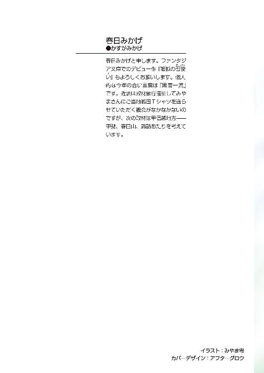
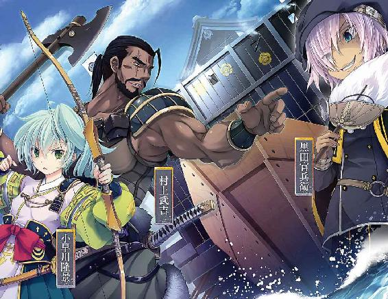
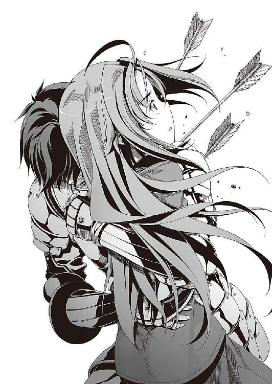
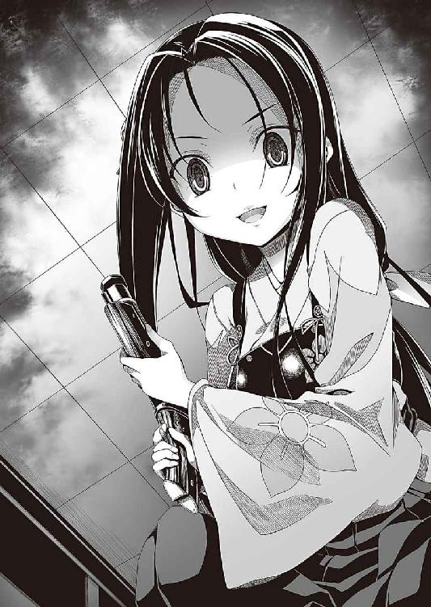
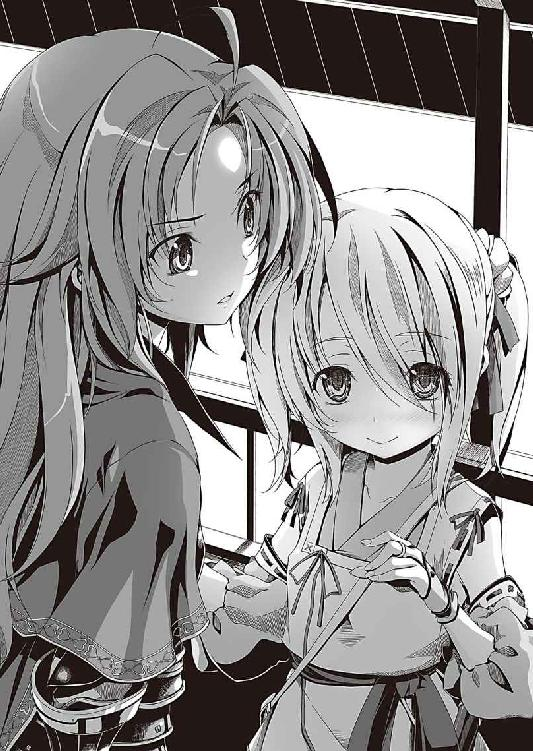
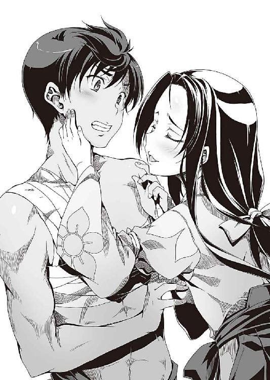
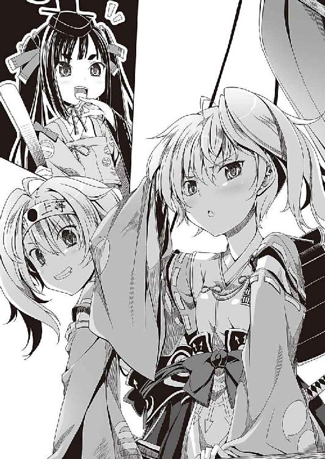
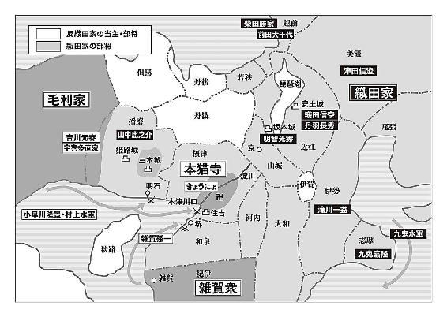

| 織田信奈の野望11 全国版 | |
| 春日みかげ | |
| Kadokawa / 富士見書房 (2014) | |


織田信奈の野望 全国版11
春日みかげ

富士見ファンタジア文庫
本作品の全部または一部を無断で複製、転載、配信、送信したり、ホームページ上に転載することを禁止します。また、本作品の内容を無断で改変、改ざん等を行うことも禁止します。
本作品購入時にご承諾いただいた規約により、有償・無償にかかわらず本作品を第三者に譲渡することはできません。
本作品を示すサムネイルなどのイメージ画像は、再ダウンロード時に予告なく変更される場合があります。
本作品は縦書きでレイアウトされています。
また、ご覧になるリーディングシステムにより、表示の差が認められることがあります。
口絵・本文イラスト みやま零
巻ノ一 木津川口海戦始末
時は戦国時代──。
次代の覇者は、全国多数のにゃんこう宗門徒たちの心をつかんだ大坂本猫寺か、それとも天下布武を掲げる織田信奈か。
摂津を舞台に陸と海とで同時に繰り広げられた本猫寺・毛利連合軍と織田軍との決戦は、本猫寺側の圧勝で終わろうとしていた。
木津川口での海戦では、毛利方に味方した瀬戸内の海賊衆・村上水軍が、その圧倒的な機動力と火力を用いた自爆特攻によって、織田方の九鬼水軍を殲滅。
陸では、本猫寺方の鉄砲傭兵集団・雑賀衆が、織田信奈率いる織田軍旗本衆と史上初となる鉄砲隊同士の一大銃撃戦を繰り広げ、鉄砲の数と熟練度に劣る織田方をついに破った。
雑賀衆の総大将・雑賀孫市が放った銃弾を受けて脚を負傷した織田軍の総大将・織田信奈は、配下の相良良晴や明智光秀、滝川一益らとともに、川から陸へと乗り上げてきた戦船を急造砦として籠城を試みたが、村上水軍と雑賀衆らに水陸から包囲されて絶体絶命となった。
織田信奈は「金ヶ崎の退き口」をはじめこれまでになんども敗戦を味わってきたが、これほど完膚なきまでに敗れ、追い詰められた経験はなかったといっていい。
砦の周囲、三方の陸には雑賀衆の鉄砲部隊、一方の川には村上水軍の大船団。
もう、どこにも逃げ場がなかった。
包囲網を突破しようにも、信奈自身、多量の出血によって移動することも困難だった。
援軍もない。織田家の各部隊は、各地で起きた一揆によって動けなくなっている。
船砦へと追い詰められた信奈は、義妹・蒲生レオン氏郷のすすめに従って、禁断の兵器を用いざるを得なくなった──やまと御所に伝わる古代兵器「三種の神器」を発動させたのだ。
だがその三種の神器の正体は、敵をなぎ払う破壊兵器ではなく、この世界と彼方の世界とをつなぐ「天岩戸」を開く鍵だった。
しかも、天空に開いた天岩戸へ連なる階段の前で「俺は帰る」「帰さない」と逡巡する信奈と良晴の二人の姿が、日ノ本各地の空に同時に映し出された。まるで蜃気楼のように。
信奈による天下布武を理想とする少女・蒲生レオン氏郷は、三種の神器を用いて、万人が見守る中、相良良晴を彼方の世界へと送り返すことで、この危機を乗り切ろうと考えていたのだ。
民心が信奈から離れ全国で一揆が発生した一因は、未来から来た身分すら持たぬ風来坊・相良良晴との禁じられた恋の噂にある。
織田信奈はあのような得体の知れない者と恋仲になってこの国の身分制度を破壊しようとしている、と特権階級である武士や地侍・土豪たちが怒り、「許されぬ身分違いの恋に惑った織田信奈はやまと御所を乗っ取って自ら姫巫女になり、相良良晴を関白にしようとしている」という怪文書が何者かの手で全国に配られ、信奈の非常識さに不安になった民たちもまた次々と一揆に参戦した。
やまと御所簒奪の汚名を着せられた信奈が天下万民の前で相良良晴を彼方の世界へ帰せば、濡れ衣は晴れる。
本猫寺は、信奈と戦う最大の大義名分を失う。
全国で多発している一揆を沈静化することもできる──。
氏郷は、そう信じて信奈に三種の神器を発動させた。
よもや、信奈が、天下万民が固唾を飲んで見守っている前で、
「たとえ死が二人を引き裂こうとも、わたしの心は、いつまでも良晴とともに。わたしの伴侶は生涯あなただけよ」
信奈を振り切って帰ろうとしていた良晴に、死を覚悟した接吻を与えるとは、夢にも思っていなかった。
氏郷はまだ恋を知らない少女だった。天下布武に突き進む英雄・信奈に淡い憧れと恋心のような感情を抱いていたが、信奈が相良良晴へ抱いている想いを理解できるほど氏郷は成熟していなかった。
なぜ信奈と良晴が接吻する姿を目の当たりにした自分が震えながら泣いているのかも、理解できなかった。
日ノ本の誰もが、信奈と良晴の恋の噂が真実であったことを、知った。
取り残されて階段の下から二人をただ見守ることしかできなかった、明智光秀も。
そしてこの時、天空へ連なる階段を上りかけていた良晴と信奈の身体は、地上で大鉄砲・八咫烏を構えている鉄砲名人・雑賀孫市から丸見えだったのだ。
雑賀孫市にはべる雑賀衆の少女たち──蛍、小雀たちが、固く抱きあい口づけを交わしている信奈と良晴の頭に八咫烏の照準を合わせていた孫市に、決断を迫った。
織田信奈と相良良晴の運命は今この時、孫市の掌中にあった。
「孫市さま！」
「織田信奈さまは、なにも、お捨てにならないと──」
「相良良晴と添い遂げると」
「天下万民の前で、そう、宣言なされました！」
「撃ちますか、それとも」
「この国の未来は、孫市さまのお心ひとつで決まります」
紀州の土豪の跡取り娘・天衣無縫の雑賀孫市は、雑賀の鉄砲部隊が誇る圧倒的な武の力でこの戦には勝利したが、己個人としては織田信奈に敗れた、と悟っている。
自分はただ自分自身の自由のために暴れてきた。われこそは天衣無縫。そう信じていたが、この戦に駆り出されたのは本猫寺との友誼のためであって孫市の本意ですらない。が、織田信奈は違う──織田信奈は、百年にわたって混迷し続けているこの日ノ本の戦乱を終わらせるために、まったく新しい価値観をもたらそうとしている、そのためにあらゆる汚名を受けながら自らの意志で戦っているのだ、と思い知らされたのだ。
自分とは器が違う、と孫市は痛感させられていた。
相良良晴との身分を超えた恋も、天下布武も、従来の日ノ本の価値観というものを超越した信奈にとっては等しく価値があり、等しく自分の命を賭すに値する夢なのだ。
（なんちゅう、強欲な女や）
この英雄をここで葬ってしまえば、この国の歴史は変わってしまうだろう。おそらくは、つまらない方向へ──。
が、織田信奈を見逃せば、信奈は自身が最後の一兵になろうとも必ず再起してくる。ぜったいに、あきらめない。命が尽きるまで、信奈は立ち止まらない。この戦乱はさらに続く──。
「孫市さま！」
それ以上迷っている猶予は、孫市には与えられなかった。
この遠距離から信奈を正確に狙撃できる名手は、鉄砲名人の孫市だけではなかった。
ありえない弓矢の達人、という者が戦国時代にはごくわずかながら、存在する。
たとえば、かつて信奈に滅ぼされて城を追われた、南近江の六角一族──六角承禎とその息子・六角義治。
甲賀へ逃れて消息を絶った六角親子は、蒲生レオン氏郷の旧主でもある。
その六角親子ならば、これほどの距離から信奈の頭を正確に射貫くことも、可能なのだ。
「......～～!?」
孫市は、言葉にならない叫びを上げながら、八咫烏を撃っていた。
信奈と良晴の頭をともに貫通する勢いで、遠方から、一本の矢が放たれていたのだ。
孫市は、その矢に、空中で種子島の銃弾を当てて消し飛ばした。
とっさに、信奈と良晴を、守っていた。
理屈ではない。
種子島を自分の肉体の一部と化すまで調練してきた孫市の指が、自ら意志を持ったかのように二人を守ろうとしていたのだ。
「あれほどの距離から、あの強弓！」
「孫市さま、あれはいったい？」
「けんにょはんを狙撃して、織田家と本猫寺の和平を潰したやつや！ こないな無益な戦をやらせよってからに......！」
次々と、信奈めがけて矢が放たれる。
良晴が、信奈を抱きしめてかばった。
階段の下で呆然と固まっていた明智光秀たちが、慌てふためいて階段を上りはじめた。
人の足では間に合わん、矢のほうが速い、と孫市は叫んだ。
「蛍！ 八咫烏改、弐式！」
「弐式です！」
「矢を何本放っても、織田信奈には一本も当てさせん！」
次の種子島を受け取った孫市が、矢をもう一本、銃弾で消し飛ばした。
しかし、間に合わない。
なぜなら──。
「しもた。射手は二人おる！ あかん。うち一人では......！」
孫市は絶望した。
おそらく射手の一人は、信奈に滅ぼされて甲賀へ逃れた元戦国大名の六角承禎。
これまでなんども織田家包囲網に参加して再起をはかってきた男であり、日置流弓術の家伝を継承したほどの天才。戦国を代表する弓矢の達人である。
もう一人は、六角承禎の息子・六角義治だ。
まだ若いが、父親の弓の才能を受け継いでいると言われていた。
これほどの遠距離から矢で人間を狙撃できる射手は、この二人しか考えられない。
対する孫市は、ただ一人。
六角親子が同時に放ってくる矢を、ついに、防ぎきれなくなった。
信奈を抱きしめてかばっていた相良良晴の背中に、三本の矢が、いっせいに突き刺さっていた。
矢を受けた良晴の鼻と口から鮮血が溢れてくるさまを、それでもなお信奈を守ろうと矢面に自分の背中を向けて立ち続けている姿を、孫市は見た。
「......良晴はん!?」
あかん。助からん、と孫市は思った。
信奈は、薄れていく意識にあらがいながら、良晴の身体を突き飛ばしていた。
自分の的になっている良晴をかばうために、突き放して距離を取ろうとしたのだろう。
明智光秀、滝川一益たちが、階段から崩れ落ちていく信奈の身体を抱き留めた時。

相良良晴の身体は、宙を舞って、そして──砦の背後に流れる鉄砲水の中へと落ちていた。
良晴の帰還を待ち受けていた「天岩戸」は、この時、不意に閉じられていた。
決壊した激流へと落ちた相良良晴の行方は、そのまま、わからなくなった。
折から川の水量が増えていたところへ、良晴が堤を切って氾濫させていたためだろう。
氏郷たちに抱えられて甲板へとおろされた信奈は、もうろうとした意識の下、関白・近衛前久のカン高い叫び声を聞いていた。
「者ども、姫巫女さまからの御綸旨が届いたでおじゃる！ 本猫寺、織田軍、ともに撤兵してこれより半年の間、和睦いたすでおじゃる！ 寺社と武家とはこれ以上戦うべからず！ ともに、日ノ本を支える両輪となって力を合わせよ！ それが姫巫女さまのご意志でおじゃる！」
和平交渉に口を挟んで失敗した近衛前久は、まだ、停戦をあきらめていなかったらしい。
ほんものの御綸旨なのか、近衛がとっさに捏造した偽物なのか、今は考えている場合ではなかった。
明智光秀が「心得たです、謹んで御綸旨を拝受いたしますです！」と近衛にひれ伏している姿が、甲板に寝かされて青空を見上げている信奈の視界の片隅に映っていた。
信奈たちを包囲していた雑賀孫市のもとにも勅使が駆け込んできて、そして孫市はその御綸旨をすぐに受けた。
孫市は「許せん」と六角親子をとらえようとして雑賀衆を戦場のあちこちへと放ったが、すでに六角親子は姿を消していた──おそらく、潜伏先の甲賀へとすばやく逃げ去ったのだろう。
甲賀は忍びの里だ。六角親子には、手練れの忍びが護衛としてついているのだろう。
本猫寺当主のきょうにょがこの御綸旨を蹴れば、信奈の命運は尽きていたはずだった。
だが、きょうにょは、御綸旨を蹴らなかった。
きょうにょ自身も、一揆に加わった本猫寺の門徒たちの多くも、織田家と戦う意欲を失っていたのだ。
彼女たちは、人類史上初の鉄砲隊同士による大銃撃戦を目撃し恐怖と衝撃におののき、本猫寺の教義である「笑い」を捨てて死に神と化した雑賀孫市が屍体の山を築いて血の海を進軍していく凄惨な姿に怯え、そしてそんな揺れ動く心のままに、天空にその光景を見た。
織田信奈と相良良晴の、決して越えられない身分の壁に阻まれた悲恋を。
良晴が信奈の盾となって背中に矢を受けていくさまを。
そんな良晴を、信奈が突き飛ばして矢から守ろうとした姿を。
種子島──そして、「天岩戸」が開くという奇跡すらかすむ、織田信奈と未来人の禁断の恋。
彼女たちは、この混乱と絶望の時代に、まったく新しい世界の扉が開かれた、そう直感していた。
雑賀孫市は雑賀衆を率いて紀州へと戻り、村上水軍は木津川口を出て瀬戸内の海へと帰った。
織田領の各地で一斉蜂起した門徒たちの一揆も、それぞれいったん解散となった。
信奈に既得権益を奪われた旧支配者層──各地の土豪・国人の勢力だけが、細々と抵抗を続けることになった。
本猫寺・毛利連合軍と織田軍との合戦は、半年の間、水入りとなった──。
織田家は、四面楚歌の窮地をかろうじて脱した。
だが、たった半年という期限付きである。
そして、相良良晴の行方は、まったくわからないままとなった。
人々は、「相良良晴は織田信奈を守るためにわが身を盾として立ち往生したのだ」「いや、相良良晴は織田信奈に天下を盗らせるために天岩戸をくぐって彼方の世界へと帰ったのだ」とささやきあった。
本猫寺との停戦成立からしばらくして、織田領の各地から主立った家臣たちが京に集まってきた。
脚を負傷した信奈は、停戦後、京の本能寺で傷を癒やしていたのだ。
「幸い、骨は無事であったのでな。孫市の弾丸が逸れて直撃を免れたおかげじゃ。八咫烏の弾が直撃しておったらその場で脚がもげておったわ。もう歩けるわい。よいぞよいぞ」
名医・曲直瀬ベルショールから「快復」の太鼓判をもらった信奈は、その日の朝から、本能寺の境内に寝転がって善後策を練っていた。
あの天岩戸開きの際に失血から失神して、良晴の腕の中で意識が遠くなった。それ以後の記憶がほとんどない。
目が覚めたら、本能寺の布団の上だったのだ。
相良良晴が姿を消したという報告も、まるで夢のようだった。
いまだに実感がない。
良晴が戦場から消え、周囲を完全に包囲され、信奈自身は瀕死となって失神。どうやってあの修羅場から生還できたのか、いぶかしく思ったりもする。
どうやら、近衛前久と姫巫女にかろうじて救われた、らしい。
「姫さま。にゃんこう宗門徒たちは、姫さまへの敵意をなくしています。むしろ心情的には姫さまのお味方となった者が多いみたいです。これも、身を挺して姫さまをかばったサルの手柄ですっ」
信奈の隣で、越前で一時は一揆に囲まれて苦戦していた猛将・柴田勝家が、「姫さまのお美しいご尊顔をはじめてその目で見た民草は男女問わず姫さまに夢中です！ 当然ですよねっ」と胸を張っていた。
「デアルカ」
「いきなり天空に姫さまとサルの姿が浮かび上がった時にはどうなるかと思いましたが、男はことごとく姫さまの美貌に心を奪われ、女の子たちは姫さまとサルの悲恋に涙して姫さまのお味方になったようです」
「そう。男ってほーんと、単純ね」
今はなき斎藤道三とはじめて対面した時も、あの蝮ともあろう者がわたしの艶姿に狼狽していたわね......と、信奈はずっと昔のことのように道三との出会いを回想していた。
「相良どのの行方が知れないことが気がかりですが、あの天岩戸開きによって姫は民の心をつかみました。奇跡です。蒲生どのに、八十点」
利休が点てた茶を飲みながら、信奈の姉代わりをつとめている丹羽長秀が「相良どの不在ゆえに十点と言いたいところですが、盛っておきます」と悲しげにほほえんだ。
「サルはどうせ生きてるって、長秀。あいつが姫さまを置いて勝手に死ぬわけないだろっ」
「ですね、勝家どの。相良どのの生き汚さは驚異的ですから」
「そうだよ。そのうち、サルはふらりと帰ってくるさ。その時は、姫さまに無断で留守したことを責めて殴ってやるからなっ」
「......こくこく」
虎のかぶり物をかぶったかぶき者の前田犬千代が無言で、しかし大きくうなずいた。
みな、良晴は生きている、という前提で信奈に接している。
信奈を気遣って演技をしているのではなく、誰もが良晴の生存を信じているのだ。
「いやあ。ついにサルくんとの恋仲が天下に知られることになりましたね、姉上。サルくんが戻ってきたら、しのごの言わずに祝言をあげましょう」
信奈の弟、津田信澄がういろうを犬千代に与えながらご陽気に笑った。
「さすがに、それは無理です～。サル晴さんと掟破りの祝言ということになれば、サル晴さんが織田家を去ったために上洛する機会を逸している武田家と上杉家に、またまた上洛の口実を与えることになっちゃいます～。そうなると、武田家の防波堤と化しているわが松平家が最初に消し飛びます～」
遠江から駆けつけてきた信奈の妹分・松平元康はぶるぶると怯えている。
織田家とは同盟関係にある松平家だったが、西へ進出した織田家ばかりが膨張して東を受け持つ松平家はずーっと武田信玄に攻撃される一方というわけで、最近はすっかり信奈の家臣というか妹分扱いである。
「許されぬ恋仲だった兄さまがいなくなったので、姫さまが天下に同情されて人気者になったということですな？ 兄さまが姫さまとくっついたら、また敵だらけになるのですな？」
良晴の妹・ねねが、ういろうをぱくぱくとほおばりながら長秀に質問した。
金ヶ崎の退き陣の時には良晴が戦死したと聞いて号泣したねねだったが、今は良晴の生還を誰よりも強く信じている。
「そうですね、ねねどの。女の子はともかく、男たちはそうなるでしょう。姫の美貌に彼らが心を奪われた以上、姫のお心を盗んでいった相良どのはいまや天下の男たちにとってやっかみの対象です。ありていに言えば、『死ね相良良晴！ 貴様は零点だ』という扱いです」
「おお。つまり天下の男児の多くが、川並衆になったようなものですな！」
「むろん織田家の足軽たちや相良どのになじみの深い領民は別です。みな相良どのを慕っておりますから。ただ、他国の者は相良どのをよく知りませんから」
「まったく、相良氏も罪作りな男でござるな。どーせどっかで鼻の下をのばちて浮気ちているにきまっているでごじゃるよ」
忍びの集会から帰還した蜂須賀五右衛門は、苦虫をかみつぶしたような顔で天井からぶらさがっていた。
「......そうです、どこかで浮気していやがるに違いないです。というか信奈さまと浮気するなんて......」
信奈の片腕とも言うべき文武両道の智将・明智光秀は、最近なぜか短筒の手入れを欠かさない。
フロイス経由で売ってもらった南蛮渡来の短筒を、このところ、暇さえあればしこしこと磨いている。
「......婚約不履行ですよ。いくら戦場で追い詰められてとち狂っていたからって、信奈さまの唇を奪うとか、不義不忠の輩にもほどがあります......」
長秀たちが、そんな光秀を眺めながら（いつも妙といえば妙ですが、ほんとうに様子が妙ですね）（......母君のご病気が重くて大変らしい）（あれだろ。女の子の日なんだよ、うん）（勝家は相変わらずだねえ、このままじゃ旦那さまは見つからないよははは）と約一名を除いて心配顔。
良晴の婚約者を自認する光秀は、なおも「あの接吻はなにかの間違いです、戦場では人はおかしくなるものです。いえ、きっと信奈さまが民の心をつかむためにとっさの策をひらめいてそれを実行したのです」とあーだこーだつぶやいている。
信奈は（十兵衛が妙だわ。やっぱりわたしと良晴が恋仲だと知ってしまったことが衝撃だったのかしら。いずれ十兵衛と話をつけないと）と思いながらも、今は目の前の諸問題に対応しなければならなかった。
東に武田信玄と上杉謙信がいて、いずれも織田家を倒して上洛するという野心を隠さない。
西にはなおも毛利が立ちはだかり、さらに足下である摂津の中心には本猫寺、紀伊には雑賀衆。
半年の停戦期間が終われば、毛利・本猫寺と再び合戦になるだろう。
その隙に武田か上杉が上洛してくれば、織田家はこんどこそもたない。
（まして、良晴がいないままだなんて......ううん。良晴に頼りきりじゃダメよ。良晴がいない今こそ、歯を食いしばって踏みとどまらなくちゃ......もしも、もう良晴が戻ってこないとしても......）
良晴はもう、戻ってこないかもしれない。
わたしをかばって、死んでしまったのかもしれない。
相良良晴、討ち死に。
その可能性は、高かった。
信奈だけでなく、織田家の誰もが、薄々感じていることである。
あの戦場で織田軍は良晴を徹底的に捜索したが、ついに見つからなかったのだ。
（せめて、未来の世界に無事に帰っていて、そしてお父さんお母さんと再会していてほしい）
蒲生氏郷いわく、三種の神器の霊力は今回の奇跡で使い果たされた。もう、天岩戸を開くことはできない──もし未来に良晴が帰還していたとすれば、信奈は永遠に良晴と会えないのだ。
（それでも、良晴が、生きていてさえくれれば）
信奈は、不意に湧きあがってきそうになった涙をこらえながら、有馬温泉での療養を終えて復活なった竹中半兵衛と黒田官兵衛の二人少女軍師に、「今後の策を具申しなさい」と命じた。
竹中半兵衛と黒田官兵衛も良晴が消えたことに衝撃を受けているが、今は軍師として知恵を絞りこの難局を打開するしかない。
「くすんくすん。先日の合戦でおわかりになったでしょうが、川と海に守られた本猫寺を陸から攻め落とすことは不可能です。さりとて、摂津の要所を押さえている本猫寺を放置したまま中国に遠征して毛利と決戦するのは無理です。それこそ退路を断たれます。門徒さんたちが信奈さまに共感を覚えたからといって、いったんはじまった合戦がこのまま終わる道理はありません。くすんくすん」
半兵衛は良晴の失踪以来、毎日目を真っ赤に腫らしている。
今は半兵衛の無二の親友となっている官兵衛が、そんな半兵衛の細い肩を支えながら、うなずいた。
「シム。本猫寺を封じなければ、織田家はこのまま防戦一方だ。もう一度木津川口を封鎖して、毛利からの兵糧と援兵の搬入を絶つしかないよ」
「はい。官兵衛さんのおっしゃるとおりです。水路を封じれば、毛利さんも雑賀衆さんも本猫寺に加勢できなくなります」
「でもその木津川口では、左近率いる九鬼水軍が毛利方の村上水軍に蹴散らされたわ。村上水軍の強さは異常よ。中国の小さな勢力にすぎなかった毛利家が厳島の合戦で勝利して中国の覇者となれたのは、瀬戸内の海を支配する村上水軍が味方したからだって言われていたけれど、ほんとうだったようよ」
「その滝川一益さまから、村上水軍に勝つ案をいただいております。くすんくすん」
「左近から？ そういえば左近とレオンが顔を見せないわね」
信奈の妹分で織田家四天王の一人・滝川一益は九鬼水軍を率いて、村上水軍に大敗した。
近江の名門の娘・蒲生レオン氏郷は信奈の人質から義妹へと引き立てられた少女で、三種の神器を合戦に投入して信奈の危機を救った──だが、信奈と良晴の恋仲が天下に知られるきっかけを作ってしまい、停戦後は自ら謹慎している。
お互いに、「信奈の妹」の立場を自認して譲らず、仲違いしていた二人だったが──。
「今、二人は力を合わせて村上水軍に勝つ作戦を一緒に練ってるんだよ。特に、三種の神器を戦場で使わせた蒲生レオンはかなり反省しているよ」
官兵衛が「でもレオンはどうやって三つ目の神器を手に入れたんだろう」と首をひねった。
「このシメオンも、もともとは三種の神器を使って天岩戸を開き、相良良晴を未来へ帰すつもりだったんだよ。動機はだいたいレオンと同じさ。ただ、三つ目の神器・勾玉は源平合戦の際に瀬戸内の壇ノ浦に沈んで失われていたはずなんだ。あそこは村上水軍が支配する海域だから、勾玉を手に入れるのは容易じゃなかったはずだよ」
「デアルカ。レオンはたしか、南蛮の宣教師ガスパールから勾玉を送られたって言っていたわね。あの子はキリシタンだから、そのつながりでしょうね」
「宣教師さんですか。海の向こうから来た宣教師さんがどうしてすでに忘れられた日ノ本の神話や三種の神器にそれほど詳しいのでしょう。くすんくすん」
「ふむ。宣教師と言っても、本業は別にあるのかもしれないよ。フロイスのように宣教師が本職という者ばかりじゃないからね。商人とか軍人とかいろいろいるからね。九州でこのシメオンに洗礼を施してくれた宣教師は、もともとは交易のために日ノ本に来た商人だったよ」
「デアルカ......宣教師も、ザビエルやフロイスのような布教目的の者ばかりじゃない......少し、きな臭い話ね」
いずれにしても、今はその宣教師ガスパール──九州のキリシタン大名・大友家のもとに滞在しているらしい──について調べている余裕はなかった。
村上水軍と再び戦い、勝つ。
それ以外に、この包囲網を突破する方法はないのだ。
「くすんくすん。官兵衛さんが打開策の大筋を考えられました。海での実戦に長けた滝川一益さまと蒲生氏郷さまが、まもなく信奈さまのもとを訪れて具体的な献策を直接されると思われます。膨大な予算がかかりますが、織田家のすべてを投入すべき時かと」
「まあ案だけならしょせん絵に描いた餅だが、この天下一軍師のシメオンなら策を具体化できる。ふふふ」
きっとわたしがひらめいた策と播磨が考えている策は同じね、と信奈がほほえんだ。
「くすん。信奈さまは天岩戸開きにより、新しい人の生き方を天下万人に知らしめました。神仏に頼らず、身分の壁のような因習を越え、純粋な恋に生きるという新しい道です。これで民心は信奈さまへと一気に傾きました。本猫寺門徒の一揆は沈静化していくでしょう。あとは、信奈さまが圧倒的な武威を示して志だけでなく力をも備えていることを知らしめれば、天下布武は実現します」
わ、わたしには別にそんな意図はなかったけれど......というかあの時は意識がもうろうとしていて......天下万民に良晴との接吻を見られたとか冗談でしょ......と信奈は赤くなったり青くなったりしながら、手にしていた茶器をくるくると回した。
（ああもう、なんてことしてしまったのよわたしは！ ぜんぶなかったことにしたいっ！ 思いだしちゃった！ 死にたい、死にたいっ！ 誰かわたしを殺してっ！）
思わず衝動的に叫びたくなったが、良晴はほんとうに死んでしまったのかもしれない、と思うとそういう軽口を叩く気分にはなれない。しかし、いくら追い詰められていたからってなんという恥ずかしいまねを天下万民の前でわたしは......あれじゃ良晴がわたしに惚れているんじゃなくて、まるでわたしのほうが良晴に骨抜きにされてるみたいじゃない......接吻......人前で......接吻......いやあああ！ 信奈はなんども襲ってくるめまいに耐えた。
そして、あいつが戻ってきたら無慈悲なお仕置きだから、と心に決めた。
「もっとも、相良良晴があの接吻の直後に戦場から忽然と消えてしまったから、天下の同情が織田信奈に集まったのだけれどもね。少なくとも男どもはそうだよね。相良良晴が戻ってきたらきっと身分にうるさい各地の地侍や国人どもはほとんど織田家の敵になるな、サルが天下人をかっさらうなどという史上最大の下克上は許さないとか言いだして。ふふふ」
「はい、官兵衛さん。信奈さまのあの神々しいお姿に動じなかった殿方は、上杉謙信さんを毘沙門天の化身とあがめ奉っている上杉家の男武将さんたちくらいだそうです。越後の殿方は皆さんちょっと特別らしいですから、ふふ」
半兵衛が苦笑いし、勝家たち家臣団もどっと沸いた。
そんな中、光秀だけがどんよりと沈んでいた。
「もしかして......先輩はもう戻ってこないのではないですか」
短筒をせっせと磨きながら、そんな禁句をぼそりと口走った。
一同が、しーん、と静まりかえってしまった。
「じゅ、十兵衛。みんな良晴がいないからって落ち込んでいたら、良晴に悪いと思って、空元気を出してるんじゃない。ねねなんて、まだちっちゃいのにけなげなものでしょ？ たまには空気読みなさいよ」
「でも。信奈さまたちは、先輩が見つからなかった場合、この先何十年も先輩が生きているという前提でお芝居を続けるですか？」
ちょ。明智どの空気読めなすぎ三点です。悪い子ですぞ！ と勝家たちがあわてはじめた。
「十兵衛！」
「十兵衛は、とても耐えられないです」
信奈と光秀は、互いに睨みあった。
「わたしたちは良晴が生きていると信じているだけよ。芝居をしているんじゃないわ。金ヶ崎の時だって、良晴はちゃんと生還したじゃない？」
「あの時は前鬼が忍法を用いたのと、この十兵衛が身を挺して瀕死の先輩を救出してやったから奇跡的に助かっただけです。今回は違います。十兵衛はただ見ていることしかできませんでした......十兵衛の責任です。もう、先輩は......十兵衛の手の届かないところに......」
「十兵衛？ どうしちゃったのよ。元気を出しなさい！」
「だって。先輩と信奈さまが禁断の恋仲だとか、そんなの、ありえねえです！ 先輩がほんとうに生きて戻ってきたらどうするつもりですか!? 本気で祝言でもあげやがるですか？ そんなことをやったら、こんどこそ織田家滅亡です！ どうして......どうして、信奈さまは......」
「......十兵衛」
「あんなまね、仮に先輩を引き留めるためのお芝居だったとしてもありえないです！ 信奈さまは、天下も恋も両方自分のものにすると宣言することで、武田信玄と上杉謙信を挑発したですよ？」
「た、民は、なぜか支持してくれたわよ？」
「それは、先輩が消えたからですぅ！ のこのこ戻ってきたら大騒動ですぅ！ だいいち民にいくら支持されても武田信玄と上杉謙信を敵にまわして勝てるはずないですよっ」
「十兵衛？ 今日はまるで冷静さを欠いてるみたいだけど。もしかして、わたしが良晴と接吻したことを怒ってるわけ？」
「ちちちち違いますですっ！ どどどどうしてこの名門・土岐源氏の血筋をひくこの高貴な十兵衛がががががが。うきーっ！」
「......ごめん。わたしも、ちょっと言い過ぎたみたい」
信奈は、光秀の気持ちを思いやって、それ以上反論するのをやめた。
本人は頑として認めないだろうが、信奈にはもう、はっきりとわかってしまっていた。
光秀は、ずっと良晴に恋をしていたのだ。
はじめは、同じ戦場で戦う先輩への友情や敬意のような感情だったはずだ。
それが、いつの頃からか、恋になっていた。
いったいいつからだったのだろう、と信奈は思った。
レオンは、わたしの良晴への想いを理解してくれたという。
あの子はまだ恋を知らない歳だから、わたしの良晴へのこの感情を計算に入れることができなかっただけ。まさか天岩戸を開いた時に、わたしがああいう行動に出るとは予想していなかった。それはレオンが幼かったから。
でも、十兵衛は──。
信奈は、今までこの話題に踏み込むことを避けてきた。
いや、良晴に夢中で、光秀が抱えている葛藤にまで気が回らなかったのかもしれない。
その良晴が消えてしまった今だからこそ、信奈は光秀と自分が陥っている事態の深刻さに気づくことができたのかもしれない。
「みみみ光秀っ！ 主君の恋路に口出しする資格はあたしたちにはないぞっ！ そもそも、姫さまと祝言をあげる相手はこの勝家だから問題ないっ！」
「なにやら、主君と家臣の間で泥沼の修羅場が展開しつつある様相。これまでの織田家ではなかった事態。五点です」
「あのう......お二人とも、仲違いはダメです......良晴さんが悲しみます。くすんくすん」
「そうかな半兵衛。あいつはサル顔になって喜びそうだけどなあ。俺さまは罪作りなくらいにモテモテな男だぜ、とか言ってさ」
「ですな、軍師どの！ 兄さまはきっと得意満面になりますぞ！」
「うにゅう。相良氏が一人しかいないのが問題なのでござる。分身の術で相良氏の身体をふたつにわければよいでごじゃる」
「やあどうやるんだい、乱破くん」
「それはでちゅな。種も仕掛けもない巨大のこぎりで、相良氏の胴体を、ぎーこぎーこと」
「それじゃサル晴さんが死んじゃいます～」
「......おなかすいた」
勝家たちが、なんとか場の空気を回復しようとつとめて大騒ぎした。
「......ま、十兵衛は先輩のことを人語を話すサルくらいにしか思っていませんから、信奈さまの悪趣味にこれ以上口は出しませんですが。でも今更のこのこ帰ってきたら問答無用で先輩はぶち殺すですよ」
信奈は思った。十兵衛はまだ、自分の恋心をはっきりと認めてはいないようだ。
今はだから、まだ仲のいい主従として、天下布武という夢をともに抱いた同志として、二人で同じ道を歩むことができる。
でもいつか十兵衛が「自分は先輩が好きです」という禁断の言葉を口にした時、わたしと十兵衛の関係は決定的に破綻するかもしれない、と信奈は予感していた。
おそらく光秀も同じことを予感し、だからこそ、自分自身の想いに気づくことを自らに禁じているのだろう。
もっとも──良晴が生きているという望みは、日に日に薄まりつつあるのだが。
それでも、夢は、捨てない。
信奈は思った。最後の最後まであきらめない、たとえわたし自身が炎に焼き尽くされる運命に落ちたとしても、生きている限り、命が続く限り、夢は捨てない。
わたしはそう決めた、戦場で散っていった名もなき足軽たち、蝮や弾正、そして良晴にわたしはなんども命を与えられたのだから、と信奈は奥歯を食いしばって、うなずいた。
「とにかく。良晴が失踪したからって、わたしはもう魔王になったりしないわ。良晴は生きている。そう信じて、昨日よりももっと強くなる。わたしが強ければ、良晴だって戦場であんな目に遭うことはなかったんだもの。みんな──わたしに力を貸して！ 特に十兵衛？ あんたはわたしが倒れた際の後継者なんだから、サルが失踪したくらいでうじうじしないの。頼むわよ！」
「......は、はいです」
信奈は、光秀のもとに歩み寄って、その肩を抱きしめていた。
「わかって。たとえ途中で倒れても、誰かが夢を継いでくれれば、それは死んでいないのと同じなの。だから、良晴も死んでいない。十兵衛」
「......すみませんでした、信奈さま。あまりのことに、取り乱してしまったです」
「わたしこそ、ごめんなさい」
光秀にだけ聞こえる小声で、信奈は、心からわびていた。
「......信奈さま？」
その言葉の意味は、まだ今の光秀にはわからない。
いつか、わかってしまう時が来る。
その時こそ、信奈と光秀が築き上げてきた夢のすべてが破綻する時なのかもしれない。
それでも、光秀の沈んでいた心を、信奈はすくい上げた。
長秀がそんな信奈の心をいたわるように、「姫はまたお強くなられました。満点です」と笑った。
そんな本能寺に、まもなく、不意の来客があった。
お歯黒の麻呂こと関白・近衛前久が、大きな籠を背負って「織田信奈に用があるでおじゃる」とやってきたのだ。
信奈は茶人の千利休一人を連れて、近衛前久を狭い茶室に通した。
近衛には王政復古──つまり京の貴族によるまつりごとを再開するという野望があった。武家による天下布武を掲げる信奈とは長らく敵対してきた近衛だが、今では数々の試練を乗り越えて成長した信奈に全面降伏した形となっていた。
「近衛。あんたが雇っていた影の軍師とやらが暴走してこのたびの本猫寺との合戦になった件、けんにょが射られた件は──姫巫女さまの御綸旨をでっちあげて和睦に持ち込んでくれた功績に免じて、なしにしてあげるわ」
「ほっほっほ。それだけ憎まれ口が叩けるのなら、織田信奈はまだまだ健在でおじゃるな」
「それで、その籠はいったいなに？」
「......ここだけの話、おそれおおくも姫巫女さまでおじゃる。お忍びでおじゃる」
「えっ？ かっ、籠の中に？ あんたがいちばん不忠なんじゃないの？」
「ええい、いろいろあったのでおじゃる！ ささ、姫巫女さま。織田信奈に直接、お言葉を」
「......わかった」
やまと御所の頂点に立つ幼い姫巫女が、籠の中から姿を現した。
純白の巫女姿だ。
南蛮風の漆黒の衣装を身にまとった利休が「どきどき」と緊張して震えている。
しかし、茶に関してはどれほど緊張しようとも決して失策を犯さないのが、利休が茶聖と呼ばれるゆえん。
「......（どうぞ）」
「こく、こく」
見事に、姫巫女に茶を献上した。
おいしい、と姫巫女がほほえんだ。
「おだのぶな。こたびは、たいぎであった」
「姫巫女さま。三種の神器を無断で用いたこと、お詫びします。神器は御所へ返還することになっています。詳細は、近衛との間でこれから詰めます」
「そなたは、かみのちからをよびおこしながらも、そのかみのちからを、もちいなかった」
「はい。レオンによれば、神器は今回の天岩戸開きで最後の力を出し尽くしたとのこと。二度と作動しないそうです」
「そなたはこのくにに、ひとのよがきたことを、みなにしらしめてくれた」
「恐れ入ります」
幼いが、姫巫女は聡明である。
信奈は、三種の神器を発動させて天岩戸を開いた時、自らがこの国の──この世界の新たな神となることを天下に宣言することもできた。
しかし、信奈は、そうはしなかった。
人として、一人の少女として、相良良晴に恋していることを、堂々と明かした。
信奈は、三種の神器の奇跡を用いて神話の時代に逆行することを拒絶し、人間の時代が到来したことを天下に知らしめたのだ──。
姫巫女は、信奈の意志を、正確に汲み取っていた。
「おだのぶな。さがらよしはるは、いきている」
「はい。生きています。わたしは、いつまでも良晴の帰還を待ち続けます」
「しかし、よしはるがいないあいだも、そなたは、てんかふぶをすすめねばならぬ。とても、こんなんなみちのりであろう。ぶのちからでくにをおさめようとするそなたと、かみのちからでたみをすくおうとするほんびょうじとは、ならびたてぬ」
「たしかに戦局は困難な状況ですが、織田家には十兵衛や半兵衛たちがおります。必ずや」
「そなたがこのなんきょくをだかいするには、やはり、ほんびょうじをうわまわるけんいがひつようであろう。たとえば、せいいたいしょうぐん」
「しかし将軍の位には今川義元がついていますから」
「うむ。そなたはかみにはなりたくないであろうが──ちんは、ひのもとのせんらんをおわらせるため、いまこそ、そなたに──」
織田信奈。そなたに朕の位を譲ろう、と、姫巫女は言おうとしたのだ。
譲位の意志を、伝えようとしたのだ。
それで信奈は本猫寺当主を越えるはるか高みに立つことができる──姫巫女は神の眷属であり、日ノ本の身分制度の外に位置する、この国でたったひとつの例外的存在──信奈が姫巫女の位を継げば、あの相良良晴との恋を阻めるものはもうなにもない。
この姫巫女の決意を察した近衛が「おじゃああああ！ 姫巫女さま、なにを言われるでおじゃるか！ それ以上は口にしてはいけませぬでおじゃるうううう！」とあわてて止めに入った。
「おそれながら、それだけは、それだけは！」
「姫巫女さま。わたしは人として生きることをすでに選びました。それに──」
「それに？」
「南蛮には、羅馬教皇という由緒ある宗教的権威が存在し、王侯貴族の上に君臨しているそうです。日ノ本が南蛮の歴史と権威に対抗するためには、伝統ある御所と姫巫女さまが必要です。御所なくば、日ノ本はいずれ南蛮の文明の力に飲み込まれるでしょう。尾張の田舎から上洛してきたわたしが由緒ある姫巫女さまの位を簒奪すれば、南蛮の目には野蛮人の所行と映るはずです」
「そうか。おだのぶな。そなたは、てんかふぶのさきのことまで、かんがえていたのか」
「はい。その先が、わたしのほんとうの夢です」
「わかった」
からくも御所は守られたでおじゃる......と、力尽きた近衛ががっくりとうなだれた。
「さがらよしはるのけんでは、ちんとこのえになんでもそうだんするがよい」
「ありがとうございます」
「あやつをわが養子にして関白にせよという腹黒い要求は断じて飲めぬでおじゃる！ ......と言いたいところでおじゃるが、姫巫女さまに譲位されるくらいなら涙を飲んで相良良晴を関白・藤原良晴に仕立て上げるのもやむなしでおじゃる」
藤原家が終わっても姫巫女さまさえ守られれば御所はいずれ立ち直るでおじゃる......よよよ......と近衛が茶を飲み干しながら涙を流した。
「その話は良晴が帰ってきてからにしましょう、近衛。簒奪だのサル関白だのと黒い噂を立てられているし」
「相良良晴関白就任の要求は噂ではないでおじゃる！」
「あーはいはい。で、あんたと袂を分かって勝手に反織田家連合を動かしている影の軍師って誰よ？ いいかげん吐きなさいよ。そいつが、けんにょの暗殺を企て、わたしと良晴をも撃ったんでしょう？ これ以上放置しておけないわ」
「やつは六角ほどの名門の者を、戦場で忍びのように駒として使えるほどの男でおじゃる。隠れなき名門の血筋をひきながら、性格は猛獣のごとく凶悪、その武威は人外化生、さらに知恵深く奸悪。ただその者は流浪の身ゆえに銭だけがなかったのでおじゃるが、麻呂が軍資金を渡してしまったばかりに......」
「日ノ本三大悪人と呼ばれる蝮、弾正、宇喜多直家のほかに、まだそんなのがいたの？ 心当たりがないわね。謀神と呼ばれた毛利元就はもう死んでいるし、北条氏康はそうとうに腹黒いけどうら若い女の子だわ。もしかして甲賀か伊賀の忍び？ だとしたら名を知られていないのもうなずけるけど」
「名を明かすのは、姫巫女さまの前では、ちとまずいでおじゃる。次の機会に、でおじゃる」
「どうして？」
「下手をすれば、姫巫女さまをも害したてまつりかねない男でおじゃる」
「......狂ってるじゃない！ どうしてそんなやつに軍資金なんか渡したのよ！」
「深く反省しているでおじゃる。関白藤原良晴の件、時間はかかるが前向きに検討しておくでおじゃる」
近衛前久は、織田信奈に御所と姫巫女の未来を託す決断をしたらしい。
（関白藤原良晴。最初は近衛をからかおうと冗談半分で口にしてみただけだったのに。噓からでた実のような話だけれど──もしかしたら、わたし、ほんとうに良晴と祝言をあげられるかもしれない）
それなのに、肝心の相良良晴は、いっこうに見つからない。
良晴はいったいなにをしているのかしら、もしかしてほんとうに良晴はもう──そう思うと、信奈は泣きたくなった。
「おだのぶな。さこんは、げんきであるか」
「左近は、レオンと一緒に、村上水軍に勝つため奔走しています」
「そなたはそなたである。おもいのままにいきよ、ちんのことはあんずるな。そなたとあえてよかった。そう、さこんにつたえてほしい」
「......姫巫女さま？ まさか。ずいぶん似ているとは思っていましたが、もしかして？」
「そそそそれ以上はダメでおじゃる、姫巫女さま！ 織田信奈、そちはなにも聞かなかったでおじゃるっ」
信奈は、滝川一益が戦場であれほど揺れて戸惑っていた理由を、知った。
（忍びの者はそれぞれ、訳ありな過去を持つというけれど──こんなことって）
そして、すでに一益が、自分の過去を乗り越えていることも。
「お姉さまをはじめて見たのは、岐阜城を進発した織田上洛軍が、近江・観音寺城の攻略をはじめた時だったわ。私はあの頃まだ、六角家に仕える蒲生家の跡取り娘で、お姉さまとの合戦が初陣だったの」
本能寺からほど近い二条城の庭園でたくさんの書物を山積みにして並べながら、蒲生レオン氏郷は信奈との出会いを語っていた。
隣で膝小僧を抱えて聞いている幼い少女は、滝川一益である。
姫巫女とうり二つの姿形を持つ、巫女姿の姫武将。
甲賀の忍び出身。
甲賀から抜けて、尾張で力尽きていたところを信奈に拾われ、妹分になった。
「あの時は、のぶなちゃんの電撃作戦がはまって、支城を次々と落とされた六角承禎はあっさり甲賀へ逃げたの。肝心の本城・観音寺城は戦わずして空城になったのじゃ」
姫は伊勢攻略で忙しかったので、上洛戦には参加してないのじゃ、と一益が頰をふくらませた。
「私は、いつ果てるとも知れない戦国乱世に絶望していた。足利将軍家の権威は失われ、わが蒲生家が仕える名門・六角も浅井長政に押されて近江一国を支配する力すらない。まして武力を持たない御所や貴族にも、神仏をいただいて武力を蓄えている叡山や興福寺の僧兵にも、なにもできない。いたずらに民草が痛めつけられ、死んでいくばかり。世界はあまりにも混沌としていた。それなのに、幼い私はあまりにも無力で、いくら書物で知識を得ても誰も救うことができない。聖書などを読んでみても、現実はなにも変えられない──蒲生領でもうち続く合戦のために田畑が荒れ果てて、民草たちは塗炭の苦しみを味わっていた。それなのに書物では救えない。私は、そんな自分に絶望していたの」
「ませてるの。よっしーがおれば、お前は中二病だ、と言いそうじゃの」
「種子島を用いて山城を攻略するという新戦法を用いる織田軍が圧倒的な強さを見せていると知った私は、いっそ討ち死にしようと思って、お姉さまが率いる織田旗本衆の正面へと突っ込んだわ。種子島の弾を浴びれば、この苦しみに満ちた乱世の地獄から逃れられると思って。『殺して』と叫びながら」
「同じ絶望突撃でも、山中鹿之助とはちと動機が違うの」
「私は、撃ち殺されることはなかった。馬から引きずり下ろされて、お姉さまに頰をぶたれて、叱られた。『子供のくせにふざけたこと言ってないで、逃げずに生きなさいよ』となんども叱られながら、殴られたわ」
「のぶなちゃんらしいのじゃ。未来語で言うドＳなのじゃ。山中鹿之助なら、感極まって絶頂へ、そのまま興奮しすぎてぽっくり死去じゃの」
「あの時のお姉さまのお姿が、私の目には、地上に降臨した神に見えた。滅び行く日ノ本の大地に降り立った、美しくも荒ぶる女神の姿に。あの炎のように激しく燃え上がる瞳は、なにかに怒っていた。きっと、いつまでも乱世をおさめられず、この国を統べることのできない武士たちに、僧侶たちに、貴族たちに、激しく怒っていたの」
「つまり氏郷は、のぶなちゃんに殴られまくって洗脳されたのじゃの」
「まぜっかえさないで！ お姉さまのあの燃える瞳ににらまれた私は、命ある限り自分がなすべきことをなそう、という意志を、生きる勇気をお姉さまに与えられたのよ。もう私は決して、死にたいなどと嘆くことはないわ。自分が無力だなどと拗ねて逃げることもない。お姉さまが、生きて戦い続けておられる限り」
姫とのぶなちゃんとの出会いとはずいぶんと違うのじゃ、と一益は不思議に思った。
あれほど、誰かに優しくされたことはなかった。
あの津島での祭りの夜の思い出があれば、たとえどのような艱難辛苦がこれから降りかかってこようとも、一益は生きられる。
織田信奈は、出会った人によってまるで違う姿を見せるのかもしれない。
相良良晴にだけ見せる、あの一途に良晴の愛情を求める哀しげで痛ましい表情も──。
のぶなちゃんの顔のひとつなのじゃ、そしてあれがほんとうののぶなちゃんなのじゃ、と一益は思った。
「ま、氏郷と違って姫は二人も姉がいて幸福者じゃ。くっきーも無事じゃったしな。必ず、次こそは村上水軍をやっつけるのじゃ」
「そうよ。三種の神器の策があんなことになってお姉さまを傷つけ、相良良晴を消息不明に追い込んだ罪を、私はこんどこそ償わないと」
「姫も、戦場で混乱してぐだぐだの敗戦を招いた恥を、次こそすすぐのじゃ」
「巫女とキリシタンでは取り合わせが妙だけれど、そんなことを言っている場合じゃないわね。がんばりましょう」
「おお、ともに力を合わせてがんばるのじゃ。しかしあの勾玉を瀬戸内から届けてきた宣教師というのはいったい──」
「ガスパールさまは純粋に日ノ本の未来を案じてくださっている方よ」
「氏郷はころっと騙されそうだしの。その南蛮人はなーんかあやしいのじゃ。いちど直接会って、質問してやらねばならぬな」
「私のお姉さまへのこの溢れる愛を疑うのなら、今すぐ手をかざして質問してみてもいいわよ？ ああ、お姉さま......お姉さまお姉さまお姉さま。お姉さまはどうしてそんなに美しいの？ はあはあはあ」
「聞いてはならぬ言葉を聞いてしまいそうなので、そんな剣吞なまねはやらないのじゃ」
「もぐもぐ。ワタシにいい案がある。褒美は、伊勢のあんこ餅十年分だ」
庭園の片隅、池の畔で。
金髪甲冑の少女騎士・ジョバンナが、山盛りの団子を次々とたいらげながら、声をあげていた。
南蛮のマルタ騎士団出身という、変わり者の武士（？）である。
もともとは宣教師の船に、護衛係として乗っていたらしい。
人事がいいかげんだと名高い適当な滝川一益のもとによくなじんで、いつの間にか九鬼水軍に居着いている。
こんな細腕で剣を扱えるのかと疑いたくなるような瘦せた少女だが、常に重量級の南蛮甲冑を着込んで平気で駆け回る体力の持ち主で、そしてどういうわけかほとんど無限に飯を食える。
九鬼水軍の経費の多くが、ジョバンナの食費だと言われている。
「レオンは軍議の席で、コンスタンティノープル陥落戦について語ったそうだな。オスマン帝国軍が、ウルバンの大砲を用いて城壁を破壊したという、史上名高い戦争について」
「ええ、南蛮渡来の書物で得た知識よ。でも伝説のウルバンの大砲はもう失われて、再び造ることはできないのでしょう？」
「設計図は失われたが、かつて実在していたものだ。あれをもう一度造ればいい。ヨシハルの軍師ドン・シメオンは天下の鬼才だ。半ば我流であろうが、ウルバンの大砲を──造れるかもしれない」
そんなでかい大筒を造っても本猫寺の前まで運べないのじゃ、と一益がかぶりをふる。
だが、ジョバンナは「ここからがワタシの名案だ」と団子をほおばりながら胸を張った。
「伊達にマルタ島で圧倒的なオスマン帝国軍を相手に絶望的な籠城戦を繰り広げてきたワタシではない。マルタ島の戦いでは、わが騎士団員の八割が名誉の戦死を遂げたが、騎士団はついにマルタ島の防衛を成し遂げた」
オスマン帝国軍によるマルタ島包囲作戦ね。マルタ島は地中海世界の最重要拠点で、地中海制覇をもくろむキリスト教勢力とオスマン勢力の双方にとって重要な島だった。それゆえ史上まれに見るすさまじい殲滅戦となり、両軍ともに数え切れない犠牲者が出たと聞いているわ──日ノ本で言えば川中島の合戦、いえそれ以上に凄惨な戦争だったそうね、と氏郷がうなずいた。
「食い意地だけで生きているようなジョバンナちゃんに、そんな凄惨な過去があるようには見えぬのじゃがの」
「......あの時に長く厳しい飢餓状態を経験して以来、ワタシは空腹に襲われることに怯えるようになり、人の十倍食べるようになってしまったのだ......」
「にゃんと。そうじゃったのか」
「そして──籠城戦に長けているということは、その逆も真なのだ。あむあむ。団子、おかわり！」
畿内を押さえている織田家と、中国地方を支配する西国の覇者・毛利家は、播磨で睨みあっている。
播磨──現在の兵庫県の南西部、おおむね神戸市西部から姫路市、赤穂市あたりにかけての地域で、南は瀬戸内の海に面している。
毛利は、摂津の本猫寺での大海戦に参戦したが、これは村上水軍の船団を用いて海から本猫寺へ駆けつけたのであって、陸路から大軍をもって摂津へ攻め込むルートはまだ確保できていない。
毛利が陸路で摂津へ、そして京の都へ進軍するには、播磨を抜かなければならないのだ。
しかしその播磨の一大拠点である姫路城には、織田方の相良良晴軍団ががんばっていて、毛利の軍勢を阻止していた。
相良良晴が消息を絶ち、竹中半兵衛と黒田官兵衛の二大軍師が信奈のもとで次の本猫寺との対決に備えて策を練っている今、姫路の相良良晴軍団は、副将・山中鹿之助が率いていた。
山中鹿之助──出雲出身の姫武将。元・尼子家家臣。尼子十勇士筆頭。
「われに七難八苦を与えたまえ」と月に祈ったらほんとうに七難八苦が襲いかかってきて尼子家は毛利に滅ぼされるわ鹿之助自身は捕虜にされるわ肥溜めをくぐって脱走するわで、鹿之助はまだうら若き姫武将なのに常人の数倍の苦労を重ねてきた。
特に、乙女でありながらこともあろうに下痢をよそおって厠の肥溜めをくぐって脱走したことが、鹿之助の中の何かを決定的にゆがめてしまったと言っていい。
今は、尼子家再興のために、尼子の残党を率いて相良良晴軍団入りし、織田方で槍働きをしている。
子飼いの家臣がいない良晴にとっては、中国地方を代表する猛将でしかも実戦経験豊富な鹿之助は、なくてはならない存在、なのだが......。
「殿が戦場で行方知れずに......この鹿之助を戦国の世に放置して、ぷいとどこかへ去ってしまわれるだなんて。ひどい。ひどすぎます殿。この鹿之助をお見捨てになったのですか。なんという七難八苦、はあはあはあ」
この日も、姫路城外の本陣で、五右衛門から相良良晴がまだ見つからないという報告を聞いてぶるぶるぴくぴくと身悶えしていた。
「山中氏。悶えている場合ではないでござるよ」
「私はどうやら殿に置いていかれたようです。もはや生きていても絶望あるのみ。この上は、目の前に待ち構えている毛利軍に斬りこんで最後の花を散らせてみせましょう」
鹿之助の本陣のほど近くに、毛利方の吉川元春率いる毛利軍が完璧な陣形を組んで鹿之助の突撃を待っているのだ。
吉川元春は、毛利家初代・毛利元就の娘。
双子の妹・小早川隆景と並び、幼い三代目を補佐して毛利家を仕切っている。
小早川隆景は瀬戸内海側の山陽、吉川元春は日本海側の山陰を攻略してきた──尼子家は山陰の出雲の大名だったので、吉川元春にボコボコにされて滅びたと言っていい。
青春を光明のかけらもない毛利戦に捧げ尽くしてしまった鹿之助にとっては、だから、吉川元春は天敵である。
「突撃は相良氏によって禁止されているでござるよ」
「そうでした。さすがはわが殿、私を苦悩させるツボをことごとく押さえていますねっ！ 鹿之助はこうして一人で悶え続けるしかないのでしょうか。殿に見放されたまま──はあはあはあ」
「......相良氏が見つからない間に、どんどんやばくなってるでござる」
そんな漫才をしている鹿之助と五右衛門のもとに、見張り兵から信じがたい報告が入った。
「相良良晴の殿が、すぐそこに現れましたぞ！」
「またまた。そうやって私をぬか喜びさせてあとで絶望の淵に叩き落とそうとしても、その手には乗りませんよ」
「ちょ。摂津をくまなく探しても畿内を巡っても見つからなかった相良氏が、この、はりまに？ ほんとうでちゅかっ？」
「はい。それが......」
「それが？」
「さっさと言うでござる！」
「......殿がなぜか、毛利軍の陣中に！」
鹿之助は、笑った。
「なるほど。殿は私をさらなる絶望へ追い詰めるために、あえて毛利に寝返ったふりをしているのですね！ さすがわが殿、あの手この手でこの鹿之助の心を痛めつけてくださります」
「ちょ。山中氏。事実なら、とんでもない事態でござるよ」
「私が直接殿のおられる陣へ出向いて、ちょっと連れ戻してきます」
「そっくりさんかもしれませぬぞ。単純な山中氏を騙すために......これは罠......」
「罠ならば、なおさら首を突っ込んでみたくなるというもの。それが七難八苦に青春を捧げた鹿之助の生き様ですからっ！」
「ちょっと待つでござる！ いろいろとおかしいでござる！」
鹿之助は、五右衛門の制止する声も聞かず、鼻歌を歌いながら勇猛果敢に毛利の陣へと一人で乗りこんでいった。
あまりに堂々としているので、毛利の足軽たちが鹿之助を味方だと思い込んで、攻めてこなかったほどである。
もっとも、足軽たちが束になってかかっても、取り押さえられるような鹿之助ではない。
たしかに、いた。
毛利の陣中に、甲冑を着た相良良晴が。
やけに黒々と日焼けしていて、まるで漁師か海賊のような風貌になってはいたが、鹿之助が良晴を見間違えるはずがない。
「殿！ お迎えに参りました！ さあ、今更なにしに来たお前は誰だこの肥溜め娘、と罵って足蹴にしてください！」
そして──。
相良良晴は、鹿之助を見つけると、首をひねった。
「えっ？ きみ、誰だっけ？」
「ええええ？ ほんとうに私を無視するだなんてひどすぎます殿おおおおお！」
「いや、ぜんぜん知らない。きみとは初対面だよ」
「うああああああ？ 今まで経験したことのない未知なる感覚が、今、私の五臓六腑を貫いていますっ？」
全身がしびれて動けなくなった鹿之助は、芝生の上に倒れ込んでいた。
その鹿之助に飛びかかって、縄で身体を縛りはじめた侍が一人。
備前美作の策士大名、毛利家と織田家の間でふらふらと日和見を決め込んでいた「奸悪無限」、趣味は毒殺と暗殺、ご存じ宇喜多直家だ。
「ヒャッハー！ オレさまの策が当たったぜ！ 山中鹿之助、とらえたり！」
「って、お前は宇喜多直家っ？ 貴様は合戦中に落馬して腰を痛めて、備前にひきこもっていたはず......というか、殿に大いなる恩を受けたお前は改心して織田方につくのが人の道ではないか！」
「知るか！ いいか？ 織田は本猫寺戦でボロ負けしたんだ、毛利が圧倒的に優勢なんだからオレさまは日和見をやめて毛利に全面的にお味方することにした！ それがこの宇喜多直家さまの生き様よ！ てめえは、日和見していたオレさまが毛利にわびを入れるための手土産だ！」
「くっ。強きを助け弱きをくじく......なんという下劣な！ 私とはどこまでも相容れないやつだ！」
「なんとでも言え、うわはははは！ 戦国の世ってのはよ、生きのびてナンボなのよ！」
「ということは、まさかこの殿は貴様が用意した偽者？」
「いーや、この相良良晴はほんものだ」
「なんだと？ 殿！ いったいこれはどういうことなのです？ はっ？ まさか......この汚れを知らぬ鹿之助を薄暗い牢にぶち込んで、人知れずさんざんいじめていじめていじめ倒したくなって、それでやむにやまれず毛利側に？ そのような理由でしたら、姫路城の地下牢でいくらでもいじめていただいてよかったものを！ あそこには殿と私のまぶしい未来のために、いろいろな拷問道具を集めておきましたのに......南蛮から購入した『鉄の処女』とか『三角木馬』とか、めくるめく珍奇な道具をたくさん」
「えーと。宇喜多さん？ 女の子なんだから、手荒な扱いはやめてね。丁重にね」
「と、殿の口調がなんだか、いつもと違うような......ああっ。いったいなにがどうなっているのか、出雲の田舎者にすぎない私にはわかりませんっ!?」
「合点承知。役得とばかりにいじめてオレの女にしてやりてえが、そういうまねをすると小早川と吉川のお嬢たちに叱られるんでな。てめえを牢で飼う係は相良良晴に一任する。毛利家が姫武将主体のお家柄だったことを幸運に思え、鹿之助」
「ふんっ。貴様のような武士の風上にも置けぬ下劣な男にいじめられて喜ぶこの鹿之助ではない！」
「おっと。以前のように厠をくぐって逃げるのはなしだぜ。乙女のくせに厠を平然とくぐって脱走できるお前専用の牢を用意した、今回はどこにも厠はないぞ」
「なにっ。それではまさか？」
「ああ、垂れ流しだな。安心しろ、オレは近づかん。三日後の牢内を想像しただけで萎える」
「うあああああ！ そんなあ？ いくら七難八苦とはいえ、乙女にそんな仕打ちはあんまりすぎます！ 殿、お助けください、殿おおおおお!?」
「えーと宇喜多さん。厠くらい用意してあげようよ......かわいそうだよ」
「殿、厠などこの鹿之助にはもったいない。おまるをお願いします！」
「お、おまる？」
「ダメだこの小娘、早くなんとかしないと......姫武将殺しの異名を取ったオレさまの食指が、ぴくりとも動かねえとは......」
かくして、山中鹿之助はあえなく毛利方の捕虜となってしまった──。
そしてその毛利の陣中には、別人のようにたくましく日焼けした相良良晴が、なぜか加わっている。
事態の急変は、神速で山陽道を駆け抜けた五右衛門から、本能寺の信奈たちのもとへともたらされた。
当然、信奈たちは大混乱した。
「よよよ良晴が、ももも毛利に寝返った、ですってええええええ!?」
「噓だと言ってくれ五右衛門！ あの天下一の美少女を追い求めるサルに限って、姫さまを裏切るはずがないっ！ なぜなら姫さまこそが天下一の美少女だからだっ！ それとも、毛利家に姫さまを超える愛らしい姫武将がいたとでも言うのかっ？」
「これは......相良どのが生きのびてはいたが、毛利家に走るとは。かかる事態は予想もしていませんでした。一点です」
「くすんくすん。良晴さんが毛利方へ身を投じた上に、鹿之助さんまでとらわれてしまっただなんて。急いで播磨に援軍を送らねばなりません」
「シム。宇喜多直家って最悪だよ！ 織田と毛利を天秤にかけて日和っていたはずなのに、ちょっと戦局が毛利有利になったら、速攻であっちに帰り新参とか！ やっぱり姫路で殺しておけばよかったんだよっ」
「おおかた、まだよちよち歩きだとかいう毛利家三代目・毛利輝元の幼い色気に参っちゃったのじゃな。よっしーは最近、幼女の魅力に目覚めつつあったからの。川並衆よりひどい露璃魂を発病しておったからの。すべては愛らしすぎる姫の罪じゃの」
「ねねの罪ですぞ！ ねねが兄さまと同じお布団で寝たり、お漏らしを繰り返したり、一緒にお風呂に入ったりしたせいで、兄さまの中で何かが壊れたのですぞ！」
「......だとすれば、犬千代の罪かもしれない。犬千代にあと少しだけ胸があれば、歴史は変わっていた......」
「せせせ拙者の罪ではないでござるよ！ さささ相良氏にちぇちぇちぇっちゃがそそそそういういやらちいちちぇんをむけられていたとか、そんなはずかちいことはありえないでごじゃるっ！」
「あんたたち、勝手に良晴を露璃魂にしないでよ！ わわわわたしは知ってるわよ。あいつはおっぱいが好きなんだからっ！ 良晴の頭の八割はおっぱいのことで占められてるんだから！ フロイスと会ってる時とか、ず～っと鼻の下伸びてるじゃない！ あいつは子供のちっぱいなんかに興味ないんだからっ！」
「ひい。姫さま、胸の話はやめてくださああああい！ ああああいつに胸を揉まれた悪夢を思いだして、ひいいいいい～！」
「要は、胸が大きくても小さくても相良どのは女の子であればどちらでもかまわないということですね。なんと見境のない。せめてどちらか一方にしていただきたいです。というか女の最大の魅力は太ももですよ。胸ばかりに目が行くなんて、殿方として五点です」
「長秀はサルに襲われた経験がなくていいよなーっ！」
「なんですって勝家どの。私は美しいお姉さんすぎて相良どのが遠慮しているだけで、相良どのの頭の中では私にあんなことやこんなことをしたいという男の子らしい想いが駆け巡っているはずです。三点です」
「ちょっと！ 万千代まで良晴と浮気したがっていたのっ？ いくら万千代でも、良晴に手を出したら手打ちよ！ いくら婚期を逃しかかってるからって！」
「姫？ 私を、九鬼嘉隆どののような立ち位置に置かないように。ぜったいにです。ぜったいに。七点です」
冷静な蒲生氏郷が、どんどん妙な方向に混乱していく一方の信奈たちを一喝した。
「胸とか幼女とか、そんなことを言っている場合じゃないでしょう！ 相良良晴が織田家とお姉さまを裏切るはずがないわ。みんなわかっているでしょう。なにか深い理由があるのよ！ 毛利には初代元就の謀略の才能を継いだ智将小早川隆景がいるもの、これは小早川による離間の策なんだわ！」
そうかしら......日ノ本一の女好きだしなあ......露璃魂の病を発病したのじゃ......まさか毛利家のどなたかと恋仲に、くすんくすん......と氏郷以外の姫武将たちはみな、微妙な顔つきである。
良晴の織田家への忠誠心と信奈への愛情を疑ってはいないが、あの良晴が信奈の目が届かない毛利家で女の子といちゃいちゃしていないはずがないという妙な確信をみな、感じているらしい。
そもそも、本猫寺で門徒の女の子たちに囲まれてモテモテになっていた前歴もある。
良晴の女好きという悪癖をよく知らない氏郷一人が、純真な瞳を輝かせて「お姉さまの運命の人ですもの、きっと脅されて逃げられないだけに違いないわ」と良晴の完全潔白をあくまでも信じている。
氏郷がわかっていないことがひとつあった。
信奈たちは、「良晴が本気で織田家を裏切った」などと信じたくなかったのだ。
だから、話を違う方向に持って行きたかったのだ──。
せめて、笑える方向に逸らしたかったのだ。
だが、ひとたび冷静になって考えてみれば、良晴にはもう織田家に帰参する意志がないことは明白だった──。
もし帰参する意志があるのであれば、鹿之助が良晴がいる陣にやってきた時に、鹿之助とともに織田方へ走っていたはずである。
鹿之助の武勇を以てすれば、良晴一人を連れて逃げることくらい、たやすかったはずだ。
「......良晴......もしかして、わたしの横にいたら、天下布武の妨げになると思い詰めて」
「はっ？ そうかもしれませんねっ！ だいじょうぶです。あたしがぶん殴って連れ戻してやりますから、姫さま！」
「くすんくすん。たしかに良晴さんが織田家に帰参すれば、またいろいろと悪い噂の種になってしまいますからね。天岩戸開きで信奈さまの虜となった全国の殿方が、愛情の裏返しで良晴さんを取り戻した信奈さまを憎むのは必定です。でも......今回のことはもっと複雑な理由がありそうで、胸騒ぎがします......」
「デアルカ、半兵衛」
「良晴さんは過去にいちど、信奈さまのために自らを犠牲にして本猫寺へ出奔しようとしました。がさつそうに見えても聡明な人ですから、もう同じ失策は繰り返しません」
「ということは......ますます、わからなくなってきたわね......良晴に、なにが起きているのかしら」
良晴が戻ってきても織田家にとっては民の支持を失う火種となり、良晴が戻ってこなければ織田家にはこのままずっと暗い影が落ちたままになる──。
信奈たちは、良晴の口から直接、理由を聞きたいと願っていた。
だがその良晴は、播磨の毛利軍にいるのだ──。
「いいのよ、良晴。あなたが、生きていてくれただけで、いい。そう思わなくちゃ......って、思えるわけないでしょう！ わたしをなんだと思ってるのよ、天下万民の前で接吻を与えてあげたというのに！ みんな、毛利を打ち破って良晴を奪回するのよ！ こんな半端な別れ方、ありえないでしょ！ その後のことはその後のことよ！」
「「「おおー！」」」
そんな中、一人蚊帳の外になっていた明智光秀は、日課になっている短筒磨きをしーこしーこと続けながら、ぼそりとつぶやいていた。
「わかっているですよ。この十兵衛との婚約も信奈さまとの恋仲もなにもかも面倒になって一人で夜逃げしやがったですね。先輩......次に会った時は問答無用、殺すです」

巻ノ二 毛利のサル
ここでいったん、時を本猫寺合戦の終盤に戻す。
中国地方の覇者・毛利家は、安芸の片隅に逼塞していた小豪族だったが、いわゆる「初代」毛利元就がたった一代で中国地方の覇者にのしあがり、今では山陰山陽十一カ国を支配する西国一の大大名となっていた。
毛利元就には三人の子がいた。
長男で毛利家「二代目」の徳人・毛利隆元。
隆元の妹で、双子の姉・猛将の吉川元春。
双子の妹・智将の小早川隆景。
元就の隠居後には、二代目・隆元が初代・元就の代紋を継ぎ、妹である吉川小早川の両川を束ねて、天下を窺う──そのはずだった。
しかし二代目・隆元は元就に先立って早世してしまい、元就の死後、隆元のまだ幼い子・「三代目」輝元が残された。
吉川小早川姉妹は、ともに幼い輝元を補佐すると誓い、姉妹で毛利家を運営する「毛利両川体制」が築かれたのだった。
陸戦が得意な吉川元春は主に山陰地方を担当し、水軍を率いる小早川隆景は山陽地方と瀬戸内海を担当した。
この本猫寺合戦に毛利家は、初代元就以来の盟友で瀬戸内一の海賊衆である村上水軍を引き連れ、はるばる海路から参戦した──ゆえに、合戦の総大将は「海将」の小早川隆景であった。
小早川隆景と村上水軍は、木津川口で待ち受けていた織田方の九鬼水軍をその速度と激烈な火攻めの策によって完膚なきまでに叩きのめし、淀川をさかのぼって本猫寺へと進軍、陸戦で織田方を打ち破った紀伊の鉄砲傭兵軍団・雑賀衆と合流し、戦場に孤立して砦にこもる織田信奈を川と陸から完全包囲したのだった。
誰もが、織田信奈は滅びた、と確信していた。
しかしこの時、追い詰められた信奈が三種の神器を発動させて、空の彼方に天岩戸を開いた。
小早川隆景は、天空に浮かび上がった織田信奈と相良良晴の姿を、見た。
信奈にとって悪い噂の種となっている未来人・相良良晴を彼方の世界へ帰還させ、本猫寺と毛利の大義名分を失わせる、それが三種の神器を集めた信奈の義妹・蒲生氏郷の考えだったらしい。
だが、信奈は良晴を帰還させようとしなかった──引き留めて、良晴に接吻をした。
それは、自らの死を覚悟しての、最後の接吻だったのだ。
小早川隆景が船上で目を見張ったのもつかの間、天空に浮かぶ信奈と良晴の姿は、突如としてかき消えた──彼方の世界につながっていた天岩戸が、閉じられたのだ。
「お嬢。織田信奈は自分の運命に徹底抗戦する覚悟だぜ。天下も相良良晴も捨てねえ、とこの土壇場で宣言しやがった。たいした姫だ。どうする？」
村上水軍を率いる瀬戸内の海賊王・村上武吉がささやく。
小早川隆景は、織田信奈は新たな世界を人々に指し示したのだ、と理解していた。
ひるがえって自分には、もし織田家を滅ぼしてもその後この国をどうしていけばいいのか明確な設計図がない、と躊躇もした。
「謀神」と恐れられた毛利元就からその知謀を受け継いだ小早川隆景だったが、戦乱の日ノ本をいかにして変革していくか、という未来像をいまだ見出すことができないでいた。
自分は、策を練って兵を率いる将としては有能でも、将の上に立つ「将の中の将」ではない、それは亡き兄・毛利隆元が持っていた才だった、と知っている。
しかし織田信奈には、揺るがぬ意志と明確な理想、そして将の上に立つ将器がある。
織田信奈を討ち取るからには、毛利家は今後、日ノ本に生きる天下万民に対して責任を負わなければならない──。
「お嬢は考えすぎる。決断するんだ。この時を逃せば、織田信奈は必ず再起して毛利家の大敵となるぜ！」
「......わかった」
小早川隆景が断腸の思いで「織田信奈とその手勢を討ち取れ」と総攻撃命令をくだそうとしたまさにその時に、関白・近衛前久が戦場に乱入して姫巫女の御綸旨を突きつけてきたのであった。
「姫巫女さまのご意志でおじゃる！ 両軍ともこれまで！ これ以上ともがらの血を流してはならぬでおじゃる。和睦するでおじゃる！」
しかも意外なことに、戦場で雑賀衆を率いている雑賀孫市と、本猫寺に籠城していた当主きょうにょが、あっさりとこの和睦命令を受けた。
雑賀孫市からの使者は、
「うちは織田信奈に負けた。今あいつの首を取ったら、一生うちの負けっぱなしになる」
と謎めいた口上を伝えてきたが、小早川隆景も思いは孫市と同じだった。
織田信奈は、自らの命を賭けて、人が生きる新しい道を、指し示したのだ。
一方、本猫寺きょうにょからの使者は、
「大量の種子島同士が衝突する凄惨な合戦を見てしまったきょうにょさまは『もう宗門が槍を取って戦をする時代は終わったぬこ』と深く悔いています。また、織田信奈が自らの窮地を逃れるために天岩戸を用いず、相良良晴に接吻を与えたことに、激しい衝撃を受けられた様子。今はただ、両軍の戦死者を弔いたいと。門徒たちの多くも同じ思いです」
と、きょうにょと門徒たちに戦意がなくなったことを伝えた。
「......武家を嫌っていたはずの関白・近衛前久をああも奔走させた時点で、織田信奈の勝ちか」
小早川隆景も、こうなっては、受けるしかなかった。
もともとこの合戦は、本猫寺と織田家のものなのだ。毛利家は籠城する本猫寺に加勢したにすぎない。
村上武吉と海賊どもは「あと少しだったのに！」と地団駄を踏んで悔しがり淀川上のあちこちでおおいに船を揺らしたが、彼らははじめてその可憐な素顔を見た織田信奈という花を摘まずに合戦を終えられたことを喜んでもいた。
そのあたり、男心というものは微妙である。
まもなく、「相良良晴が六角承禎親子の矢に射られて討ち死に」という報が、退去準備をはじめた村上水軍衆の野郎どもの間で飛び交いはじめた。
天岩戸が閉じる直前、良晴は信奈の盾になって矢を何本も背中に食らい、そのまま砦から転落して死んだのだという。
小早川隆景は（相良良晴が織田家から消えたのであれば、織田信奈の醜聞もまた消えたということだ。天下の人々は、あれほどの愛情を注いだ相良良晴を失った織田信奈に同情する。ほんものの織田信奈は御所簒奪をもくろむ悪の第六天魔王という印象とは正反対の、可憐で一途な姫武将だった──その上、身分の壁を越えて恋に生きるという新しい価値観を民に与えた。各地の一揆は大義名分を失って沈静化していくだろう）と今後の戦局が織田方有利になっていく未来をすでに読んでいた。
ただ武力だけでは、乱世は平定できない。
民心をつかんだ者が勝つのだ。
三種の神器がその霊力で織田信奈の姿を日ノ本各地の津々浦々まで映し出したことは、期せずして、民心を織田信奈の側に引き寄せる結果になった、と小早川隆景は思った。
相良良晴が死ななければ、信奈は「やはり相良良晴と添い遂げるために御所を簒奪する野心あり」と責められ、破滅へとまっしぐらだったはずなのだ。
だが、結果は逆になった。
これこそが、織田信奈が生まれ持った天運──なのだろうか。
あるいは、相良良晴は最後の最後に、そこまで読み切ってとっさに自らの命を織田信奈に捧げたのだろうか。
そうかもしれない。
「織田家のサルは、最後まで主君に忠誠を貫いた。いやあれは忠誠というよりも......敵ながら天晴れな侍だった。供養してやろう」
「お嬢」
「......戦場では、よき男から、死んでいく。女を守るために、進んで命を投げ出してしまうから。戦場に姫武将が立つ限り、この悲しみはいつまでも続く」
「はっ。お嬢、俺ぁむさくるしいおっさんだからよ、殺されても死にゃあしねえさ。それとも俺はよき男ではねえ、と？」
「そうは言っていない」
村上水軍の大船団は粛々と淀川をくだり、九鬼水軍を蹴散らしたばかりの木津川口へと戻った。
本猫寺と織田家との和睦期間は、半年。
小早川隆景は瀬戸内の海へといったん引き返し、播磨の対織田戦線に注力することとした。
「毛利家と織田家とは停戦したわけではない。播磨で戦う分には御綸旨に逆らったことにはならない」
「そうだなお嬢。播磨さえ抜けば、都への陸路がつながる。京の都はあと一歩だ」
けんめいに艪を漕いでいた海賊どもが、水の上に浮かんでいる一人の侍を見つけて、声をあげた。
「首領！」
「見覚えのある顔ですぜ！」
「土左衛門かと思ったが、まだ生きてるかもしれねえ！」
「ああっ。こいつ、相良良晴だ！」
「さっき織田信奈と接吻していたあいつか！」
「沈めちまえ！」
「うらやましい！」
「あんな可憐で美しい姫武将と......死ね！」
「『わたしの伴侶は生涯あなただけよ』......あんな美少女になんて台詞言わせるんだ、コンチキショー！」
「死んでしまえ、相良良晴！」
「天下の野郎どもは全員、てめえの不俱戴天の敵になったぜ！」
待て、そのサルは引き上げて介抱する、と小早川隆景が海賊たちに命じた。
「なんでですかお嬢？」
「織田信奈がこのサルにご執心だということは、もはや天下が知るところとなった。打ち首にしても織田信奈の恨みを買うだけだが、生かしておけば最良の人質となる。今後、どのような交渉にも使える。播磨を割譲させることも可能かもしれない。さらに、もしもこのサルを毛利家に降伏させることができれば、織田家にとっては大打撃だ」
「おお、そうか」
「さすがお嬢だ」
「とっさにそれだけの冷徹な判断を......」
「わしら血の気の多い海賊とは頭の作りが違う」
「初代の知謀を受け継いだだけのことはあらあ」
海賊王・村上武吉だけが、「ふむ。小僧を見つけた瞬間に見せたお嬢の目つきがちょっとな」と心配顔だった。
暴虐な瀬戸内の王と恐れられる男でありながら、小柄でうら若い小早川隆景を自分の妹分と思って尽くしている武吉だが、小早川にとっては年齢が離れた武吉は第二の父親のような存在である。
「......う......う。あ、あれ？ 俺は」
船室の布団の上で、良晴は息を吹き返した。
目覚めると、頭と上半身に白い包帯のような布がぐるぐると巻き付けられていて、そして体中が痛む。
「いててってて！」
あまりの痛みに、起き上がれなかった。
「さすが村上水軍。危なかったが、手当がうまかったな」
「このサル面、英傑には見えねえな。この小僧を生かして役に立つかね、お嬢」
「立たねば、それまでのこと」
見知らぬ二人が、枕元にいた。
一人は全身赤銅のように日焼けした、弁慶似の大男。
まるで虎のような巨体すべてが、筋肉の塊である。
もう一人は、すらりと瘦せた小柄な少女だった。
冷たい表情の持ち主だが、顔つきは驚くほどに整っていて、どこか弱々しそうな一面も感じさせる。
そして二人とも、戦国時代風の甲冑を身につけていた。
「きみたちは？ ここはどこだ。俺はどうして怪我してるんだろう」
良晴は、自分になにが起きているか、理解できなかった。
なぜなら──。
「おかしいな。俺は学校から帰ってきて、部屋で『織田信長公の野望』の続きをやっていたはずなんだけど。ここ、どこ？ 揺れてるけど、もしかして船の上？」
そう。
良晴は、戦国時代に来てからの記憶を、すべて失っていたのだ。
矢で射られて砦から激流の中へと転落した際に、頭を強打したためらしい。
だから今の良晴は、自分が戦国時代にいることすら、理解できていなかった。
「小僧。なにをぶつぶつ言っている。俺にはさっぱり意味がわからねえ」
「でけえ。なんだこの人。ぷ、プロレスラー？ ラオウよりでけえ」
「未来語を連発しているようだぜ、お嬢」
「どうやら、織田家時代の記憶を失っているらしい」
小早川隆景が、良晴の頰を引っ張りながら、目の奥を覗き込んできた。
良晴には、人間の女子とこれほど接近した経験がほとんどない。
たじろいでしまった。
「うわっ。こ、この子、か、かわい......おっと。また思ったことをそのまま口に出してしまうところだった。俺はこの悪癖のせいでクラスの女子にハブられているというのに。チキショー、俺はただ単純素朴で純真な少年なんだよ！ 現代の女子ってのは世知辛いなあ」
「うん。知能は今までと同じというところだな、武吉」
「小僧はもともと智将じゃねえし、むしろ阿呆だった。その点は変わりなしだ、お嬢」
「ちょ。き、きみ、誰？ ここどこ？ もしかして俺、戦国コスプレマニアのお嬢様に見初められて誘拐されたの？ そこのラオウみたいなおっさんが俺をボコって拉致？ って、そんなギャルゲーみたいなことが現実に起こるわけないか......」
「ふむ。私にも、きみがなにを言っているのかよくわからぬ」
どきどきどきどきどき。
間近で見せられる小早川隆景のあどけない表情は、女の子に免疫がない今の良晴にとっては、正視していられないほどかわいかった。
「待て。落ち着け俺。以前ラノベで学習した。こういう時は素数を数えるんだ。ああでも俺さ、ギャルゲー経験も乏しいんだよ。基本、戦国ＳＬＧ一筋だったし......き、きみとはどこで知り合ったんだっけ？ ほんものの武将みたいな甲冑だね。そうか、戦国コスプレフェスタかどこか？ でも俺、カメラ小僧じゃないしさ。だって恥ずかしいじゃん。知らない女の子に撮影させてくれとか頼む度胸なくてさ」
しまったあ、またしても考えていることをそのまましゃべってしまっている。俺はこの癖のせいでさんざん痛い目に、あーっ女の子怖い！ と良晴は泣きたくなった。
が、小早川隆景は涼しい瞳で良晴の頰をつかみ、じいっと見つめている。
なんだかサルでも観察しているかのような視線だな、と良晴は気づき、（そうか人間の男だと意識されてねーのか。自意識過剰だったな俺。ここは現実世界だぜ。戦国知識以外に取り柄のない俺なんかがヤンデレ美少女に見初められて誘拐されるわけねーって。は、は、は）とちょっとだけ落ち着いた。
だが、次の瞬間。
「サル、いや相良良晴。ここはきみが暮らしていた未来の日ノ本ではない。戦国の世だ。私は毛利家山陽軍の指揮官、小早川隆景。今は亡き初代・毛利元就の娘にして、村上水軍とともに瀬戸内の海を仕切っている姫武将だ」
良晴は、混乱の極致に陥っていた。
「小早川さんって......で......電波......!?」
「田畑ではない。姫武将だ。そうか、未来人は毛利家を知らないのか？ 中国地方では大大名なのだが。三本の矢の逸話というのが全国的に有名なはずだったが......未来には三本の矢の逸話は伝わらなかったのか......」
少し残念そうに眉を下げている。
うわあ、かわいい、と良晴の心臓が止まりかけた。
「し、知ってる！ 三本の矢の逸話も毛利家も知ってるよ！ 超有名だよ、毛利家は全国区だよ？」
「そ、そうか。知っていたか。よかった。あの逸話は実際には姉者が一人で矢をぜんぶ折ってしまったのだが、それでは逸話にならないので私が父上の意をくんで話を書き換え、全国に流布したのだ」
あまり表情を変えない小早川隆景だが、うれしそうだった。
「ちょっと待ってくれ。もしかして、ここはほんとうに戦国時代？」
「そう言っている。きみは未来の世界からここへ来た。おそらくは天岩戸をくぐって」
「マジでっ!? なんで、どうして俺がっ？ 『織田信長公の野望』のやりすぎで夢でも見てるのかっ？ っていうかどうして小早川隆景が女の子なんだ？ これって最近ちまたに溢れている戦国女体化アニメっ？」
「わ、私が女の子だと問題でもあるのか？」
「あるよ！ 俺が『織田信長公の野望』で覚えた歴史によれば、小早川隆景は男だよ！ 顔グラも男だし声優も男だし！」
「それは、未来の歴史書か？ しかし歴史書というものは意外と真実を改竄して伝えているものだからな。私は男だったことにされてしまったのか......なんとなく残念だな。これでも自分の容姿に、少しは自信があったのだが」
眉が下がりきっている。すごく残念そうだった。
「ってことは小僧。てめえの時代の歴史書では、この村上武吉はちんまい女の子の姿で伝わっているとでもいうのか？ それはそれで笑えるな、がっはははは」
「あ、村上武吉さんですね。いえ、あなたはだいたい俺がゲームで覚えたとおりのお方でした。はい」
「なんだそりゃ。つまらんな。お嬢、こいつはフカの餌にしよう。なにしろ織田家での槍働きの記憶をぜんぶ失った、ただのガキだぜ？ 未来ってのは合戦がない世の中なんだそうだ。甘やかされて育ってらあ。肝っ玉が据わってねえクラゲみてえな男を生かしておいても、戦の役になんざ立たねえ」
「ひいいっ？ む、村上さんっ？ や、や、やめてくださいよ！ 小早川さん、この怖いおっさんを止めて！」
村上武吉は、片手で良晴の首をひねり潰せそうな大男で、しかも野獣のような熱気を放っている。
素の男子高校生に戻っている良晴は、恐怖のあまり漏らしそうになった。
「元の世界に帰してくれえ！」
「残念だが相良良晴。きみを未来に帰す方法はあったが、もうその方法は使えなくなったそうだ。つまり、きみは気の毒だがもう未来へは帰れない」
「な、なんだってええ？ 母さん、かあさーん！ もうソシャゲで勝手にガチャひいたりしないから、夢だと言ってくれよおおお！ たしかに俺は戦国時代が大好きだが、槍も刀も使えないのにこんなところに放りだされて生き抜けるわけねーじゃねーか！ 誰か俺を助けてくれえええ！」
「見ろお嬢。がたがた震えていやがるぜ。まるでダメだ。せめて記憶があれば、織田家との交渉に人質として使えたかもしれねえがな。これじゃあ、まるで値打ちがねえ。織田家の英傑・相良良晴はもう死んだと考えたほうがいい」
「織田家、織田家って、なんで俺が織田家の英傑なんだよ？ 俺はただの高校生だぜ？ しかも平和主義者で、ケンカは苦手なんだ！」
「そうか......金ヶ崎のことも覚えていないのか、相良良晴」
「金ヶ崎？ ゲームでなら、見たことがあるよ」
「墨俣の一夜城は？」
「それも、ゲームで見たことが」
「では、本猫寺・雑賀衆との天王寺での決戦は？ 木津川口の海戦は？」
「それもまあ、漫画とか、ゲームで......本猫寺って本願寺のことだよね？」
小早川隆景はとても残念そうに、良晴の耳を引っ張っていた。
ひどくがっかりしているようだった。
「相良良晴。きみはそれらの合戦のことごとくに織田家の侍として参戦して、生きながらに伝説の英雄になったのだぞ。日ノ本にはもはや、きみを知らないものはいない。ほんとうに、覚えてないのか」
「......悪い......ぜんぜん覚えてない......小早川さん。そもそも俺にそんな能力があるはずないだろう？ 俺はただの無力な男子高校生だぜ。文系で体力も並、頭脳もいまいち、お笑いを目指して相方と漫才コンビを結成したが予選で秒殺。特技は戦国ゲームとドッジボールの球よけという役に立たないものばかりで、ほとんど野比のび太だ。そこの村上武吉さんと戦ったら瞬殺されるぜ。教室で『おっぱい最高』とかぼそっと口に出しちゃって女の子たちにハブられるし。俺が人様に自慢できるのは顔くらいだ」
「きみの唯一の弱点は顔だ、ブサイクではないがどことなくサルっぽい、どうせならもっと美形であればよかったのに、というのがこの世界での相良良晴評だが」
「うわああああ！ 時代が変わっても、俺のルックスへの評価は不変だったのかああ！ 戦国時代にタイムスリップしたらなぜかモテモテ、とかそういう都合のいい話って現実にはないんだなあ～！」
良晴は「助けてくれ。誰か助けてくれ」と震えながら天に祈った。
夢なら醒めてくれ、と。
しかし、いくら祈っても、醒めなかった。
小早川隆景も村上武吉も、消えてくれそうにない。
それにこの背中の傷の痛み──これが夢だとは思えないほどにリアルな痛みだった。
「お嬢。せっかく救ってやったが、もう英雄・相良良晴は死んでいたってことだ。これじゃ毛利家で侍として雇うのは無理だろう。軍団なんざ率いさせたらお味方壊滅だぜ。そして、人質としての値打ちもねえ。フカの餌にしよう」
「......しかし、せっかく救ったのだ。なにか使い道があるはず。相良良晴を、村上水軍に見習い海賊として置いてやってくれないか」
「こいつを？ お嬢、やけにこの小僧に甘いな」
小早川隆景が、こくり、と無表情のままうなずいた。
良晴は、（小早川さんは俺を助けようとしてくれているらしい。なんでだ？）と首をひねった。
「記憶がないのは、頭をしたたか打ったためだ。決して、生きることから逃げだしてすべてを忘れたわけではない。彼の罪ではない」
「しかしな。この甘えた小僧をタダで海賊衆の仲間として認めるわけにはいかねえ。海賊の掟ってのがあらあ。こんな一文無しの素人を仲間にするためには『賭け』が必要だぜ、お嬢」
「あの『賭け』の儀式、か。武吉」
「そうだ。言っておくが、この小僧にはできねえ。小便を垂れ流して勘弁してくださいと命乞いをはじめらあ。仮にも相良良晴ともあろう男がそんなざまを見せたらあんたはがっかりするぜ、お嬢」
いったいどんなおそろしい『賭け』を俺にやらせようっていうんだ。良晴はもう気が気でない。
しかし、傷が痛んで立ち上がることもできない。
村上武吉が、三つの盃を出してきた。
金色の盃、銀色の盃、銅色の盃。
それぞれに、異なる瓶から、酒を注いだ。
「飲め。いずれかの盃は、毒だ。毒を選んだら小僧、てめえはその場で三日三晩さんざん悶え苦しんで死ぬ。しかしいずれかの盃は、ただの酒だ──これが海賊の儀式よ。俺たちの仲間として認められてえのなら、選ぶことだ」
「ちょ。おっさん。待ってくれ。なんで俺が!? 船からおろして、田んぼでも耕させてくれよ！」
「甘えるな。未来から流れてきたてめえに田畑なんぞあるかよ。陸におろしても、そのまま夜盗に襲われて首を取られるだけだぜ、てめえのようなひよっこなんざ」
「......くっ......そうか。ここは未来とは違う世界なんだな......おまけに、身分も縁者もないと来た......ここで命を賭けて海賊にならないと、生きのびることもできねえのか......」
無理ゲーだ、と良晴は泣きたくなった。
「こんなハードな世界で今までどうやって生きのびてきたんだよ、俺？ ありえねえだろ！」
小早川隆景が、良晴の頰を撫でながら、緊張ぎみに命じてきた。
「......相良良晴。選べ。このままフカの餌になるか、命を賭した儀式で村上武吉と勝負するか、ふたつにひとつだ」
「盃を選んで、もし、俺がしくじったら？」
「その時は、きみは死ぬ。村上武吉の言葉どおりに」
「儀式はやりたくない怖いイヤだ、と俺がだだをこねたら？」
「そのまま瀬戸内の海に放り込まれて、フカの餌になる」
どっちにしても死ぬのなら、海に放り投げられたほうがましかもしれない、自分で一か八かの賭けをやるなんておそろしくて耐えられないと良晴は迷った──俺にはそんな度胸はない、ほんとうに俺はただの高校生なんだ、と。
（どうして俺は戦国時代にいるんだよ？ たしかに、戦国時代にタイムスリップして戦国武将として活躍してみてえ～、なんて夢を抱いて脳内戦国時代で大活躍してきた俺だけれど、現実の戦国時代で自分が生きていけるだなんて甘い考えなど持っちゃいねえさ。ロマン溢れる戦国の世が実際にはどれほど過酷な時代だったかってことくらい、よく知っている。軍隊経験もない子供の俺が生きられるような世界じゃない──）
だが、自分の瞳を凝視している小早川隆景の視線を感じると、逃げだせなくなった。
なぜか、「儀式に挑戦して、勝ってほしい」と小早川が祈っているように見えた。
小早川隆景は無表情だが、その目だけが、良晴になにかを期待し祈るように震えていた。
（どうして、小早川さんは、女の子なんだろう？ 世に伝えられているような男武者じゃないんだろう？ そもそも、どうしてこんなか弱い女の子が男に交じって武将をやっているんだよ？ 腕なんて折れそうに細いじゃないか。それなのに、どうして、この子が毛利家を支える戦国武将・小早川隆景として──）
小早川隆景の澄んだ瞳に見つめられているうちに。
（不思議だ）
良晴の身体の震えが、止まった。
（......俺は以前、この世界で誰かと、なにかとてもたいせつな約束をしたような気がする......）
生きなくては。
ぜったいに、生き抜かなくてはならない。
誰かと交わしたはずの、約束を守るために──。
「この盃は、まばゆい金色に輝いていて、いちばん目立っている。俺は、いつかどこかでこの黄金の輝きを見たことがある。これだ。こいつが当たりだ！」
金色の盃を手にした瞬間、相良良晴は、まるで別人のようになっていた。
自分でも、どうして気弱で臆病な自分の内側から、これほどの勇気が溢れてくるのか、理解できなかった。
「......女の子の小早川さんに戦をやらせておいて、男の俺がその背後で震えているわけにはいかないよな。そうだ。俺だって──男なんだ！」
盃に唇を当てる瞬間に、そんな言葉をつぶやいていた。
無意識のうちに、感じたままの言葉を、口にしていた。
小早川隆景が、ふるふる、と細い肩を震わせながら、そんな良晴を見守っている。
一息で、飲んだ。
「......酒って、うまいな」
小早川隆景が、目を見開いて、良晴の笑顔を凝視している。
小早川さんそんなに驚かなくても、いやまあ俺は自分で自分のくそ度胸に驚いてるけど、たぶんもう居直ってやけくそになっただけなんだろうな、と良晴は思った。
村上武吉が「当たりだぜ。そいつはただの酒だ。お前の勝ちだ、小僧」と苦笑いを浮かべた。
祝福のつもりなのだろう。どんと怪力で肩を叩かれて、げはっ！ と血を吐いていた。
「いてええええ！ 傷口が開いたあああああ！」
「さ、相良良晴。だいじょうぶか？」
「だいじょうぶじゃねええええええ！ 痛いよ、痛いよおおおおおお！」
「おいお嬢。こいつ、今一瞬だけ織田家の武将時代の面ぁ見せたのに、もう元のただのガキに戻ってやがるぜ。やっぱダメじゃねえか？」
「武吉が攻撃したからだ！ 相良良晴、じっとしていろ。だいじょうぶだ。すぐに私が手当してやる」
「俺は肩を撫でただけだがなあ」
「熊にパンチされたのと同じレベルだぜええ！ 痛い痛い痛い！」
苦悶している良晴の肩を、小早川隆景がきゅっと抱きしめていた。
隆景の髪からふわりといい匂いがして、良晴の痛みは瞬時に消え去っていた。
「お嬢。野郎を抱きしめるだなんて、お嬢らしくねえぞ。男は苦手じゃなかったのか？ 無理するんじゃねえぜ」
「......いや、いい。良晴は兄者に似ているから、平気だ」
「兄者？ 俺が？」
「そうだ。兄者に」
隆景が、頰をほんのりと染めていることに、良晴は気づいた。
小早川さんのお兄さんって......たしか......誰だっけ。そうか。吉川元春？
（吉川元春って中国地方を代表する猛将じゃないか。どう考えても平和を愛する俺とは似ていないと思うけど）
「お嬢。あまりくっつくな。子分どもに見つかったら、小僧が瀬戸内の海へ叩きこまれるぜ」
「もう少し。良晴が痛がっている。こうしていると、痛みが和らぐらしい」
「......悪い予感が当たっちまったな。小僧、おめえこれから地獄を見るかもしれねえぜ」
「え？ どういうこと、村上さん？」
「吉川のお嬢に首を落とされねえように、用心しな」
「えっ？ 吉川さんも女の子なのっ？」
「そうだ。私の、双子の姉だ」
「じゃあ、小早川さんのお兄さんって誰？」
なにがどうなっているのか、良晴にはまだよくわからない。
かろうじて命がけの博打に勝ち、村上水軍衆に海賊見習いとして雇われてから、数週間がすぎた。
まだ背中の傷が痛むが、海賊どもは甲板の掃除や日々食する魚の確保、料理の準備などに、容赦なく良晴をこき使った。
怪我人であろうとも、動ける者は仲間のために働く。それが、板一枚の下は地獄、そんな過酷な世界に生きる海賊の掟らしい。
高校でのんびりと暮らしていた良晴にとってはあまりにも過酷な環境だったが、泣き言を言っている余裕もない。
（俺は、ぜったいに生きのびなくちゃならない）
なぜか、その強い思いが、良晴を支えていた。
身体も、悲鳴をあげながらも耐えてついてきてくれる。最初は油断するとすぐに吐き気が襲ってきたが、船酔いにもやがて慣れた。まるで、つい先日までのほほんと学園生活を過ごしていた頃の自分ではないかのようだ。
「ほんとうに記憶がねえのか、小僧」
「その傷で文句も言わずに下働きをこなすたあ、たいした根性だぜ」
「それに、料理がうめえじゃねえか」
「この、『まよねいず』をぶっかけた揚げたこ焼きってやつは最高だ！」
最初は「役に立たねえよこんなやつ」「フカの餌だ」「どこがお嬢の兄貴に似てるのかさっぱりわかんねえ」と不平を漏らしていた海賊たちにも、いつの間にか海賊の一員として認められていた。
海上で戦ばかりでなく盗賊まがいの仕事もやるだけに海賊どもは殺伐としているが、ひとたび仲間として認めた者に対しては気のいい連中だった。
良晴は、海賊はもっとこう世紀末的な意味で好き勝手に乱暴狼藉を働くものだと思っていたが、村上水軍は大将の村上武吉をはじめみなで小早川隆景という理知的な姫武将を主君格として掲げていて、そのせいか無意味な乱暴は働かない。
その日はめずらしく陸にあがり、播磨に遠征している毛利軍の陣中に「おとり」として座らされるという危険な仕事をこなした。
播磨の姫路城にこもる織田軍から、山中鹿之助を名乗る女の子がなぜか良晴に釣られて一人で敵陣にのこのこやってきて、そして毛利方一の忠臣を名乗るうさんくさい男・宇喜多直家につかまっていた。
良晴にはなにがなんだかよくわからないが、縛られて息をあららげている山中鹿之助がいろいろな意味で心配だったので、女好きを公言する宇喜多には身柄を預けず、良晴が責任をもって彼女を監視するということになった。
下っ端としての仕事を終えて、つかの間の休息。
良晴は再び、村上水軍の船に戻った──瀬戸内の海が今の良晴にとっては、帰るべき家なのだ。
白い霧の中に大小無数の島々が浮かぶ瀬戸内の海を甲板から眺めながら、良晴はつぶやいていた。
「なにかを思いだしそうなのに、思いだせない。俺は、この戦国時代でどのように生きてきたんだろう？」
なにかとてつもなくたいせつなことを忘れている気がするのだ。
それがなんなのかを思いだすまでは、泥水をすすってでも生きのびろと、自分の中のなにかがいつも良晴の尻を叩き、折れそうになる心を半ば強引に支えてくるのだ。
だが、無理に思いだそうとすると、頭がひどく痛む。
「仕事で疲れたか、相良良晴」
「あ。こ、小早川さん」
舳先に立って霧に覆われた瀬戸内の海を眺めていた良晴の隣に、いつの間にか小早川隆景が並んでいた。
「今日はずいぶんと役に立ってくれた。あの山中鹿之助は、毛利家にとっては天敵だったのだ。きみは、山中鹿之助捕獲という大功を遂げた」
「山中鹿之助まで女の子だったのには驚いたな。殺したりしちゃイヤだよ」
「あれはきみの家臣だ。きみの思うように扱えばいい。ただし」
「ただし？」
「う、宇喜多直家のように、ひ、姫武将殺しだとかおかしな通り名を名乗って、そ、その、捕虜に妙なまねをするのは......許さない」
「ええっ？ そ、そんなひどいことしないよ、俺！」
「そ、そうか。よかった。も、毛利家ではそのような乱暴狼藉は禁じている」
いつも無表情で淡々と話す少女だが、言葉の外に優しい人柄がにじみ出ている。
女の子にあまり免疫がない良晴は、小早川隆景に会うたびに緊張してしまう。
率直に言って、かわいい。
時代が違うからだろうか、毛利家に生まれたお姫さまだからだろうか、武将らしく凜とした部分もあるが心根が清楚で純朴でぜんぜんすれていない。
海賊どもが、「俺らの娘だ！」「わしらが守ってやる！」と盛り上がっているのも、わかる気がした。
年下に見えるのに、つい「小早川さん」とさんづけしてしまう。
なんとなく、小早川さんって学校にいたら委員長をやっていそうだよな......とか思ってしまうのは、まだ現代での暮らしのことを忘れられないからだろう。
「良晴、座れ。私が包帯を替えてやる」
「え？ い、いいよ。自分でやれるから」
「背中の傷は自分では見えまい。腫れると厄介なことになる。私に任せておけ」
女の子の前で上半身裸になって包帯を替えてもらうなんて照れる、と良晴は困ったが、隆景は言いだしたら聞かないのだ。
「そ、それじゃあ、お、お願いします」
頰を赤らめながら、いいなりになった。
隆景も、釣られたように照れた。
「......なぜ赤くなる。私まで恥ずかしくなるから、照れる必要はない」
「ごめん。俺、女の子に免疫がなくて」
「メンエキ？」
「この歳まで彼女を作ったことがなかったからだよ。ずっと戦国ゲームに夢中だったからかな。あと、俺にはうっかり口を滑らせる悪癖があってさ」
「妙なことを言う。織田家の相良良晴と言えば、サルのように女の子と見ればお構いなしに飛びついてくる天下無双の好色男だと評判だったぞ」
「だから、それは俺であって俺ではないんだ！」
俺がそんなリア充なわけがない、違うんだ小早川さん、と良晴は訴えたかった。
「天岩戸を開いて、わざわざ天下万人の前で織田信奈と接吻をしたぞ。あ、あれは、わ、私も、み、見ていて戸惑ってしまったぞ。このような恋人同士の情事を子供の私が見てしまってもいいのだろうかと......その」
「ほんとうに覚えてない！ っていうか、そもそも、織田信奈って誰なんだよ？」
そう。
この戦国時代世界は、良晴が知っているものとは少し違っている。
姫武将という存在が、まず、初耳だった。
小早川隆景だって、良晴の知っている知識が正しければ、男だったはずだ。
そして──天下布武を唱えて畿内を掌握している尾張の姫大名・織田信奈。
この少女に至っては、その名前すら良晴は聞いたことがなかった。
「天下布武を掲げる戦国武将といえば、織田信長のはずだよ。織田信長はきゃしゃで色白で美形、しかもカン高い声の持ち主だったそうだけど、れっきとした男だよ。子供だっていっぱい作ってるし。まあ、どうも歴史書に残っている信長の描写が女っぽいんじゃないかということで、女信長、なんて設定のドラマもあったけどさ......」
「織田家は、名前に『信』をつける者が多いらしい。もしかして一族には信長という者もいたのかもしれない。だが、私は信長という者を知らない。織田家の家督を継いだのは織田信奈だ」
妙なことになってるなあ、もしかして俺は自分の夢の世界に閉じ込められているんじゃないだろうか、と良晴はふと思った。
この世界は自分が見ている夢にすぎないのではないか、現実の自分は部屋で寝てるだけなんじゃないか、と目を覚ましてからずっと疑っている。
だが、今こうしてかいがいしく背中の手当をしてくれている隆景の指の温かみとか、短く切りそろえた髪からふうわりと漂ってくる磯の匂いは、どう考えても現実そのものなのだ。
「あ、やばい。意識したら心臓がばくばくしてきた。これがいけないんだ。平常心平常心」
「......傷跡だらけだな、良晴の背中は。今回の傷だけでなく、古傷がたくさんある」
「そうなの？ 自分じゃ見えないからわからないよ。っていうか俺、怪我なんかした記憶がないんだけど。昔から避けることだけは得意でさ。チャリで突っ走ってたら自動車と正面から激突しそうになって、空中でひらりとかわして無傷で生還したこともあるんだ。チャリはぺしゃんこになったけど」
俺って将来はサーカス団入りかも、と良晴はちょっと得意になった。
「チャリとかジドウシャというのはわからないが、きみの背中は、もののふの背中だ」
隆景が白い指で、そっと良晴の背中の傷跡を撫でてきた。
「きみはなんども戦場で身を挺して、主君を守ってきたのだろう。天岩戸を開いた時も、きみは自ら織田信奈を襲った矢の盾になって、一本も避けなかった。きみならば、避けようと思えば、すべて避けられたはず」
良晴は、隆景の声がくぐもっていることに気づいた。
「こ、小早川さん？」
「......私の兄者も、そうやって」
良晴は思わず振り返っていた。
瀬戸の潮風が、小柄できゃしゃな隆景の短い髪を、揺らしていた。
潤んだ瞳で、良晴を見上げてきた。
まるで、捨てられた子猫のような表情だった。
大毛利家を支える氷のように冷静な智将・小早川隆景という普段のイメージとは、まるで違う。
これが素の、武将としての仮面を脱いだほんとうの小早川さんだ、と良晴は気づいた。
俺のクラスメイトたちと変わらない、普通の女の子なんだ......。
胸がさらに高鳴った。
「よ、良晴。その......」
「こ、小早川さん」
目と目が、至近距離から合ってしまった。
お互いに、身動きがとれなくなり──。
「って、隆景になにをしようとしとるんじゃ！ サルぅ、しごうしたるぞ！」
びゅんっ！
抜き打ちで放たれた日本刀の本身が、良晴の前髪をはらり、と切り落としていた。
「すみません吉川さん！ 許してください！ って、俺はまだなにもしていませんが！」
「黙るんじゃサル！ うぶな妹に指一本触れたらその場でわれをなますに切り刻むけえ！」
小早川隆景の双子の姉・吉川元春だった。
良晴を早く斬るんじゃ、となんども隆景に迫っている、武闘派の姫武将だ。
姿形は隆景と生き写しだが、感情が顔と態度にぜんぶ出るタイプらしく、表情が豊富。そして、妹との差別化をはかるために「毛利上等」の日の丸鉢巻きをいつも額に巻いているので、毛利家に来てまもない良晴にもすぐに見分けがつく。
「姉者。良晴はなにもしていない。サルのような女たらしという噂は、ただの風聞だったらしい。よ、良晴は、お、女の子に優しい」
「それが女たらし特有の手口なんじゃけ、隆景！ 姫武将殺しの宇喜多直家も、最初は甘い言葉をかけて機嫌を取ってくるんじゃけ。うっかりその手に乗ったら、なにをされるかわからんのじゃけえ」
吉川元春は、最初から良晴を警戒していて、隆景と良晴が接近するたびにこうして刀を抜いて乱入してくるのだった。
「吉川さん、俺が女たらしというのはたぶん根も葉もない噂。自慢じゃないが、俺はこの歳まで恋人を作った経験がないんだぜ」
「なんじゃとう？ しれっと噓を言うな、サル。天岩戸を開いてわれらに見せつけたのはいったいなんじゃ。よりによってうぶな隆景にあんな......い、い、いやらしい大人の情事を......隆景の目が汚されたけえ。われだけは許さん！」
「だから記憶にないんだってば～！ 織田家での俺は、いったい何者だったんだ？ その好色伝説を聞けば聞くほど、驚愕する一方だ！ ぜんぜん俺じゃない！」
吉川元春いわく──。
織田家に仕えていた相良良晴は、身分もなき漂泊の者でありながらこともあろうに主君の織田信奈に手をつけ、天下万民の前で織田信奈の唇を奪った。これは数ある下克上の中でももっとも恐れ多い行為。
さらに、織田家の天敵・本猫寺でも生き神様としてあがめられ、本猫寺にこもって門徒の女の子たちをはべらして毎晩どんちゃん騒ぎを催した。
山中鹿之助、竹中半兵衛、黒田官兵衛といったかわいいどころの大物姫武将をかたっぱしから口説いて自分の家臣にしてしまった。山中鹿之助などは、相良良晴の性の奴隷・生きながら畜生道に落とされた良晴専用の生肉厠を自称しているとかしていないとか。
ついには良晴の女好きは万里を越え海をわたり、南蛮人のルイズ・フロイスまで口説いているとかいないとか、そのためだけにバテレンに転んだとか転ばないとか。
織田家屈指の天才武将にして美少女の誉れ高い明智光秀とさっさと婚約しておきながら浮気で忙しくて、放置されっぱなしの光秀の心が病みはじめているとか。
「サル、われはそういう男なんじゃけ。妹は自分と違って恋もしらんうぶな子なんじゃ、ぜったいにわれの毒牙にはかけさせんけえ。隆景の姉として！」
「へえ。吉川さんは恋したことあるの？ さすがお姉さんだね」
「それはもう、『太平記』や『平家物語』に登場する貴公子たちと、自分が書いとるニセ軍記物の世界の中でなんどもなんどもいちゃいちゃしたけえ......美しい平家の貴公子が荒々しい源氏武者に首を取られるくだりは、なんど書いても燃えるけんね。ああ～、身体がほてるんじゃ～」
「いやいやそうじゃなくて現実の恋っ！」
「あるか、そんなもん。現実の男は汚らわしいんじゃ」
竹を割ったような明快な性格で実にわかりやすいいい子だな、と良晴は思った。
「はあ。姉者はまだ、平家物語の続きを勝手に書いて一人でにやにやする癖が直らないのか。そういう残念な悪癖を改めないと、いずれ腐るぞ」
「隆景。サルの背中にときめいているお前よりはましじゃ」
「と、と、ときめいてなど、い、いないんだから！」
ツンデレっぽい発言きました、と良晴は得した気分になった。
「ただ少し、兄者を思いだして、その......あの」
「ああもう。その潤んだ目つきはいかんけえ。目を覚ますんじゃ隆景！ 兄者とこのサルはちっとも似ておらんけえ！」
「顔は似ていないが、心根が似ている。その......女の子に、優しい」
「相良良晴！ われという男は、氷の智将として名高いうちの妹まで籠絡しおったか！ 妹の男に対する冷たさ、そっけなさ、興味のなさはまさに鉄壁じゃったというのに！ やはり生かしてはおけぬ男じゃけえ！」
「なんでだ？ どうして戦国時代に来てから俺は突然モテ期を迎えたんだっ？ 俺はなにもした覚えがないのに。なにもかもがわからない、腑に落ちないっ！」
吉川元春が振りかざしてきた刀を真剣白刃取りで防ぎながら、良晴は叫んでいた。
「あ、姉者。良晴は織田家での過去を忘れている。もう過去の話は蒸し返してはならない。もし思いだされたら、織田家に帰参されるかも......しれない」
「別に自分はかまわん。いや帰参されるくらいならその前にいっそサルの首を」
「待て待て。吉川さん、妹さんの意見を聞き入れてあげて！」
「だ、だめだ姉者。良晴は当家に寝返ったということにすべし。それで織田家の士気は下がる。そもそも今日見事に山中鹿之助をとらえるという大功をあげた良晴は、すでにれっきとした毛利家の武将──私は良晴をこのまま一国一城の主としたい」
「こやつに？ 一国？ 一城？ じょっ、冗談じゃないけえ！ 鹿之助をとらえられたのは隆景の策のおかげじゃ、こやつは床几に座っておっただけじゃ」
「しかし良晴がいてくれればこそ、かつて姉者が取り逃がした宿敵の鹿之助をとらえることができた。しかも、良晴の忠実な家臣となった鹿之助は、良晴がこちらにいる限り脱走する気配も見せない。良晴が毛利のために働いてくれれば、鹿之助もいずれ毛利に仕える忠犬となる。実力者はむやみに殺すよりも可能ならば味方に引き入れるべし、これが父上と兄者の戦略だった」
「う、ううむ。お前の理屈には勝てんけえね。じゃが、要は隆景はサルが気に入っておるだけじゃろうが。そのためにわざわざサルに手柄まで立てさせて。どれだけかいがいしいんじゃ、お前は」
「......べ、別に、き、気に入ってなど、い、いない......」
「えーと。国よりも島がほしいな、俺。海賊暮らしが気に入ってるんだ！ 仕事はきついけど、なにも遮るものがない海の上で生きるって最高！ 俺の性に合ってる！」
「われには、国も島もやらんけえ！」
妹に手を出したら問答無用で斬るけんね、と吉川元春に念押しされつつも、良晴は兄を見るような視線で自分を見つめてくる隆景を前にするとどうにも高鳴る心臓の鼓動を抑えられないのだった。
「こほん。隆景、本日は将軍さまが来ておる。毛利一家勢揃いで、飯にするけえ」
「将軍さまが？ この海に？」
「うむ。播磨戦線は膠着しとる。暇でたまらんらしいけえ」
「わらわは海には慣れているのじゃ！ 兄上とともに明までわたったことがあるからな！」
甲板の上に、ぞろぞろと毛利家の面々が集まってきて鉄板をつつきはじめた。
鉄板奉行ならぬ鉄板将軍として場を仕切っているちびっ子が、足利義昭。
足利幕府の正統将軍である。
御年七歳か八歳というところか。
明に亡命した前の将軍・足利義輝公の実の妹ぎみだ。
この幼さながら、裏切った家臣団に夜討ちされて幕府滅亡・海外亡命・兄から将軍の位を授かって再び帰国して足利再興の旗揚げと、尋常ならぬ波乱の人生を送っているこども将軍であった。
「今は、織田信奈という稀代の大悪党がニセ将軍の今川義元を担ぎ上げて京の都を支配しておるが、正統足利将軍家はまだ滅びてはおらぬのじゃ！ わらわは毛利家に押しかけて間借りしているさすらい将軍じゃが、ほんものの将軍さまであるぞ！ 幕府再興という兄上との約束はたとえ何年かかっても必ず果たす！ 本猫寺を織田家との合戦に巻き込んでしまった責任も果たさねばならぬ。毛利のみなの衆、よろしく頼むのじゃ！」
まだ子供なのに、将軍家再興のために兜を被って武将たちの前で立派に演説するだなんて、けなげだなあ、と良晴は義昭のがんばりっぷりに感心していた。
それにしても、さすがは名門足利家のお嬢ちゃん。今はまだちんまりとしていて兜の重さにふらつきよちよち歩く姿がペンギンみたいだが、大人になったらすごく高貴な美少女になるに違いない、と良晴は内心予想してしまったりもする。
「なあ相良。将軍ちゃんってぜったい、大人になったら高貴な美少女になると思わねえか？ オレさまは美少女に育つほうに領地をぜんぶ賭けるぜ！ 今のうちにあめ玉で手懐けておいて、成長したところを美味しくいただいてやるってのはどうだ。名付けて、宇喜多直家の光源氏鬼畜外道作戦！」
まったく同じことを考えている上に、人の道を外れた野望を平然と言ってのける大人物が、良晴の隣でお好み焼きをつついていた。
織田信奈と毛利家の間をコウモリのように漂ってしばらく日和見していたが、織田信奈が本猫寺との海戦に敗れたと聞いて一瞬で毛利家に帰参した外様大名・宇喜多直家だ。
男は暗殺し、女は口説いて利用する。そんな鬼畜なやり口で流浪の身から備前美作を支配する大名に成り上がった、戦国三大悪人の一人である。しかも三大悪人のうちの二人はすでに歴史の表舞台から退場したので、今はこの宇喜多直家こそが戦国最凶悪人と言っていい。もともとは水もしたたるいい男だが、鬼畜街道まっしぐらの暗殺人生を送っていたせいで、すっかり悪人の相になっている──はずだったのだが、最近はなんとなく様子がおかしい。
「吉川さんに聞かれたら叱られるよ、宇喜多さん」
「おいこらガキ。『宇喜多さん』はやめろ、寒気がする！ お前は礼儀のれの字も知らない野生のサルだったろうが」
「すみません。記憶がなくて......」
「オレさまは『宇喜多』でいい。相良のくせに丁寧語を使うな気色悪い。ただしオレの娘は呼び捨てにするな。秀家さま、とちゃんとさまをつけて呼べ」
「はあ」
「まったく。なんでオレがお前と肩を並べてお好み焼きを食わなきゃならねえんだ。今こそ復讐してやりてえが、お前を殺したら小早川のお嬢さんに切腹させられるし、それに記憶を失っている今のお前を殺してもオレさまの溜飲が下がるわけでもねえしよ」
「えっ？ 俺、宇喜多さんのような年上の先輩になにかそそうを？ 知らぬこととはいえ、申し訳ありません」
「さんづけするな気持ち悪い！」
「はあ」
「でよ。将軍ちゃんはいずれオレさまが美味しくいただくとして、小早川のお嬢さんと吉川のお嬢さん、お前はどっち狙いだ？ 相良」
「いやいや主君筋を狙うとかそんな滅相もない！ 俺は毛利家に拾われて雇ってもらっている立場の小物っすよ？」
「おい。お前、ほんとは誰なんだよ。偽者か？ お前が譲るってんなら、オレが二人とも口説いていただくぜ。それで毛利家はみんなオレのもの！」
「いやちょっと待ってください双子を独占だなんてそれはあまりにもあまりですよ。俺は、どちらかというとおとなしい小早川さんかなあ......委員長っぽくて」
「いいんちょ？ まあどっちでもいいや。オレの本命は将軍ちゃんだから......あの子はぜったい美人になるし、もっと言えば永遠に今のままの姿でもアリだと思うぜ！ かわいいからな！ 将軍ちゃんまるで弥勒菩薩！」
「たしかに、かわいいですよね。俺、おっぱい好きでロリコンじゃなかったはずなんだけど、義昭ちゃんを見ているとロリコンへの扉が開いたような気分になりますよ。なんだか、昔から幼い女の子の面倒を見てきたような錯覚に陥ります。妹いないはずなのに」
「そうか、未来人ってのは露璃魂とかいう病に冒されているんだったな。まあそんならオレも露璃魂でいいや！ 大人の女は食い飽きたし！ あいつら打算と欲にまみれていて純粋じゃねーし！ その点、うちの娘の秀家がかわいすぎて、幼子を優しく愛でるという生き方のすばらしさをオレはこの歳になって知ったからな！」
「いいですね！ ロリコンって平和ですよね！ ラブアンドピースっすよね！」
「欲得抜きで、いたいけな幼子をただじっと愛でるだけ......その一見無為な行為に没頭した時にはじめて、すさみきったオレさまの心に平安がもたらされたのさ！ オレは幼子の瞳の中に母の面影を見た！ 露璃魂万歳！」
「なんて澄み切った表情なんだ。戦国三大悪人と言われた宇喜多さんにこんないい人の面もあったなんて、実際に戦国時代に来てみないとわからないもんだなあ。サンキューロリコン！ フォーエバーロリコン！」
宇喜多と相良はわらわの威光に感激してすっかり意気投合しておるようじゃな、毛利家の結束も深まってめでたい、と足利義昭が扇子を広げ「は、は、は」と大笑した。
露璃魂の意味がよくわかっていないらしい。
お料理担当の吉川元春が「なんじゃこいつら不気味なんじゃ。二人とも殺すけえ」とむかっ腹を立てながら、コテを返してお好み焼きを裏返している。
吉川元春は、広島風お好み焼きこそ至高の料理だと信じていて、いずれ上洛した暁には関西風のニセお好み焼きをすべて廃絶し、広島風お好み焼きこそを正統にするという野望を抱いていた。
この時代にはまだキャベツがないから白菜まみれのお好み焼きなんだよな、微妙な味だな、と良晴はこっそり思った。
「宇喜多直家。こんど裏切ったら問答無用で首を取る」
小早川隆景が、冷たい氷の視線で宇喜多を睨みつけた。
基本的に隆景は男に対して、こういう態度を取る。
例外は、父代わりと慕っている海賊王の村上武吉と、そして相良良晴くらいだ。
「隆景は甘いんじゃ。どうせ宇喜多はまた裏切る。今ここで自分がしごうしたる」
「姉者、宇喜多は対織田戦で消耗させて使い潰す。大毛利を二度は裏切れない、宇喜多はもう死ぬまで戦うしかない」
「小早川のお嬢さん。本人の前でその非情な発言はどうですかね。繊細なオレの心が傷つきますぜ」
「うるさい黙れ。悪党に人の心などない。きりきり働いて大毛利のために死ね」
「......なあ相良。見たか今の虫けらを見るような冷たい視線。けっこういいよな、小早川のお嬢さんって。年端も行かぬ姫武将にこうして蔑まれるってのも意外とオツなものだぜ」
「そ、そうですか？ 宇喜多さんって女好きをこじらせてますね」
俺には小早川さんはああいう視線は向けてこないからよくわからないけど、俺だったらあんな言葉を聞かされたらショックで三日くらい寝込めそうだ、と良晴は思った。
「隆景。大坂本猫寺での戦を再開するまで、このままぼんやりしているわけにもいかないけえ。陸路から播磨を抜こう。姫路城の織田軍を蹴散らして、やつらに包囲されているお味方の三木城を解放し、播磨を平定。本猫寺に頼らず、毛利家単独で摂津から京へ進撃じゃけ」
「姉者。本猫寺が止まっている今、織田家は再び播磨に兵力を集中できる。力押しで抜くのは難しい。私は村上水軍を率いて、三木城への補給線を確保する作戦を展開しよう。姉者は陸の部隊を率いて、播磨の姫路城にこもる織田軍を牽制してほしい。さらに将軍さまが今、東国の武田・上杉・北条をひとまとめにしようとお手紙を出しまくっておられる。東国を足利の名のもとに束ねることができれば播磨は抜ける。播磨から摂津への陸路を確保できれば、次の本猫寺合戦に毛利の主力を投入できる。海からでは加勢できる人数は限られてしまうが、陸からならば──」
小早川隆景はそこで一息つき、村上武吉に告げた。
「この和睦の間に織田軍は水軍を再編制して捲土重来をはかってくるだろう。村上水軍得意の戦法を織田信奈はすでに見ている。だが本猫寺と織田家との再対決の際、もう一度海上で勝てば、天下の人心はこんどこそ織田家から離れる。村上水軍は、勝ちにおごらず油断なく訓練にはげむように。織田信奈には同じ手は二度通じない。前回とは異なる戦法を考案するのもよかろう」
小早川隆景は感情を挟まず、まるで将棋を指すようにすらすらと理詰めの戦略を立てることができる。吉川も義昭も良晴も「まさに明智の将」と感服するしかなかった。しかも、隆景は自分の智におぼれず謙虚で、我を出したり手柄をほしがったりはしない。
「そうじゃ相良良晴。この足利義昭さまがじきじきに、褒美をやろう。よくぞ織田家を見限り、わらわのもとへはせ参じた。しかも、さっそく山中鹿之助をとらえるとは。あやつは尼子家再興を唱えて執拗に毛利家に立ち向かっておった。毛利家に厄介になりつつ足利幕府を再興するというわらわにとっては、似たような志の持ち主として通じるところもあったが、とにかく難敵だったのじゃ。偉い偉い」
領地を持たない流浪の将軍さまが授けてくれた褒美は、「頭撫で撫で」だった！
もちろん身長がぜんぜん届かないので、用心棒のように後ろに控えていた村上武吉にちんまりとした義昭が担ぎ上げてもらって、良晴の頭に手を伸ばしてくるのである。
「偉い偉い。そちには小早川が、褒美として島を進呈するそうじゃ。好きな島を選ぶがよいのじゃ」
「は、はい。ありがたき幸せ」
偉そうなちびっ子に頭を撫でられて、なぜかうれしくなってしまう良晴であった。
「はあ。義昭ちゃんに撫でられると癒やされるなあ」
「そうかそうか。癒やされるのか。これも将軍さまのご威光というものであろう！ もっと撫でてやるのじゃ」
「ははっ。ありがたき幸せ」
やばい。俺はいつの間にロリコン属性に開眼したんだろう？ と良晴は自分で自分が不思議でならない。
この戦国時代で、ねねという妹とともに暮らしていた記憶は、今の良晴にはないのだ。
「あーいいなあ。将軍ちゃん、この宇喜多さまにも偉い偉いのご褒美を」
「お前は腰が痛い尻が痛いと仮病を使っていちど播磨の戦場から逃げたのじゃ、お前にはやらんのじゃっ」
「お、オレが戦場で落馬して腰を痛めたのはほんとうですぜ？ おかげで女殺しの黄金の腰が......試しにちょっと振ってみただけで死にそうになるほどの激痛が......うっ、チキショー！ オレはこのまま男として役立たずになっちまうのか？ でも秀家がかわいいから、別にもういいや！ 負傷して寝込んだオレをけなげに看病してくれる幼い娘、最高！ あれが息子だったらオレに毒を盛っていたに違いねえ！」
「のう？ 吉川、小早川。宇喜多は寝込んで以来、以前とは違う意味で不気味になったの......以前はいつ人を殺すかわからぬ不気味さに溢れておったが、今はいつわらわを抱っこしてどこかへ連れ去るかわからぬやつになった気がするの」
「たぶん落馬した際に、頭も打ったけえ」
「兄者にはぜんぜん似ていない」
宇喜多直家の性格がやや変わったのは、腰を痛めて寝込んで苦しんでいる間に、娘の秀家がけんめいに介抱したためらしかった。
もちろん、いざとなれば豹変していつもの「奸悪無限」の男に戻るのだろうが、織田家と本猫寺が停戦している今はその時ではなさそうだ。
「ともあれ、小僧もすっかり毛利一家になじんだな。未来から来たばかりのガキのくせに、あっさりと過酷な海賊暮らしに慣れるたあ、たいしたもんだ。海賊どもからも好かれているしな。てめえは記憶を失ってもやっぱり天下の相良良晴だぜ」
こども将軍を肩に担ぎながら、村上武吉が笑った。
この人、カキを殻ごと嚙み砕いている、すげえ、と良晴は震えた。
「父親が仕事で海外を飛び回ってたもんで、俺も船とか飛行機とか好きなんですよ。海の上って妙にわくわくしますよね」
「ああ。陸よりも海のほうが楽しいぞ小僧。いったん海に飛びだしてしまえば、人は自由だ。外の国にだってこのまま行けるぜ」
「そうじゃ。わらわも明まで行ってきたのじゃ！ 明の料理はずいぶん美味だったのじゃ」
「そうですね。でももう、俺は未来には戻れないのか......」
良晴は、うみねこが飛んでいる青空を見上げていた。
そんなさびしげな良晴を、心配そうに小早川隆景が、見つめていた。
そして、足利義昭も。
「そちも......家族のことを思いだしておるのか、相良」
「はい」
「わらわもよく、明で剣の修行に明け暮れている兄上のことを思いだすのじゃ。兄上は免許皆伝の剣豪であったが、自らの剣の力が足りなかったばかりに幕府滅亡を招いたと深く恥じられ、この世でもっとも強い男になると言い残して明の山寺へとこもられたのじゃ。幕府再興の夢は、妹のわらわに託された。兄上が修行を完成し、大願を成就して再びわらわと会えるかどうかは、わからぬ......」
「義昭ちゃん」
「......じゃが生きておれば、また会えるかもしれぬ。生きることをあきらめてしまえば、それまでじゃ。織田家に仕えるか毛利家に仕えるか、これから板挟みとなって辛いこともあろうが、決して死に急ぐでないぞ、相良」
「はい」
「未来からそちだけがこの時代に呼ばれたのには、きっと理由があるのじゃ。この時代の誰かが、そちを必要としておるのじゃ。それはわらわかもしれぬ」
「この時代の、誰かが......」
良晴はふと、なにかを思いだしそうな気がした。
「うむ。きっと、わらわじゃな。将軍の威光が天岩戸を開き、そちを呼び出したのじゃ！」
この戦を経て将軍さまもずいぶんと大きくなられたのうと吉川元春が涙ぐみ、宇喜多直家が「ずっとちっちゃいままでいてほしい」とつぶやいた。
小早川隆景だけが、微妙な表情のまま、まだ良晴の背中を見つめている。
「さあ。小早川のお嬢ももっと食べな。お次は村上水軍の十八番・焙烙焼きだ。食わないと背が伸びねえぜ！」
村上武吉が鉄板の上に、瀬戸内で獲った海の幸の数々を、豪快に放り込んだ。
「こほん。姉者、相良良晴についてだが」
宴が終わったのち──。
小早川隆景は、吉川元春と二人きりになって、狭い船室で語り合っていた。
今後の戦略をすりあわせる予定だったのだが、元春が心配していたとおり、すぐに相良良晴の話になっていた。
「隆景。お前はサルに熱をあげすぎじゃけ。まるでほんものの兄者でも見ているかのような目であいつを見とる」
「......そ、そんなことはない。そんなことは......うん」
「それで、あやつに島をくれてやって、次はなんじゃ。捕虜にした山中鹿之助をサルに説得させて、毛利家内に相良軍団でも結成するのか」
「それはすでに良晴に依頼してある。今頃、良晴は鹿之助を説得している。毛利家と尼子家は宿敵。尼子の家臣だった鹿之助にとって毛利家は決して相容れぬ怨敵だ。困難ではあるが、それでも鹿之助がもし良晴にくだれば、膠着した播磨戦線は毛利方の勝ちと決まるだろう」
「ほ、本気なのか隆景。うう、自分は心配でならん。人間の男ちゅうのは、『平家物語』の貴公子とは別の生き物じゃけえ。しかもよりによって、あの日ノ本一の女好きのサルじゃ。まじめな堅物だった隆景が、どうしてあんなのに熱をあげるのかわからん」
「わ、私はべ、別に、さ、相良良晴に、ね、熱など、あ、あげていない......んだから」
「たっ、隆景が恋する乙女の目になっちょる！ これはこれで愛らしい......いや違うけえ。目を覚ますんじゃ隆景。あやつは兄者ではない。兄者はもう、生き返ることはない......んじゃけ」
「......姉者」
吉川小早川の「毛利両川」姉妹には、毛利隆元という兄がいた。
初代・毛利元就の嫡男で、元就から毛利家の代紋（毛利家独自の用語で、家督のこと）を継いだ二代目であった。
だがその隆元はすでに亡く、初代・元就も死んだ。
姉妹は、隆元の遺児・輝元を三代目に就任させ、二人で遺された毛利家を切り盛りしているのだ。
本来ならば姉妹のいずれかが毛利家の家督を継いでしかるべきだったが、二人は、兄・隆元を深く慕っていた。
それゆえ、隆元の忘れ形見、まだ幼い輝元を立派な毛利家三代目として育成しよう、とともに誓いあったのだ。
「隆景。男に恋をするなとは言わんが、兄者の幻をサルに重ね合わせるのはやめたほうがいいけえ。あやつはもともと織田信奈と恋仲じゃったし、大毛利家の姫であるお前とは身分が違うけえ。正式に夫婦になるのは難しいけえ。どのみち隆景が、傷つくことになるけんね」
「あ、姉者はまるで自分が恋の手練れであるかのように語っているが、その恋とはすべて『平家物語』に出てくる平家の男どもとの恋話ではないのか。つまり姉者が頭の中でこしらえた夢──」
「わーっ！ それを言ったらなにもかもしまいじゃ、隆景！ じゃがたとえ『平家物語』の中の恋話とはいえ、ひたすら毛利家のために戦略を考え続けてきておのこをまるで知らんお前よりは多少はわかっちょる！」
「むっ。姉者もおのこなど知らぬではないか。『平家物語』に出てくるおのこ、あれはただの文字だ。紙に記された墨だ」
「うわあああ。『文字』言うなーっ！ おどれという妹は！」
なにしろ二人とも、中国地方を代表する美姫と讃えられながら、いまだに恋をした経験がない──どんな男を見ても、隆元には及ばない、と思ってしまうからだ。
吉川元春にいたっては、現実の男はいかんつまらん兄者にはぜったいに及ばぬと言いだして、ついに『平家物語』に登場する大昔の平家の公達に夢中になる始末。
小早川隆景はそんな姉の困った趣味を「腐るぞ」と心配していたのだが、よもや、智将の誉れ高い自分のほうが先にこのようなことになろうとは、予想もしていなかったらしい。
恋に免疫がない隆景は、ひどく戸惑っていた──そして、半ば自分を見失いつつあった。
「姉者。ここだけの話にしてほしいが、最近の私は明けても暮れても、良晴のことばかり考えている。それに、食欲がない。あと、意味もなく突然泣きたくなったりする」
「うわあ。そ、それは、恋以外のなにものでもないんじゃ！」
「今日の宴の時なども、良晴が将軍さまに頭を撫でてもらっている姿を見て、無性に良晴に腹が立ったりした。将軍さまに岩を抱かせて壇ノ浦に沈めてやりたい、などと意味もわからぬ悪い考えが浮かんできた......私はいったいどうしてしまったのだろう、姉者」
元春は「ああ」と頭を抱えた。
「た、隆景。それは、焼き餅じゃけ」
「焼き餅？ 今日はお好み焼きと焙烙焼きを食べたはずだが」
「サルは子供に懐かれる。将軍さまがサルとべったり仲良しなので、嫉妬しているんじゃ」
隆景が、不満そうに小さな唇をとがらせた。
「ま、まさか。将軍さまはまだお子さまであらせられる。子供に嫉妬など......この『明智の将』と恐れられる小早川隆景がそんな、大人げない」
「しかし未来人は幼女を愛してやまない露璃魂という病に冒されちょるそうじゃけ。サルも露璃魂に決まっとる。いずれも一筋縄ではいかぬ上に互いに性格が相容れないはずの二人軍師・黒田官兵衛、竹中半兵衛が良晴に仕えて仲良くやっとったのは、サルが幼い少女の機嫌を取るのがうまい露璃魂だからじゃ」
「......な、なんだって。姉者」
「というかお前もその一人じゃ、隆景」
「わ、私はもう子供ではないぞ姉者。お、大人の女だ。み、見た目はたしかにちんまりとしていて幼いかもしれないが......も、もう、赤ちゃんだって産めるし......たぶん。そ、それに、ま、万に上る書物を読んで、あらゆる知識を蓄えている」
こんどは、頰をふくらませた。すごく不満そうだった。
「じゃが、恋の知識はない。うぶなお前は、露璃魂にとって格好の餌じゃけえ」
「ち、違う。私は大人だ」
「大人の女は、恋するおのこに兄者の面影を重ねたりはせん」
「きょ、協力してくれ姉者」
「な？ なににじゃ」
「良晴がほんとうに露璃魂の病に冒されていて将軍さまに手を出したらまずい、切腹させねばならなくなる。さ、最初に良晴の命を助けてしまった私にも責任がある。私が良晴の病を治さなければ。とはいえ、あ、あくまでも、も、毛利家のためで、これは。か、勘違いしないでほしいのだが」
照れ照れで本音が見え見えじゃけ、と元春はうぶすぎる妹のうろたえっぷりに苦笑した。
「隆景。そこまで言うのなら自分ももう止めん。戦も恋も同じじゃ。堂々と正面から戦って、勝ち取るんじゃ。先手必勝、押しの一手じゃけ！」
「......こ、恋ではない姉者。わ、私は相良良晴を、あ、兄者のような者として、し、慕ってはいるが」
「いかん。それはそれである意味、病のようなものじゃけえ。隆景はそろそろ、兄者をふっきらねばならぬ時が来たのかもしれんけんね」
「どうすればいいだろう、どうすれば。私は、自分がわからなくなってきた。ぐすっ」
「な、泣くな！ 天下人の織田信奈を海と陸から打ち破って首を取る寸前まで勝ちまくった隆景が、サルのこととなるとまるで子供じゃ。姉として自分も手を貸すけえ、この戦にも勝つんじゃ隆景」
その織田信奈を上町台地で討ち取る寸前まで行った時、慎重な隆景は戦場で、「私にはこの国をどのような方向へ導けばいいのか、志も戦略もない」と怖じ気をふるったのだった。
吉川元春は「そんなことは勝ってから考えればええんじゃけ」と考えすぎる妹の背中を叩き続けてきたが、このたびの相良良晴に対する妹の戸惑いぶりも、原因は同じなのだと気づいた。
（隆景ほどの智者が織田信奈なきあとの日ノ本をどうすべきかという未来図を描けないのは、隆景の心が、毛利家を束ねて天下人になるはずだった兄者を失って途方に暮れていたあの頃のままだからじゃけ。平家の貴公子とはほど遠いサルが相手というのは納得いかんが、恋という新しい生き方を知ることで妹が兄者の幻から解き放たれてくれれば──）
元春自身も、兄・隆元を失った時から、ある意味では時間が止まってしまっているのだ。
しかし元春はなにも考えずに戦場で暴れる役回りだから、思い悩むということはなかった。
元春に必要なものは、勇気だけだ。
毛利家の未来図を考えるという困難な役は、ずっと隆景一人が担ってきたのだ。
隆景はずっと一人で思い悩んでおったんじゃろう、天下を奪おうにも毛利家三代目はまだ幼く、毛利家の面々は本猫寺門徒でもない。天下布武という壮大な理想を掲げる織田家を破ろうとしている今は隆景にとって苦しい時期じゃ、と元春はこの今まで滅多に表情や感情を出さなかったはずの妹を気遣っていた。
「あ、ありがとう。よ、よろしく頼む、姉者」
「うむ。重ねて言うが先手必勝じゃけ、隆景！ サルが織田信奈のことを忘れとる今が好機じゃ」
「......う、うん」
「おお照れ照れじゃけ。かわいいのう、隆景は」
「う、うるさい黙れ」
「ははっ。隆景にうるさい黙れと言われるのも、何年ぶりじゃろうの」
「......うう」
（はっ？ 戦一筋の自分としたことが、なぜに妹の恋の橋渡し役などを買って出ておるんじゃ。自分も、織田信奈とサルのあの命を賭けた接吻を見たせいで、ほんものの恋もいいものじゃなどと考えてしまうようになったのかもしれん）
百年以上ひたすら合戦に明け暮れていたこの国の人々に、あの二人はとんでもないものを見せつけよった、人の心は大きく変わりつつある、隆景もそうじゃ、と元春は思った。
「ほっほっほっ。話は聞いたのじゃ。わらわはこども将軍じゃが、権威を利用した陰謀には長けておる。小早川と相良良晴、身分違いの二人をくっつける方法をひらめいたのじゃ！」
思い切り立ち聞きしていた足利義昭が、割って入ってきた。
なぜか、どや顔だった。
「しょ、将軍さま？ こ、これは、そのっ」
「身体が小さすぎて気がつかなかったけえ」
「ほっほっほ。相良良晴に身分がないのが壁になっておるのであろ。ならば、織田信奈が良晴を関白近衛前久の養子にしようとしたように、良晴を──将軍さまであるわらわの養子にすればよいのじゃ！ 天下の副将軍・足利良晴じゃ！」
「養子？ そ、それはさすがに」
「年齢が合わんけえ。しかも織田信奈のまねっこの策じゃけ」
「そうか。では良晴を、わらわのお兄ちゃんにしようではないか。とーにかく、良晴を足利将軍の一族にしてしまえば建前上は問題ないはずじゃ！ 明にわたった兄上と会えなくてさびしいわらわも、良晴をお兄ちゃんにすれば思い切り甘えられるしの。毎日一緒にお風呂に入ったり、添い寝してもらったり。良晴のわらわへの忠誠心もさらに高まるであろう。にゅふふ」
「将軍さま、それだけはお断りする。いや、許さん」
「なぜじゃ小早川っ？ な、なぜ、わらわを瀬戸内の海の底に沈めてやる、と言いたげな剣吞な表情になっておるのじゃっ？ しかも口調が怖いのじゃっ」
「......妹はちと、重い病じゃき。こらえてつかあさい、将軍さま」
その問題の人物・相良良晴は、船牢の中にいた。
とらえられたのではない。捕虜となっている山中鹿之助を説得せよと小早川隆景に命じられて、鹿之助が入っている牢に自ら手ぶらで乗りこんだのだ。
「殿は記憶がないと言いつつ、まったく無警戒ですね。この鹿之助に刺されたらどうなさるのです」
鹿之助は、良晴が毛利陣営にいると知った今、まったく逃亡するつもりがない。どこまでも良晴についていくと決めているからだ。
「いやあ。山中さんはいい人そうだから、人質にされたり刺されたりはしないかなあって。宇喜多さんは油断したら一服盛られそうだけどね」
「ありがたき幸せ！ 私としましては、殿にこの牢内で一服盛られてみたいものですが。しびれ薬で動けなくなったところに、殿が餓狼となって襲いかかってきて、無理矢理に私を身体で説得するという鬼畜外道な未来が見えます！」
山中さんってすげぇかわいい女の子なのに発言がちょっと変わってるというかずいぶん個性的だなあ、と良晴は不思議に思った。
あいつはわが大毛利家に負け続けているうちにどんどんもともとの素養が開花してああなったけえ、と吉川元春がこっそり教えてくれた。
「殿には、『女なんぞ身体に教えこんじまえばいいのよ。いやだいやだと口では言っているがこっちはもうこんなことになっているぜ』とか、そういう汚れた言葉でぜひ罵っていただきたいのです。もちろんこのような恥ずかしいお願いをする相手は天下広しといえども殿だけです」
「山中さん。俺は織田家に仕えていた記憶がないんだよ。濁流に転落して頭を打った時に忘れてしまったらしいんだ」
「そうですか。それでは、この鹿之助を夜な夜な慰み者にしていたあの思い出もすべて」
「ええっ？ 俺、そんな無道なまねをきみに？ ごごごごめんなさい！」
「噓です。殿は残念ながら、節操のない女好きのくせにこの鹿之助に対しては妙にまじめなお方でした。もしかしてこの鹿之助をあえて放置することでさらなる新たな世界を見せてくださろうとしていたのかもしれません」
「なんだ噓か。よかった。小早川さんにそんな話を聞かれたら、どうなるか。今後は発言に注意しないと、小早川さんが怒ってきみの首をはねるかもしれないよ」
小早川隆景がですか、と鹿之助がじいっ、と白い目で良晴を睨みつけてきた。
「殿はあの無口な色白ひょろ娘となにやらいい感じだと伺っております。私は殿と一緒でしたらたとえ地獄へでも参りますが、よりによって毛利家に鞍替えとはがっかりです。はっ!? もしかして毛利を仇敵と定めて戦う鹿之助をさらなる苦しみに落とすために......はあ、はあ、はあ」
「山中さん、小指の爪をかんでないで、落ち着いて」
「水くさいです殿。鹿之助とお呼びください。さもなくば降伏はいたしかねます！」
鹿之助は口ではいわゆるドＭのような発言を繰り返すのだが、いざ良晴になにかをねだってくる時は尼子十勇士筆頭らしく毅然としていて、逆らえない。
「わ、わかったよ。じゃ、鹿之助で。えーと、毛利家に降伏してくれるかな？」
「申し訳ありません。生涯を殿に捧げた私ですが、毛利家にだけは仕えられません。わが主君・出雲の尼子家を滅ぼしたのは毛利家です。ここで私が節を曲げて降伏したら、尼子家再興のために戦って死んでいった仲間たちに面目が立ちません」
鹿之助って真剣な表情で語っていると、ぐうの音も出ないほどかっこいいな......バレーボール部のキャプテンをつとめて女の子にラブレターをいっぱいもらうタイプだな、とまだ学園生活を送っていた頃の気分が残っている良晴はうっかり鹿之助の端整な顔立ちに見入ってしまった。
「こればかりは、殿のご命令でも従えないのです。さあ、悪い子の鹿之助に思い切りお仕置きをお願いします、殿。とりあえず殿がこの船牢に設置してくださった厠を使用禁止にしましょう」
「お仕置きはないから！ このままじゃきみはずっとこのまま船牢の底だよ？ 地上に出すとまた脱走するから、って吉川さんが船からきみをおろそうとしないんだよ。なんでも、吉川さんに以前とらえられた時、腹が痛いと言い張って厠の肥溜めをくぐって逃げたことがあるとか」
「と......殿......私の颯爽とした活躍はすべて忘れて、そんな汚辱にまみれた恥ずかしい過去だけを毛利から知らされているというのですね？ でででも、そそその話だけは、さすがに......許してください！」
「こんな綺麗な子が、そんな言うのもはばかられるような悲惨な目に......いけね。ちょっと興奮してきた。この属性はロリコンよりまずいじゃないか、うわあダメだ俺しっかりしよう」
「殿？」
「あ、なんでもないよ。時々、口が滑る悪癖が俺にはあってね。考えるより先に感じたことをしゃべっちゃうっていうか。そのせいで、クラスの女子たちにはけっこうしろーい目で見られていたなあ。べ、別に、モテなかったってことはないんだけどな！」
「ふふ。だいじょうぶですよ殿。この時代では、正直な殿方のほうが女の子に好かれます。なにしろ宇喜多直家のように腹の底でなにを考えているのかわからない奸悪無限な外道男が大勢いますから」
「そ、そっか」
「はい。私は正直者の殿が好きですよ！」
「じーん。女の子に好きと言われたのは生まれてはじめてな気がする。やっぱ俺、夢でも見ているんだろうか？」
「またまたご謙遜を。織田家での数々の伝説を忘れられた今でも殿は天下一の女たらし。なにしろあの冷血鉄面皮の小娘・小早川隆景が、殿を実の兄のように慕っています」
そうなんだ。小早川さんがずいぶんと親切にしてくれるんだけど、織田家にいたという過去を考えるとこのままずっと毛利にいていいのか悩んじまうんだ、でも織田家に俺が仕えていたなんて今でも信じられないし、しかも小早川さんは俺の命の恩人だし......と、良晴は苦しい胸中を思わず鹿之助にこっそり明かしていた。
「板挟みになられているのですね。おかわいそうな殿。挟まれて苦しいんですね。私がこの胸で挟んで慰めましょう。私は着やせしますが、これでけっこう大きいんです！」
「なにを挟むんだよなにをっ？ それに、もう未来に帰れない、というのがちょっとね。父さんにも母さんにも、学校の友達にももう会えないってことだろ？ たまたま生まれてこのかた彼女がいなかったことだけが不幸中の幸いだけど、けっこう夢でうなされるよ」
「......お母さんの夢、ですか」
「母さんがいちばんよく出てくるな。父さんもたまに出てくるけど。でも、この世界には合戦で次々と家族を失った人たちが大勢いて、小早川さんなんてお父さんもお母さんも、お兄さんまでもすでに亡くしていて。それを思うとただ家族と会えないってくらいで嘆いている俺は甘すぎる、ガキだ、とも思っちまって。俺みたいな平々凡々な高校生がほんとうに、この戦国時代をずっと生きのびてきたんだろうか」
殿にはよき仲間が大勢おられました。織田家の皆様だけでなく、南蛮寺の宣教師や堺の商人、織田家の仇敵である本猫寺や武田家の人々にまで殿は信頼されていました。みんなが、殿を死なせまい、と奔走してきたのですよ、と鹿之助が良晴の手を握りしめてほほえんだ。
「俺にそんな値打ちがあるのかな？ 戦のない世界で甘やかされて育った、俺なんかに」
「あります。ですから私はここで、殿のご帰還をいつまでも待ちます」
「記憶が戻らなかったら？ 俺は、恩人の小早川さんを、裏切れないと思う。小早川さんはあんな小さな身体で毛利家を背負っていて、無理していてすげえ危なっかしくて、今にも折れてしまいそうなんだ。彼女を置いてはいけない」
記憶を失っても殿はやはり殿です、と鹿之助はうれしそうだった。
「殿はこれまで、織田信奈さまのために、織田家の仲間のためにずっと全力で走り続けて来ました。並の殿方であれば心が折れて倒れていたであろう苦境を、なんども乗り越えてこられました。あまりに無茶しすぎたんです。だから今はほんの少し、お休みをいただいているところなんですよ。そうお考えください」
「......鹿之助って、いいやつだな」
「はい。殿の忠臣ですから。必ずや、殿をお守りします」
良晴は、鹿之助の指を握りしめて「ありがとう」と口走っていた。
この世界の人々は、とりわけ姫武将たちは、常に生と死の境目のぎりぎりを生きている、だからこんなにもまぶしく見えるのかもしれない、と思った。
「みんなのために、俺になにか、できることがあれば──」
織田と毛利の最前線、播磨では、両軍が長らく睨みあっている。
織田方の拠点は、播磨の中央にある姫路城。
毛利方の最前線は播磨の東にある三木城だが、この三木城は織田方の勢力内に孤立していて、今は姫路城の織田軍によって包囲されていた。
陸路から三木城に兵糧を入れる道は、すべて織田方が配置した兵によって寸断されている。
だが、姫路城の総大将だった相良良晴と副将の山中鹿之助が毛利方の手に落ちた今、織田軍の士気は下がっているはずだった。
小早川隆景は、海路から三木城の味方に兵糧を送り込む作戦を立て、村上水軍を率いて播磨へと出立。
その水軍の中に相良良晴の姿もあった。
「織田軍は先の合戦で大打撃を受けている。今こそ三木城に兵糧を入れる好機。あわよくばこの合戦で織田方の包囲を蹴散らして三木城を解放しようというのがお嬢の策だ。だが、織田方もすでに海岸線に陣を連ねて待ち受けていやがる。相良良晴と山中鹿之助を失いながら、相変わらず統率が取れている軍団だぜ。さすがだ」
村上水軍の大将・村上武吉は、東播磨の海岸線を遠眼鏡で眺めながら、海賊修行中の良晴にかんで含めるように言い聞かせた。
「小僧。上陸先は高砂か、明石か。あるいは須磨か。いずれにせよ三木城は丘の上にある。海岸線にまず拠点を確保せにゃならねえ。今はまっ白い浜辺はその時、真っ赤な血の池地獄のようになるぜ。小便ちびるなよ」
「さすがに、ちびると思うよ。俺は戦場に出た経験がないんだ。っていうか、まだ戦闘開始は先の話なのに、もう脚が震えてるよ」
「ははっ。百戦錬磨の英雄がなにを抜かす」
「俺には特別な能力があるわけでもないし、聖剣をふるえる勇者でもない。まだぴんとこないな。俺が、戦なんて」
「小僧はあれだな、守るべき女がいねえと力が出ねえのかもしれねえな。おめえは太平の世よりも、姫武将たちが戦場に命をなげうっているこの戦国の世に向いている男だぜ」
「守るべき、女......姫武将たちが戦場に命を......うっ、頭が」
まただ。
良晴は、なにかを思いだしそうになり、痛む頭を押さえた。
「小僧。小早川と吉川のお嬢が、死んだ兄貴を今でもあれほど慕っている理由を教えてやろう。俺が教えたってことは内緒だぜ」
「二人のお兄さんは、毛利家二代目・毛利隆元さん、だったよね」
「ああ。俺と、固めの盃を交わして義兄弟となった男だ。だから俺にとって二人のお嬢は妹のようなものよ」
村上武吉は、語った。
かつての毛利家は中国地方の小さな豪族にすぎず、山陽を支配する陶晴賢と、山陰を支配する尼子家の二大勢力に挟まれ、両家の間を右往左往しながらどうにか生きていたしがない勢力だった──ちょうど、今の宇喜多直家が毛利と織田に挟まれて奔走させられているのと同じように、と。
「長年にわたって大大名の使い走りをさせられてきた初代・毛利元就は、老境を前に独立を決意したのよ。十倍以上の兵力を誇る陶を討ち滅ぼし、尼子も滅ぼし、自らが中国地方の覇者になろうと。だが、毛利の本領は山の中にある。あいつには水軍力がなかった。中国の覇王となるためには、瀬戸内の海の王、つまりこの俺を味方につける必要があったのよ。むろん、俺さまは誰の配下にもつかねえ。海賊は、自由でなきゃならねえからな。そうでなきゃ海の上で生きている値打ちがねえ。村上水軍はよ、せせこましい陸の奪い合いなんぞに関わりたくはねえのよ、本来はよ」
「海の上で自由に生きる村上さんを毛利家の家臣団に組み込むことはできない。でも、同盟関係なら結べる。覇者になるためにはどうしても村上さんの力がほしい。毛利元就さんはそう考えたわけか」
「そういうことだ、小僧。そして毛利元就は、陶晴賢を相手にあの『厳島の合戦』を挑んだのよ。負ければ毛利家は滅亡。勝算は万にひとつもない。たったひとつ、この俺が加勢してやった時にだけ、わずかに勝算が見えてくる。だが俺は誰にも味方しねえと豪語していた。元就にとって、厳島の合戦は一世一代の博打だった」
※
毛利家がまだ安芸の領主だった頃。
小さな国人領主の家に生まれ、辛酸をなめ尽くした流浪の身から一代で毛利の家を安芸で一目置かれる大立て者にまでのしあげた「初代」こと毛利元就は、中国一の大大名・陶晴賢との決戦を前に愚痴をこぼし続けていた。
「陶は大軍を率いていて、毛利はわずかな手勢しかおらん。だというのに、お前たち三人のきょうだいは帯に短したすきに長し。その上、不仲ときている。なんのためにわしが毛利家のショバをここまで大きくしたと思ってるのじゃ」
中国最悪の謀将、いつ誰をたばかって殺すかもわからない「謀神」と呼ばれて周囲からビビられている安芸の大親分の毛利元就も、切った張ったの出入りと鉄砲玉による要人襲撃を繰り返しているうちに気がつけばすでに老人。
本来なら、隠居を考えるお年頃だった。
だが、西の周防長門に中国随一の大親分・陶晴賢。
北の山陰に超武闘派の戦闘民族・尼子家大軍団。
この二大勢力の間に挟まれた毛利家は生き残りをかけた明日をも知れぬ抗争に明け暮れていて、元就は隠居するどころではなかった。
いかん。自分が生きているうちに陶晴賢のタマを取っておかねば毛利家はやばい、このままでは死んでも死にきれんと焦った元就は、圧倒的不利でありながら陶に決戦を挑むことにした。
で、さんざん得意の権謀術数を用いてありとあらゆる人間を騙しまくり、陶軍の本隊を海上の厳島におびき寄せることに成功したまではよかったが、あまりにも国力差がありすぎるので毛利家には厳島を奇襲して陶軍を殲滅する肝心の兵力がないのだった。
このままぼんやりしていては、厳島から安芸本土に侵攻されて毛利家は滅ぼされてしまう。
「策士策におぼれるとはこのことじゃ。わしとしたことが、寄る年波には勝てぬのか」
「おやっさん！ 自分に任せるけぇ。厳島に乗りこんで陶晴賢をしごうしたる！」
まだ童女なのにやる気まんまん殺す気まんまんの吉川元春が、名刀「姫切」を抜き放ちながら気合いを入れると、
「待て。姉者は知恵のない猪武者。ここはこの幼き天才・小早川隆景に任せろ父上」
幼い小早川隆景が、姉に負けじと名乗りをあげた。
毛利家は切った張ったの出入りが日常茶飯事という筋金入りの戦闘集団である。
元就の双子の娘・吉川元春と小早川隆景はともに物心ついた時から戦場に出入りし、元就の謀略によって中国の武闘派と呼ばれた吉川家と小早川家を乗っ取って相続し、幼い姫武将とは思えぬような修羅場をくぐってきた、いわば戦国のスパルタ教育を受けた姉妹だ。
元春は元就の武力を継ぎ、隆景は元就の知謀を継いでいた。
「がーっ！ 隆景は黙っとれ！ 文弱の徒が、口先だけで戦に勝てるはずがないけえ」
「ふん、愚か者め。姉者こそ一人で一万人の兵を倒せると思っているのか」
「おう、気合いがあれば倒せる！」
「ハ。これだから猪武者は」
「お好み焼きを三人前食べれば、百人力じゃけ！ ということは、お好み焼きを三十人前食べれば一万人力じゃ」
「......千人力、だ姉者。この隆景の偽者のような顔をしていながら、そのバカっぷりは耐えられない。ひっこめ」
「妹の分際で、姉をバカにするなあ！ 姉より優秀な妹など、いるかあ～！」
「ここにいるぞ。ざまあみろ」
「ぐわあ！ 今日こそその首、落としたる！」
「うるさい、黙れ」
この二人の姉妹は性格も才能も真逆で、水と油。顔を合わせれば互いを罵りあうのが常だった。
そして元就の長男・隆元は、妙な才能と異常なやる気に満ちた濃すぎる父親や妹たちとは似ても似つかぬ地味で凡庸な将で、戦は下手だし謀略の才能もからっきし、この日も影が薄かった。
風雅な趣味も、整って上品な風貌も貴族そのもので、美男子ではあるのだがどうにも武勇に優れた毛利一家の血を継いでいるとは思えない。
だから、ゆくゆくは元就の家督を継いで二代目になる予定なのに、この重要な会議でも発言権がない。
「隆元どの。妹たちに説教をせい」
「うん。二人とも、仲良く」
「黙れ、穀潰し」
「ひっこめ、無能」
「親父どの。ダメでした」
「......隆元どの......そなたという男は......はあ」
元就は頭を抱えた。
「聞け。この老人の愚痴を聞いてくだされ。厳島で陶の大軍と決戦する今こそ、そなたたち三人のきょうだいは結束せねばならんのじゃ。わしの望みは家臣の裏切りに遭うて離散した毛利家を再興し、温かな家族に囲まれてちんまりとした幸せを手に入れることじゃった。それなのに、それなのに。ああ、中国はどうしてこうも修羅の国なのか。挨拶代わりに切った張ったの出入り、息を吐くように殺し殺されの鉄砲玉派遣合戦、母を失い妻には先立たれ......あげく、子供たちは呆れるほどに不仲。わしはもう出家しとうなった」
「また父上のうざい愚痴がはじまった。これも姉者がバカすぎるせいだ」
「黙れ隆景。おどれがしたり顔で自分の才を鼻にかけるからじゃ！」
「妹たちよ。二人とも、仲良く」
「黙れ、穀潰し」
「ひっこめ、無能」
「親父どの。どうしましょう」
「毛利家は兄者の代でおしまいじゃけ。おやっさん亡きあとの安芸のシマはこの吉川家に任せえ」
「うるさいひっこめ。父上亡きあと、安芸の親分になるのはわが小早川家だ」
「黙れ隆景。まあ、どのみち兄者だけはない」
「愚かな姉と意見が一致してしまうとは死にたくなるが、残念ながらそのとおり」
元春も隆景も、まだ幼い。毛利家二代目とは思えないほどに取り柄のない兄の隆元をいつもないがしろにしまくっていた。
隆元も、二人の妹にくそみそに罵られてもやんわりと笑みを絶やさないので、罵倒はやむことがないのだった。
「今は毛利家存亡をかけた大一番。お前たち三人のきょうだいに、この父が極上究極の説教を準備してきてやった。心して聞け。聞いてくだされよ」
元就が長さ三メートル近くに及ぶ「愚痴状」を取りだして読みあげはじめたが、幼い姉妹は「またはじまった」とそっぽを向いて聞いていない。
「むう。やはり言葉だけではダメじゃったか」
「おやっさん、愚痴はもう聞き飽きたけえ。どうせまた亡き母者の作るみそ汁がうまかったという思い出話からはじまって、なによりも温かな家族が大事、毛利家最高、お父さんお兄さんをたいせつにしよう、世界にひとつだけの花を咲かせてどうのこうの、と世迷い言をえんえんと」
「いちいち読まなくてもなにが書かれてあるか、利発な隆景にはぜんぶわかっている」
「うおお、心の臓が......！ だがまだだ！ まだ終わらぬよ。わしは謀将。今回は、そなたたち三人のきょうだいを仲良くさせるために必殺の小道具を用意してきた」
元就は、矢を一本ずつ、三人のきょうだいに手渡した。
「どうじゃな。大振りで頑丈な矢じゃ。折ってみよ」
「おう。これしきのこと、朝飯前じゃけ」
「折ったぞ父上」
「......えい、えい。折れません」
「隆元どの、折れたことにしておいてくれぬか。わしが知恵を絞って準備してきた渾身の説教が進まん」
「わかりました親父どの」
「さ、さて、おのおのがた。一本の矢はどれほど堅固に作られていてもたやすく折れるが、こうして矢を三本束ねてみればどうかな？」
きょうだいの不和を憂えた毛利元就が考えだした渾身の説教ネタ、それが「三本の矢」。
「一本の矢は簡単に折れるが、三本の矢は折れぬ。わしがなにを言いたいかわかるな、おのおのがた」
「おやっさん。こんなもの簡単に折れるけえ。えいっ」
元春があっさりまとめて三本の矢を折ってしまったので、元就が人生を賭けた説教は不発に終わった。
「ぎゃーっ！ わが三本の矢があああああ！ 毛利家の未来があ！ ささやかな家族の幸せがあああ！」
「どうじゃ、おやっさん！ 身体は小柄なれど、元春自慢のこの剛力！」
「さすがは姉者、呆れるほどになにも考えておらんな。親不孝者め、ひっこめ」
「なんじゃと!? 貴様、姉に劣る妹の分際で！ 今日こそはそっ首落としてくれるけえ」
姉妹がいがみあう横で、隆元がめずらしく話を切りだした。
「親父どのの思し召しはしかと承りました。そこで──厳島におびき寄せた陶軍をいかがいたしましょう」
「おお、それよ隆元どの。狭い厳島に陶軍をおびき寄せたはいいが、毛利にはこれを奇襲して殲滅する兵力がない。特に水軍力がな。ゆえにわれらはこたびの戦で、瀬戸内の海をわが者顔で荒らし回っている海賊・村上水軍に加勢してもらわねば勝てぬ」
たとえ島で勝っても海上に逃げられれば陶の首を獲れぬ、獲れねば国力の差でいずれ毛利家は陶に併吞される、そうなれば毛利家のささやかな家族の幸せは......おお、おお......いつまでわしは切った張ったのすさんだ出入りを続けねばならんのじゃ、わしはただ親子仲よく暮らしていければそれでよいものを、と元就はまた感極まって愚痴りはじめた。
小早川隆景が、「難しいな」と眉をひそめた。
「父上。陶側も厳島に上陸したからには、すでに村上水軍に誘いをかけている。毛利と違い、陶には明との貿易でかき集めた莫大な富がある。陸の武士に属さぬ海賊どもを動かすには多額の銭が必要だ」
「自分が交渉に行ってくるけえ。しのごの抜かすようなら、村上の大将を叩き斬る」
「うるさいひっこめ。姉者が口を開けば、まとまる交渉もまとまらない。兄者は論外。ここは父上の知謀を受け継いだ天才であるこの私が使者として村上水軍の大将・村上武吉と交渉するのが最善手」
「なんじゃと！ 刀を抜け、ここで自分と勝負せい隆景！ 生き残ったほうが使者じゃけえ！」
「いかがします親父どの」
「そうじゃのう。わしが自ら使者となって村上武吉のもとへ。互いに知らぬ仲ではない。いやもしかしたら旧友と言ってもいいかもしれぬ。強敵と書いて、とも、と呼べる間柄かも。ごほごほ」
「ダメだ父上。人望も信用もない策略家の父上が自ら乗りこんだら、痛くもない腹を探られて交渉の席に着いてもらえず、しかも父上はそのまま人質に盗られる」
「なんと。隆景どの、そなたはおのが父をそのような目でっ!? おお、おお、やはり長生きなどするべきではなかったのじゃ～！」
「おやっさん。銅銭が必要なら安芸の商人どもをかき集めて、借金するというのはどうじゃ」
「元春どの。すでにその手は打ったが、わしは騙し討ちや踏み倒しを繰り返してきた策謀家ゆえに商人どもの信用がない。ビタ一文貸してもらえなんだ」
「なんじゃと？ ならば銭を貸さぬ商家を焼き討ちじゃ、おやっさん」
「いかんいかん。商家を焼いても銭は出てこぬ。それどころかショバ代を上納する商人どもに見放されれば、戦と謀略に銭を投じすぎている毛利家の財政は破綻じゃ」
「なんと。合戦しながら家を維持するとは難しいもんじゃのう」
「わかりきったことをぐだぐだと。姉者はひっこめ」
「うるさい黙れ！」
「そっちこそ黙れ」
元就は長い時間思案を続け、なにごとかをひらめいたらしく「よし」と決断した。
「では......銅銭がない以上は成功は厳しく命がけとなるが、ここは隆景どのに頼むかのう」
「私にお任せあれ。賢明な選択だ父上」
「うぐぐ。姉より優秀な妹など......隆景、交渉に失敗して泣いても助けてやらんぞ！」
「ふん。姉者に助けられるくらいなら潔く切腹する」
「妹たちよ、仲良く。親父どのにはよきお考えがあるらしい」
こうして、まだ幼い小早川隆景が村上水軍との難しい交渉を任された、のだが──。
瀬戸内の海の王者、村上水軍。
その村上水軍を率いる海賊の首領が、村上武吉。
陸を支配する武士であろうが大商人であろうが、村上武吉の許可なくして瀬戸内の海をわたることはできない。
「いい度胸だ。銅銭もなしに、毛利に加勢しろと？」
船上の床几に巨体を預けた村上武吉は南蛮船から奪った緋羅紗の猩々陣羽織を肩から羽織り、こちらは明船からぶんどった青竜刀を片手で軽々と振り回しながら、毛利家の幼い使者・小早川隆景を睨みつけていた。
「陶軍二万は今、厳島神社に布陣している。わが父上と姉者がまもなく来る台風にまぎれて包ヶ浦から山を越えてこれを奇襲し、陶軍を厳島から追い落とす。私は村上水軍とともに、船で敗走しようとする陶軍を海上で迎撃して殲滅する。毛利軍はわずか三千だが、村上水軍の加勢があれば勝てる。中国の覇者が陶から毛利に交代するこの合戦は、一日で決着がつく」
どうだ、と言わんばかりに隆景が胸を張ったが、海の上で自由を謳歌している海賊たちは陸の覇者が誰になろうと興味はない。
「お嬢ちゃん、そいつは甘いや」
「俺ら海賊はよ、陸の武士にはぜったいに臣従しねえ」
「天下御免ってやつよ」
海賊たちは気が荒い。
年端もいかない姫武将に対しても、容赦がなかった。
隆景は荒々しい海賊たちに取り囲まれながら、声をはげました。
「す、陶晴賢は村上水軍が船から通行税を取る行為を禁じようとしていると聞く。わが毛利家にはそのような考えはない。これまでどおり、瀬戸内の海は村上水軍にゆだねる」
だが、隆景は身体の震えを抑えることはできなかった。
「お嬢ちゃん。そんなこたぁ、お前ら陸のもんが決めることじゃねえんだよ。瀬戸内の海の王は俺だ。船から税を取るってのは、俺たち海賊がてめえらで決めたことだ」
村上武吉の、そこに存在するだけで激しい熱と圧力を発する巨体を前にすると、どのようにこざかしく言葉を弄しても通じない相手だということがわかってしまう。
この岩のような男を動かすには、理屈だけでは足りない......隆景は自分には村上武吉を動かす力がないことを思い知っていた。
「首領の言ったとおりよ。俺たちゃ誰にも仕えねえ。力を借りたいのなら銭を出せ」
「お嬢ちゃん、頭が高いんだよ」
「海の世界はよ、陸とは違うんだぜ」
「俺たちは、陸の連中から指図されることをなによりも嫌う」
「銅銭がないというのなら、命を賭してもらわねえとな」
「命を？」
隆景の小さな肩がぴくりと震えた。
「首領。あの『賭け』をやらせますか」
「こんな小娘には酷な話だが、タダで動く海賊なんざいねえ」
海賊たちが口々に叫び、村上武吉が「やらせよう」とうなずいた。
「いいか小早川のお嬢。世の中、知恵だけじゃとおらねえ。特に海の上はな」
「わ、私に、な、なにをさせるつもりか」
「ここに三杯の盃がある」
村上武吉ににらまれたまま動けないでいる隆景の前に、白い酒のようなもので満たされた盃が用意された。
金色の盃、銀色の盃、銅色の盃。
「毒入りの盃を飲めば死ぬ。毒の入っていない盃を選び当てれば、お前さんの勝ちだ」
「これを、飲めと？」
「ひとつを選べ。小早川のお嬢、お前が世に言われているほどの知恵者ならば、毒の入っていない盃を当てるくらい容易なことだろうよ」
「......待て。すべての盃に毒が入っていることはない、という保証は」
「そんなもの、あるわけがねえ」
「!?」
「海賊の掟よ。銭がねえと言うのなら、この『賭け』で男気を試してやるのさ。まあ、お嬢は男じゃねえんだが......武士の子であれば覚悟はできていような」
「待て。当たりは、あるのか？」
「さあな。どれを飲んでも死ぬかもしれんぞ。そんなものは、俺の気分次第よ」
「拒否すれば？」
「俺たちの加勢がなければ、毛利は滅びる」
「ど、毒を飲んで私が死んでも、加勢してもらえるのか？」
「その時は、お嬢は無駄死によ」
「そんな。ならば、もしもすべてが毒であったなら毛利家はどうなる。父上は......！」
「まだわからんのか。お前を試しているのは俺だ、お嬢。海の上ではこの俺が王者。お嬢に選ぶ権利などねえ」
「う、う......」
「悪く思うな。年端もいかぬ小娘を泣かせる趣味は俺にはねえ。だがこれも掟よ──海の上では、船板一枚を隔てた下は地獄。ゆえに海賊にとって掟はぜったいなのよ」
隆景は知謀に優れた少女だが、常に物事を慎重に考えて進めていく。
毛利家の存亡を自らこのような乾坤一擲の勝負に賭ける無謀な度胸に欠けていた。
「私の命はいい。これも毛利家のためだ。だが、私が外せば毛利家が。父上も兄者も姉者もことごとく滅びる」
隆景には、選べない。
毛利家の家訓に「禁酒」というものがある。
愚痴っぽい元就は、「わしの父も兄も酒の飲み過ぎで早死にしたのじゃ」と家族に酒を飲むことを禁じていた。幼い隆景は大人が飲む酒はもちろんお正月の甘酒すら飲んだことがなく、それどころか酒を見たことさえほとんどなかったので、こうして酒の濁り具合を見比べても違いがまるでわからない。
「この金の盃か。それとも銅の。いや、銀だ」
隆景は、銀の盃を取ろうと決めた。
理由は、ない。
あえて言えば消去法だ。人はまぶしい金の盃に目を奪われる。罠である可能性が高い。かと言って逆を行って銅を選んだ場合、裏の裏をかかれてやはり罠に落ちるかもしれない。目立たない真ん中の銀が当たりである可能性がいちばん高い。その程度のことだった。
しかし、伸ばした手が小刻みに震えて、どうしても盃を取ることができない。
三つとも毒だったら。
突然、死にたくない、という思いが隆景の胸のうちに強烈に沸きあがってきた。
初陣の時に捨てたはずの死への恐怖が、よみがえってきた。
この死は賭けですらなくまるっきり無意味かもしれないという疑いが、考えすぎる隆景の心を侵食して、そして理性で封じていたはずの死への恐怖を思いおこさせたのだ。
隆景はそんな自分を恥じて、ぽろぽろと涙をこぼした。
「......う、う......私の知恵など......この程度のものだったのか」
いちど涙がこぼれると、嗚咽が止まらなくなった。
海賊たちがどっと笑いだした。
「てめえら。お嬢を笑いものにするんじゃねえ。てめえらがガキだった頃、俺のもとに素手で乗りこんでくる度胸があったかよ」
村上武吉に一喝されると、海賊たちは「しょんぼり」と黙りこんだ。
「さあ。選べ。身体が震えてままならねえなら、俺が飲ませてやろう」
「ぎ......銀の......」
村上武吉が、深い哀れみの表情を浮かべて、隆景を見つめてきた。
「お嬢。それで、悔いはねえか」
私は自分の知恵を過信してここで死ぬのだ、そして私のせいで毛利家も滅びるのだ、と隆景は絶望した。
「......あ......うう......」
誰か助けて、と隆景が心の中で叫んだ時だった。
「おどれら！ 妹に手ぇ出すのは許さんけぇ！」
一艘の小舟が、村上水軍の船団の中に突進し、武吉と隆景たちが乗っていた旗艦に舳先から激突してきた。
「毛利上等」の日の丸鉢巻きを巻いた吉川元春が、「姫切」をひっさげて甲板へと斬りこみをかけてきたのだ。
この無謀な小舟の漕ぎ手は、意外や、兄の隆元だった。
「......姉者......兄者!?」
このような無茶なまねをやることはあってもやられたことのない海賊たちは不意を打たれ、「なんなんだ」「たった一艘で特攻か」「どうかしていやがる」とあわててしまい、対応できない。
それでもそこは百戦錬磨の海賊衆。どうにか気合いを取り戻していっせいに元春を取り押さえようと密集隊形を取って突進したが、
「ぬおおおお、どけどけどけ！ 隆景！ そいつは自分が飲むけぇ！」
元春は叫びながら次々と群がる海賊たちを海へと蹴落とし、この小さな身体のどこにこんな力が？ と怯える海賊たちの囲みをたちまち破り、隆景をかばうように武吉の正面へと躍りでた。
兄の隆元は、大暴れしている元春の背後を「どうも」とほほえみながらしずしずと進んでくる。
「ほう。小早川のお嬢とうり二つだが、すさまじい太刀さばきだ」
「妹と間違えたら承知せんけえ！ 日の丸鉢巻きをつけているほうが姉じゃ、吉川元春じゃ！」
海賊たちは「これはまたとんでもない暴れ馬じゃ」と元春の血の気の多さに呆れている。
元春はどかっと武吉の前に腰をおろし、「決めた！ 当たりはこの金の盃じゃけ」と叫びながら盃をつかんだ。
「あ、姉者。なにゆえ金の盃を」
「ただの勘じゃけ！ ぴかぴか光っとるのが当たりじゃ！」
「そんな。ま、待って」
「待たん！ 自分には隆景のような知恵がない。こういう時に黙って命をぶん投げるくらいしか自分にはできん！」
「姉者......！ ダメだ。これは私の仕事。私が飲む」
「うるさい黙れ隆景、姉より先に死ぬ妹などいるかっ！」
「姉者！ 勘など当たらない。盃を私に選ばせ......」
「選ばせん！ 外したら、考えすぎるお前は生涯悔やむじゃろうが！」
元春は、制止しようとする隆景の腕を力まかせに振り切った。
腕力では勝負にならない。隆景は元春に転ばされて、突っ伏していた。
問答無用だった。
今の元春は妹の命を救うこと以外、なにも考えていない。
隆景は、姉の全身から溢れだす勇気に息を飲み、また涙が止まらなくなった。
姉者は今までなにも言わなかったが、非力な私はこの姉者にずっと守られていたのだ、とようやく悟った。
「海賊の王、約束は守れ！」
元春は言葉が少ない。
隆景が再び制止するよりも早く、さわやかな笑顔で盃に唇をつけようとした──。
「知の小早川、武の吉川。これが毛利両川か」
村上武吉の心が揺らいだ。
だが、掟を破ることは瀬戸内の王にも許されない。
銅銭なくば陸の武士に加勢をしてはならない。
その銅銭を海賊衆に働きに応じて公平に分け与えることが、村上武吉の海賊王としての仕事である。
そして隆景も村上武吉も、そして元春すらも、この場での決着をこの男がつけるとは予想すらしていなかった。
「まあ待て妹たち。銅銭ならある。俺が、調達してきた」
毛利隆元。
「初代」毛利元就の嫡男。隆景と元春の実の兄。
いずれ毛利家二代目を継ぐはずだが、影の薄い貴公子。
戦の腕も謀略もからっきしで、いったいいるのかいないのかもわからない男。
誰もがそう信じてきた。
その隆元が、舳先から武吉の旗艦に体当たりして食い込んでいる小舟を指さして、海賊たちに示した。
「銅銭だ！」
「小舟の底に、山ほど積んであるぞ！」
「首領！ お宝ですぜ！」
隆景と元春は「まさか」「毛利にあんな銅銭はないはずじゃけ」と目を見張った。
毛利元就はなにしろ策略家なので信用がない。商人たちが貸してくれなかったのだ。
その大量の銅銭を、なにくわぬ顔で隆元が調達していた。
「俺が商人たちに頭を下げて、借りてきた。これでどうだ村上武吉」
隆元は、二人の妹を背後に従えて、「てめえはいったい何者だ」と驚いている村上武吉の前に仁王立ちした。
「俺か。俺は毛利家二代目、毛利隆元。優秀すぎる父と妹たちの狭間に埋もれた、なんの取り柄もないただの男だ」
「ただの男が、こんな大それたまねをやらかすはずがねえ。どうやって銅銭を集めた？」
「だから、商人たちにぺこぺこと頭を下げて頼み回ってきたのさ」
「多勢に無勢、敗色濃厚な毛利家に、利にさとい商人どもがこれほどの銅銭を貸すものか！ しかも、元就は戦に勝ったとしても借金を踏み倒すかもしれん男だぞ！」
「ああ。いろいろやりすぎた親父どのの名では一文も貸してもらえなかったのでな。こいつは俺の名で借りてきた。戦に敗れて返せなくなれば、俺が腹を切るまでのこと」
「てめえ、それほど陸の商人どもに信頼されているのか？」
「ただのバカなお人好しだと思われているだけだ。実際そのとおりだからな」
隆元は、村上武吉と相対しても一歩も退くことなく、むしろその身体のうちに秘めた気合いで武吉を圧していた。
「知の小早川、武の吉川。そしてお前の武器は、徳か。それだけは、てめえの親父にはなかったものだ」
隆元は、あぐらをかいて白い歯を見せた。
「間に合ってよかった。俺の妹に害をなしていれば、お前ら海賊どもを一人残らず殺さねばならなかったからな」
笑いつつもすさまじい目つきで、村上武吉を見上げながら睨みつけていた。
どうやら兄者は本気で言っているらしい、と気づいた隆景は身震いした。
元春も同じ気持ちらしい。
「俺たちを皆殺し、だと？」
「ああ。たとえ妹に傷ひとつつけても、許すつもりはなかった。実際、俺は今めずらしく腹を立てている。村上武吉」
「お嬢たちを盃で試したことにか？ これは掟だ！」
村上武吉にも、隆景と元春にも、隆元の底というものが見えなかった。
これが本気を出した兄者......と隆景は胸を締めつけられながら、自分たち姉妹がずっとバカにしてきた兄の横顔を仰ぎ見ていた。
「聞け、海賊ども。俺はなんの能もないただの男だが、それでも男だ。お前ら海賊どもは天下無法だ自由だとほざいて格好をつけているが、男じゃねえ」
海賊衆は言葉が出ない。
隆元の放つ気合いに飲まれて、ただ呆然と立っている。
村上武吉だけが、隆元と渡り合う気概を持っていた。
「男じゃねえとは聞き捨てならねえな。今、銅銭はここにある。おとなしく頭を下げるならばてめえらに加勢してやろうじゃねえか、坊主」
「断る。厳島で命を賭して戦う覚悟のないお前らに頭など下げるか」
「俺たち海賊に、毛利のために一人残らず死ぬまで戦えと命じるのか？ それは横暴ではないか！」
「俺の妹を苦しめたあげくなおも利だけで動くというのならこの場で斬り捨てるぞ、村上武吉。貴様もこの一戦に命を賭けろ」
「坊主、調子に乗るな！」
兄者？ と隆景はまた驚かされていた。
「村上武吉！ 海賊ども！ 俺の妹たちの必死な姿を見ただろう。幼い姫武将たちが戦乱の世を鎮めるために奔走しているというのに、お前らは男として恥を感じないのか！ なにが自由だ、なにが天下御免だ！」
「それは立場の違いだ！ 海賊と武士は生きる世界が違う！」
「海賊だの武士だの、そういう問題じゃねえ！ 同じ日ノ本の人間だろうが！ いつまでも女子供に戦わせて自分はのうのうと生きていくのが男か！ まして、血をわけた妹たちを平然と修羅場に送る兄など俺は我慢できん！」
隆元は、金の盃を取った。
「俺は、戦も策略も幼い妹たちに任せきりの凡庸な自分を常に恥じている」
ぐい、と一気に飲み干した。
「だから妹たちのためなら、俺はいつ死んでもいい。俺の武器はこの命だけだ」
隆景も元春も、兄を止める暇すらなかった。
「海賊王よ。三つとも飲んでしまえば、どれかは当たるはずだな。最初から当たりが入っていないと言うのならば、お前が恥をかく。この『賭け』は俺の勝ちだ」
一同が呆気にとられている前で──。
「いいか海賊ども、こたびの厳島の合戦では死兵と化して本気で戦え！」
隆元は立て続けに、金の盃、銀の盃、そして銅の盃に入った酒を躊躇なく一滴残らず自分の腹の中に流し込んでいた。
「そんな？ あ......兄者......！」
「うわああ！ 兄者ああああ!?」
隆景と元春は抱きあって、震えた。
隆元の器をはじめて見た。
自分たちに抱いてくれている兄としての愛情も、比類なき男気も、はじめて知った。
知った瞬間に兄を失ってしまうことを、これまで兄を見下してきたことに一言の詫びすらも言えなかったことを、姉妹はほんとうに恐れた。
二人の姉妹の心がここまでひとつに重なったことは、これまでなかった。
しかし、隆元は──死ななかった。
村上武吉は、はじめからどの盃にも毒を入れていなかったのだ。
「毛利隆元......てめえ......」
「はは。どうやらまだ生きているらしい」
「掟は掟だ。時には荒っぽいまねもやる、人も殺す。だが俺は瘦せても枯れても瀬戸内の王だ。この国の海で最強の海賊王だ。その俺が、単身ここまで乗りこんできた幼い娘に毒を盛れるはずがねえ」
「そのようだな、村上武吉。お前は、男だった。悪かった。許せ」
村上武吉は、巨体を折り曲げて隆元の前にひざまずいた。
「これより毛利家はわが友だ。いつでも俺たち村上水軍の力を貸そう」
「隆景の指揮に従って、戦ってくれるか」
「小早川のお嬢も吉川のお嬢も、俺が守ろう。てめえの頼みであれば。掟に従い、この銅銭は受け取る。受け取るが、そっくりてめえにくれてやる。妹たちに髪飾りでも買ってやれ」
「村上武吉。まったく、海賊にしておくには惜しい男だ」
「ふん。てめえこそ、武士にしておくには惜しい男だ」
二人の男が同時に、相好を崩した。
「......俺は酒が苦手らしい......親父どのに禁じられていたゆえ、今宵生まれてはじめて飲んだ。ちょっと倒れさせろ」
隆元の身体が、武吉の太い腕の中にくずおれていた。
いびきをかいている。
隆景、そして元春が、そんな隆元に抱きついて声をあげて泣いた。
毛利両川。同じ顔を持つ姉妹の心がひとつになったのは、この時からだった。
村上武吉は、自分の頭を叩きながら海原へ向かって叫んでいた。
「元就め。悔しいが貴様の息子は、天下人の器だ」
厳島の合戦は、村上水軍を味方につけた毛利の大勝利に終わった。敗れた陶晴賢は自刃し、陶家は滅亡した。
吉川・小早川の「毛利両川」姉妹が戦場で陶軍を次々と圧倒し、毛利隆元が奪いとった土地を見事におさめた。毛利家は、初代元就の腹黒さとは裏腹に、実に信義に厚い──民も土豪たちもみな、隆元の徳を見て毛利家に続々となびいた。
こうして陶家を滅ぼし大大名となった毛利元就は次なる強敵・尼子家との決戦に臨んだが、その決戦の直前に──二代目を襲名したばかりの毛利隆元が、死んだ。
初代毛利元就への恨みを含んで尼子方と内通した家臣による、毒殺だった。
隆元は、なんの疑いもなく、毒が入った盃を飲み干したのだという。
隆元が死んだと知った毛利両川、とりわけ小早川隆景の錯乱ぶりは、その後、毛利家では決して触れてはならない黒歴史になった。
同様に二度と立ち直れないほどの衝撃を受けた元就と吉川元春がかろうじて戦場に踏みとどまり毛利軍の崩壊を食い止めることができたのは、ほとんど壊れてしまったかのように錯乱した小早川隆景を救わなければならない、という思いによるところが大きい。
元就は吉川元春とともにあらゆる手を尽くして隆景の心をかろうじて暗黒の淵から救い出し、最後の執念で尼子家を滅ぼし娘たちの大敵を取り除いたあと、隆元のあとを追うように病に倒れて死去した。
中国の覇者となった毛利家は、吉川でも小早川でもなく、隆元の忘れ形見・まだ赤子だった「三代目」輝元が継いだ──毛利両川の固い意志だった。
※
村上武吉の長い回想話は、これで終わった。
「隆元が死んだ時に小早川のお嬢がどんなふうにぶっ壊れ、どうやって元就と吉川のお嬢があの子を救い出したかは、言わねえよ。まあ少しだけ明かすと、夢とうつつの区別もつかなくなって、起き上がれなくなっていたのさ。あの子は戦国武将が似合わないほどに繊細だからな。元就が死んだ時も大変だったが、その時は三代目・輝元を守りたてねばならないという使命感と、再びぶっ壊れて一人残された姉を心配させてはならないという気持ちが、小早川のお嬢をかろうじて支えたんだろうよ。だが、小早川のお嬢は兄と父を失ってから、ずっと怯えているのさ」
「怯えている？」
「自分の巨大な知謀を、なにに捧げればいいか、見えないんだろうよ。織田信奈は、天下布武という明確な志を掲げている。だが、隆元のいない今の毛利家に、織田信奈に匹敵する志はあるだろうか、それを考えるべき自分にはなにも見えてこない、二代目隆元こそがその志を抱いていた──とな。木津川口で織田水軍を壊滅させて完璧に勝った時も、お嬢はひどく怯えていた。本猫寺の要請に応えて雑賀衆とともに加勢し、織田信奈、明智光秀、滝川一益、相良良晴といった名だたる織田家の誇る武将たちをことごとく打ち倒していながら、この先どうすればいいのか私にはわからないと、怯えていたな。そういう子だ」
吉川のお嬢だったら、ほんものかどうかもあやしい姫巫女さまの御綸旨なんぞ無視してあそこでお前ら全員討ち取っていただろうな、それが吉と出るか凶と出るかはともかく、と村上武吉は破顔した。
「小僧。お前はたしかに、どこか隆元に似ているぜ。今は記憶を失って柄にもなく謙遜しているが、いざとなれば女のために迷わず笑って死んでいける男よ。記憶がなくても、相良良晴は相良良晴だ。てめえの魂はなにも変わっちゃいねえ。小早川のお嬢をふっきらせることができるのは、てめえだけかもな」
「......小早川さん......」
背中の傷口はもうふさがっていたはずなのに、良晴の胸は激しく痛んだ。
（小早川さんは、今でもずっとお兄さんの幻を追っているんだろうか。このまま、ずっと幻を追い続けるんだろうか。自分にはなにも未来図が描けないと苦しみながら？ それでいいんだろうか。俺は、違うと思う。だって小早川さんは、まだ生きているんだ）
良晴は、つぶやいていた。
「俺は、小早川さんを支えてあげられるような男になりたい」
しかし、記憶を失いながらこの世界に自らの存在意義を見出そうとあがいている今の良晴にとって、目の前の現実はあまりにも過酷だった。
「小僧。小早川のお嬢からの通達だ。明日の夜明けとともに、明石の海岸線への上陸戦をはじめる。海岸線に陣を連ねている織田軍の指揮官は明智光秀だが、おおかたの足軽どもは元相良良晴軍団の野郎どもだ。覚悟はいいか」
それはつまり、かつての仲間たちと戦う、ということを意味していた。
良晴はそれでも、俺は小早川さんのために戦う、と決断した。
「ところで村上さん。それじゃ俺が選んだあの盃も、実は最初から毒なんか入ってなかったってことだったの？」
「はあ？ 甘いこと言ってんじゃねえ。おめえは男だろうが。三つのうちふたつは毒入りだったぜ。あの時のお前は、たいしたやつだった」
「マジでっ？ しかも、ふたつもかよっ!? 死ぬ確率のほうが高いじゃねーか！ あぶねえええええ！」
「がはは。小早川のお嬢が、てめえに惹かれるのもわかるってもんよ」
良晴はばんばんと武吉に背中を叩かれながら、自分の腰の力が抜けていくことに気づいていた。
夜明けとともに、明石の海岸線への上陸戦をはじめる──。
今の良晴にとっての初陣。
敵は、自分を慕って命を預けてくれていたというかつての仲間たち。
その夜、良晴は船底の寝室で仮眠を取っている間に、うなされた。
汗みどろになって、目が覚めた。
夢のはっきりした内容は覚えていない──。
ただ、未来に帰還して両親やクラスメイトたちと再会を喜びあっていた、そんな夢だったような気がする。
楽しい夢を見たはずなのに、まるでとびきりの悪夢に襲われたかのように全身が震えていた。
息が止まりそうなくらいに、胸が苦しかった。
決してかなわない、はかない夢を見てしまったからだ。
「......はあ、はあ、はあ......」
仰向けになったまま息をあららげている良晴は、寝ているうちに自分が泣いていたことに気づいた。頰が濡れている。
「良晴。だいじょうぶか」
薄い寝間着を着た小早川隆景が、枕元に正座していた。
「小早川さん？」
「明日は合戦だ。様子を見に来た」
「悪い。情けない姿を見せちまって。夢ばかりはどうしようもない。目を覚ました以上、もう泣き言を言ったりしねえから安心してくれ」
「......未来へ帰る手段は、まだ残されているかもしれない」
「えっ？」
「良晴はいちど、やまと御所に伝わる三種の神器を用いて天に『天岩戸』を開き、未来へ帰ろうとした。あの三種の神器はこの国でもっとも古い宝具で、陰陽道がわが国に取り入れられるよりもずっと以前から伝わっていたもの──大地や空の気の力に頼らず、自ら霊力を生み出すことができる貴重なもの。わが友・黒田官兵衛が壇ノ浦に沈んだ神器・勾玉を探しに私のもとを訪れた際、神器についていろいろと教わった。官兵衛は勾玉を見つけられなかったが、その後、九州から来た南蛮の宣教師ガスパールが村上水軍の捕虜となった際に、海賊どもをうまく利用して引き上げさせたという。その宣教師の手から、勾玉は織田家の蒲生氏郷のもとへわたった」
黒田官兵衛か。豊臣秀吉の軍師だな、と良晴はうなずいた。その頰を、隆景はそっと布で拭いている。
「前回の合戦で天岩戸を開く際に、神器に残っていた霊力はすべて使い果たされて涸れた、と官兵衛たちは言っているが──良晴」
薄暗い室内に、隆景の瞳だけが輝いていた。
「う、うん」
「今は毛利家の領国となっている尼子家の旧領・出雲にはかつて、やまと御所と勢力を二分する強大な神々の国『豊葦原瑞穂国』があったらしい。出雲の杵築大社は、その出雲にあった神々の国がやまと御所に『国譲り』──つまり降伏した際の名残だという」
「杵築大社？」
出雲大社のことだろう、と良晴は気づいた。
「かつて、出雲に王朝が存在した時代の杵築大社にあった本殿は、三十二丈の高さを誇っていたそうだ」
「この世界の単位は、海賊見習い暮らしで覚えた。三十二丈って、ほぼ百メートルじゃないか！」
「百めえとる、とは？」
「とてつもない高さだってことだよ。そんな天空にそびえる本殿まで、どうやって登ったんだ？」
「地上から、文字通り天空に浮かび上がった本殿にまで、長い長い階段が伸びていたらしい」
「まさか。そんな技術が古代に......いや、エジプトのピラミッドの例もあるし、失われた古代技術を用いて建造したのだろうか？」
「なぜ天空に本殿がそびえていたのか、なぜ地上から天空に浮かぶ本殿まで長い長い空中階段があったのか。私にはその意味がわからなかったが、天岩戸開きを見て、気づいた。杵築大社の本殿は、天岩戸を開くための建物だったのではないかと」
「......彼方の世界に、つながっていた？」
「出雲を統べていた神々は、天空にそびえる杵築大社を築くことで、天岩戸を開き異なる世界へと去ったのではないだろうか。空の彼方にある天岩戸をくぐるには、人自らが空高くまで登る作業が、きっと必須なのだ。仮に神器が動かなくても、天空の本殿を再現できれば──」
良晴は帰ることができるはずだ、失われた本殿の再現は困難だがわが毛利が出雲中をくまなく調べて本殿の詳細を解明し、天下の鬼才・黒田官兵衛に建築を任せれば不可能ではないだろう、と隆景は言った。
「わずかに帰還できる望みはあるということか......」
「手に入れるのは難しいが、南蛮の神器を用いるという方法もあると思う。村上武吉が言うには、勾玉を壇ノ浦から回収した宣教師ガスパールは、南蛮にも同じ力を持つ神器があると語っていたそうだ」
「小早川さん。毛利家は今、織田との合戦で大変な時だ。俺のために労力を割く余裕はないよ」
「しかし家族が生きているのならば、会いたいだろう。私はもう両親と兄を失い、二度と会うことはできない。だが良晴のご両親は、未来の世界で生きておられる」
隆景のその瞳は、潤んでいた。
良晴は思わず本能的に口走りそうになった「帰りたい」という言葉を、飲み込んでいた。
突如として、なにか激しい衝動に、突き動かされていた。
「俺はこの世界にとどまるよ」
「良晴？ なぜだ」
「女の子たちが戦っているのに、男の俺が逃げだすわけにはいかない。俺は小早川さんたちを、守りたいんだ」
「しかし、きみはこの時代の人間ではない。そんな義理はきみにはない......そ、それに私は、良晴を死なせたくない」
「小早川さん」
気がつくと小柄な隆景が、良晴の腕の中に飛び込んでいた。
良晴は、隆景の髪をそっと撫でながら、妹をあやすように言った。
「このまま小早川さんたちを置いてなにもせずに帰ったら、俺は一生後悔する。自分を誇れなくなる。それじゃ、俺はもう生きていても死んでいるのと同じだ。心の底から今、そんな言葉が湧きあがってきているんだ。たぶん記憶を失う前の俺が、今の俺に訴えている」
良晴は、かつて両親と話した思い出を、隆景に語っていた。
「その日俺は、学校で気の荒いやつに因縁をつけられてケンカに巻き込まれそうになった。でも俺はひらりと身をかわして、その場から逃げ去って家に戻ったんだ。俺ってケンカは弱いけど、逃げ足だけは速いからさ。まあ、そういう性分なので血の気の多い連中にむかつかれたんだろうけど」
※
逃げながら背後から「弱虫野郎！」「逃げるな！」と罵声を浴びた俺は、帰宅してからさすがに落ち込んだ。
クラスの女の子たちにも情けない姿を見られちまった、ダメだな俺は、子供の頃から逃げ足ばかり速くてケンカする勇気もない......と。
こういう日は戦国ＳＬＧの最高峰『織田信長公の野望』で全国統一してせめてゲームで覇者気分を味わおう、という気にもなれなかった。
リビングで「あああ」とソファーに突っ伏して自己嫌悪に陥っていたら、父さんと母さんがめずらしく揃い踏みで外出先から戻ってきた。
父さんは基本海外、つまり外国で働くことが多いから、滅多に家にはいないんだ。
海外を飛び回って、世界各国に巨大な建築物を造るのが、父さんの仕事だ。
この世界で言えば、城造りの名人ってところだよ。
その日は、たまの帰国時期に重なっていたわけで。
「良晴。どうした？ しょぼくれうつむき少年になっているじゃないか」
「俺、また売られたケンカを買わずに逃げてきたんだよ......不戦敗記録をまたまた更新しちまったんだ」
「良晴は優しい子だからよ。無益な殺生は好まないのよね～」
「俺はこんな自分が情けないんだ、母さん」
「ふむ。良晴、ケンカを売られた理由は？」
「いつもと一緒さ父さん。お前がなんとなく気に入らない、とかそんな適当な因縁をつけられただけだよ」
「そうか。そんな意味のないケンカを買う必要はない。逃げて正解だぞ、良晴」
「でも父さん」
「恥じることはない。たとえば女の子がいじめられていたのを見て見ぬふりをして逃げてきたというのなら、お前をぶん殴るが──お前は自分一人の見栄や外聞のために無意味なケンカができるような性格じゃないんだ。だが良晴。お前はたぶん、誰かを守るためなら、強くなれる性分だよ。今はただ、その時が来ていないだけだ」
そんな時なんて来ないよ、この国は平和だよ、と俺はつぶやいていた。
「だいたい俺は父さんのように、仕事に命を賭けて一人で生きていく予定だぜ」
「待て待て。父さんは海外を飛び回っているが、別に孤高に生きているわけではないぞ。若い頃、そんなふうに突っ張ったこともあったが......結局は母さんと出会って、お前を授かったじゃないか。お前たちが家を守ってくれているからこそ、安心して仕事に全力を注げるんだ。ある意味、父さんは母さんと良晴に甘えさせてもらっているわけだ」
「あらあら。父さんは口がうまいわね、昔から」
「そう褒めるな母さん。はっはっは」
「あなたって海外の各地に愛人をもうけて世界規模のハーレムを作っているって噂よ？」
「た、ただの噂だよ、母さん！ とにかく良晴。人は孤高に生きていると自分では思っていても、実は必ずどこかで誰かとつながっているものなのだよ。父さんが建てているビルだって、その中で働き、あるいは生活する人々がいなければ、ただの箱だ。父さんがいくら設計図面を描いても、実際に汗を流して資材を組み立てる人々がいなければビルは完成しない。資金を出す人がいないと発注もない、使ってくれる人がいなければ造っても意味がない──孤高に生きることなど、人間にはできないのだよ。だからこそ仕事というものには、意義がある」
その時の俺にはまだ、父さんの話の意味が、いまいち理解できなかった。
「父さんの場合、日本国内では意義を感じられる仕事を見つけられなかったので、結局海外へ飛びだしてあちこちの国を放浪したわけだがな。当時の日本企業ってのはたいてい、学歴だの派閥だのでいろいろと決められてしまってね。型破りな父さんには水が合わなかったのだよ」
「そして世界各地の国に愛人の港を作ったのよね、父さん？ ほんとうに型破りな人ですねえ～」
「母さん、違うから包丁を研ぎはじめないでくれ！ 誤解だ！ 父さんは自らの仕事を海外でやっと見つけたが、自分が最後に帰るべき場所は結局生まれ故郷の日本にあったんだよ。幸せの青い鳥は実は足下にいたんだよ。それが母さんだったんだよっ！」
「あらあら。ほんとうにあなたは、口が達者ねえ」
またはじまった、思春期を迎えて女の子にモテないで悶々としている息子の前で遠慮なくいちゃいちゃしやがって、リア充夫婦め呪われろ、と俺はいつもの感想を抱いた。
「良晴。人間には時機というものがある。焦らずとも、いつかその時は来る。そしてその時が来たら、ぜったいに逃げるな」
「その時なんていつまでも来なかったら？」
「俺の器はこの国ではおさまりきらなかったと捨て台詞を言い残して、父さんのように海外に飛びだせ」
「父さんの時代と違って、今の世界は狭いんだよ。ぜんぶネットでつながっちゃってるからさ。海外でもその時が見つからなかったらどうするんだよ」
「そうだな。異世界へでも行くか、過去か未来の世界へでも行くか、だな」
父さんには、ＳＦ小説を書いていたが突拍子もない内容ばかりでデビューできなかったという黒歴史があり、時々こういうことを言いだすのだ。
まあ小説よりも建築物のほうがはるかに燃えるらしいので、いいんだろうけど。
「相良良晴だって実は伝説の勇者の魂を宿していて、どこか特定の異世界へ行けばその魂の封印が突然解除されて無双できるのかもしれんぞ。ははははは」
「異世界へ行けば無敵になれるというのは典型的な中学生の発想だよ、父さん。現実はもっと残酷なんだよ。戦闘力ゴミの俺が異世界へ飛んだら瞬殺されるよ」
「やれやれ。お前は子供のくせに、妙に世知辛いというか、枯れているところがあるな良晴。煩悩真っ盛りのお年頃だというのに、机に斎藤道三のフィギュアなんか飾っている場合なのか？ そもそもなぜ斎藤道三なんだ。普通は織田信長とかだろ？」
「斎藤道三は、義理の息子の織田信長に美濃譲り状を書き残して死んでいったから好きなんだよ。天下盗りという自らの夢を若き信長に託して散っていく、老いた男の背中。かっこいいよな」
「やれやれ。男のくせにファザコンか......最近の流行はシスコンだというのに」
「父さんは罪深いわねえ。良晴に、弟か妹でもいればね～」
「そんなんじゃねーよ！ あと、俺が枯れてるんじゃなくて、父さんが子供なんだよ」
「そうねえ。父さんは永遠の少年よね～」
俺が戦国時代趣味に走ったのは、父さんが時折見せる妙なＳＦ癖の反動かもしれない。
「ま、良晴にも父さんの熱い血潮が流れている。時を得れば、突如として熱血少年になるさ。良晴。守りたいと思える女の子に巡り会えば、お前は変わるよ。一瞬にしてな」
人が成長する時、壁を越える時というのは、ほんとうに一瞬なんだ、と父さんは笑った。
相変わらず父さんは適当なことを吹くなあ、とその時は、そう思っていた──。
※
「未来へ帰って父さんや母さん、学校の友達にもう一度会いたいという思いはある。でも、心の中でもう一人の俺が言ってるんだ。逃げるな、って。戦場に小早川さんや吉川さんたちを置いて自分だけ逃げるわけにはいかないんだ。俺、なんの役にも立たないかもしれないけれど、それでも」
「......役に立たないなんてことは、ない。良晴」
こうして頭を撫でてもらえるだけで、私は救われている、と隆景が小声で、恥じらいながらささやいてきた。
記憶を失い戦国時代に取り残されて以来ずっと不安だった良晴の心に、温かいものが満ちていた。
この感情はもしかして......小柄な小早川さんを自分の妹のように思っていたけれど、まさか俺は、と良晴が戸惑っていると。
「よ、良晴。きみは、私の兄に似ているが、兄ではない。別の人間だ」
「お、おう。そ、そりゃそうだけど、こ、小早川さん？ ど、どうしたの突然？」
「......こほん。少し待て良晴。わ、私にはもう、自分がなにを考えているのかわからなくなってきた......こ、このような経験は今までなくて......か、顔を洗って落ち着いてくる」
「えっ？」
隆景が、照れ照れになって、部屋の外へ飛びだしていった。
「......顔を洗って落ち着いてくるってことは、また俺の部屋に戻ってくるってことか？」
小早川さんいったいどうするつもりなんだよ、ほんとにわかんねえよ！ 俺は小早川さんのお兄さん役じゃなかったのか？ 違うそうじゃない、と明確に言われたのか？ それってまさか。うわあどうしよう！ なんかやばい気がする！ 父さん、これが一瞬で越える壁との出会いってやつか？ 待て、待ってくれ、俺はなにか重大なことを忘れっぱなしのような気がする！
一人残された良晴は布団の上で挙動不審なポーズを取ったまま、ゴロゴロと転がっていた。
相良パパがいれば、「お前やっぱ壁を越えられねーよ！」とダメ出ししたかもしれない。それくらいにうろたえていた。
「どうする。どうする。俺は小早川さんのお兄さん役のままで、と笑顔で決めるか。それとも顔を洗った小早川さんのほうが正気に戻っていつもの無表情を取り戻すのか。俺が今焦っている事態ってのは現実じゃなくて、ただの取り越し苦労というか彼女いない歴イコール年齢の男子高校生特有の妄想か。そもそもこの世界そのものが部屋で寝ている俺が見ている夢にすぎないんじゃないだろうか。俺は......俺はどうすれば？ そうだ。セーブだよ。セーブしておかないと。選択をしくじると、なぜかバッドエンドが待ってる気がするんだよ！ 頼むからこのままおとなしく寝ちゃってくれ小早川さん！ いやそれはそれで悲しい！ どっちにしろもう合戦がはじまるまで眠れねえ！ ああ、なんだろう、誰かが俺をにらんでいる気がする！ 誰かに見張られている気がする！ とてつもなく嫉妬深い女の目が俺を支配し監視している気がする！」
混乱して転がり続ける良晴に、天井裏から声をかけてくる者がいた。
「やれやれ。ねねどのが妹として送り届けられた夜もそんな感じでしたな。ちゃがらうぢ」
かみかみの、幼い女の子の声だった。
「って、ほんとうに監視されていたよ俺!? きみ誰っ？」
「ち、ちなみに、拙者は別に嫉妬していないでござるよ？」
さらにもう一人。
「姫も来てやったのじゃ。たまには忍びに戻るのもいいものじゃの」
もう一人、小生意気そうな幼女の声が板間の下から響いてきた。
天井裏からぶらさがって顔を見せた幼女は、忍び装束。
床下から飛びだしてきた幼女は、巫女姿だった。
「天井裏と床下から、同時に幼女が現れた......幼稚園か、ここは......？」
「拙者は相良氏にお仕えする忍び、蜂須賀五右衛門でござる。三十文字以上ちゃべるとかみまちゅるので、かいわはてみじかにおねぎゃいいたちゅ」
天井から逆さにぶらさがった忍びの五右衛門は、思い切りかんでいた。
「姫は織田家四天王の一人、滝川一益じゃ。こう見えても訳ありの女なのじゃ。かつては忍びでの。というわけでよっしー、ほんとに姫たちのことを忘れてしもうたのか？」
巫女姿の滝川一益が、ぺたり、と良晴の額に手を当ててきた。
「ああ。戦場で頭を怪我した時に、衝撃で織田家に仕えていた頃の記憶がなくなったらしい。っていうかどうして滝川一益が巫女しかも子供なんだ？」
「ひ、姫は子供ではないのじゃ！ ちょ、ちょっとちんまりとしているだけじゃ！ これでも過去を叩けば埃がどっさり出てくる、訳ありの面倒臭い女であるぞ？」
「拙者も訳ありでござる。忍びはみな、なんらかの過去を背負っているでごじゃるじょ」
幼い娘さんたちに次々と「訳あり女だじょ」とどや顔されてもなあ、と良晴は困ってしまった。
「しかしこんな幼い子供まで忍びや武将として駆り出すなんて、この戦国時代の男たちは何をやってるんだまったく。戦乱の世に苦しめられる幼子は、将軍義昭ちゃんだけでじゅうぶんだ！ きみたちは早く織田家から足を洗って、幼稚園に通うんだ！ いいね？ きみたちのような愛らしい子供は、子供らしくきゃっきゃうふふとすこやかに育つのがいちばんだぜ！」
「は？ 相良氏？」
「われらは子供じゃないのじゃっ」
「いやあほんと、二人ともかわいいねえ～！ 俺の妹にしてしまいたい！」
「た、滝川氏。相良氏はほんとうに記憶を失っているでござるな。しかも、なんかめつきやくちょうがいやらちいでごじゃる」
「術が効きすぎたようじゃ。余計な本音までぺらぺらしゃべらなくていいのじゃ、よっしー。姫の妖艶な女の魅力に目覚めてしもうたのは姫の罪じゃが」
「......悪い。あやしい発言を撤回する。俺、この時代に来てからなぜか、ちっちゃな妹がほしくてたまらないんだ......心の病なんだろうか」
きっと、ねねどののことをうっすらと覚えているせいでござるよ、妹がいないと落ち着かないのでごじゃろうと五右衛門がほほえんだ。
「ねね？」
「相良氏の妹でござる。織田家で相良氏の帰還を待っているでござる」
「俺に、妹が？ この時代に？」
「とてもかわいい子なのじゃ。のぶなちゃんが未来から来たよっしーに家族がいないのはさびしいだろうと気を利かせて、ねねを与えたのじゃ。よっしーはしょっちゅうねねと一緒に寝たりお風呂に入ったりしておったのじゃ」
「なんと。織田家でそんな待遇を受けていたのか俺。いたれりつくせりじゃないか！」
「織田家の面々はみな、相良氏の家族のようなものでござる」
良晴の心はぐらぐらと揺らいだ。
思いだせないのがもどかしいが、なぜかかつての俺は織田家にすっかり溶け込んでいたらしい──。
「そもそも相良氏は、木下藤吉郎氏に成り代わって織田家におちゅかえちていたのでごじゃる。ちゃがらうぢがいなければ、おだけはたちゆかにゅでごじゃるよ」
「木下藤吉郎。のちの羽柴秀吉か？ 俺が？」
「そうでござる。木下氏は戦場で相良氏をかばって流れ弾に当たり、あえにゃくりゃくめい」
「秀吉の名前を聞かないと思っていたが......俺がこの世界に来たせいで、秀吉が足軽のまま死んじまったってことか？ そうか、それで記憶を失う前の俺は播磨で毛利と戦っていたのか。秀吉の代わりに」
だとすると、俺は織田家で、羽柴秀吉の身代わりとして戦わなければならない、そうしなければ歴史のつじつまが合わなくなる。良晴は戦国ファンとして、あるいは一人の日本人として戸惑った。
「相良氏。戻ればいずれ思いだすでござる。織田家に帰りまちょう」
「そうじゃ。のぶなちゃんと接吻すればたぶん元に戻るのじゃ」
「でも、その信奈って子を知らないんだよな、俺......織田家の当主は信長だろ......」
「のぶなちゃんは、よっしーの恋人じゃ。二人の禁断の関係はもう全国津々浦々にバレておる、隠しても無駄じゃ」
「天空に二人の接吻する姿が大写しになった時は、恥ずかしかったでちゅぞ」
「よっしーがのぶなちゃんのもとに戻ればまた天下は大騒ぎになるがの、織田家一丸となって二人を応援するから心配はいらぬのじゃ」
かつての仲間、妹、そして恋人が待っているという織田家に、帰るべきか。
自分の命を救ってくれた小早川さんたちや、兄から幕府復興の夢を託された幼いこども将軍・足利義昭がいる毛利家に、とどまるべきか。
それとも、あくまでも自分が本来いるべき世界──未来へ帰る方法を探すべきなのか。
「お、俺は......」
「相良氏。拙者たちは、これ以上ここにとどまっていると発見されるでござる」
「織田家に帰ると即答するのじゃ。お願い♪」
良晴は、決断した。
「聞いてくれ、二人とも。俺は、自分が生きるべき世界を自分の意志で選ばなければならないんだ」
「つまり？」
「どうするのでござる」
「あと少しだけ時間をくれ。俺はこの世界で生きる、と覚悟を決める瞬間が、きっと来る。織田家での記憶を失った今の俺に欠けているものは、その覚悟を決める勇気だ。俺はさ、未来の世界で高校生やっていた頃のただのガキに戻っちまってるんだ。でもかつて織田家で戦っていた俺にはどうやら、一瞬で命を捨てる覚悟を決められる勇気があったらしいんだ。どうしてそんなものを持てたのか、今でもよくわからないんだけどさ」
五右衛門と一益は、無言で良晴の言葉に耳を傾けてくれた。
「記憶を失って目を覚ました時、俺は村上水軍の海賊見習いになれるかどうか、賭けをさせられた。失敗すれば死ぬ賭けだ。俺にそんなことできるはずがないと思っていたが、なぜか、あの時突然死ぬ覚悟ができて、そして俺は賭けに勝った。でもその無謀な勇気は、あの一瞬限りで消えちまった。俺はたぶん勇気というやつを、織田家での記憶とともに失ったんだと思う。それからの俺は海賊見習いとして充実した日々を過ごしながらも、心に大きな穴が空いちまったみたいな気分だ。俺が俺でなくなってしまったかのような」
「......辛いのじゃの」
「試練の時ですな、相良氏」
「ああ。俺は、失った勇気を取り戻してみせる。ほんとうに申し訳ないけど、あと少しだけ待ってくれ。しばらくは、村上水軍の海賊見習いとして下働きを続けたいんだ。この世界で命がけで戦ってきて手に入れたはずのものを俺はすべて失っちまったらしいが、もう一度自力で這い上がりたいんだ」
「わかりましたぞ相良氏のご決意。しかし、織田家と毛利家は合戦中でごじゃるよ」
「そうじゃ。覚悟を決められる前によっしーに死なれたら、元も子もないのじゃ」
「わがまま言ってごめん。未来と戦国時代の最大の違いは、合戦の有無だ。戦場に出れば、土壇場で勇気を取り戻せるかもしれない」
やっぱりのぶなちゃんと接吻するのが早いと思うのじゃと一益が再び提案したが、良晴は「い、いや、それは......知らない子とキスなんて」と遠慮した。
「なにを照れておる。よっしーはもっと女好きだったのじゃ。どうして遠慮するのじゃ」
「そうでござるぞ。西に大きな乳を見れば揉み、東にまあるい尻を見れば揉む。それがちゃがらうぢというおにょこのせきららないきじゃまでちたぞ？」
「うわああ。なんで俺、そんなにはっちゃけてたんだっ？ 今の俺がもともとの俺なんだよ！ 生まれてこのかた、彼女いないんだぜ！ あ、彼女ってのは恋人のことな」
「だから、恋人はいるでござる。天下一の美少女でござる」
「ふうむ。よっしーは獣でなくなってしまっているのじゃ。修羅場をくぐってきた日々を忘れたせいで、すっかり牙を抜かれているのじゃ。戦場に投げ出されて死にかければ、目が覚めるかもしれぬな」
「うるうる。拙者、相良氏とは戦いたくないでござる。戦いたくないでござる」
「それは姫も同感じゃ、では無理矢理拉致していくかの？ 山中鹿之助にはこのまま船牢で死んでもらうとして♪」
「あの女は船牢に置き去りにされたらされたで喜ぶでござるよ」
「そうだ完全に忘れていた、船牢に山中鹿之助がいるんだった！ あの子は俺の家臣だという。あの子を置いて一人では脱走できないよ！ 俺には、女の子を見捨てて自分だけ逃げるなんて、やっぱりできねえ！ あ、でも、彼女とどういう関係だったかぜんぜん覚えていないし、ほんとうに主従だったんだろうか......？ ううむ」
その天晴れな性根は変わらずとも微妙に優柔不断になりましたな相良氏、すっかり平和ボケしとるの、と二人の幼女ににらまれてしまった。
「よっしーを拉致したいが、われらはお子さま忍者だからここまで忍べたのじゃ」
「素人で大柄な相良氏は、とうてい連れ出せないでござる」
「よっしーの手足、首、背中の関節をぜんぶ外して折りたたむというのはどうじゃ？」
「相良氏が激痛で死ななければ運べだせまちゅかな？ 一か八かでちゅが」
「ちょっと待った二人とも！ 目つきが怖いんだけどっ？」
「......良晴。誰と話している？ もしや織田方の間諜か？」
かどわかされる寸前、危機一髪。
小早川隆景が、部屋に戻ってきた。
「散！」
「おうなのじゃ！」
隆景が刀を抜いて室内に踏み込んできた時にはもう、五右衛門と一益の姿は霧のようにかき消えていた。
隆景は「すでに戦ははじまっている」とつぶやいて、刀を鞘におさめた。
「ここまで忍び入ってくるとはよほどの手練れ......明け方まで良晴と二人きりで語らっていたかったが、今宵をともに過ごす余裕はなくなった。海上に、霧が出てきた」
「どうしても戦うのか、小早川さん」
「三木城には毛利の味方が籠城している。見捨てることはできない。成り上がりで血の気が多い毛利家は、律儀という信条のみによって味方から信頼されているゆえに」
律儀者の評判こそが兄者が毛利家に遺してくれた財産だ、と隆景は言った。
「それにしても良晴の部屋まで忍びの潜入を許すとは、一軍を率いる将としたことが......私はどうやら戦に集中できていなかったようだ。す、すまない」
肩を落とした隆景の表情は、とてもとても残念そうだった。
「いやいやいや！ 俺のほうこそ！ 毛利家から出ない、と誘いをすっぱりはねつけられなかった！ 部屋に忍び入ってきた面々は見知らぬ女の子たちだったのに、顔を見ると無性に懐かしくなっちまって！ ごめん！」
「......さもあろう。いずれ、私が上書きしてみせる」
「えっ？ 小早川さん？」
「な、なんでもない。では良晴、明朝──」
「小早川さん。今、なにを言おうと」
「......行かないで。この世界にとどまるのならば、わ、私のそばにいて。そ、それだけ」
去り際に、隆景は怯えながらそう言い残していった。
明石の海岸線沿いに、織田軍は陣を長く連ねていた。
その主力は、播磨方面軍である相良良晴軍団だが、良晴と副将・山中鹿之助が不在のため、明智光秀が自分の部隊とともに兵士を率いている。
さらに、織田家の当主・織田信奈自身が旗本衆を率いて本陣へと駆けつけていた。
三木城へ兵糧を搬入しようともくろむ毛利の水軍が、海上を埋め尽くしている。
深夜。
突然立ち込めた深い霧が、明石の海岸を覆っていた中──。
「間者たちの報告によれば、夜明けとともに上陸作戦がはじまるです。信奈さま、大量の鉄砲を並べて、海岸から上陸しようと押し寄せてくる敵兵を撃つです」
「デアルカ」
「われらは海の上では村上水軍の海賊どもに劣りますが、海から浜辺へ押し寄せてくるところを叩くならば勝てます。海賊どもは陸での戦いは不慣れですし、浜辺を駆けるためにはそう重い鎧もつけられますまいです。種子島のいい的です」
「小早川隆景はそれくらい読んでいるはずよ。木津川口で、小早川の戦略眼には一杯食わされたわ。あの女は、いつも戦の先の先の先まで読み尽くしている......というより、目の前の戦局だけでなく大局的に合戦を俯瞰できる。しかも、村上水軍の連中は小早川のためならいつでも死ねるみたいだし。手強い」
「こちらに水軍があれば、水陸から挟撃できるのですが」
「こてんぱんにやられた九鬼水軍は、今、播磨（黒田官兵衛）と九鬼嘉隆のもとで再編制途上。陸で迎撃するしかないわね。ただ......」
「小早川隆景は、勝機なしと見れば無理攻めしてこないです」
「そう。播磨戦線は、どんどん膠着しているわ。小早川は海陸二方面から播磨を攻略しようとしている。姫路城には六や万千代たちを援軍として送ったけど、毛利方の吉川・宇喜多と睨みあいになってこの明石までは来られない」
「気がつけば、姫路城籠城戦、三木城包囲戦、この明石と、播磨戦線は広がる一方です。せっかく柴田勝家どの、丹羽長秀どの、津田信澄どのを播磨戦線に集められたと思ったのに、みな姫路城の守りで身動きがとれず、明石を守るはわれらのみ。小早川隆景の思うつぼかもしれないです」
「小早川の粘り腰と毛利の結束の固さゆえに、時間が経てば経つほどわたしたちは不利になる。どこか一カ所で総決戦に持ち込まないと」
「ですね。相良先輩も山中鹿之助もあちらですからね。先輩が毛利に寝返った、と知って動揺している家臣も多いです。足下で謀反があるやもしれないです」
「本猫寺と雑賀衆がまた動いたら、こんどこそ厄介よ。姫巫女さまに御綸旨を連発させるわけにもいかないし。本猫寺との和睦期間が終わる前に、この播磨で毛利相手に勝ちをおさめられれば、行き詰まった戦局を打開できる」
毛利側の動向を探りつつ迎撃作戦を練っていた信奈と光秀のもとに、五右衛門と一益が音もなくはせ参じてきた。
「戻ったでござる」
「デアルカ。サルは？」
「残念じゃが記憶を失ったままじゃ、のぶなちゃん。この世界で生きるという覚悟を決めるための勇気を取り戻したい、と言っておった」
「つまりは相良氏は織田家と毛利家の板挟みで、まだ決断できないでござる」
「やけに小早川隆景を気にかけておったのじゃ。ずいぶん親切に世話されておるらしいの」
「というか小早川氏は、相良氏の部屋に夜這いしてきたでござる。それでちぇっちゃたち、みつかってちまったでごじゃるよ」
「なにそれっ？ わたしの立場はどうなるのよっ？ ああああんな恥ずかしい言葉を天下万民の前で口走らされたというのに、接吻までさせられたというのに、ちょっと記憶がなくなったくらいでもう他の女に心変わりっ？」
ぷつん、と信奈のこめかみからなにかが切れた音が響いた。
「......あんの、たわけザル......口だけ達者になっちゃって！ なにが勇気よ！ なにが覚悟よ！ あいつはそんな言葉を口にする前に、いつだってすぱっとわたしのために死ぬ覚悟を背負ってくれてきたじゃない！」
だからわたしはあいつを、と信奈は口走りそうになったが、明智光秀が先に叫んでいた。
「先輩は裏切りやがったです！ この期に及んで目が覚めないとは、万死に値するです！ 殺しましょう！」
「じゅ、十兵衛、落ち着きなさい。どうして短筒を手入れしはじめてるの？」
「ぐだぐだと考えずにただ思ったままに突っ走るのが先輩でしたのに！ もう先輩は死んだです、信奈さま。今、相良良晴と名乗っているあいつは、小早川隆景の情夫！ 主である信奈さまの唇を奪い、この十兵衛との婚約を破棄してそそくさと小早川隆景に走った、女の敵です！」
明智氏の目つきが剣吞でござるぶるぶる、と五右衛門が震えた。
これはもしかして内側にも厄介な恋敵が控えているの、と一益はあくびをしている。
信奈が（十兵衛が先に切れたら、わたしが切れられないわ）と戸惑っていると、物見の兵が幕内に飛び込んできた。
「来ました！ 小早川隆景率いる村上水軍の先鋒隊が、上陸を開始するようです！」
「まだ夜は明けていないわ！ しかも今は霧で前が見えない状態よ。間者たちの報告では、夜明けとともに......」
「霧です信奈さま。おそらく不意に立ち込めた今宵の深い霧を見て、小早川は『これだけ湿気れば鉄砲は使えない』ととっさに判断したです」
「あの女狐！ 腰が重いように見えて、いざとなれば上杉謙信のごとくすばやい！」
「上杉謙信は神がかったひらめきで予測不能の奇襲をかけてくるですが、小早川隆景の持ち味は地の利を熟知した上での理詰めの即決です。木津川口でも一瞬の風向きの変化をすばやく察知して電撃的に攻めてきたです。さすがは『明智の将』とこの十兵衛にケンカを売る通り名を名乗るだけあって、手強いやつです」
信奈は、またしても小早川隆景に出し抜かれた。
あの「川中島の合戦」で、霧の中、いきなり山をおりてきた上杉謙信軍に遭遇した武田信玄の心境は、このようなものだったのだろうか？ と信奈は歯がみした。
播磨育ちの黒田官兵衛が軍師としてここにいれば、このような失策は──とも後悔したが、官兵衛は来るべき本猫寺との再戦に勝つために九鬼水軍を再編制するという大仕事にかかりきりで動けないのだ。
しかし、天下布武を掲げる織田家が毛利家に二連敗という失態だけは許されない。
相良良晴を引き抜かれても織田家の武威は健在である、と天下に見せつけなければ──。
「十兵衛！ 鉄砲での迎撃は中止、雨天時の防御策に切り替え！」
「やはり播磨の各地に兵力を分散したのは失敗だったようです、信奈さま。勝家どのと長秀どのの部隊がここにいれば！」
「是非に及ばず！ 戦って、サルを奪い返すわよ！」
「お嬢、織田軍の足軽たちの多くはこの明石の地形や天候に不慣れだ。夜の闇と白い霧に乗じてとっさに奇襲攻撃に打って出るとは、さすがだ」
村上水軍の首領・村上武吉が、カキを殻ごと食らいながら笑っていた。
旗艦に乗りこんでいる村上武吉と小早川隆景は、上陸戦には直接参戦せず、船上で刻一刻と変わる戦局を見つめながら瞬時の判断をくだしていた。
「小早川さん、俺も前線に出たい。島一個もらったとはいえ、俺はまだ実戦経験がない海賊見習いだぜ」
良晴がはやったが、隆景は「視界の利かない夜間戦闘は、きみには無理だ。それにわれら本隊が上陸するのは、日が昇って視界が晴れてからだ」と良晴を押さえていた。
「織田方は必ず態勢を整えて持ちこたえる。が、海岸線沿いに長々と陣を敷いている以上は兵力を集中できず、いずれ疲弊する。その時に私の旗本衆と武吉率いる精鋭海賊部隊が、守りが手薄な場所に上陸して、錐のように織田方の陣の一点を突破、とどめを刺す」
「お嬢は、晴れる前に乱戦に持ち込んで織田に種子島を使わせないつもりだ。接近しての乱戦となれば、陸に登った海賊どもにも勝機があるってことだ、小僧」
「......小早川さんはすごいな。俺なんか脚が震えっぱなしだってのに。鳴らされる銅鑼の音、両軍の足軽たちの雄叫び、正直すげえおっかない」
「良晴。私だって震えている。ほんとうは、両軍の兵に命のやりとりをさせている自分が、怖い。今は、よ、良晴に......わ、私の隣にいてほしい」
「小早川さん......」
良晴の腕に、隆景がきゅっと細い腕を絡めてきた。
小さな背中が、小刻みに震えているのがわかった。
「小早川さんは戦が好きじゃないんだね。たまたま毛利家に生まれてきたというだけで」
「わ、私だって女の子だ、当たり前ではないか良晴」
「早く戦を終わらせられるといいな。俺に、なにかできることがあれば」
「こうして、そばにいてくれれば、それでいい」
「でも俺は、もっとなにかしたい。小早川さんのために」
「......良晴」
おいおいなに見つめあってんだよ？ こっちが恥ずかしくなってくらあ、と武吉が顔をそむけた。
「俺さまはちょっくら暴れてくる。いつ流れ矢に当たって終わるかもわからねえ若い二人を邪魔しちゃいけねえからな」
気を利かせたのか、いたたまれないのか、武吉が銛を担いで小舟に乗り移り、前線へと向かっていく中──。
明石の美しい海岸線で繰り広げられる激闘を凝視しながら、良晴はつぶやいていた。
「現実だとわかっているのに、こうして合戦を目の当たりにすると現実のできごとじゃないような気がしてしまう。やっぱ戦場で槍をふるわないと俺は目が覚めないのかもな」
隣には、隆景が静かに寄り添っている。
「実は俺はもう死んでいて、ここは俺が生前に夢見ていた世界なんじゃないか、って思っちまう。俺は、ずっと戦国時代に憧れていたから。こうして命のやりとりをしている最中に不謹慎だな。もう少しで、目が覚めそうな気がするのに、もどかしいな。目覚めたらすべては夢だった、という結末になるのが怖いのかもしれない。今こうして俺の隣にいる小早川さんも夢で......」
「良晴。私にも、そういう思い込みに憑かれていた頃があった。兄者が毒殺された時と、父上が病で亡くなった時に。姉者が支えてくれなければ、私は現世に戻ることができなかったと思う」
二人のすぐ脇を、織田方の流れ矢が飛んでいった。
旗艦は、海岸に接近している。
闇と霧とで、視界は利かない。
いつ流れ矢が当たって死んでも、おかしくない。
そんな限界状況に、二人はいる。
「吉川さんは、いいお姉さんだな。妹思いで、そして全身勇気の塊だ。いつでも小早川さんのために死ねるお姉さんだよ。男のくせに戦にビビっている自分が恥ずかしくなる」
「そう。私にはすぎた姉者だ。兄者を失った時、私は『人生は夢の間なれば』という言葉に取り憑かれた。この世界も自分自身もすべて、はかない夢にすぎない、現世などはじめからどこにもない。そう思い込むことで兄者の死という現実から自分を守ろうとしたのだろう」
「人生は夢の間なれば......どこかで聞いたことがあるような......言葉だ」
「姉者はそんな私をなんども殴りつけて、現世に引き戻してくれた。そして今では、『人生は夢の間なれば』という言葉は、私にとって異なる意味を帯びるようになった」
「異なる意味？」
「いつか必ず終わるはかない命だからこそ、私は後悔のないように、自分の人生を精一杯生きようと、そう思った。そして良晴と出会って、兄者以外のおのこにはじめて心をときめかせて、その言葉は私の中でまた新しい意味を帯びた」
「新しい意味──」
「その......こうしてきみと出会えたことが、まるで、ゆ、夢のようだ、と......」
隆景は、良晴の胸に顔を埋めて黙りこんでしまった。
俺は今、小早川さんにはっきりと告白されている、と良晴にもわかった。
ここは、次の瞬間に死んでしまうかもしれない戦場。
（小早川さんの言うとおりだ。いつか必ず、命は終わる......こうしている間にも、終わりへと向かっている。だから、俺は前へ進まないといけないんだ。たとえ記憶を失っていようが、それを言い訳にしてとどまってちゃいけない。俺は、今この瞬間の現実を生きなければならない）
照れたり恥じらったりためらっている猶予など、なかった。
良晴は、隆景の細い腰に手を回して、抱きしめていた。
過酷な運命を背負わされている小早川さんを守りたい、と願った。
「小早川さん」
隆景が、目を閉じてつま先立ちになり、良晴に小さな顔を近づけてきた。
俺は小早川さんとキスする、と良晴が決意した、その時。
海上にうっすらと朝日が差し込んできて、白い霧の中に、ぼんやりと輝いている黄金のひょうたんが見えた。
織田方の陣に飾られている、黄金の千成びょうたんだった。
ひょうたんに張られた金箔が朝日を反射して、きらきらと光っているのだ。
背が低い隆景の頭の向こうに、その黄金のひょうたんが、幻のように輝いていた。
そのひょうたんの輝きを見た瞬間に。
不意に、激しい感情が、耐えがたくもどかしい痛みが、良晴の心の奥底からあふれ出していた。
「あ、あれ......？ 俺、なんで泣いてるんだ？」
隆景が、良晴の異変に気づいて、目をゆっくりと開いた。
利発な隆景は、すべてを察して、哀れなほどに怯えていた。
「ご、ごめん。参ったな。俺、女の子とキスしたことないから、喜びのあまり目から汗が。しかも、こんなにかわいい女の子が相手で、ええと」
「......良晴」
「たぶん目にゴミでも入ったんだよ！ かっこわるくてごめん。や、やり直させてくれ」
「......わかった」
隆景が懇願するような瞳で良晴を見つめながら、頰に手を伸ばしてきた。
「こんなに近くにいるのに、とても、遠い。良晴が、遠ざかっていく気がする」
「こ、小早川さん。考えすぎだよ。俺は幻じゃない。ここにいるよ。小早川さんの目の前に」
「......お願い。私のもとに、いて。置いていかないで......」
いけない。小早川さんの心が揺らいでいる、俺がひょうたんの馬印なんかに戸惑ったせいで、と良晴は焦った。
でもどうして、あの黄金に輝くひょうたんを見て胸がつまったんだろう？
あれは、なんだ？
俺はやっぱり、ぜったいに忘れてはいけないことを忘れてしまっているのだろうか？
良晴が、目に見えない隆景との距離を詰めようと、あがいていると。
「お嬢！ 三木城から伝令が来た！」
村上武吉が、三木城からの使者を連れて、旗艦へと舞い戻ってきた。
「申し上げます。三木城にこもる毛利方の城兵たちは、飢えておりません！」
使者の姿は、たしかに、血色がよく、籠城して飢えているようには見えなかった。
「三木城を包囲している織田軍は、城兵を一人も餓死させるなという大将・相良良晴の命令をいまだに忠実に守り、飢えた城兵が城から出てきた際には惜しみなく食事と水を与えているのです」
えっ、俺？ と、良晴が声をあげた。
「相良良晴が抜けたあと、包囲軍の指揮を引き継いだ織田方はそのまま相良良晴の指示を守っているようです。われら三木城の兵たちは、小早川の御大将がわれらに兵糧を入れるべく明石にて決死の上陸戦を開始すると聞き、三木城はだいじょうぶですと一言お伝えしたく、それがしを使者として」
「......良晴が。そうか。良晴は優しいな」
「どうするお嬢。小僧がどういうつもりだったのか知らねえが、この分だと三木城はそうたやすくは落ちねえようだぜ」
「うむ。むしろ三木城包囲に多くの兵を割いてくれている分、毛利に利している」
武吉は「わざわざ城を包囲していながら敵を食わせてやるとは、こんな妙な戦ははじめてだ」と半ば呆れていた。
「お嬢。今、総大将の織田信奈が戦場に出てきている。三木城へ急いで兵糧を入れる必要は失せたが、この機会に織田軍の陣を打ち破りあわよくば織田信奈を討つか？」
「五分五分の賭けになる。それに、霧が思ったよりも早く晴れてきた。視界が晴れてしまえば、たとえ種子島を使えない接近戦でも陸戦に慣れた織田方が有利になる」
「たしかにな。だがお嬢、賭けなければ勝利はつかめないぜ」
隆景は、武吉の提案にはうなずかなかった。
「三木城の兵が無事とわかった今、戦略を変更しよう。われらが必勝を期すには、やはり織田方が苦手としている海戦。本猫寺と織田軍が再び激突する際に、木津川口から突入しもう一度九鬼水軍を打ち破る。同時に陸では雑賀衆がまた織田軍を破る。織田は、なんど戦ってもぜったいに雑賀衆には勝てない。あの鉄砲の女神・雑賀孫市が雑賀衆にいる限り」
「そりゃ、海戦ならば十に一度も負ける心配はねえし、もうあっちは御綸旨で逃げる手も使えないし、こんどこそ一気に片がつくがな。お嬢は、相良の小僧に気を遣っているんじゃねえのか？ 小僧は明らかに、織田家と毛利家の合戦を望んでねえ。記憶を失う前からこいつはそういう考えだったようだ。さもなきゃ、三木城の兵を飢えさせるななんて素っ頓狂な命令は出さねえ」
「そ、そうではない。わ、私は戦に私情を挟んだりは、し、しない」
「そうかねえ」
「そ、そうだ！」
「お嬢は、小僧の機嫌を損ねて織田家に戻られることを恐れているんじゃねえか？ 小僧の機嫌を取るために、撤兵すると言いだしたんじゃないのか？」
「......ち、違うっ！ わ、私はそんな臆病者ではない。見損なうな！」
「こ、小早川さん」
「......違う。違う。違う......！」
隆景は痛々しいほどに真っ赤になり、涙ぐみながら良晴の背中に隠れた。
しかし、隠れたのは、わずかな間だった。
再び顔を出した時には、隆景は、まるで双子の姉・吉川元春のような鋭気を放っていた。
人生は、夢の間なれば。
背中越しに、良晴へ向かって小声でそうささやくと同時に、隆景は覚悟を完了させたのだ。
「良晴、武吉。この明石での上陸戦は中断する。だが逃げるのではない。私は次の木津川口での決戦で必ず織田家を打ち破り、京に毛利の旗を立てる！ 将軍さまを上洛させ、三代目を天下の覇者とする！」
「おっ？ お嬢、そうか。ついに決断したか！ そうだぜ、戦わなければ天下も小僧も勝ち取ることはできねえんだ！」
「......小早川さん」
「良晴。織田家と戦いたくないきみの気持ちはわかる。でも、誰かが天下を統一しなければ、戦乱は終わらない。どうか私に力を貸して......お願い」
小早川さんは、勇気を奮い起こして、前へ進もうとしているんだ。
今俺が突き放せば、小早川さんは壊れてしまう、と良晴にはわかった。
良晴はまだ、あの霧の向こうに見えたひょうたんの輝きが何を意味しているのか、わからずに戸惑っている。
山中鹿之助や五右衛門たちかつての仲間が、良晴が記憶を取り戻して織田家に戻ってくる日を待っている。
引き返せ、俺は小早川さんのもとへは行けないんだ、出会うのが遅かったんだ、と心の片隅で誰かが叫んでいる。
それでも、全力で俺にぶつかってきてくれた小早川さんを、避けるわけにはいかない。
良晴は、こくり、とうなずいていた。
「わかった。俺は小早川さんのために、戦うよ」
「もしも私が勝てたら、きみの居場所を定めて。ずっと、私の隣にいると。それまで、返事は待つから」
「ああ。小早川さんの言うとおりにするよ」
武吉が「うわあ見ちゃいられねえ」と顔を覆った。
この男、鬼のようなごつい身体のわりに、純情らしかった。
「ありがとう。これで、勝てる。勝ってみせる。みんな、私に力を貸して。お願い」
隆景のはにかんだ笑顔。
かわいい、と良晴は思わず口に出していた。
遠巻きに一部始終を見ていた海賊どもが、いっせいに歓声をあげた。
「言われなくても、やってやるぜ！」
「やべえかわいすぎる。お嬢のこんな笑顔、何年ぶりだろう！」
「俺ははじめて見た！」
「しかし未来から来た小僧は身分を持ってねえぜ、織田信奈もそれで引っかかってつまずいたわけだし」
「だよな。どうすんだ？」
「そこは知恵でなんとかするだろ。お嬢はなにしろ明智の将だぜ！」
「織田信奈は織田家の主君だが、お嬢は毛利家直系の血筋とはいえ三代目に仕える家臣だ。主君じゃないからその分、壁は低い。ごり押しすれば不可能じゃねえ！」
「そうだった！ 毛利家の主君は、よちよち歩きの三代目だったな！ おめえ頭いいじゃねえか！」
「お嬢が姉貴とともに毛利家を仕切ってるから、すっかりお嬢が当主だと思い込んでいたが、そういえばそうだ！ いける！」
明石戦線から撤退する準備を進めながら、海賊どもは沸きに沸いた。
そんな中、良晴は「あっ!?」と声をあげていた。
突然、気づいたことがあったのだ。
「本願寺が本猫寺って妙な名前を名乗ってるし、明石上陸作戦なんていう俺の知らない合戦がはじまっていたから、もう俺が知っている歴史からどこかで分岐しているんだと思っていたけど......結局『木津川口の合戦』が発生するのか！ 俺はこの合戦を、『織田信長公の野望』で見たことがある！」
そう。
毛利と織田の海上決戦、木津川口の合戦。
この合戦が「二度」行われることを、良晴はすでに知っていた。
「さすが未来から来た小僧だ。っていうかもっと早く気づけや」
「に、二度とも毛利が勝つのだな、良晴？」
「一度目は村上水軍が九鬼水軍を徹底的に打ち破って毛利が勝つ。この合戦はすでに起きている。でも小早川さん、二度目は──九鬼水軍が村上水軍を殲滅するんだ！ 毛利は大敗する！」
「小僧、冗談はやめろや。俺ら村上水軍が殲滅されるだと？ 九鬼水軍ごときに？ だいいち、こっちにはお嬢が──」
「ほんとうなんだ村上さん。織田信奈は知らないが、織田信長ならば、二度目の決戦で村上水軍を討ち滅ぼす！ 日本人が、いや南蛮人すらまだ見たことがない新兵器を開発して、木津川口にそれをぜんぶ一気に投入してくるんだ！」
「な、南蛮人すら見たことがない新兵器？」
「もしかしてこれか？ 方位磁石を載せている羅針盤か？ これは、宣教師ガスパールに勾玉と交換でもらったものだが......」
武吉が「こいつの針は、必ず北極星を指すんだ」と最新式の羅針盤を見せびらかしてきた。
「村上さん。たしかにこれは大航海時代に必須のアイテムだが、織田の新兵器は羅針盤じゃないよ。宣教師だって見たことがないものを、織田は開発してくる」
「ほう。そんなものが？」
隆景が「いくら私でも、そのような未知の兵器には対応できない」と困ったように眉を下げた。
良晴を失うだけでなく、毛利家さえ滅び去りそうな暗い未来を知らされて、泣きそうな表情になっている。
「では、私は......私に従ってくれている海賊たちは......毛利家は......」
「小早川さん、だいじょうぶだよ。俺が、知っている。織田信長が投入してくる新兵器がどんなものか、この俺が知っている。知っている者がいれば、小早川さんならあらかじめ策を練ることができる。歴史を変えることになるが、俺が、小早川さんを勝たせる！」
「......良晴」
「たしかに敵は強大だ。でも村上さんの羅針盤を見て、ふと思いついた。ぎりぎりの戦いになるだろうが、勝つ方法はある！」
「......ありがとう」
良晴は、感極まって震えている隆景の身体を強く抱きしめていた。
自分の全身が熱く燃え上がっていることに、良晴は気づいた。
合戦への恐怖も、戦国時代に流されてきたことへの不安も、消えていた。
なにかが間違っている、そんなわだかまりは消えない。しかし良晴は記憶を失ってからはじめて、自分が生きているという実感を取り戻していた。
父さん、わかったよ。俺の居場所はこの世界だ。俺は今、生きている、とつぶやきながら。
巻ノ三 木津川口の再戦（前）
織田家と本猫寺との間に結ばれていた半年の和睦期間が、終わった。
最初に動いたのは、織田信奈だった。
再編した旗本部隊を中心に、岐阜城を出立し、摂津・大坂の本猫寺へと進撃した。
甲斐の武田信玄と越後の上杉謙信は、足利義昭の上洛を支えるため、これまでの遺恨をいったん棚上げして対織田戦で連携するための最後の詰めに入っているという。
両者の連合がなる前に、電光石火の速度で本猫寺を降伏させ、村上水軍を海戦で破り、毛利の上洛を阻むしかない。
先の合戦で一敗地にまみれ、重臣・相良良晴を毛利に奪われた信奈には、もう猶予が残されていなかった。
この一戦で再び敗れれば、織田家は滅亡する。
天下万民すべてが、織田家と本猫寺の再戦に注目していた。
紀伊・雑賀荘。
紀伊は畿内にほど近い要地にありながら、雄大な山と海に囲まれた別天地だ。
雑賀衆はこれまで、紀伊という天然の要害に割拠し、どの大名にも属さず戦国最強の傭兵部隊として西へ東へと転戦し、自由に生きてきた。
だが唯一、大坂本猫寺とは親交が深く、先の合戦でも雑賀衆は海路から本猫寺に加勢し織田信奈をさんざんに打ち破った。
その雑賀荘に、本猫寺の先代当主・けんにょが身ひとつで落ちてきた。
雑賀衆の統領・雑賀孫市は、「どないしたんや」とあわててけんにょを迎えた。
「妹のきょうにょは、織田家と天下盗りの戦をはじめた責任を取って、最後の決戦を行う覚悟を決めました。武家と宗門。どちらかが倒れぬ限り、乱れた天下はひとつにならないと。仮に敗れたとしても本猫寺が滅びぬよう、姉のわたしだけは万が一の時にも生きのびてほしいと。そして、戦没者を弔うという宗門の本来の役目を果たしてほしいと」
「そうか。いよいよ負けるかもしれんと踏んでるんやな、きょうにょは」
「はい。本猫寺には、雑賀衆と村上水軍という水陸最強のお味方がいます。しかし、門徒たちの多くが、もはや織田家との戦を望んでいないのです」
「ははあ。信奈と良晴はんのあれやな。天岩戸開きの奇跡が起きた時に、みな、あれを天空に見て」
「そうです。信奈さまは期せずして、戦乱の世に苦しむ人々に、人間の新しい生き方を身をもって示したのです。もう、戦って死ねば猫極楽に行ける、と思い詰めている門徒はほとんどおりません。特に、女の子はそうです」
「......極楽は、この地獄の中にあった、ちゅうわけやな。あの一瞬の接吻の間、あの二人は救われとった。ほんまに、ほんの、一瞬やったが......」
孫市は豪快に盃を空けながら、目をしばたたいた。
「門徒たちの中で、今、恋話が流行っております。たとえ死が愛する二人をわかとうとも、ただ一瞬であれば二人はお互いの魂を救うことができる、と」
「ただ一瞬か。切ないな。そやけど、死なんと極楽へ行けん、ちゅう陰気な話よりは、ずっとええ」
「女の子の門徒たちの間では、『源氏物語』を読むのが、日課になっています」
「どないな話やったかいな？ うちは田舎者で、よう知らん」
「はい。浮気者の光源氏が、次々と愛人を作る話ですよ。光源氏には紫の上という最愛の女性がいるのに、ちょっと須磨に流されたら須磨のお隣の明石で新しい恋に走ったり子供を作ったり。ほんとうに困ったものです」
「ふうん。明石か。相良良晴もそういえば、今は毛利方について、この前、明石を攻めようとしとったな。まさか今頃小早川の嬢ちゃんをはらませとるんやないやろな」
「ま、まさか」
「どうせ織田家を出るなら、うちのところに来ればええものを。あないなつるぺたの小娘のなにがええんやろう。あれが露璃魂ちゅう病やろか。記憶はなくしても露璃魂は忘れんちゅうことか。なんで、あれだけの浮気者がうちの男にならへんねん。いちいち腹立たしいやつやで」
「門徒たちは、相良良晴を光源氏に見立てていて、明石の君と紫の上が本猫寺で相良良晴を巡って決戦する、と大騒ぎになっているのです」
「さよか。そうなったらもう、合戦どころやないな。みな、織田信奈を腹の底では憎めなくなっとるんや」
あないにけなげな姿を見せられたら、乙女なら誰でもそうなるわ、と孫市はため息をついた。
自分が信奈を救ったのも、「戦には勝ったが器で信奈に負けた。自分で信奈を倒さな、うちは生涯負け犬女や。それに六角の矢ごときが信奈を殺したとあれば、孫市の鉄砲の評判はがた落ちになる。そやから、あいつの命をいったん助けたったんや」と理屈をあとからこねてはみたが、結局はあのまま信奈を死なせることが忍びなくなったからなのだ。
それでは、織田信奈があまりにも哀れすぎる、と痛ましくなったのだ。
やはり自分はあの女に負けている、と孫市は忌々しく思った。
「士気が落ちたのは、孫市さんがこの前の戦で人変わりして、鉄砲で大勢の武者を撃ち殺したせいでもありますよ。あの姿を見たみんなが、生きながらに地獄を味わった、あんな孫市さんはイヤだと、泣いておりました」
「それでええねや。戦場は地獄や。子供の遊び場やない。しかし、織田信奈は、その地獄の中に極楽浄土を出現させよった──強い」
孫市は「けんにょはんは、しばらく雑賀荘で休んどれ。うちはちょっと合戦に行ってくる」と大声をあげながら、立ち上がった。
「やはり、行くのですか」
「そや。どうしても、織田信奈に勝ちたいんや」
「今、織田信奈さまを失えば、この国の戦乱は終わらなくなる。そう思います」
「それでも、借りは返したい。どうしても、あいつを乗り越えなならん。うちがただ一人、八咫烏で仕留めそこねた生涯最強の敵や。あいつを倒さな、うちは自由を失う。このまま、牙を抜かれとうはない」
「......孫市さんは、最強であることを目指している。織田信奈さまと戦わねばならない定めなのですね。わたしとの漫才も、あなたの荒ぶる魂を癒やすことはできなかったのですね」
「かんにんな、けんにょはん。うちは、鉄砲に憑かれた女や」
「せめて、毛利と足並みを合わせて」
「うち自身の力で勝ちたいんや。毛利の手を借りても、それは勝ちとは言えん」
けんにょは、それ以上孫市を引き留めなかった。
孫市は、雑賀衆に召集をかけ、船団を率いて紀伊の荒海へと飛びだした。
「織田信奈がまた摂津に出てきた。あいつが木津川口へ入る前に、堺の港を奪いとる」
織田軍は再び、本猫寺に連なる木津川口で村上水軍と雑賀衆を迎撃しようとしているという。
今回は、木津川口を攻める前に、摂津最大の貿易都市・堺を攻めよう、と孫市は決めた。
織田家が鉄砲の一大生産拠点であり畿内最大の貿易港でもある堺を押さえている限り、いくら叩いても、なんどでも織田軍はよみがえってくる。
それに、堺は、紀伊から木津川口への海路の途上にある。
商人の町を攻める。孫市の嫌いな流儀ではあったが、あの大敗北からわずか半年だというのに、織田家の軍備は以前よりも充実しているという。おそるべき経済力であり生産力だった。織田家の強さを支えているもの、それが堺なのだ。
「なんど本猫寺で織田軍を返り討ちにしても、戦は終わらん。倒しても倒しても織田家は銭の力で立ち直る。この一戦でケリをつけるために、初戦で堺を奇襲して奪う」
もう、直接織田信奈を射撃する機会は巡ってこないだろう、と孫市は読んでいる。
信奈が前線に出たがっても、孫市が戦に加わるとなれば、周囲の者がそれを阻止するはずだ。
信奈を狙撃して決着をつけるのは難しい。
嫌な気分にはなるが、勝つためには戦略が必要だった。
織田軍最大の補給拠点が、内地ではなく、海に面した貿易都市であること──これを利用しない手はなかった。
さらに。
織田軍がなにやら新たな兵器を量産し、堺の港に隠している、という忍び筋からの情報を、孫市はつかんだ。
「堺には鉄砲の工場もある。あるいは先の合戦で失った船をありあまる財力で増産したか。やはり堺を叩かな、勝てんわ」
こうして堺に、孫市は目をつけたのだ。
「孫市さま。村上水軍と合流するまで、攻撃は控えたほうが」
「電撃作戦や、蛍。村上水軍の到着を待っとったら、奇襲にならん」
「織田方はすでに堺に防衛線を張っているかもしれません」
「だとしても、木津川口と堺に水軍を分散しとるやろう。半分ならば問題なく勝てる」
「九鬼水軍全軍が、堺にいた場合は？」
「混戦になるが、雑賀衆が鉄砲部隊であると同時に海賊でもあることを信奈はまだよくわかっとらん。激しく揺れる船上からでも、雑賀衆は鉄砲を自在に操れる。あっちにはそんな手練れの部隊はおらん。うちらが、勝つ」
雑賀衆の船団は、一路、堺を目指して北上した──。
だが、この堺こそが、孫市という虎を狩るための「餌」だったのだ。
戦略眼という点では、一介の傭兵隊長である孫市よりも、戦国大名として次々と国を切り取ってきた織田信奈のほうがはるかに上回っている。
信奈は、「織田軍、本猫寺に集結」と喧伝しつつ、本猫寺周辺に包囲網をしいてすぐに、自らの旗本部隊だけを率いて堺に入っていた。
風のような行軍速度である。
「雑賀衆の船団が、この堺へ押し寄せてきます。織田家が新たな兵器を堺に集めているという噂を雑賀荘に撒いたのが功を奏しました」
「デアルカ。まあ、わたしが堺に新兵器を集めたという話は、噓じゃないものね。噓じゃないからこそ、この噂は虎を釣る餌になったのよ」
その報告を聞いた時、信奈は海に面した今井宗久の屋敷で、利休の茶を飲んでいた。
剛胆にも、茶会を開いていたのだ。
関白近衛前久、大商人の今井宗久、宣教師ルイズ・フロイスが、信奈に招待されていた。
「本日、なにやら途方もないものを見せてくれるということでおじゃるが」
「堺を火の海にされたらたまりまへんで、おひぃさま。堺の町は、たこ焼きやあらへんねんから」
「これ以上なにを見せていただけるのでしょうか。ノブナさまはもはや、主の教えすら必要とされないお方になられました。ヨシハルさんとキスを交わした時のノブナさまの姿は、わたしにはまるで、神のように──いえ、これは聞かなかったことにしてください。羅馬に知られたら異端宣告されてしまいます」
信奈は「はうっ」と悲鳴をあげて思わず一国一城に匹敵する名物茶器を落としていた。
その茶器を、すかさず利休がキャッチする。
「あいつとの接吻の話は、や、やめてちょうだい！ み、見ていなさい。この半年、隠忍自重してひたすらに準備してきた新兵器で雑賀の虎を狩るのよ！ そして虎を狩った次は、小早川隆景から──取り戻すわ！」
ヨシハルさんをですね、とフロイスが微笑した。
「そうよ。今は記憶を失っていようとも、良晴は必ず織田家に帰ってくる。ここが、良晴の帰る場所だから──でもそのためには、戦って勝たなければならないのよ。雑賀孫市に、村上水軍に、そして小早川隆景に」
「アシカガ将軍さまとイマガワ将軍さま、どちらが正統な将軍であるかも、決着させなければなりませんものね」
「ええ。将軍が二人いては、天下の混乱はいつまでも終わらない。足利将軍家も本猫寺も、織田家の武威をもって恭順させてみせる。わたしは天下に新しい人の生き方を示したと言われているみたいだけれど、でも恋だけでは戦乱を終わらせることはできない。力が必要なの。わたしが弱かったから、良晴を毛利に盗られたのよ。天下人は圧倒的な武力を示さなければならないの。雑賀衆でも村上水軍でもなく、織田家こそが戦国最強の軍団だと証明する！」
半年の間、激情を抑えながらひたすら耐えに耐えてきた。そんな信奈のらんらんと燃える瞳を、フロイスは「おそろしくも、美しい」と仰ぐように見つめていた。
見つめているだけで、自分の目が焼き切れそうになるくらいに、まぶしい。
先の合戦で徹底的に敗れ、自らも瀕死の重傷を負い、あれほどに情熱を捧げた良晴までも奪われた。
並の人間であればもう立ち上がれないほどの大打撃を受けたはずなのに、今の信奈は、以前よりもさらに強く、さらに激しく燃え上がっている。
もとより、神も仏もいっさい頼りにせず、己自身の力で運命を切り開くという強靭な意志の持ち主だった。
その信奈が、唯一と言っていい弱点だった相良良晴との禁じられた恋を天下万民の前で明かしたことによって、もはや恐れるものはなにもなくなったかのようだった。
「良晴を織田家に連れ戻したらまた騒ぎ立てる連中が出てくるでしょうけど、圧倒的な武威を見せつけてこの戦に勝つことで、口さがない連中をこんどこそ沈黙させてみせる。天下も良晴も、わたしが手に入れるの。そう、決めたの」
誰にももう、止めることはできない。
ほんとうに、まるで地上に降臨した神のよう、とフロイスはある種の畏怖とともに、信奈を仰ぎ見ずにはいられなかった。
「おひぃさま。その、新兵器ちゅうのはどないなもんです？ べらぼうな銭を投資しましたが、肝心のモノがなんなのか、それがしどもは知らされておりまへんで」
「左様。いったい、なんでおじゃるか」
「伊勢湊で極秘裏に造らせてきたのよ。九鬼水軍は生まれ変わったの。まもなく、海上に姿を現すわ！」
信奈が指さした先──堺の湾上には、漆黒の巨大船団が、出現していた──。
全七隻からなる、途方もなく巨大な船団。
全長およそ二十三メートル。幅約十三メートル。
しかも、分厚い鉄板でその巨大な船体を覆っている上に、その鉄板を含めたすべての部品が黒塗りだった。
櫓も、その櫓の上に伸びる天守も、漆黒なのだ。
それら異形の船が艦隊となって、海の上に悠々と浮かんでいた。
まるで、海上の要塞だった。
「良晴がとっさに九鬼の船を陸に乗り上げさせて砦にしたのを見て、ひらめいたわ。逆に、海の上に燃えない砦を浮かべれば、勝てると。播磨も同じことを考えていた上に実際に設計図面を仕上げてみせたので、突貫で造らせたの。織田家の蓄財のほとんどを、この『鉄甲船』に注いだわ！」
フロイスは「まさか。このような鉄船は、ヨーロッパでもオスマンでも見たことがありません！」とうわずった声で叫んでいた。
「鉄張りの船でっか？ 信じられん。あないな重い船が、どないして海に浮かんでるんや？」
今井宗久はなんども首をかしげたが、やはりわからないらしい。
鉄は、鉄は海に浮かばんはずや、なんちゅうもんを造ってくれたんやおひぃさまは、とたこ焼きをほおばりながらうなり続けている。
近衛前久は「織田信奈に天下盗りの夢を譲った麻呂の選択は正しかったでおじゃる」と確信していた。
「まさに天下布武という織田信奈の夢を、そのまま形にしたかのような巨船でおじゃる。ほんとうに、この戦乱の世は、平定されるかもしれぬでおじゃる......」
「褒めてもなにもでないわよ、近衛」
「そちは、敗れれば敗れるほど、倒されれば倒されるほどに、強く雄々しくなっていくでおじゃるな。これほどの奇想天外な巨船を造るとは......まるで、天鳥船に乗って出雲の大国主に国譲りを迫った建御雷神でおじゃる」
「ちょっと。ぜんぜん雄々しくないわよ！ わたしは女の子よ！」
信奈が頰をふくらませていると、南蛮帽子を被りこんがりと日焼けした小柄な少女軍師──ドン・シメオンこと黒田官兵衛が久々に現れて、利休から茶器を受け取った。
「神の力に頼らず、人間の力で合戦に勝つ、これが織田信奈のやり方さ」
もともと播磨や博多でこんがり焼けていた官兵衛だったが、今日はますます日焼けしていた。
「鉄甲船団を完成させて、伊勢湊から戻ったよ。これほどの巨船だ、毛利方に気取られないように航行するのは骨が折れたけど、九鬼嘉隆はさすがだよ。見事に乗りこなしている」
「デアルカ。南蛮にも存在しない、巨大な鉄の船。たった半年でよくぞ完成させたわね。さすが播磨だわ」
「ふふ。完成したのは、船に精通している九鬼嘉隆たち海賊どもの力を借りたおかげさ。さあ、来るべき新時代は人間の時代だと、天下に知らしめる合戦をしよう」
この田舎くさい子供があの船を造ったでおじゃるか、と近衛はただただ呆れている。
フロイスは「この子ならば、これほどのものを造ることもできるでしょう」とうなずき、さほど驚かない。
今井宗久は「負けて船がみな沈んだら、うちの店は破産ですわ」と顔をしかめている。
天下の鬼才・黒田官兵衛は、
「これで名実ともに竹中半兵衛を超えた！ いよいよ、このシメオンこそが天下一軍師だ！」
と鼻息も荒く、利休から渡された抹茶をぐいっと飲み干した。
「うええ。苦い！ もう一杯！」
「わたしは今度こそ孫市に狙い撃ちされるから、この合戦では敢えて船に乗らないけれど......播磨は船に乗らなくていいの？ あんた軍師でしょ？」
「必要ない。真の軍師とは陣中にあって戦に勝利する者さ、新兵器の出来はそれほど完璧だ。ふふふ」
信奈は、先の合戦で良晴が船を陸にあげて砦にするという奇策を用いたのを見て、その逆を──燃えない鉄の砦を海上に浮かべて村上水軍の焙烙攻めを防ぐという逆転の秘策を思いついたのだが、有馬温泉で静養していた黒田官兵衛も同じ策をひらめいていた。
二人は南蛮文化好き・新兵器好きという点で似た者同士なので、こうなると話が早い。もう一人の天才軍師・竹中半兵衛からも「これならば勝てます。ただ勝つのみならず、この日ノ本にまったく新しい時代が来たことを民に知らしめることが可能でしょう。にぎにぎしく堺でお披露目して人々に見せびらかされますように」とお墨付きをもらった。
信奈は、本猫寺との和睦がなると急いで官兵衛と九鬼水軍の大将・九鬼嘉隆を伊勢湊の船工場へと派遣し、ひそかに鉄甲船の建造に当たらせたのだった。
官兵衛が図面を描き、模型をこしらえて、船の操縦術を熟知した海賊・九鬼嘉隆に修正させる。
いかにしてこの重量のある巨船を海に浮かばせ、安定させ、戦でぎりぎり用いることのできる程度の推進力を持たせるか。この難題に対して、官兵衛の南蛮科学の知識と九鬼の海賊としての経験が、見事に答えを出したのだ。
官兵衛と九鬼嘉隆は「船好き」という嗜好の持ち主同士、意外と息が合って、こうしてぎりぎりながらも鉄甲船は再決戦に間に合ったのだ。
今、堺の海にその異様な姿を現した鉄甲船団の旗艦・新「鬼宿丸」には、滝川一益と九鬼嘉隆、信奈の義妹・蒲生氏郷、そして騎士ジョバンナが乗りこんでいた。
「ワタシは驚いている。よくもこんな奇天烈なものを造りあげてしまった、ジパングの職人たちは」
「あたしも驚いているよ。まさか完成して、ほんとうに航海できるだなんてさ。ぜったいに、重すぎて海に沈むと思っていたよ」
「のぶなちゃんの作戦がはまったのじゃ。雑賀衆は村上水軍と合流せずに、単独で堺に攻めてきたのじゃ。これも、くっきーが見事に鉄甲船団を隠密行で堺へこっそり入れてくれたおかげじゃの」
「またまた姫さま。ほんとうのことを言われると照れるじゃないですか～」
「いや実際たいしたものだ。いくら完璧に設計する者がいて、見事に造り上げる職人がいても、実際に動かす者がいなければ鉄甲船などはただの鉄の箱だからな。もぐもぐ」
「雑賀衆を破り、村上水軍を倒せば、加勢を失った本猫寺は降伏するしかなくなるわ。完勝すればあとは、相良良晴を毛利家に返還させる交渉だけね。相良良晴は、あんな顔をしていてもお姉さまの夢なの。徹底的に勝つのよ！」
良晴が織田家から離脱するきっかけを作った蒲生氏郷は、みそぎの一戦とばかりにこの再対決に自らの命を賭していた。
「そちにはジョバンナちゃんとともに、第二の秘密兵器の操作を任せたのじゃ」
「ええ。任せられてあげるわ。見ていなさい、雑賀孫市、村上武吉。お姉さまの切り札は、鉄甲船だけでは終わらないのよ」
「うむ。織田信奈もとんでもないが、実際に兵器を造り上げてしまう黒田官兵衛はおそろしいやつだ。あんな奇才はヨーロッパにもオスマンにもなかなかいない。あんこ餅、おかわり。もぐもぐ」
「見えました、姫さま！ 雑賀衆の船団です！ 前回よりも数が多いです、雑賀衆のほぼ全員が参加しているようです！」
「またしても、種子島を満載しているようね。上陸はさせないわ」
「雑賀衆の鉄砲部隊に上陸されれば、堺は瞬殺される。しかしこの鉄甲船の砦に籠城したわれらが、やらせはせん。もぐもぐ。おかわり」
「うむ。もう姫は迷わぬ。迎え撃つのじゃ！」
九鬼嘉隆が「全員、配置につけ！ 九鬼水軍復活ののろしをあげろ！」と叫ぶと、九鬼水軍の少女海賊たちがいっせいに目の色を変えた。
「たとえこの大暴れで、親分が婚期を逃そうとも」
「ぜったいに、勝ってみせるわ！」
「お前ら、あたしの婚期の話はいいんだよっ！」
新生・九鬼水軍と、雑賀衆とが、ここに、海上で激突した。
「なんや、あれは？ 黒塗りの、鉄の船!? あれが、織田信奈の新兵器か？」
「孫市さま、まやかしです」
「あんな巨大な鉄の船が、海に浮かぶとは思えません」
九鬼水軍の七隻からなる鉄甲船団が、まっすぐ縦一列に並び、かつ船体の横っ腹を敵前にさらして長く伸びるという奇妙な陣形を組んで、堺の港を封鎖していた。
あないなデカブツをいつの間に堺へ入れた、九鬼嘉隆めやりよる、と孫市は驚愕した。
「新兵器とはおおかた新たな船やろうと予想はしとったが、まさか、こないなお化けみたいな船やとは」
孫市と雑賀衆は、海賊働きもしてきたとはいえ、やはりなんといっても得意は鉄砲である。
操舵術では、鳥羽の荒海で女海賊を率いて暴れてきた九鬼嘉隆にはさすがに及ばない。
「織田信奈め、わざとほんものの情報を中途半端に流してうちにつかませたか。これはうちを狩るための罠や」
「どうします、孫市さま」
「堺から退き、村上水軍と合流したのちに木津川口攻めに転じますか」
孫市の動物的なカンが「やばい。引き返せ」と訴えてくるが、織田信奈の繰り出してきた切り札を前にしっぽを巻いて退散できるほど孫市は大人ではなかった。
むしろ、ふつふつと闘争心が沸いてくる──敵が強ければ強いほど、孫市の身体は燃えてくる。
憎しみではなく、強者に対する純粋な闘争心が、溢れてくる。
どうしても、織田信奈が繰り出してきた鉄の船を、沈めてやりたくなった。
「あれほどのデカブツや、動きは遅い。あろうことか縦一列に並んで船の横っ腹をうちらの前に無防備にさらしとるのは、陣形を整えるのに時間がかかっとるからやろう」
「はい。本来ならばこのような時には、鶴翼の陣形で敵襲を待ち受けるのが水軍兵法の常道です」
そう。
この日までは、鶴翼の陣にせよ魚鱗の陣にせよ、それぞれの船が船首を敵方向に向ける「横陣形」こそが海戦の常識だったのだ。
縦一列に船が並んで防御力の弱い横っ腹を敵にさらけ出すなど、考えられなかった。
「雑賀衆の船には村上水軍ほどの速度はないが、うちらには鉄砲がある。種子島が。全速力であのデカブツどもの腹に接近して、揺れる海上から種子島を食らわす」
「しかし、あの分厚い鉄の板を貫けるでしょうか？」
「あの鉄張りは、村上水軍の焙烙火矢による炎上を防ぐためのもんやろう。よう造ったもんや。たとえ種子島でも貫くのは難しい。しかし、うちにはこの八咫烏がある。こいつは、特別製や。接近してうちがこいつで大将を撃てば、勝ちや」
孫市は、彼女以外誰にも操れぬ漆黒の大鉄砲「八咫烏改」を軽々と担ぐと、総攻撃を命じた。
この時、風向きは、雑賀衆方に幸いしていた。
「帆を張れ！ デカブツどもが船首をこっち側へ向け終える前に、横っ腹にいっせいに鉄砲をぶちこんだれ！ 旗艦に乗っとる大将格を、うちの八咫烏で仕留める！」
「おおー！」
雑賀衆の船がいっせいに、横っ腹をさらけ出している鉄甲船団めがけて、殺到した。
至近距離から、動きが鈍い鉄甲船団へ名人芸の鉄砲銃撃を敢行し、その乱戦のさなかに孫市が九鬼水軍の大将を八咫烏で討ち取る。
先の天王寺の合戦で行った、鉄砲の女神・孫市だけが可能な八咫烏による一撃必殺戦術。
この戦術を足下がおぼつかん海上でもできるとは、織田信奈も思っとらんやろう、しかしできる、どれほど海が荒れようがうちは的を外さん、と孫市は己の鉄砲の腕を、その技量を、天から与えられたとしか思えない神がかりの才をなによりも信頼していた。
「将を仕留めれば部隊は総崩れや。陸の上だけではない。海の上でも同じや。いや、海の上のほうが士気の崩れは早い」
みるみる、鉄甲船団との距離が縮まっていく。
ついに、雑賀衆が船上から銃撃を開始した。
海上に、この世の終わりが来たかのような轟音が鳴り響く。
一度目の轟音は上町台地で、そして二度目は堺の海上で。
織田信奈と、雑賀孫市、二度目の死闘──こんどこそ、決着がつく。
沿道を埋め尽くした堺の町衆たちが、堀の向こうから固唾をのんで見守っていた。
鉄甲船団は、動きが遅い。
船の舳先に立った孫市は飛び交う銃弾と矢の中を悠然と突き進み、九鬼水軍の大将に八咫烏の照準を合わせた。
「あれや。旗艦の天守におるあの日焼けした女が、九鬼嘉隆やな。熟れ頃やけど、あの張り詰めた顔つきは生娘やで。その隣におるちんまい巫女は相方の滝川一益や......かわいいのう、あんな愛らしい子まで撃つなんてそんな殺生な......ええい、うちはもう二度と鉄砲の業をしくじらんと決めたんや！」
「孫市さま。滝川一益はあのかわいい巫女服で敵の戦意を削ぐのが得意技と聞いています。弐式、参式まで、弾は込めてあります」
「ああ。ここまで接近した以上、手心を加えたら両軍ともに数え切れん死人が出る──仏心は無用。『地獄は一定、すみかぞかし』──」
孫市は、いにしえの経典の一文を口ずさみながら、何度も八咫烏の引き金を引こうとした。
だが、どうしても幼い滝川一益の頭を、撃てない。
南蛮蹴鞠の試合で、一益と鞠を奪い合った時の光景が頭にちらつくのだ。
「あかん。うちとしたことが。あないな子供でも一軍の将や。迷っている暇は──」
その時。
孫市が乗っていた船の上に、巨大な燃える鉄の塊が信じがたい速度で飛んできて、そして船体を真っ二つにたたき割っていた。
大筒だった。
織田信奈は、鉄甲船の内部に巨大な南蛮式の大筒を複数搭載させ、船の側面にもうけた大筒狭間をいきなり開いていっせいに射撃させたのだ。
「なんやて？ 船の横っ腹に、複数の大筒を？ それも、ありえへんでかさの弾!?」
「ま、孫市さま！ すべての鉄甲船に大筒が大量に配備されていました！」
「信じられません！ 天空を、大筒の弾が覆い尽くしています！」
「大筒が次々と放たれて、こちらの船は──」
「まるで的です。このままでは蹴散らされてしまいます！」
「あかん。船が沈んでは、八咫烏も撃てん！ 距離を取れ！」
孫市は、沈みゆく旗艦から飛び降りると、周囲で次々と大筒の弾が爆裂していく中を飛び、背後の船へと乗り移っていた。
巨大な八咫烏を背負っての脱出は至難の業だったが、孫市にとって八咫烏は己の肉体の一部に等しい。
「みんな、下がれ！ やられた！ 一見無防備な縦陣は、船体に隠していた大筒をこっちへ放つための陣形やった！ 織田信奈め、二重に罠をはりよってからに！ 全滅する前にいったん下がる！」
「ダメです、孫市さま！」
「鉄甲船の大筒の射程距離は、信じがたいほどに長く」
「逃げても逃げても、的にされて沈められていきます！」
「うちの八咫烏よりも、射程距離が長い！ しかも威力も圧倒的や！ どれほどの巨砲を造ったんや、織田信奈！」
そうか、ただ村上水軍の焙烙や種子島の弾を防ぐだけなら船体に鉄を張るだけでええ。しかし織田信奈はただ守るのではなく、うちらを完全に殲滅するために途方もない大筒を海上に持ち出そうと考えたんや。これほどの巨砲を積むために巨大な鉄甲船が必要やったんや、と孫市は信奈のおそるべき闘争心に驚愕し、全軍の危機を悟った。
これが陸戦であったならば、雑賀衆はなおもその卓越した鉄砲技術によって陣形を維持して戦い続けることが可能だったろう。
陸戦に比べれば不得手な海戦だったことが、敗因となった。
足場である船が沈められては、鉄砲は放てないのだ。
こうなれば一目散にこの海域から逃げる以外に、すべはなかった。
しかし、逃げても逃げても、遠大な射程距離を誇る大筒の弾が、追撃してくる。
戦国最強の傭兵部隊・雑賀衆は、はじめての敗北を味わい、海上で大壊乱した。
孫市は八咫烏を背負ったまま、一枚の板きれにしがみついて海上を漂った。
八咫烏を捨てれば、まだ船に乗り移って逃げることも可能だった。
が、孫市は、側近の蛍や小雀たちを船に乗せ、八咫烏と運命をともにする道を選んだのだ。
壊滅していく雑賀衆の船団──いや、もはや船団ではなくなっていた──を、波に飲まれながら、孫市はただ呆然と見つめていた。
「......織田信奈が掲げる天下布武の野望とは、これほどのものやったんか。これほどの......」
なぜ敗れた？
水が、急激に孫市の体温を奪っていく。
薄れていく意識の中で、孫市は、なぜ自分が織田信奈に敗れたのか、けんめいに考えていた。
（うちが南蛮渡来の鉄砲に心を奪われとるうちに、織田信奈は、自らの独創でこないな強力な武器をこしらえよった──その差や。うちが鉄砲にとらわれ、鉄砲と己を一体化させているうちに、うちの鉄砲に敗れた織田信奈は鉄砲のさらに先の未来へと向かい続けた。なんちゅう英傑や。神か、それとも魔か）
自分と信奈とでは武将としての器が違うということは、天王寺で信奈を仕留めそこねた時に、もうわかっていたことだった。
だが、最強の自由人でありたい孫市は、織田信奈という巨大な存在にあらがわずにはいられなかったのだ。
（しかし、こんな夢みたいな船と大筒を、ほんまに造れるものなんか？ この世は、ひょっとして一炊の夢やったんやろうか？）
もう、意識が保たない。
（うちの子供じみた意地のために、多くの仲間を戦死させた。けんにょはん、すまん）
......
いつしか、途切れ途切れの意識の中、孫市は自分の身体が陸にあげられていることに気づいていた。
ビロードのマントを羽織り、南蛮帽を目深に被った姫武将が、孫市を見下ろしているのがわかった。
まぶしかった。
まるで太陽を直接覗き込んでいるかのように、まぶしく、そして熱い瞳の持ち主だった。
「騎士ジョバンナとレオンが語った、難攻不落のコンスタンティノープルを陥落させたという伝説の『ウルバンの大砲』。ジョバンナが南蛮船に乗せて持ち込んでいたフランキ砲をもとに播磨に試作させ、近江の国友村で量産させたの。八咫烏のような化け物に勝つには、八咫烏以上の化け物を用いるしかないでしょう？ ジョバンナとレオンは、あの扱いにくい大筒を完璧に操ってくれたわ」
なにを言うとるのかさっぱりわからん、南蛮語は苦手や、日ノ本の言葉でしゃべれ、と孫市はいらだった。
「コンスタンティノープル包囲戦で、オスマン帝国は海峡を封鎖されて湾内へ入れない大艦隊を、陸路を用いて湾内へ運ぶ奇策をとったというわ。わたしはジョバンナの進言を採用して、その逆をやったのよ。大筒を載せても沈まない巨大な船を造ることで、重くて動かせないウルバンの大砲を海上に浮かべたのよ。陸戦なら、こううまくはいかなかったでしょうけど。堺を押さえれば織田軍の補給を絶てる、なんて軍師みたいなことを考えたのがあんたの敗因ね。そういうこざかしい戦略は、小早川隆景に任せておけばよかったのよ」
これは相良良晴を小早川隆景に盗られたことをそうとう怒っとるな、うちは本猫寺が終戦へと向かっていることを知っていただけに前回のような気迫が足りなんだ、と孫市は気づいた。
「あんたが今日わたしに負けたのは、前の戦の時のように怒り狂っていなかったからよ。天王寺では、門徒たちを集めて無謀な戦をはじめたきょうにょや、和平の使者として本猫寺へ向かったけんにょを暗殺しようとした刺客にあれほど怒っていたじゃない。どれほど鉄砲の腕が神がかっていても、乱世への怒りがなければあんたは人を殺せない。左近を問答無用で殺せたはずなのに、子供を殺すことを躊躇して仕留めそこねたのは、本来のあんたの性が出たからよ。だから、けんにょを雑賀荘へ退去させてあんたから怒る力を奪った時点で、わたしが勝っていたの」
「......そうか。うちは、乱世に怒っとったんか......」
孫市はようやく悟った。織田信奈もそうや、英雄が現れず乱世がいつまでも終わらないことに怒っとるんや、そやから種子島という南蛮から来た新しい力に目をつけた。そこまでは、うちと同じやった。しかしこいつはうちと違って、その怒りを自覚しとる。自覚して、己の力にしとる──。
「子供を総大将に押し立てよってからに。うちが滝川一益を容赦なく撃ち殺すとは思わなかったんか」
「雑賀孫市。あんたは、そんな人間じゃないわ。信じていたわよ」
「......」
「これからわたしは村上水軍を破り、本猫寺を降伏させる。あんたにはもう、わたしと戦う理由はなくなるわよ」
うちの負けや、織田信奈、と孫市は苦笑しながらつぶやいていた。
「なんであんた、八咫烏と心中してんのよ。あのまま土左衛門にしちゃってもよかったけれど、助けてやったわよ。これで、天岩戸開きの時の借りは返したわ。だいいち海の上であんたに勝ったって、ほんとうの勝ちとは言えないもの。雑賀孫市」
海に落ちた雑賀衆の連中も拾ってやったから、荷物をまとめてさっさと雑賀荘へ帰りなさいよ、とその太陽のように燃える瞳を持つ姫武将はぶっきらぼうに言った。
「やめとき。うちを解き放ったら、またあんたに襲いかかるで。あんたがこれほどに強いと知ってしまった以上はな。理屈やないんや。とことん、そういう困った性分なんや」
信奈は、不敵に笑っている。
「デアルカ。その時は、また叩きつぶすわ。こんどは、陸の上でね」
うちもたいがい阿呆やけど、こいつは噂以上のうつけやな、と孫市は思った。
織田信奈、復活。
九鬼水軍、前代未聞の大筒を搭載した鉄甲船団で雑賀衆を破る！
「偉いことになったで」
「あの無敵の孫市はんを、よもや武力でねじ伏せるとは」
「いくら海上での戦とはいえ、ありえんこっちゃ」
「いよいよ天下は、織田信奈はんのものや」
「未来人の相良良晴がおらずとも、織田家は最強やった」
「やはり織田家を天下盗りの先頭に立たせたのは、織田信奈はん自身の力なんや」
興奮した堺の町衆が大歓声を送る中、信奈は自ら鉄甲船団の旗艦・鬼宿丸に乗りこみ、
「急いでこのまま木津川口へ！ 村上水軍が迫っているわ！」
と出立命令を出して次々と帆を掲げさせた。
もし孫市の堺への到着が数日遅れていれば、信奈は堺と木津川口を同時に守らねばならなくなり、そうなれば大打撃を受けていたところだった。
危険な賭けだったが、偶然ではない。信奈は孫市の性格を知り尽くして動き、そして勝利したのだ。
「小早川隆景は雑賀衆の突出に危険な気配を感じて、村上水軍を神速の勢いで前進させている。鉄甲船は船足が遅いけれど、なんとか間に合わせるのよ！ 敵は総勢六百艘。こちらの鉄甲船は大きすぎて川には入れない。先に木津川口に入られたら厄介だわ！」
大勝利を得て意気あがる滝川一益と九鬼嘉隆が、船上の天守に登った信奈に伊勢のあんこ餅を持ち寄ってきた。
「合点承知じゃ、のぶなちゃん。鉄甲船の操縦は、くっきーに任せるのじゃ」
「任せてください！ この新しい『鬼宿丸』をはじめ、いまや鉄甲船団はあたしたちの手で自由自在に動かせます！」
「......それはもう、おそろしい特訓の日々じゃったの」
「はい......熊野灘で時化に巻き込まれた時は、死んだかと思いました......」
「二人ともたいしたものね。左近には茶筅を。行き遅れには、褒美の小粒金をあげるわ！」
「行き遅れって、まさかあたしのことですかっ？ うわああっ、あたしはまだ若いんです！」
「じゃ、褒美に旦那さまをあげるわよ。誰がいいかしらねえ。わたしの旗本は女の子ばかりで......」
「そんな、夫たる者をモノ扱いとは！ あたしは、運命の出会いからはじまる情熱的な恋をしてからじゃないと祝言はあげませんっ」
「ほんとうに祝言をあげる機会を逸しても知らないわよ？」
「茶筅とはケチ臭すぎるのじゃ、のぶなちゃん！ 茶器を！ 茶器をくれぬかっ！ いつになれば茶器をくれるのじゃ、いーかげんにしないと謀反するのじゃ！」
「デアルカ。言ってなさい。大筒指南役をつとめたレオンとジョバンナにも、望みの褒美を与えるわよ」
「なんで姫は茶筅で、その二人には『望みの褒美』なのじゃっ」
甲板から這い上がってきたレオンこと蒲生氏郷と、騎士ジョバンナは、煤で真っ黒になっている。
「お姉さま。私は『出雲国風土記』その他、出雲にまつわる古書を所望するわ」
「相変わらず、また渋いわねレオン」
「ええ。天岩戸の謎について、少し調べたいことがあって。あれがどういう理屈で開くのか、大国主が統治していたといういにしえの独立王朝があった出雲に鍵がありそうなの。もしかしたら、天岩戸を今一度開くことができるかも」
「天岩戸を？ また開くつもりなの？ 良晴を追い返すのはなしよ？」
「わかってるわ、お姉さま。でも陰陽道の力が消え失せた今、この国に残された最後の奇跡であるあの天岩戸にはなにか素敵な使い道があるかもしれないと思うの！」
「......わたしはもう、神がかりの力には頼るつもりはないけど。まあいいわ。妹の好奇心を満たしてあげてこそ姉よね」
「ありがとう、お姉さま！ なんてお優しい......はあ......幸せ♪」
「もし良晴が小早川と浮気していたら、天岩戸を開いて生きたまま地獄に叩き落とすのもいいわね！」
「ええそうね。そういう使い道もあるわね、お姉さま」
ぐうううとおなかを鳴らしながら、ジョバンナがわざとらしく咳払いした。
「こほん。ワタシは食い物さえもらえればそれでいい。八つ橋百年分で手を打とう」
「どれだけ食べるのよ？ 三年分ってところね」
「望みの褒美と言ったはずだ。大筒を船に乗せるという案はワタシが考えついたのだぞ」
おや、軍師の黒田官兵衛はどこじゃ？ と一益が気づいた。
「この鉄甲船も、大筒も、あやつが設計したのじゃ。子供のくせにとんでもない奇才じゃ。大勝利の礼を言わぬとな」
「あんたも子供でしょ左近？ 播磨は、陸路からわたしの旗本部隊を住吉へ送り届ける任務についたわ」
「住吉？」
「木津川口のすぐ南に位置する古い港町よ。天王寺砦は海から遠すぎたので、住吉の港に新たな要害を築いたの。木津川口から住吉にかけての沿岸にこの鉄甲船団を配備して、大筒で村上水軍を蹴散らすのよ。孫市はすでに去った、いよいよわたし自身も旗艦に乗り込むわ！」
鉄甲船団は、全速で住吉へと急行した。
一方、「雑賀衆はこれより織田軍が新兵器を集めている堺を攻める」と伝令から聞いた小早川隆景の決断で、いっせいに出立した村上水軍六百艘の大船団は、おそるべき速度で木津川口へと到着しようとしていた。
「しまった。良晴から教わった織田信奈対策を内密にしていたため、織田軍による鉄甲船と大筒の投入を知らない孫市が堺という餌に釣られた。おそらくはもう敗れている」
「小早川さん。会ったことはないけれど、あの伝説の雑賀孫市なら、戦に敗れても死んだりはしないよ。孫市さんには悪いけれど、むしろこれで織田軍は村上水軍にも勝てると確信して勢いづいているはずだ。こっちが極秘に対策を練ってきたことまでは、織田方はまだつかめていない」
「そうだな、良晴の言うとおりだ。長丁場になれば手の内を知られる。このまま即座に織田と海上で対決せねば、勝機を逃す」
船の甲板の上で、小早川隆景と相良良晴、そして村上武吉の三人が、遠眼鏡越しに摂津の陸の方向を凝視している。
「お嬢、あれだぜ！ おおお、でけええええ！ 住吉の港の前を、織田の黒い巨船団が縦一列に並んで突っ走っていやがる！」
「あ、あれは、船なのか。あのような巨大な鉄の塊が、海に浮くのか。良晴からあらかじめ知らされてはいたが、にわかには信じられない。しかも、あの異様な陣形は」
予想どおりだ。あの陣形は鉄甲船の側面に備え付けている大筒を一斉射撃するための『単縦陣』だ、と良晴は膝を叩いた。
「小僧。船の横っ腹を敵にさらすなんぞ普通に考えれば下策なはずだが。とりわけ、俺たち村上水軍の炎上上等突撃戦術に対してはよ」
「それは、大筒のない船の話だろう？ 時代は変わったんだ、おっさん」
「ほざけ。だがまあ相良良晴、てめえが未来から来たってことだけは間違いねえな！ あんな奇天烈なもの、この時代の人間には想像すらできねえ」
「いや。織田信奈という姫武将は、その鉄甲船を実際に造ってみせた。織田信奈は、どうやら俺が知っている戦国の覇王・織田信長と同等の能力の持ち主だと考えていい」
「未来人並みの感覚と知能の持ち主ってことかよ。厄介な敵だぜ」
織田信奈の奇天烈な発想に技術のほうが追いつかない──と普通ならば考えるが、織田家には南蛮人の人材も多いと聞く。そして、播磨の南蛮軍師・黒田官兵衛ならば不可能も可能にできる、鉄甲船の設計者は黒田官兵衛だろう、大筒の威力を最大限に発揮する単縦陣を考案したのも官兵衛か、と隆景は読んだ。
隆景は官兵衛とは知人で、ある意味、肝胆相照らす仲だ。
官兵衛が世に出られずに悶々としていた頃から、隆景は官兵衛の異常な才能を評価していた。
「船首に大筒を積めば、一隻につき一門しか積み込めない。だが側面に積めば一隻に複数の大筒を積める。その分、火力は圧倒的に向上する──その火力のために、陣形まで新たに考案したのか。戦の常識であれば、陣形が先にあって、その陣形を活かす戦術を考えるものだが......」
むろん、このような前代未聞の巨船団を操る九鬼嘉隆と海賊衆の操舵術にも、驚くべきものがあった。
前回戦った時よりも、九鬼水軍の女海賊たちはそれぞれはるかに技量を高めている。
「武吉。良晴が言ったとおり、あれは全身黒塗りの鉄の船だ。途方もない大きさの鉄甲船が、七隻。大筒が、数十門。雑賀衆はすでに蹴散らされたな。あれでは村上水軍得意の炎上体当たりも、焙烙火矢も、効かない。どうやっても燃やせないぞ。村上水軍の火攻め戦術を封殺するための鉄船なのだ。その上、途方もない大筒を船体に隠している」
「そのようだぜお嬢。しかしすでに織田信奈の手の内は、すべて相良の小僧がお見通しよ。野郎ども、無敵の村上水軍が九鬼水軍の鉄甲船に敗れるという忌まわしい歴史を変える時が来た！」
「「「おおおお！」」」
「みんな、すまない。この戦に勝てば、織田家は畿内から撤退するほかなくなるだろう。今一度、私に力を貸してくれ」
村上水軍の船団は長蛇の陣形を築きながら、鉄甲船団とは正反対の方向から平行に突進した。
つまり、村上水軍の船団もまた縦陣形をとって、そのまま鉄甲船団の先頭を進む九鬼水軍の旗艦「鬼宿丸」の舳先めがけて一直線に全速前進してきたのだ。
滝川一益・九鬼嘉隆とともに旗艦「鬼宿丸」の天守に登り、戦闘態勢に入った信奈は「横っ腹をさらしたこちらの罠に乗ってこない！ まさか、まっすぐ正面から突っ込んでくるつもり？」と意外そうに眉をひそめたが、逡巡すればそれだけ時を失う。
「縦陣同士で激突するなんて、想定外だわ。船首には大筒は積んでいないのよ、これじゃ正確な射撃は困難だわ」
「のぶなちゃん。もしかして、未来から来たよっしーが小早川に知恵を授けたのかもしれぬのじゃ。織田軍は鉄甲船と大筒を投入して、村上水軍の焙烙戦術に対抗する、と」
「姫さまのおっしゃるとおりでしょう。それで、村上水軍は雑賀衆のように横っ腹めがけて突っ込んでこないのかもしれません」
「良晴が!?」
信奈たちは遠眼鏡で、いっせいに村上水軍の船団を確認する。
いやすでに、遠眼鏡がいらないほどの至近距離まで、彼我は接近している。
機動力を重んじる村上水軍の主体は、中型の関船。これが船団の七割方を占めている。
その関船が長蛇陣形の中核をなし、関船の周囲には関船を補佐する小さな小早船が点在し、そして縦に伸びた陣の中央には大型の安宅船が六隻──その六隻のうちの一隻が、村上水軍の旗艦であった。
「安宅船どもはどれも『丸に上』でおなじみの村上水軍旗を立てておるが、ただ一隻、『右頭三つ巴』──小早川家の家紋を描いた旗をひらめかせておる。あれが旗艦じゃな」
「姫さま。信奈さま。あれです。『右頭三つ巴』の甲板上にいる、あの姫武将が──」
「あの姿形。短く切りそろえた髪、か細く小柄な身体、無表情で冷たい視線。噂に聞く小早川隆景よ。間違いないわ。あの、小早川隆景が乗っている旗艦を沈めるのよ！ 大将の船を沈めれば、六百艘もの船団はその数が仇となって統制を失う！」
信奈は、予想外の事態を前にしても、立ち止まらなかった。
数刻であろうとも、固まって目の前の戦局を傍観してしまえば、それは敗北につながる。
万全の態勢で臨んだはずが、小早川にまたしても先手を取られた、しかし鉄甲船と大筒の威力は圧倒的である。
六百艘対七隻であろうとも、蟻と巨象のごとき戦力差が、ここにある。
「全艦砲撃用意！」
と信奈が号令を唱え、両水軍はここに激突した。
「木津川口の再戦」。あるいは「第二次木津川口の合戦」と後世まで語り継がれることになる海戦である。
信奈たちが乗りこんだ旗艦「鬼宿丸」を先頭として、あたかもレール上を突き進む列車のような単縦陣を敷いた九鬼水軍の鉄甲船七隻。
その鉄甲船団と正面衝突するかのごとく長蛇の陣を敷いて突進してくる村上水軍の大船団、六百艘──小早川の旗印『右頭三つ巴』を掲げた旗艦は、その長蛇の中央部に位置する。
お互いの先頭を行く船同士の距離が限りなく接近し、このままでは衝突するかと思われた矢先。
波に揺られながら表情を崩さずに巨大な鉄甲船を見上げていた小早川隆景が、右手を静かにあげた。
「取り舵いっぱい。敵前回頭し、六百艘の船団を壁となして鬼宿丸の頭を押さえる」
村上武吉が「取り舵いっぱいだ、野郎ども！」と吠えた。
鉄甲船団の目前で、村上水軍の船団は、進路を変えた──ほぼ直角に曲がって大胆にも敵前回頭を行い、縦一列に並ぶ鉄甲船団に対しあえて横に長く伸びて、強引に鉄甲船団の進路をふさぐ形を取ろうというのだ。
この非常識な敵前回頭に成功すれば、両水軍の陣形は「丁」の文字に似た形となる。
一が村上水軍、亅が九鬼水軍の鉄甲船団だ。
船足が遅い重量級の鉄甲船団に対して、村上水軍の船は軽く、そして速い。
この彼我の速度差だけが、希望だった。
小早川隆景の隣に立つ良晴が緊張に震えながら、声を漏らした。
「しくじれば全滅の『丁字戦法』。回頭している間の数刻、こっちは完全に無防備だ。織田信奈がどれだけ逡巡してくれるか。丁字の形を確保するまでに、鉄甲船の大筒で味方の船が何艘沈められるか──」
俺自身が献策したことだ、無敵の鉄甲船団に村上水軍が勝つにはこれしかない、だがあまりにも危険で、そして犠牲が大きすぎる......良晴の身体の震えが、止まらなくなった。
毛利家の事実上の宰相として天下を争う小早川隆景。この少女を守りたてていくという覚悟は、これほどに重く、そして厳しいものなのだ、と痛感する。
「小早川さん。鉄甲船団七隻をすべて打ち倒すのは不可能だ。しかし先頭に立つ旗艦・鬼宿丸を沈め、織田信長......いや、織田信奈という大将を討ち取ればこちらの勝ちだ。その奇跡をなすには、鉄甲船団の先頭を行く鬼宿丸に対して丁字の形を取り、横並びに並んだ全艦でいっせいに鬼宿丸ただ一隻を集中攻撃するしかない。もしも鬼宿丸が先頭でなかったら、この策はただ自爆するだけの愚策だったが、第一の賭けは成功したらしい」
「良晴。きみは言っていた。織田信奈という姫武将が織田信長と同等の英雄であるならば、必ず旗艦を先頭に立ててくると。ここまではすべて、きみの読みどおりだ」
「単縦陣の船団は、旗艦を先頭に配置することで指揮しやすくなるという理由もあったんだよ。でも、これほどの巨大船団に木で造った和船で勝てるだろうか。勝てたとしても、敵味方にどれほどの犠牲が出るだろうか。小早川さん、俺のこの無謀な策が大勢の兵士や海賊だけでなく、きみのたいせつな人を奪うかもしれない」
隆景が、そんな良晴の手をそっと握ってきた。
「私は、きみに出会えた。みな、きみに命を託した。勝敗は時の運だ。たとえどのような結末を迎えようとも、後悔はない」
この時、二人の背後にいた武吉は「俺ぁここにいねえほうがいいのかもなあ」と笑いながら、自ら櫂をこいで全速での回頭運動に没頭していた。
「小僧。敵さんの目の前で回頭して横っ腹をさらけ出して無防備になる丁字戦法たあ、よくもまあ考えたもんだ。だが、理屈を追って説明されればたしかにあの鉄の化け物を破るにはこれしかねえ。敵前回頭という奇策を用いて無理矢理丁字の態勢に持ち込み、あちらが陣形を組み直す前に敵陣の先頭に突出する旗艦を一か八か全艦でぶっ倒すのみ。持ち時間は少ない。乾坤一擲の勝負よ」
「丁字戦法は、俺が考えたんじゃない。俺はただの高校生だぜ。そんな知識も技量も経験もないよ。この丁字戦法の元祖は戦国時代で百戦錬磨の戦歴を誇るあんたたち村上水軍の海賊の戦術だという説があるんだよ、村上さん」
「はあ？ 俺たちが？ どういうことだ？」
「近代戦をテーマとした名作ＳＬＧ『提督の英断・明治編』では丁字戦法について、こんなふうに語られている。東郷平八郎率いる連合艦隊が、ロシア帝国のバルチック艦隊と国家存亡をかけて決戦した日本海海戦。伊予出身の海軍参謀・秋山真之は、はるか昔の戦国時代に村上水軍が遺した兵法書を読破して、この『丁字戦法』を考案したと。彼は村上水軍の戦術を近代海戦に用いて、バルチック艦隊に勝ったと」
「いや待て小僧。俺らは丁字戦法なんぞ兵法書に書いた覚えはねえぞ？」
「じゃあ、これから書くんだろう。実際、今、こうして実行しているじゃないか」
「そうかそれもそうだな。いやっ、待て待て！ そうじゃねえだろう。これはお前が言いだした戦法だろう？ ええい、わけがわからなくなってきた！」
「来た。飛んできたぞ、良晴」
隆景が、わずかに目を細めて、天を仰いだ。
大筒の弾、そして鉄砲の銃弾。
鬼宿丸と、その後方に縦に並ぶ鉄甲船団から放たれたものだ。
あたかも天を覆い尽くすような勢いだった。
「敵もまたこちらの旗艦だけを狙っている。村上水軍は数が足かせとなっている。ゆえに大将を、つまり私を取れば勝ちだと織田信奈は読んでいるぞ、良晴」
「それもまた、俺と小早川さんの計算どおりだ。先に鬼宿丸を沈めるんだ。それまで、なんとしても保たせる」
隆景の肩を抱いてかばいながら、良晴が叫ぶ。
「船側面に設置した大筒を前方の敵へ正確に放つには、鉄甲船は縦陣を崩してこちらに横っ腹を見せなければならない。だが、船足の重い鉄甲船団が陣形を変更するには時間がかかるし、九鬼水軍は新たに考案した単縦陣の訓練で精一杯。別の陣形までは準備していないはずだ。向こうが手間取っている間に、機動力で勝る村上水軍は刻一刻と動いて丁字の壁を完成させ鬼宿丸を沈める！」
だが、「敵前回頭による丁字戦法」という奇策中の奇策に対する鉄甲船団の対応が、良晴と隆景の読みよりもはるかにすばやかった。
織田信奈は──正確に言えば、実際にこの事実に最初に気づいて進言したのは九鬼嘉隆だったが、「全速で回頭している間は、敵は完全に無防備」と瞬時に察し、単縦陣の先頭を行く鬼宿丸に命じて村上水軍の旗艦・小早川の『右頭三つ巴』を掲げる安宅船を狙った攻撃をはじめた。
船首を敵船団に向けて相対しているために正確な射撃は困難だとはいえ、鉄甲船は強力な火力を誇る。
回頭されてしまう前に、この絶大な火力をもって小早川隆景が乗る村上水軍の旗艦を沈める、信奈の目標は瞬時にこの一点に絞られた。
「なんだありゃあ。とんでもねえ大弾だ！ 織田信奈ってのはいったい何者なんだ、小僧！」
「破壊力が大きすぎる！ しまった。弾道が旗艦から逸れたとしても、逸れた弾を食らって味方の船が次々と吹っ飛ばされていく！」
「きついぜ。まさに地獄だ！ これじゃあ回頭し終える前に四分五裂して全滅しちまうかもな、小僧！」
鉄甲船が放ってくる大筒は、あまりにもすさまじい破壊力を見せつけていた。
その爆裂する音、ほとんど津波のごとき巨大な波しぶき、黒煙、なにもかもが現実の世のものとは思えぬ異様さを放っていた。
板一枚の下は地獄、そんな生と死の狭間を生きてきた海賊たちも、顔面蒼白となった。
「こっちは針路を強引に曲げている間、なにもできねえのに」
「あんな化け物の的にされるたあ！」
「だいいちあの鉄張りの船には焙烙も自爆特攻も通用しねえ、燃やすことができねえんだからよ！ これじゃあ......」
「俺らことごとく、厳島での陶軍みてえに」
海の上だったとはいえあの雑賀衆を破り、俺たち村上水軍の海賊どもをこうまで震え上がらせる織田信奈ってやつは、こいつはとんでもねえ女だ、と武吉は感嘆した。
これがあの、天岩戸開きの時には正視できないほどに痛々しく傷つき血にまみれていた姫武将がやることかよ、あれほど愛を乞うた小僧が毛利側に寝返ったにもかかわらず、かまわず天下布武を目指して突き進んできやがる、化けやがった、とむしろ痛快になった。
「たいした女だぜ。たった半年で、別人のように強くなりやがってよ！」
浮き足立ちはじめた海賊たちを、武吉は叱咤した。
「てめえら、俺はお嬢を信じる！ だから、お嬢が信じた小僧も信じるぜ！ 野郎ども、根性を見せろ！ お嬢のために最後まで歯ぁ食いしばって持ち場を守れ、男なら耐えろ！」
「......どうか保ってくれ、みんな......すまない」
隆景が、祈るように両の手の指を組んで、次々と船ごと沈められていく海賊たちのために祈った。
やっぱり小早川さんはほんとうは戦で人が死んでいくさまを見るのが辛いんだ、優しい子なんだ、と良晴は再認識した。
どうしても、勝たなければならない。
この戦に敗れれば、小早川さんの心は──。
回頭を終えた、これより攻撃に移る、と武吉が怒鳴っていた。
「野郎ども、訓練の成果を見せろ！ 目標はひとつ。敵船団の先頭に立つ旗艦！ 鬼宿丸ただ一隻だ！ 残された時間は少ねえぞ、急げ！」
鬼宿丸は単縦陣の先頭に立ち、たった一隻で丁字に陣形を変更した村上水軍の大船団と相対している。
『右頭三つ巴』の安宅船は、その大船団のまさに中央に位置していた。
「これほどの無茶な戦術、ありえないわ、しかも海賊どもも一糸乱れずによくこんな命令を守っていっせいに回頭する！」
信奈は「さすがは日ノ本最強の海賊」と舌打ちしながら、漆黒の天守の最上階に立って燃えるような瞳で戦況を見つめている。
「大筒、鉄砲、火矢、すべて『右頭三つ巴』めがけて放て！ 狙うは小早川隆景のみよ！」
安宅船と鉄甲船とでは、同じ旗艦とはいえその大きさ・重量・防御力において幼児と大人ほどの違いがある。
「重量がある焙烙は、この鉄甲船の甲板までは届かないわ。甲板に届かない焙烙は、船体に施した鉄の装甲によって阻まれる。これが鉄甲船を、これほどの高さを誇る巨船にした理由よ」
村上水軍得意の焙烙・自爆炎上による火攻めを鉄甲船の非常識な高さと鉄による分厚い装甲によって完全に無力化した今、予想外の奇策・丁字戦法によってもなお村上水軍は壊滅するまでの時を多少稼いだにすぎない、と信奈は確信している。
「しかし小早川の旗艦は丁字の中央、鬼宿丸の真正面。船側面に配備した大筒からはもっとも狙いにくい位置にいます、信奈さま」
九鬼嘉隆が「まさかこちらが単縦陣を敷くことまで読んで、やつらは丁字に。だとすればやはり相良良晴が敵の軍師に」と目をしばたたかせるが、信奈は良晴に対する感情をけんめいに押し殺している。
目の前のこの一戦に勝たなければ、良晴を取り戻すことはできない。
「敵はこの鬼宿丸に的を絞っているようだけど、あちらには鬼宿丸を沈める火力はない。船首にも大筒を一門装備しておけば、簡単に蹴散らせたものを──単縦陣を組んで側面から大筒を一斉射撃すれば勝てると思っていたのは甘かったかもね。でも、なんとしても命中させるのよ」
「のぶなちゃん。敵船団から、なにかがいっぱい飛んできたのじゃ！」
「左近、無駄よ。焙烙の炸裂も炎も、鬼宿丸の船体に張り巡らせた厚い鉄板の装甲が阻むわ。鉄甲船を燃やすことは決してできない」
信奈は、動じなかった。
だが、村上水軍の船団が投げ込んできたものは、焙烙ではなかった。
「石じゃ！」
「小さな石を束にして、次々と装甲にぶつけてきます？」
「六百艘がいっせいに石を放ってきたのじゃ。しかもぜんぶ、この鬼宿丸の船首だけを狙っておる」
「石、ですって？」
おびただしい数の石が宙を舞い、鬼宿丸の船首へ当たり続けた。
「どういうつもり？ こんな、小さい石ごときで鉄甲船を沈められるはずが」
「のぶなちゃん！ 船首周囲の装甲に当たった石が、そのままくっついて落ちないのじゃ！」
「落ちない？ まさか」
「これは、磁石じゃ！」
「鉄に吸い付く、磁石？ 羅針盤に用いている、あれを？」
たちまち、無数の磁石が、鬼宿丸の船首を覆い尽くした。
南蛮科学をおさめた黒田官兵衛が渾身の知恵を絞り、ぎりぎりの計算のもとにかろうじて浮かせていた巨大な鉄甲船は、磁石を船首側の装甲に続々と食らううちに、そのバランスを崩されはじめた。
「いけない！ 船体が、傾いてきたわ！ 噓でしょう。こんな小さなもので......」
「のぶなちゃん、ちりも積もればなのじゃ。じゃが磁石は日ノ本ではほとんど採れぬ。どうやってこんなに集めたのじゃろう」
「博多に入ってくる磁石をすべてかき集めたとしても足りないわ！ そもそも、こっちが鉄甲船を造ることを知っていなければ、こんな策など思いつくはずがない！」
「みんな、装甲に張り付いた磁石を払い落とせ！」
「だっ、ダメです親分！ 追いつきません！」
「払い落とすよりも先に、新たな磁石が飛んできて......」
「じゃあ、常法どおり船底の荷物を捨てるんだ！ 重くなっている船首側の荷だけを捨てれば、船は安定する！」
「それもできません！」
「鉄甲船の船底には、荷物と言えるようなものはほとんど積まれていないんです！」
「この甲板の下の空間は、大筒狭間と鉄砲狭間で占められています！」
「はい。大筒を収納するので精一杯で、余分な荷物は積んでいません！」
九鬼嘉隆は「うわああ。そうだった！」と頭をかきむしった。
「やむを得ない、船首寄りの位置にある大筒を捨てろ！」
「無理です、重すぎて持ち上がりません！」
「仮に持ち上げられたとしても、巨大な大筒を捨てるには船壁を壊して大穴を空ける必要が......」
「そんなことをすれば、穴から水が入ってきて沈没してしまいます！」
信奈は、大きく傾きはじめた天守に仁王立ちしたまま、前方に展開する村上水軍の大船団をにらみながら舌打ちした。
やられた──まさか、磁石だなんて。最新の南蛮科学の粋を結集した鉄甲船を、ちっぽけな石つぶてで沈めようだなんて。
鉄甲船は、非常識なほどの突貫工事で造った。この大筒を搭載した鉄張りの巨船を海に浮かべることで手一杯で、船体が傾いた時の対応策までは、練りきれなかったのだ。
「こんなサルみたいな策を思いつくのは、小早川隆景じゃない。良晴だわ。かつて竹中半兵衛が石兵八陣の迷路で織田軍を迷わせた時、良晴は迷路の出口を探そうともせずに、石陣をかたっぱしから破壊して迷路そのものを消し去ってしまった。そもそも鉄甲船が投入されることを知っている人間でなければ、最初から装甲対策なんて考えないはずよ」
唇をかんで激情を抑えている信奈の隣に立つ一益は、「本来ならば、この鉄甲船団が村上水軍に負けるはずがない。よっしーはおそらく、自ら未来を変えるつもりなのじゃ」と思わずつぶやく。
「のぶなちゃん。たとえ記憶を失っていても、よっしーはよっしーのままじゃ。やっぱりあやつは天下の女好きじゃ。小早川隆景を守るためならば、未来を変えることも辞さぬのじゃ」
「......そうね。あいつはそういうやつよね。良晴はもう......戻っては、こないのね」
一益は「本気でそう思うておるのかの？」とたずねながら、信奈の肩の上にぴょんと飛び乗って、信奈の額に小さな手を当てていた。
「......そんなわけ、ないでしょう！」
折れそうになっていた信奈の心が、この一言で、再び燃え上がった。
「たとえ今の良晴がこの世界で最初に出会った相手が小早川隆景だったとしても、良晴とほんとうに最初に出会ったのはこのわたしよ！ あいつはわたしの夢がかなうまでこの世界にとどまる、わたしに忠誠を誓う、って約束したのよ！ 忘れたなんて、ぜったいに言わせないわ！ ぜったいにっ！ 忘れてしまうわけがない！」
叫んでしまったあとで、信奈は「しまった」と口を押さえていた。
次々と船首に吸い付いてくる磁石を払い落とすという絶望的な作業を指揮していた九鬼嘉隆が「いいなーっ、あたしもこんな燃え上がる恋をしてみたかった......」と落ち込んでいる。
良晴がほんとうにこの戦国世界で最初に出会った姫武将は実は今川義元なのだが、そこまでは信奈は知らない。もっと言うと最初に良晴と主従契約を交わしたのは蜂須賀五右衛門だが、これまた信奈はよく知らない。もし知っていたら、嫉妬のあまりこの二人をどうにかしてしまっていたかもしれない。
「はっ？ な、なんてことを言わせるのよ、左近！ 今は合戦中なのよ!?」
「ほらの。まだじゃ。のぶなちゃんがよっしーをあきらめるまで、終わりはせぬ。鬼宿丸が沈む前に、こっちが小早川の乗る安宅船を沈めれば勝ちじゃ！」
単縦陣を組んでいた鉄甲船団が、ゆっくりと、散らばりはじめている。
『右頭三つ巴』の安宅船になんとかして大筒の弾を当てるためだろう。
その速度は亀のように遅いが、じょじょに、鉄甲船団の大筒が『右頭三つ巴』の安宅船に当たる角度へと向けられはじめていた。
「甲板下の大筒狭間より、大筒指南役の蒲生氏郷から伝令です！ 鬼宿丸の回頭に成功！ 『右頭三つ巴』、船側面に積んだ大筒の射程内に入りました！」
「待って。もしもあの『右頭三つ巴』の安宅船に良晴が乗っていたら......あいつの性格から考えて、小早川とともに乗っているはずだわ。さっき遠眼鏡で見つけられなかったのは、たまたま席を外していただけよ」
信奈はふと攻撃をためらった。
だが、良晴がもし記憶を取り戻したら、「俺一人のために木津川口の決戦に負けて、大勢の仲間を戦死させ、織田家を滅ぼしたのか。お前はそれでも織田信奈なのか」と叱られるかもしれない、きっとわたしが強くなりきれなかったことに失望する、良晴はそういうやつだった──と思い直した。
良晴はきっと生きのびる、今までだってそうだった、「球よけのヨシ」だもの──わたしの夢がかなうまで、良晴は──。
今までの信奈ならば、情に流されるはずだった。
なんども情に流されて、涙を流し、大魚を逸してきた。
美濃に孤立した斎藤道三を救うために、姉川の合戦に勝ちながら浅井長政と朝倉義景にとどめをさせなかったこともあった。
だが、今は、違った。
相良良晴を、信じていた。
良晴ならば必ず「かまわず撃て」と怒鳴りつけてくれる、と信じていた。
たとえ記憶を失っていても、わたしとの思い出を忘れていても、小早川隆景のもとにいても──。
「全艦、撃て！ 狙うは、『右頭三つ巴』！」
信奈は、総攻撃を、命じた。
このとき、すでに鬼宿丸の船体は限界にまで傾いている。
傾いた天守の上で、信奈は見た。
村上水軍大船団の中央、『右頭三つ巴』の安宅船に、一発、二発、ついに大筒の弾が命中した。
「当たったのじゃ！ すさまじい威力じゃ、船首が吹っ飛んだのじゃ！」
「ごらんください！ 『右頭三つ巴』が沈みはじめます！ これで村上水軍は指揮官を失いました、土壇場でお味方の勝利です！」
「......デアルカ」
信奈は（良晴、生きのびて）とまぶたを閉じながら、祈った。
だが、すぐに、異変に気づいた。
いや、異変が起きたのではない。
指揮官の乗る旗艦を失ったはずの村上水軍の海賊衆が、まったく動じないのだ。
なにごともなかったかのように一糸乱れることなく、鬼宿丸の半ば沈みかけた船首めがけて、次々と磁石のつぶてを投じてくる。
「そんな。『右頭三つ巴』を沈めたはずなのに？ どういうことっ？ 誰があれほどの大船団を指揮しているのっ？」
「まさか......のぶなちゃん。小早川に、してやられたかも」
「してやられた？ どういうこと、左近？」
「最初から小早川は『右頭三つ巴』には乗っておらぬのじゃ。姿形がうり二つの双子を『右頭三つ巴』に乗せて、影武者に。それも、大筒の的になって十中八九、死ぬ役目を──実の姉に！」
自らも双子の妹である一益は、「いくら冷血の智将でも、まさかそんな非情な策などやるまい」と思い込んでいた。
だから、双子による影武者という詐術を誰よりも見抜ける立場にいながら、「そんなことができるはずがない」という思い込みが盲点となって、気づけなかったのだ。
しかし、小早川隆景は、それを、やった。
大筒の弾を浴びて沈みゆく『右頭三つ巴』の安宅船、その甲板の上に屹立している小早川隆景は──小早川隆景ではなかった。
「そう。妹ではない。自分は、吉川元春じゃ！」
影武者は、高笑いしながら名乗りをあげていた。
「ひっかかったけえ！ この大船団の中、どこに妹がおるか織田にはもうわからんじゃろう！ 見つけた時にはもう鬼宿丸は海の藻屑。これで、戦は毛利の勝ちじゃ！」
日の丸鉢巻きを外し、あえて無表情をよそおい続けていた、吉川元春だった。
ただ剛勇なだけではない。
全身が勇気の塊のような、日ノ本でも希有の姫武将だ。
吉川元春も人であるから、恐怖という感情を持ち合わせていないわけではない。
ただ、その恐怖を、勇気によって克服することができる。
はじめから撃沈されること前提で『右頭三つ巴』の安宅船に小早川隆景の影武者として乗りこんでいながら、吉川元春は一瞬たりとも恐怖の表情を浮かべず、大筒の弾を船体に食らうまで、妹さながらの鉄仮面の無表情をよそおい続けた。
弾が当たって安宅船が沈みはじめるとともに、この戦における自分の役割が終わったと知った元春は、思わず笑いながら名乗りをあげていた。
この元春の限界を知らない胆力と、毛利両川姉妹が結んでいる互いの生死を超えた絆の強さは、織田信奈の計算の外にあった。
「あれほど大筒の弾を船体に受けながら、姉者は、まだ生きている。奇跡だ。なんとしても、収容する」
小早川隆景と相良良晴は、丁字に伸びた長蛇陣の最後尾を行く粗末な小早船に乗っていたのだ。
二人とともにこの「真の旗艦」に乗りこんでいた村上武吉が自ら櫂を漕いでいるのは、この船が小さな小早船だったからである。
この船が大型の安宅船であれば、櫂の漕ぎ手は、甲板の下にある船室に詰めているはずだった。
「織田方は動揺している。攻撃目標をいきなり失ったのだ。陣形も崩れている。私が発見される前に、鬼宿丸は沈み、織田方は士気を失い敗走する。戦はあと一押しで毛利の勝ちだ。姉者。必ず、助ける」
「いいお姉さんだな、小早川さん。迷わず、小早川さんの影武者役を買って出た。自分しか適任者はいない、と」
「そうだ。姉者はいつも、自分の命を度外視して私をかばい続けてくれた。私には、すぎた姉だ」
「よく、決断したな。吉川さんを影武者に立てる策といい、博多から琉球、明へとわたって膨大な量の磁石を買い集める策といい。小早川さんの勇気もすごいよ。もしも鉄甲船が俺が想像しているよりもわずかでも安定していたら、磁石の策は失敗していた」
「決断せねば、姉者に臆病者と叱られてしまう」
隆景の身体がぶるぶると震えているのがわかった。
良晴は、隆景の肩をそっと抱いた。
鬼宿丸が沈むまで、あとわずか、あとほんの一押しだ。
鬼宿丸の船体は、前のめりに大きく傾き、船首から海へとゆっくり沈みつつあった。
「なに。お嬢たちを、隆元が守ってくれたのさ」
村上武吉は勝利を確信して、沈みゆく鬼宿丸の巨体を見上げている。
「......これが、毛利両川。わたしの、負けだわ」
ほとんど垂直に近い状態にまで傾きつつある鬼宿丸の天守で、立っていられなくなった信奈は膝から崩れながらうめいていた。
「毛利両川の知勇と、良晴の未来知識。この三つが毛利方に集まったのが、敗因ね。まるで三本の矢。良晴は、もう......」
「のぶなちゃん、まだあきらめてはならぬ！」
忍びあがりの一益が、信奈が天守から転げ落ちぬようにその身体に抱きついて踏みとどまっている。
「そそそそうです。良晴さんがこの海戦の中身をあらかじめ知っていることを前提に、このような時のための最後の一手を準備しておきました」
今まで船底に隠れていたらしい。
天守へと登ってきた色白で小柄な姫武将が、「各船の船長さんたちには、鬼宿丸に万一の危機が訪れたらわたしが手渡した小袋を開け、と申し渡しておきました。すみませんすみません」とあやまりながら信奈の腰にしがみついてきた。船体が傾き大きく揺れているので、足下がおぼつかないのだ。
幼い天才軍師、竹中半兵衛だった。
「半兵衛？ あんた、今までどこに隠れていたのよっ？ いつ乗船したのっ？ 小袋ってなにっ？」
「すみません。あの......海が怖くて、船底で目をつむって震えていました。この秘策は事前に誰にも漏らしてはならないと思い、土壇場まで黙っていました。それに、『単縦陣で勝てるむふー』と喜ばれていた官兵衛さんを傷つけてしまいますし......い、いぢめないでください」
「デアルカ。ここから形勢逆転できる？」
「はい。できます！」
「どうやって？」
「船長さんたちに渡した小袋に、すべて指示してあります。陣形を変えます！ すでに六隻の鉄甲船が、新たな陣形を組むために動きはじめています！ この鬼宿丸はこのまま動けなくてかまいません。まもなく必勝の陣が完成します！」
「でも半兵衛。あんたが得意な陰陽道の術はもう、使えないんでしょう？」
「はい！ 陰陽道の鬼門遁甲の陣ではありません。今から組む陣形は、未来の陣形です」
「未来の......」

「はい。わたしは、良晴さんにお仕えする軍師です。良晴さんの考えていることは、たとえ遠く離れていてもわかります。良晴さんならばきっとこうするであろうと読んで、その先の手を考えておきました」
なぜか誇らしげな半兵衛の笑顔に、信奈は少しばかり嫉妬を覚えていた。
巻ノ四 木津川口の再戦（後）
勝利を確信して沸きに沸いていた村上水軍の海賊たち、その顔色が変わったのはまもなくのことだった。
大きく船首側から海へと沈みはじめた鬼宿丸を守るように、いつの間にか、ゆっくりとゆっくりと進みながら、六隻の鉄甲船が新たな陣形を組み終えつつあったのだ。
鬼宿丸を中心に、六隻が弧を描いて円形の防御陣を構築していた。
それぞれの鉄甲船は、大筒を搭載している側面を外側へ向けている。
三百六十度どこの方向へも大筒を放つことができる、必殺の円陣だった。
村上水軍が鬼宿丸ただ一隻に全力を注いで攻撃しているわずかな隙を、半兵衛は絶妙に突いた。
円陣の中央に守られた形となった鬼宿丸へは、磁石のつぶてが届かなくなっていた。
「あれは、輪形陣だ！」
良晴は、思わず身を乗り出していた。
「輪形陣？」
「小早川さん。あれは、航空機を用いた空中爆撃から旗艦を守るために二十世紀に考案されたはずの陣形なんだ。どうしてこの戦国時代に、あの陣形が......ありえない！」
「良晴。おそらく、きみが磁石を用いて鉄甲船を沈めようとすることを、織田方の誰かに読まれていたのだろう」
「この時代の日ノ本では、磁石なんてほとんど誰も使っていないはずだぜ。そこまで俺の考えをなぞることができるやつが、いるだろうか？」
「黒田官兵衛はかつて、九州で南蛮人のもと、電磁科学という学問を学んでいたことがある。磁石の性質にも詳しいはずだ」
「な、なんだって？」
「だが黒田官兵衛は鉄甲船と大筒の設計、単縦陣の考案までで手一杯だったはずだし、官兵衛はそもそも才気走る性格で人の心の機微には疎い。おそらくは織田家の最後の切り札──竹中半兵衛が、きみの心を読み尽くして輪形陣を考案したのだろう。半兵衛が、そこまできみと深い信頼関係を築いていたという証しでもある」
黒田官兵衛と竹中半兵衛、この二人軍師がともに手を組んだ織田家はやはりすさまじい、と隆景がつぶやいた。
「竹中半兵衛は消えゆく定めにあった古式ゆかしい陰陽師軍師だったはずだが、未来人のきみと出会ったことによってさらなる才能を開花させたらしい」
隆景はすでに、自軍の敗戦を悟っている。
円形に並んだ鉄甲船団から次々と放たれる大筒の弾によって、さしもの村上水軍も壊乱しはじめていた。
村上武吉は「戦ってのはこれだから面白い」と吠えながら、櫂を漕いで小早船を縦横に走らせ、けんめいに大筒の弾を避けて隆景を守っている。
村上水軍の船団の一角が、燃えはじめた。
風に煽られて、炎が、次々と燃え広がっていく。
隆景と良晴も、火攻め対策について考えなかったわけではない。
鉄甲船を模倣し、鉄で火を防ぐという方法も、あった。
だが毛利家と村上水軍には、船を鉄張りにする技術がなかったのだ。
「小早川さん。ちょっと待ってくれよ。竹中半兵衛は、三木城包囲戦のさなかに病で死んでいるはずだぜ？ どうして竹中半兵衛が生きてるんだ？ 俺が知っている歴史とは違う！」
「相良良晴。きみが、竹中半兵衛を救ったのだ。死ぬべき定めだった彼女の運命を、きみが変えた」
「俺がっ!?」
「いろいろと紆余曲折があり、さまざまな人間が死病に憑かれた竹中半兵衛を救うために奔走した。しかし、そもそもきみが奔走しなければ彼女は確実に死んでいたはずだ。きみの献身的な努力と情熱が竹中半兵衛を救ったと断言していい」
隆景の意外な言葉を聞いた良晴の頭に、また、ずきりと鋭い痛みが走った。
「俺がどうして、そんな。歴史をみだりに変えるようなことを──？」
「私を守るときみは言ってくれた。きっと、同じ理由だ。いや、理由などない。きみは生来そういう男なのだ。目の前で姫武将が傷つき倒れていたら、なにを置いてでも守らずにはいられないのだ。考えるよりも先に、勝手に身体が動くのだろう」
「......俺が......竹中半兵衛も、姫武将なのか」
「そうだ。斎藤家に仕官していたが、きみと出会って斎藤家から出奔し、軍師としてずっときみに仕えてきた。織田信奈直属の軍師ではなく、相良良晴の軍師となって」
「......竹中、半兵衛......」
丁字からの磁石つぶて攻撃による鬼宿丸撃沈という、良晴と隆景が練りに練ってきた策は、破られた。
生きていた、竹中半兵衛によって。
「半兵衛は陰陽師軍師だと言ったね、小早川さん。でも陰陽師ならば、八門金鎖の陣や石兵八陣を用いるはずだ。しかしこの輪形陣は、空中戦に対応するために開発された未来の陣形だよ」
「そうだ良晴。きみに今しばらくの命を与えられた竹中半兵衛は、陰陽道とともに静かに滅びていこうという考えを捨てて、命ある限り未来へと進むと決断したのだろう」
「俺が、村上水軍を敗戦に導いてしまったのか？」
「気にするな、小僧。お前はかつて竹中半兵衛という姫武将を守った。それがお前という男の生き方だ。それだけのことだ」
村上武吉が「野郎ども、撤退だ！ 全速でこの海域から離脱する！ 死ぬなよ！」と壊乱しはじめた船団へ号令をくだした。
影武者をつとめた吉川元春は、別の小早船に収容されて、無事だという。
だが、このままこの海域にとどまっていれば、全滅は確実だった。
「......すまない、小早川さん。俺は今、記憶を失ってはいるけれど、俺がこの世界で生きてきた過去はもう消せなかったらしい。まさか、俺自身がすでに歴史を変えていただなんて......そのために、負けるだなんて」
「いいのだ、良晴。きみは、よい男だ。だからこそ、私は」
隆景が「これが最期になるかもしれない」と、良晴の腕の中にそっと身体をゆだねてきた。
だが、村上水軍が壊滅の危機に陥っているこの戦場で、隆景は、震えてはいなかった。
「きみに敗れるのならば、本望だ」
言葉が出てこなかった。
良晴は、隆景の肩を力いっぱい抱いていた。
人と人、船と船とが激しく闘っている海上に、小さなイルカの群れが、飛び跳ねていた。
「おう。スナメリだ。俺ら海賊の間では、ゼゴンドウとも呼ぶ。あの顔つき、どこか隆元に似てらあ」
武吉が、歓声をあげていた。
不思議だ。俺は以前にもこうして、戦に敗れた中、燃えさかる戦場で──女の子と抱きあったような気がする──と、良晴は気づいた。
その時も、俺は、力が及ばずに、その女の子を守りきれなかった──その時に味わった、言葉では言い表せない想いは、記憶を失った今でも、俺の心の片隅にずっとこびりついていて、消えることがない、と。
「案ずるな小僧。二人のお嬢とお前は、ぜったいに死なせねえ。小僧が歴史を変えてしまったっていうのなら、もう一度変えちまえばいいんだ！ 生きてりゃあ、九鬼水軍との再々戦だってできらあ！」
村上武吉は、生涯初の大敗北を喫しながらも、いささかも動じることなく、崩れそうになる船団を支えていた。
だが、強風に煽られた炎が、良晴たちの乗る小早船にも迫ってくる。
隆景と良晴が生還できるかどうかは、まことに厳しい。
「良晴。船数が多く、密集していたから、いったん燃えると次々と燃え上がる。赤壁の戦いで火攻めの計にやられた曹操は、こんな光景を目にしていたんだろうか」
「だいじょうぶだ小早川さん。俺は、最後まで小早川さんを守る。それに、小早川さんと村上さんがどの船に乗っているかは、織田軍にはわからない。二人の居場所さえ──この船に二人が乗っていることさえ判明しなければ、村上さんの操舵術で大筒の射程距離から離脱できる」
「ああ。俺らは櫂を漕ぐのでいっぱいいっぱいだ。お嬢に弓矢が飛んできた時は小僧、てめえがお嬢を守るんだぜ！」
「わかってるよ村上さん。あのイルカの背中に、小早川さんを乗せて行ければいいのに」
でも小早川さんを矢から守る盾にくらいなら、俺だってなれる、と良晴は言おうとした。
その時、また、鋭い痛みが良晴の頭を襲っていた。
「うっ......こんな時に。まただ。また、なにかを思いだしそうに」
「よ、良晴。だいじょうぶか？」
「だ、だいじょうぶさ！ 俺につかまっていて。離れちゃダメだ、振り飛ばされる」
かろうじて沈没を免れ、鉄甲船団に守られて安全圏に入った鬼宿丸の天守では、竹中半兵衛が信奈に種を明かしていた。
「くすんくすん。これはこの旗艦・鬼宿丸を中心として、鉄甲船団が巨大な円を描き、全方位に向けて大筒を一斉射撃する陣形です。輪形陣とでも呼べばいいでしょうか。これでもう磁石つぶては、円の中心に守られた鬼宿丸には届きません」
「大筒の威力を活かすために播磨が考案した単縦陣を、良晴があらかじめ見破ってくると予想して、その先の手を準備していたのね。さすがだわ」
「はい。伊達に良晴さんに長らくお仕えしていません。良晴さんはこの戦国の時代にいちばんお詳しい人ですが、その先の未来の戦についても多少は芸無で知識を得ておられると思いました。海上からの攻撃に対しては無敵を誇る鉄甲船を破るために、きっと未来から来た良晴さんは単縦陣の先頭を走る鬼宿丸に狙いを定めると」
「その際には、きっと、磁石を使うと？」
「合戦の常道を無視した大胆な発想が、良晴さんの特徴です。それに以前わたし自身が仕掛けた迷路の罠・石兵八陣を、良晴さんは石の迷路そのものを破壊するという非常識な手段で打ち破りましたし、きっと石を用いるのではないかと。仮にこの日ノ本でじゅうぶんな量を調達できなくても、琉球や明まで船を飛ばしてでも磁石をかき集めてくるだろうと。そのための船団は、毛利にはありました。くすんくすん」
後方で半兵衛の講釈を聞いていた一益が「そこまでよっしーの心中を読むとは、もはや夫婦なのじゃ」と感嘆の声をあげ、信奈のこめかみにぴくっと血管が浮いた。
「で、デアルカ。よ、良晴に仕えた日数の長さで、播磨に勝ったわね、半兵衛」
「かかか官兵衛さんに勝ったとかそういうことではありません！ 今頃、住吉の港で官兵衛さんは『あれは磁石！ 鉄と磁石が引きつけあうのは、電磁科学の基本！ 南蛮科学軍師たるシメオンとしたことが、またしても竹中半兵衛に名をなさしめたかあ！』としょんぼりしています！ できれば、使いたくなかったのです。それでこの陣のことを土壇場まで伏せていたのです。くすんくすん」
「あー。そうね。さっきまで住吉の港を埋め尽くしていた『黒官一流』の旗が、ぜんぶしおれちゃってるわね」
あとで官兵衛さんにどんな仕返しをされるかぶるぶる、と半兵衛が怯えた。
「でも、いつの間に輪形陣を組んでいたの？ わたしたちも、村上水軍の連中も、気がつかなかったわ」
「もともと鉄甲船団は単縦陣を敷きながらも、静止することはなくゆっくりと前進していました。先頭を進む鬼宿丸が沈みかけて前進が止まると、後続の鉄甲船団だけが亀の歩みで前へ進み続けることになります。この時、輪形陣を組むために後続の船団を左右に散らせました。村上水軍さんたちからは単縦陣が無残に崩れたかのように見えたでしょうが、鉄甲船団は崩れたように見せてその実、鬼宿丸をゆっくりと円形に包囲していたのです」
「敵味方の虚を突いたのね。ほんとうに助かったわ。陰陽師としての力を失っても、半兵衛は稀代の天才軍師よ」
「良晴さんのおかげです。未来へと進むことを、良晴さんに教わりました」
「半兵衛は、良晴がこの戦で死なないと信じているのね」
「はい。なぜならば、空気を読まずに播磨戦線の仕事を放りだして良晴さんを攫いに出かけているお方がおられますから。この混乱に乗じて、きっと連れ戻してくれるはずです」
「それって......まさか？」
はい。重大な禍根が生じることになりそうですが、背に腹は代えられません、と半兵衛はうなずいていた。
村上水軍の船団は急旋回して、鉄甲船から逃れようと敗走をはじめていた。
激しい波しぶきがあがり、良晴と隆景の身体を濡らす。
強引な旋回に加えて、次々と海上に大筒の弾が着弾しては大波を起こす。船体が大きく傾く。
良晴と隆景が、甲板から海へ飛ばされないように抱きあって互いの身体を支えていると──。
「ここにいやがったですね、相良良晴！ 逃がしはしません、殺すです！」
炎に包まれた隣の船から、日本刀を抜いた一人の姫武将が宙を舞って、良晴と隆景の目の前へとおりてきた。
長い黒髪を振り乱し、船から船へと飛び移るために鎧を捨てた小袖姿、その全身からはおそるべき殺気が放たれていて、そして鬼気迫る視線で良晴だけを睨みつけていた。
「き、きみはっ？」
良晴は、この額が広めの勝ち気そうな少女に、たしかに、見覚えがあった。
どこで会ったのだろう？
「ほんとうに忘れやがったですね！ 私は織田家家臣、近江坂本城主、丹波方面軍司令官、惟任日向守。わが真名は、明智十兵衛光秀！」
「明智、光秀!?」
明智光秀って、あの、本能寺で織田信長を殺す謀反人っ？
なんとなく、パワハラ上司のいじめに疲れはてた中年サラリーマンのようなイメージを持っていたけれど、こんなに黒髪が綺麗な和風美少女だったのかっ？
「ふ、ふ、ふ。信奈さまに任された播磨戦線を無断で放りだしてきて正解だったですよ。策士・小早川隆景のことだから、おおかた播磨戦線の総大将・吉川元春をこっそり呼び出して影武者に仕立て上げると読んでいたです！ しかしこれで終わりです！」
「無茶するなあ明智さん。軍令違反で処分されるぜ？ だいいち、どうやってこの大船団の中から俺を見つけ出したんだ？」
「ふっふーん。この鼻のきく犬を連れてきたです！」
すがすがしいどや顔になった光秀が、虎のかぶり物を被った小さなお子さまの首ねっこをつかんで持ち上げた。
光秀の背後に隠れて姿が見えなかったが、もう一匹、いやもう一人姫武将が乗りこんできていたらしい。
「......くんくん。良晴の匂い、間違いない」
「虎じゃねーか！ 虎の着ぐるみに食われてる幼女じゃねーか！ 戦場に子供連れてくるなよっ」
「......むっ。虎じゃない。前田犬千代。それに、犬千代はもう大人」
「はーっはっはっは。こいつは相良先輩の匂いをはるか彼方からでもかぎ分けられる便利者、姫路の陣から連れ出してきて正解でしたねさすがは十兵衛かしこいですお利口です最強です」
「......良晴にすっかり忘れられている。悔しい。あの熱い夜の思い出を反故にされたなんて」
「ちょ。虎のお嬢ちゃん？ 熱い夜の思い出ってなにっ!?」
「......あのねばねばどろどろした白いお薬は、とても熱かった。思いだすだけで身体がほてる」
「小早川さんの前でまぎらわしいこと言わないでくれっ！」
犬千代は、「つーん」と不機嫌になって、「潜入を感づかれた。しかし良晴を奪回するまで、海賊どもは誰一人この船に近づけない」と朱槍を担ぎ、隆景の乗る船に横付けしようとして接近中の船へぴょん、と飛び移っていった。
「身軽だなあ。でも、なんで『犬』千代なのに虎に食べられてるんだろう？」
「いいかげんに黙りやがれです先輩、この十兵衛という婚約者がありながら主君の信奈さまに不貞を働き、しかもそのすべてを放りだして毛利家に出奔するとは！ お前の罪は万死に値するです！ 問答無用、お命ちょうだいしますです！」
「え？ ちょっと待って明智さん。誰ときみが婚約してたって!? 話が見えないんだけど？」
「そうだ。相良良晴の恋人は、織田信奈だったはずだ」
良晴の背後にかばわれていた隆景が、思わず口走った。
「小早川さん。その話も記憶にないんだけど、そっちは目撃証言多数だからほんとうだったんだよなあ。でも、明智光秀と婚約してたって話は初耳だぜ？」
「昔の話など、どちらでもよい。よ、良晴の今の恋人は、わ、私だ」
「......こ、小早川さん......」
ぷつん。
目の前で二人の世界に入り込みかけた良晴と隆景の姿が、光秀に残されていた最後の理性を吹き飛ばした。
「うきいい！ よくも二人して乙女心をもてあそんでくれましたね！」
「明智さん、落ち着いて！」
「なにが『明智さん』ですか！ 浮気相手が信奈さまであればこそ我慢もできたのに、もはや堪忍袋の底が抜けて破裂したですよ！」
「待ってくれ！ 順を追って説明してくれないと、あやまりようがない！」
「相良先輩、かわいさあまって憎さ百倍とはこのことです！ 死んでもらいます！」
光秀は、刀を構え直すと、一直線に良晴とその背後に立っている隆景の方向へと突進していた。
これほど足場が激しく揺れているのになんて剣士だ、と隆景が思わず感嘆の声をあげる。
「やべえ近すぎる、狭い船の上じゃ逃げられねえ！ っていうか逃げたら小早川さんが串刺しだ！」
「船上の悔いを、知れええええええです！」
小僧なんとかしてお嬢を守れ！ と、櫂を全力で漕いで大筒の弾を避け続けている村上武吉が怒鳴った。
良晴は無意識のうちに隆景をかばって、両腕を広げながら光秀の前へと身を乗り出していた。
刀で胴体を貫かれることを覚悟していた。いや、意識が覚悟を完了させる前に、身体が勝手に動いていたのだ。
「明智さん！ やるなら、俺一人を刺せ！ 小早川さんは見逃してくれ！」
村上さんの「儀式」であの盃を選んで飲み干した時と同じだ、俺の中にもう一人の俺がいて、そいつは高校に通っていたあの頃の俺とはまるで別人のような男で、こうして女の子を守るために後先考えずに自分の命を張ることができるやつなんだ、と良晴は自分で自分に驚いていた。
「良晴！」
隆景も。
「......相良先輩......！」
そして刀を構えて良晴の胸へと突進していた光秀も。
「......やっぱり、先輩は、相良先輩です」
小早船の背後で、大筒の弾が炸裂する轟音が鳴り響いた。
光秀は刀を放り投げて、良晴の腕の中に飛び込んでいた。
「明智さん!?」
「十兵衛は先輩を、お慕いしています」
そのまま、良晴の唇に、自分の唇を押し当てていた。
波のあおりを食って大きく揺れる小早船から振り落とされそうになっていた隆景が「あっ」と思わず声をあげたが、その動作は一瞬だった。
想定外だった良晴も、避けることができなかった。
光秀はここが敵陣のまっただ中であることも、目の前に小早川隆景が、同じ小舟に村上武吉が乗っていることも、なにもかも忘れて、ただ良晴を求めた──この良晴が、織田家に仕官していたあの良晴となにも変わっていない、同じ男であると気づいてしまった瞬間に、光秀の中でずっとせき止められていたなにかが溢れたのだ。
「良晴。もう、夢の世界へは戻りたくないですか？」
接吻されながら、そうささやかれた良晴の脳天に、雷が落ちたかのような衝撃が走った。

この声は──。
この言葉は──。
俺は、いつか、死線をさまよっていた時に母さんの声に呼び戻されて生き返ったような、そんな気がする。
あれは──。
あの時、俺をこの世界に引き戻してくれた人は──。
母さんではなく──。
「それともまだ、夢の世界でがんばれますか？ 信奈さまとの約束を、守るために」
光秀は、認めがたい現実を、受け入れた。
決して口にしてはならない言葉を、口にした。
その言葉が、良晴をもう一度覚醒させるために必要な言葉だと、本能で悟っていたから。
相良良晴は──この言葉を耳元でささやかれた瞬間に。
舞い戻っていた。
すべてを、思いだしていた。
『相良良晴。わたしを主と仰ぎ、忠誠を誓いなさい』
天下布武、そして海の向こうの世界へ飛びだすという夢を抱いて独りで戦い続ける少女に心を奪われた夜のことを。
『わたしも──あなたを天下に輝かせながら、あなたを守ってあげたいです』
泣き虫で病弱な陰陽師の女の子に、こんどは自分が忠誠を誓われた夜のことも。
『俺は自分で自分に誓ったんだ。お前のためにこの時代に来たんだと、そう自分で決めたんだ。お前を悲しませるようなことは、ぜったいにしない。約束する』
金ヶ崎の戦場で追い詰められた信奈を救うために、自ら殿を──捨て石となって死ぬ役目を買って出て信奈に大泣きされた時のことも。
『良晴はとてもとてもがんばったです。勇気のある、強い子です』
戦場で傷つき倒れ、虫の息になっていた時に、誰かから温かい言葉と柔肌を与えられて救われた夜のことも。
『来年の〝くりすます〟にも、〝さんたくろーす〟さんは来てくれるの？』
『お前が、よい子にしていたらな。叡山を焼き討ちしたりしたら、プレゼントはなしだ』
はじめて主と口づけを交わした冬の日のことも。
『うわ......うわああああああああああああああああ！』
自分の無力さに打ちひしがれ、死を待つばかりとなった少女を背負いながら駆け続けた夜のことも。
そして。
『たとえ死が二人を引き裂こうとも、わたしの心は、いつまでも良晴とともに。わたしの伴侶は生涯あなただけよ』
そうだ。
天下万民が見守る中で、俺たちは、キスをした。
この瞬間に俺たちの命が失われようとも、もう、後悔はない、と互いに思ったから。
その時、俺たちの頭上には、未来へと通じる天岩戸が開いていた。
しかし、くぐれる者はただ一人。
だから俺は、帰らなかった。
信奈を残しては、いけなかったから。
周囲を敵兵に包囲され、脚を撃たれた信奈にはもう、逃げ場が残されていなかった。
信奈が自力で天岩戸を登りきることももう、不可能になっていた。
『信奈。生きろ。たとえ俺がいなくなっても、お前は生きてくれ。振り返るな。前へ進め。お前を、愛している』
『......愛、している......』
『口にするのは、最初で最後だ。忘れるな。お前は、独りじゃない』
『良晴、危ない！』
俺は最後まで、信奈の盾になって、そして俺の背中に矢が一本、二本と突き立てられていく感覚があって。
そこで、視界が真っ黒になった。
......
......
どうして、忘れていたんだろうか。
俺が、織田家家臣、近江長浜城主、中国方面軍司令官、相良良晴だということを。
いや、そんなことよりも、俺がこの世界で織田信奈に出会い、仕え、そして、信奈をこれほど愛したということを。
村上のおっさんから盃を飲めと言われた時に、不意に勇気がほとばしって盃を選ぶことができたのは、俺自身の力ではなくて、ただ信奈を守りたいというその思いが溢れてきていたからだということを。
俺は、一人ではなにもできない。無力だし、臆病だし、争いごとは苦手だし、ほんとうにただの平凡な高校生だ。
ただ、信奈のために、という思いが、俺を変えた。
その思いが、俺に決して尽きない勇気を与えてくれるらしい。
そうだよ。
どうして、忘れていたんだ！
どうして、この世界が夢じゃないかなんて疑いを抱いていたんだ？
「夢じゃない！」
そうだ、夢じゃなかった。
「ここが、現実の世界だ！」
どうして、夢だなんて疑ったりしたんだろう？
なにもかもが、現実だ。
俺は、生きている。
しかも、一人じゃない。
俺は相良良晴として生きて、信奈に出会って、突っ走って、なんども命を失いそうになって、そして、そのたびに──こうして、仲間たちに命を救われてきて、まだ、生きている。
金ヶ崎から撤退する際に負傷して死にかけていた俺をこの世に呼び戻してくれたあの母さんの声は、十兵衛ちゃんの声だったんだ、と良晴はこの時、はじめて知ったのだった。
そして今回も、記憶を失った俺はまたしても、十兵衛ちゃんに無理矢理引き戻されたんだ、とも。
良晴は、自分が光秀にこれほどまでに愛されているという現実を、ついに真正面から認める覚悟を背負っていた。
それは、あるいは、本能寺の変という破局への道なのかもしれなかった。
だが今の良晴は、小早川隆景の軍師格として、村上水軍の船の上にいる。
自分が完全に織田家と毛利家の板挟みになっていることに、良晴は気づいた。
「十兵衛ちゃん！ こうして木津川口で毛利方と再戦しているってことは──先の本猫寺との合戦で、信奈は死ななかったんだな！ 生きているんだな!?」
「先輩？ そうですよ、信奈さまは生きてますよ！ やっと、思いだしたですかっ？ はむっ」
「って、どうしてキスしてくるんだよっ？ ちょ、ちょっと待って！ ここは村上水軍の船の上で......！」
「ああ神様仏様八幡大菩薩様お猫さま。十兵衛の愛がついに先輩に通じて奇跡を起こしたです！ もう放しませんです！」
「待て待て待て！」
「待ちません！ 自分の主と結ばれるとでも思ってるですか、アンポンタン野郎！ 先輩の嫁はこの十兵衛です！ 先輩がたとえ信奈さまに夢中であっても、十兵衛が必ず先輩を癒やしてさしあげます！ たとえ何年かかってでも！」
「ちょ。十兵衛ちゃん？ おかしい。十兵衛ちゃんは俺と信奈の仲を断固として認めなかったはず。どうなってるんだ、記憶を失う前より事態が泥沼化しているうっ？」
「先輩の心を十兵衛の愛で上書きしてやるです！ さあ、織田家へ帰るですよ！」
「だから、顔中にキスしまくるのはやめてくれえ！ キスマークつけるな！ 信奈に殺される！」
「あーうるさいうるさい！ もう我慢できないです！ 悔しいけれど、十兵衛は先輩をお慕いしていると言ってやってるです！ 小早川隆景は見逃してやるので、おとなしく一緒に来るですよ！ そして祝言です！」
「お断りしますと言って、帰らなければ？」
「そういう時のために、背中に焙烙をしょってきたです。一緒に自爆するです！」
「うわああ。やっぱり十兵衛ちゃんって思い詰めると暴走する性格だったんだなあああ！」
どうするんだ小僧、俺は大筒から逃げ回るので手いっぱいでてめえを救えねえ、と村上武吉が困惑した声で怒鳴った。
この男は、荒々しい見てくれのわりにこういう男女のことについては純情なのである。
「俺ぁこういう男女の泥沼の修羅場ってのはとことん苦手なんだ！ お嬢、どうするよ？ この小娘に下手に手出しすりゃ、本気で自爆するぜ！ 目が据わってらあ！」
「......良晴は......」
あああ、そうだった。
小早川さんが、俺のすぐ後ろに立っているんだった！
良晴は織田家での記憶をすべて取り戻したが、小早川さんたちと過ごした毛利家での記憶を失ったわけではない。
言い訳は、しないことにした。
いや、できない。
お兄さんを失って、毛利家を背負わされた小早川さんを守ってあげたい、と誓ったことは事実だし、すべては本心だったのだ。
今でも、小早川さんを守りたいという気持ちは、いささかも変わらない。
ただ、信奈とすでに出会ってしまっている、という記憶がなかったから、小早川さんにただの友情だけではなく、淡い恋心まで抱いてしまったのだ。
信奈のことを忘れてさえいなければこんな二心を抱くようなまねは決してしなかったはず、と良晴は弁明したかったが、覆水盆に返らず。
もう良晴は、どちらも選べない。
毛利も織田も、どちらも捨てられないのだ。
（男がいちど、お前を守ると口にして約束を交わした以上、死んでも反故にはできねえ。反故にしたらその時、俺という男は死ぬんだ。どうすればいい？ どうすれば？）
良晴はこのままでは、どちらも選べず、進退窮まってその心を押しつぶされてしまうであろう。
だが。
「......良晴は......私を裏切った。織田信奈を恋人にしていただけでなく、よもや明智光秀まで籠絡していたとは......今更、織田家に帰参したいと、顔がそう言っている」
感情がこもっていない声で、隆景がつぶやいた。
「むきー。なんですかこの女は！ 裏切るも裏切らないも、お前があとから先輩を横取りしようとしただけですう！ お前こそ人倫に反しているですよ！」
「じゅ、十兵衛ちゃん、煽らないで！」
「いくら十兵衛が慈悲深くて寛大だとはいえ、先輩の浮気相手として認めてやれるのは、主の信奈さまだけですっ」
「十兵衛ちゃん、上から目線で三角関係を容認するなよっ！ 織田家ってどれだけ修羅場なんだよ！」
「......天下の女好きだという噂は、真実だったのだな。相良良晴」
良晴は（これは小早川さんに殺されるな）と覚悟を決めた。
信奈をかばって雄々しく討ち死にするよりも、こっちのほうがなんか俺らしい最期かもな、とも。
しかし。
隆景が、良晴に対してとった行動は、想定外だった。
船の外へ、とん、と良晴を押して突き落としたのだ。
あまりにも静かな動作だったので、良晴も光秀も、虚を突かれた。
「えっ？ 小早川さん、どうして......」
「せっ、先輩？ 今お救いしますです！」
光秀が、あわてて海へ飛び込み、水中で良晴を抱えた。
「こ、小早川さん？」
「人生は、夢の間なれば......愚か者め。きみは、私の兄者ではなかった」
「小早川さん。なにを言って」
「私が求めていた者は、兄者だ。きみは兄者とは違う。私の兄でもなければ、毛利家の家臣ですらない。織田家の人間なのだ。そもそも私の兄者には、このようなだらしない浮気癖などなかった。きみには、失望した」
そうじゃない、小早川さんは俺が兄さんとは違う人間だと照れながら言ってくれたはずだ、これじゃ同じ言葉なのにまるで意味が違う──。
「もう、顔も見たくない。織田家へ帰れ」
海中を漂いながら、良晴は、隆景が織田家・毛利家のどちらも選べなくなっている自分を織田家へ帰すために、わざとこんな態度を取っているんだ、と気づいた。
（下手な芝居だよ、小早川さん。バレバレだよ。なぜならば......）
こんな形で小早川さんと永遠に別れてしまうなんて、悲しすぎる、と良晴は思った。
だから、半ばおぼれながら、力の限り叫んでいた。
「小早川さん！ いつか必ず会いに行くから！」
返事はなかった。いや、もう隆景が乗った小舟が先へと進んでしまっていて、彼女の声が良晴には聞こえなかった。
「俺は、小早川さんを守る！ その約束は、ぜったいに忘れない！ 織田家での記憶を取り戻しても、織田家に帰参しても、いちど交わした約束を俺は反故にしたりしない！ だって俺は......俺は......」
「先輩。泣かないでください。もう、聞こえていませんです」
海に浮かび、波に揺られ、光秀に背後から抱きしめられながら、良晴は叫び続けた。
どんどん、隆景の姿が、小さくなっていく。
村上水軍の船団が、遠ざかっていく。
良晴は、いつまでも隆景との別れの悲しみに浸っていたい気分だった、が......。
現実は、過酷である。
良晴と十兵衛は、海中に放りだされたままなのだ。
村上水軍の船団は全速力でこの海域から離脱し、鉄甲船団は動きが遅いのでずっと彼方をゆっくりと進んでいる。
大筒の的になっていた小早川隆景も村上武吉も、良晴を無事に織田方に帰すための準備をする余裕など、なかったのだ。
つまり。
「お、俺たちは、もしや大坂湾上に取り残されてる!? はくしゅっ！ 十兵衛ちゃん、身体が冷えてきた。鎧を脱がないとおぼれちまう！」
「十兵衛も同じですよ！ 波が高くて、おぼれずに浮いているのがやっとです。手を離しますので一人で立ち泳ぎしてください！」
「悪い。鎧着たまま立ち泳ぎなんて、できないよ」
「あーもう未来サルは役立たずですねえ！ しょうがないです、今回も抱きあったまま一蓮托生です！ へくちっ！ さ、寒くなってきたです......こ、このままでは、は、肌と肌を重ね合わせるわけにもいきませんし......ああ。思えば洞窟で先輩をこの柔肌で暖めたあの時、二人の間に永遠の愛の絆が生まれてしまったですね♪」
「あのさあ。すごい勢いでどんどん流されてねえ？ 俺たち」
「あああ。潮に乗ってしまったようです、鉄甲船団からどんどん離れています。もうおしまいです！ このまま紀州灘をとおって大海原送りですう！」
「昔見たパニック映画で、こんなシーンがあったような。俺を見放して十兵衛ちゃんだけでも生きろよ。一人なら鉄甲船まで泳いで行けそうなんだろう？」
「今更ですよ先輩！ 十兵衛は、頼りない先輩の面倒を見てやるためにこの世に生を受けたと言っても過言ではないんですう！ 先輩のお母さん代わりだと思って、いくらでも甘えていいですよ。とりわけ、小早川隆景との悲しい別れで傷ついた今なんて、十兵衛の包み込む愛が効きますですよ？」
「な、なにも言えねえ......金ヶ崎からの撤退途中に洞窟で見たあの母さんの幻が、実は十兵衛ちゃんだったと気づいてしまった今となっては......考えてみれば俺って、今までずっと十兵衛ちゃんに世話になってたんだな......織田家時代を思いだしてみると、俺はちょっと鈍すぎた......ごめん」
「わっぷ。脚が冷えて、つったです！ さ、最期まで一緒ですよ、先輩。手を離したら海中に引きずり込んで殺しますよ！ 無理心中です......わっぷ。ごぼ、ごぼっ」
「じゅ、十兵衛ちゃん、しっかり！ ちくしょう、せっかく村上のおっさんのもとで海賊修行をしてきたのに立ち泳ぎを覚えていなかったなんて、一生の不覚だあああ！」
「ごほっ。せ、先輩、ほんとに二人そろって土左衛門ですよ？ なんで抱きしめてくるですか？ 離すです！ 離しやがれです！」
「できれば、信奈のもとに生きてたどり着きたかったが......俺がそんなことできる性格だと思うか？ ここで十兵衛ちゃんを放りだしてしまえる男だと？」
「......思いません。記憶を失っていても、先輩は先輩のままでしたよ。でも、しばらくぶりに見る先輩は日焼けしてたくましくなったですね。身体もがっちりしたような？」
「ああ。海賊修行してたからな。立ち泳ぎできねえけど......ごぼっ」
「......最期が信奈さまじゃなくて十兵衛と一緒で、ごめんなさい。先輩」
「いいさ。もしも信奈よりも先に十兵衛ちゃんと出会っていたら、俺はきっと」
「それ、小早川隆景にも言ってそうですね。まったく天下一の女たらしですう」
「い、言ったかな？ どうかな？ まあ、思ったかもしれない。戦国時代には、思わず守らずにはいられなくなる過酷な運命を背負った女の子が多すぎるぜ......ごぼっ」
「ごぼ、ごぼ......先輩......もうダメみたいです。一言でいいです、好きって、言ってください......ぶく、ぶく」
「それは......俺にはもう、信奈が」
「二番目でも三番目でもかまいません。十兵衛は、先輩が......好きです！ 十兵衛も、未来からこの戦国の世にひとりぼっちで飛ばされてきた先輩を守らずにはいられません！ 先輩の一番になれなくてもかまいません。もしもまた人間に生まれ変われたら、次も先輩のおそばに......ごぼっ」
「じゅ、十兵衛ちゃん！ しっかり！」
「......先輩。先輩は十兵衛の暗い未来を、知っていたんですね。先輩が十兵衛を見つめる瞳がいつもあまりにも痛々しくて辛そうなので......十兵衛のことが好きなんだと......勘違いしていたです......そうじゃなくて、十兵衛には最低で最悪な未来が待っているということだったんですね......ただ、哀れな十兵衛に同情していただけなんですね......先輩は......ほんとに、罪作り野郎......です......」
そうじゃない、と良晴は泣きたくなった。
「違う、十兵衛ちゃん！ 俺が知っているきみの未来はたしかに真っ暗だ！ あまりにもひどい運命なんだ！ きみは、決してやってはならないことをしでかしてしまうんだ。この国の歴史も、この星の歴史も、なにもかもが変わってしまうようなまねを。とても人には打ち明けられないほどに暗い未来が、待っているんだ」
「......やっぱり......そうなんですね......十兵衛は、暴走する癖がありますから......」
「俺はだから、きみを見殺しにしようと思えばできたかもしれない。でも俺は、ぜったいにきみを救うと、そう決めたんだ！ 運命は定まっているものじゃない。俺たちが奔走すれば、未来は変えられるはずだ！ 三木城攻めの途中で死ぬはずだった半兵衛が織田家の仲間たちのがんばりで救われたように！」
「先輩、うれしいです......最期に......一言、言ってください。それで、十兵衛は救われます」
「十兵衛ちゃん。今までずっと、ありがとう。なんども、俺を救ってくれたんだね。俺は、きみを......」
言葉を言い終える前に、二人の全身が、海中に沈んでいた。
良晴が死を覚悟して、光秀の細い肩を抱きしめて沈んでいくさなか──。
水中から、海面を見上げていた良晴の視界に、ぷかぷかと海面を進む大きな虎の頭が、いきなり入ってきた。
（な、なんだこれ？ 死後の世界への入り口？）
あ。犬千代のかぶり物か、あいつも土左衛門になったのか、と良晴は気づいた。
「......これにつかまる」
虎のかぶり物を小舟代わりに浮かべて、かぶり物の上に座っていた犬千代が、朱槍を水中へ突き入れてきた。
「......かぶり物は、便利。こういう時には、船代わりになる」
木津川口の再戦は、織田方の大勝利に終わった──。
瀬戸内海の東部、大坂湾から播磨灘へかけての制海権は、毛利家から織田家へと移った。
そして、犬千代が乗った虎のかぶり物にしがみついて海上を漂っていた相良良晴と明智光秀は、織田方の旗を掲げた一艘の小早船に発見された。
信奈の義妹・蒲生氏郷が、良晴を収容するためにその船を操っていた。
「見つけた。ほんとうに悪運が強いのね、相良良晴。これでやっとお姉さまへ、お詫びできるわ」
官兵衛が守っていた住吉の港に、信奈率いる鉄甲船団が凱旋した。
海戦のさなかに記憶を取り戻した相良良晴は、この時より、織田家に帰参した。
雑賀衆と村上水軍という援軍を鉄甲船に撃退されて孤立した本猫寺は、織田家に全面降伏した。武装解除、大坂立ち退きという信奈側の条件をことごとく飲んだ。
もともと、あの天岩戸開きによって、本猫寺門徒たちは戦意をほぼ喪失していたのだ。
本猫寺きょうにょから届いた書状には、意外な真相が語られていた。
『姉上の猫耳と尻尾が落ちる直前に、ほんとうは、きょうにょの猫耳も落ちていたぬこ。これは姉上から当主の座を奪って織田家と戦う好機ととっさに気づいて、その事実をずっと隠していたぬこ。つまりは詐術だったぬこ』
つまり、すでにきょうにょも門徒たちも、織田信奈と戦う理由を失っていたのだ。
半兵衛と前鬼がこの国の大地に流れる龍脈を絶った際に、猫の妖怪の血から与えられていた本猫寺一族の霊力も失われていたのだろう。
本猫寺は新興の教団とはいえ、生き神さまとして担がれていた本猫寺一族の霊力の源は、人と妖怪とが交ざりあって生きていた古い世の名残だったのだ。
『信奈さまは、陰陽道よりもさらに古い三種の神器を用いて奇跡を起こしながら、神器の力で天下を奪う道を自ら拒否したぬこ。あくまでも人間として生きる道を、指し示したぬこ。門徒たちはみな、死んでも猫極楽には行けない、極楽があるとすればそれはこの地獄さながらの現世の中にこそあると──そう、知らされたぬこ』
門徒たちに新時代の合戦のおそろしさを身をもって示してくれた雑賀孫市にも礼を言わなければならないぬこ、という言葉で書状は締めくくられていた。
住吉城の天守大広間で、織田家の論功行賞が急ぎ行われた。
城下では、織田家の足軽や堺から駆けつけた町衆、地元の漁師たちが、織田家大勝利！ 相良良晴帰参！ の朗報に沸きかえっている。
信奈の手元には、南蛮渡来の地球儀がおさまっていた。
大広間には織田家の重臣たちが、ほぼ勢揃いしている。
「今回の戦でいちばんの手柄を立てたのは、間違いなくこの十兵衛です。抜け作の先輩が毛利家に出奔している間に一気に出世争いの頂点に立ったですよ、キヒヒ」
「......また、良晴を救ってしまった。かぶり物こそ至高」
「お姉さまとサルがまたよりを戻すだなんて耐えがたいけど、贖罪を果たせて、これで私もやっとぐっすり眠れるわ」
独断専行ではあったが良晴救出に功績をあげた、明智光秀、前田犬千代、蒲生氏郷。
「うーむ。いまいち姫が九鬼水軍を率いて勝ったという実感がないのう、くっきー」
「いえっ。鉄甲船に大筒、単縦陣、最後にいきなり軍師どのから指示された輪形陣。あたしたち九鬼水軍の海賊たちはこれまでこの世に存在しなかった兵器と戦術をことごとく実戦の場で使いこなしました。われらの評判は、村上水軍を超えましたよ！」
「なるほど、姫とくっきーの九鬼水軍は日ノ本一の海賊衆となったわけじゃな。そうかそうか。姫もがんばってお肌を荒らした甲斐があったの」
「これであたしも安心して、婿捜しをはじめられます。贅沢は言いません。とりあえず十代で童貞で美形で脚が長くて色が白くて髪が黒々と綺麗で弁舌さわやかで藤原家の血筋の高貴な生まれでそして腹筋が六つに割れている殿方でしたら、誰でもかまいませんよ！」
「......くっきーの婿取りは、難渋しそうじゃな。姫は、こうならぬように早めに婿取りせねばの」
「どういうことですか姫さまっ!?」
鉄甲船団を指揮して海戦を大勝利に導いた、滝川一益と九鬼嘉隆。
「世界史に類を見ない海戦に参加できたワタシは幸せ者だ。ところで恩賞は八つ橋三十年分で手を打とう。もぐもぐ」
鉄甲船への大筒搭載という奇策を思いつき、蒲生氏郷と組んで大筒の開発と実戦での運営に多大な功績があった、騎士ジョバンナ。
「......ぐすっ......ぐすっ、ぐすっ、ぐすっ......またしても竹中半兵衛に名をなさしめた......この半年のシメオンの努力はいったいなんだったんだあ......うわあああん！ いぢめてやる、いぢめてやる！」
「くすんくすん。わ、わたしは少し手を貸しただけで、この勝利は官兵衛さんのお手柄です」
「気休めはよせっ！ シメオンは九州を訪れていた南蛮学者ギルバート師匠のもとで、最新鋭の電磁力学を学んできたんだぞっ？ それなのに、ああそれなのに、鉄が磁石に弱いことに思い至らなかっただなんてえ！」
「わたしだってそんな話はもともと知りませんでした。官兵衛さんからさんざん電磁力学のお話を聞かされていたので、良晴さんが鉄甲船対策を練るとすれば......とたまたま気づいたんですよ。くすんくすん」
鉄甲船と大筒を開発し、単縦陣を考案した黒田官兵衛は激しく落ち込みつつ、最後の最後に輪形陣という秘策を繰り出してまたしても「さすがは今孔明はん」と人々の賞賛を一身に浴びた竹中半兵衛の頭をぐりぐりしていた。
「ぐすっぐすっ。今回も、相良良晴に頭を撫でられて褒められたのは半兵衛一人だった！ 全体的に見ればどう考えてもシメオンの功績のほうが大きいのに、相良良晴はきみをひいきしているっ」
「くすん。そ、そんなことはありませんよ。官兵衛さんがいい子いい子してもらえなかったのは、官兵衛さんが『触るな』と良晴さんのあごに蹴りを入れたからじゃないですか～」
「シメオンはもう子供ではない、いい子いい子など恥辱だ！ だが、二人の戦いはまだはじまったばかり。いつか必ず天下一軍師の座を手に入れてみせるからな。今に見ろ竹中半兵衛！」
「はい。がんばってください。くすっ」
「うわあああ、なんだか慈愛に満ちた目で見られているううう？」
半兵衛官兵衛の「二人軍師」は、相変わらず仲がよかった。
「大坂本猫寺に続き、播磨の三木城も開城を申し出てきました。毛利軍は播磨から撤退を開始しています。これで織田家は守勢から攻勢へ転じられます。ついに西国への進撃が可能となりました。満点です」
「長秀。播磨戦線にいた吉川元春が小早川隆景の影武者をつとめるために海へ出たのはわかるけど、宇喜多直家はどうして戦線から抜けたんだ？ 播磨を放り投げたも同然じゃないか」
「勝家どの。宇喜多直家はどうやら天性のカンで、このたびの海戦では村上水軍が敗れると予想し、独断で宇喜多水軍を率いて敗走する村上水軍の救援に向かったようです。陸に残って播磨戦線を維持しても、海戦で小早川・吉川の毛利両川が討たれてしまえば毛利方についている自分は破滅するしかない、とあわてたようですね」
「ふうん。策士だなあ。裏切り者でお調子者で口の軽いサルが小早川たちの前でこっちの戦術をぜんぶ予言していたはずなのに、どうして織田が勝つと宇喜多は踏んだんだろう？」
「さて、そこまでは。あるいは、あくまでも織田家と毛利家を両天秤にかけながら、どちらにも恩を売っておきたかったのかもしれません」
「そうか。小早川・吉川は海上を敗走しているところをからくも宇喜多に救われ、織田は三木城を手に入れて播磨を平定できた。なるほどなあ～。うまく立ち回って両家に恩を売りつけた宇喜多ってやつは、サルの次くらいに信用できない男だなっ」
播磨戦線から住吉へ急いでやってきた丹羽長秀と柴田勝家も、久方ぶりに安堵の表情を浮かべていた。
「姫。三木城はそもそも、城を包囲した相良どのが見せた『兵士を干し殺すな、飢えた城兵が城から出てきたら、食わせてやれ』という慈悲深さに打たれて、かねてより開城しようとしていたそうです。開城が半年遅れたのは、その相良どのが毛利家に移っていたためで、相良どのが織田家に帰参した今、ようやく開城する機会が来たとのこと。まだ開城のための最後の交渉を毛利方と詰めている途中ですが、このような奇妙な城攻めは古来、例がありません。城を攻めずに城兵の心を落とした相良どののおふるまい、満点です」
「デアルカ。西国攻略の要となる播磨を平定した今、毛利方が支配する中国──北の山陰・南の山陽を併吞するべき時が来たようね。でも......」
ちらり、と信奈は下座にあぐらをかいて座っている良晴のほうへ目をやった。
「......お、おう」
良晴は、可能ならば小早川隆景と戦いたくないのだった。
織田家での記憶を取り戻しても、毛利家に仕えていた時の記憶を失ったわけではない。
信奈は、そんな良晴の心中をよく理解していた。
そんな良晴だから、わたしは心を奪われたのだ、とも。
「そのことはまた、あとで考えましょう。今はお祝いしなくちゃ」
ともあれ今、信奈と良晴は、ほぼ半年ぶりの再会を果たしている。
「......（どうぞ）」
利休が茶を点てて、良晴のもとへと茶器を渡した。
信奈と良晴は、ほほえみあっていた。
「お帰り、良晴」
「ああ。ただいま。再会した瞬間に大泣きされるかと思ったけど、お前は強くなったよな」
「まあね──でも、涙が涸れたわけじゃないわよ。な、涙は、二人きりになった時まで我慢してるのよ」
「信奈。記憶を失ってみて、わかったよ。平凡な高校生にすぎない俺がこの世界に来た時、一瞬でこの戦国時代の人間になれたのは──勇気を持てたのは──お前に、出会ったからだ。お前を一目見た瞬間に、俺は、変わったんだ」
信奈が、無言でなんどもうなずいた。
「な、なんだよ。俺がここまで恥ずかしい台詞を口にしてやっても、まだ泣かないのかよ？ 『お帰りの接吻』とかないのか？」
「もう、うるうるよ。っていうか、家臣団がこうして勢揃いしているんだから、もう少し我慢しなさいよ！ なにがお帰りの接吻よ～！」
「はは。やっぱり、そうやって怒ってるほうが信奈らしいな。お前は、笑ったり、泣いたり、騒いだり、そういう表情がよく似合うよ」
「う、うるさいわねえ......バカ」
もっと激しく燃え上がるかと思っていたけどどっちもよく耐えるなあと勝家が首をかしげ、長秀が「今は『溜め』の時間です。この論功行賞が終わりお二人きりになられましたら手がつけられぬほどに大炎上しますから心配ご無用です」と苦笑した。
半兵衛は「どちらかと言えば、お二人はもう長年連れ添った夫婦のような関係ですから。この、お互いのすべてを理解しあったもの同士だけができる阿吽の呼吸に満ちた会話こそ、揺るぎない信頼関係の証しなのです、くすんくすん」と軍師らしく分析している。
「良晴？ あんたのことだから、どうせそのうち帰ってくると思ってたわよ。結局、わたしを忘れられなかったんでしょう」
「はは。容赦なく大筒を撃ち込んでくれて礼を言うぜ。ずいぶんと俺を信頼してくれてたんだな信奈」
「はあ？ 『球よけのヨシ』ともあろう者が大筒の弾で討ち死にしたら、しょせんそれまでの男だったと割り切ってただけよ」
「憎まれ口を叩いても、顔が笑ってるぜ。お前の俺への想い、ありがたく受け取った」
「な、なによ。しばらく見ないうちに、なんだか余裕ぶっこくようになっちゃって。まさかあんた、小早川隆景と──そ、そ、その、こ、こ、子作りとかして、お、お、お、大人になっちゃったなんて言うんじゃ......だ、だったら、謀反の罪で打ち首よ！」
「そそそそんなことしてないって！ き、記憶がなくなっていたわけだし、こ、小早川さんとは、せ、接吻する寸前まではいったけど、俺の心の中に巣くっていたなにかが邪魔をして結局なにもできなかったよ。なんかさ、角を生やした鬼みたいな女の影がいつも俺を内側から見張っていて......」
「ふう～ん。わ、わたしがあんたにかけていた呪いの効力ね。このまま永遠に相良良晴が女の子といちゃいちゃできませんように、一生生殺しの刑を受けて苦しみますように、って毎晩祈ってたのよ！ ざまあみなさい！」
「いいかげん、その刑は終わりにしてほしいんだけどなあ～。お前だって、俺の赤ちゃん産みたいって言ってたじゃないか」
「ちょ。いいいい言ってないっ！ なななななんてこと言いだすのよ、家臣団の前でっ!? あんたやっぱりちょっと余裕かましてるわよ、かわいくないっ！」
「そっかな？ 記憶を失って毛利家にいた時の俺は、純真な男子高校生に戻っていた気がするんだけど」
「すっかりサルに戻ってるわよ、いや余裕ぶってるだけ以前よりもタチが悪いわ！ よくもこんな席で主君に対して外道発言できるわね！ この変態っ！」
「ごめんごめん。一言多い癖は直ってねえなあ、俺。こら、茶器を投げるなもったいない」
お二人とも幸せそうでほんとうによかったです、あっでもわたしもちょっとだけあの輪の中に入れていただけたら......いえなんでもないですくすんくすんと半兵衛が涙ぐんだ。
「まあ直接救出したのは十兵衛たちだけど、わたしが織田家の銭をすべて使い果たして鉄甲船や大筒までそろえてあんたを助けてあげたわけよ？ これほど家臣想いの主は世界広しといえどもほかにいないわよ、感謝しなさい」
「違うな。俺がお前に救われるんじゃない。俺がお前を救いに来たんだ！」
「や、やめてよね。そ、そういうことは、ふ、二人きりの時に言ってよ、バカ！」
「もうどこへも行かないよ、信奈。ごめんな。約束する」
「......うん」
相良どのは半年間毛利家で過ごしていたことで、またしても一回り大きくなられました、と長秀がうなずいた。
蒲生氏郷も、
「お姉さまにとって、相良良晴は欠かすことのできない人なのね。神も仏もそして人も信じない孤高の道を生きるお姉さまよりも、今のお姉さまのほうがずっとずっと、幸せそう」
ついに二人の恋を認めた。
そして、この主従の人目をはばからないいちゃいちゃぶりを長々と見せつけられている光秀は、なぜか無言で短筒の手入れをはじめている。
「そうだ、信奈。信澄は？ あいつが『はーっはっはっ』と高笑いしながらういろうを食ってる姿を見ないと、なんとなく織田家に戻ってきた感じがしないんだ」
「勘十郎なら、今しがた住吉に着いたばかりよ。そろそろ来るんじゃないかしら」
「ああいうかわいい系の男の子って村上水軍には皆無だったからなあ。右も左も筋肉野郎ばかりで暑苦しかったぜ」
「ちょっと。あんたまさか、船の上で肉欲をもてあましている海賊どもの慰み者にされて、今流行りの衆道に目覚めたんじゃないでしょうね？」
「ち、違うよバカ！ 俺は天下一の女好きだぜ、衆道なんぞに目覚めるか！ そもそも村上水軍にはそういう趣味の男はいなかったぜ？ 吉川さんがそういうの好きだったけどさ」
「どうかしら。最初にこの世界に来た時に、いきなり女装した勘十郎と出会っていたら、目覚めていたかもよ？」
「その時は、血相を変えて信澄に『お前にお姉さんはいるか？』と問いただしていた！ 間違いない！ 実際、あいつの姉は天下一の美少女だったしな！」
「......そ、そんな、ほんとうのことを言ったってなにも出ないわよ......？」
「そう言いながらも照れ照れじゃねーか。ごちそうさま」
「う、うっさいわねえ......バカ」
お二人ともそろそろうっとうしいです三点です、と長秀が咳払いをした。
「やあやあ。姉上、サルくん、みんなお久しぶり！ しばらく休暇をいただいていたけれど、織田信奈の実弟にして天下のういろう大臣・津田信澄、ただいま参上！」
微妙に背が伸びたような気がする津田信澄、通称勘十郎が、ご陽気に笑いながら大広間へ駆け込んできた。
両親を同じくする実の弟だけあって、顔立ちは信奈によく似ているが、性格は信奈とは正反対の極楽とんぼだ。
信奈の趣味なのか、重臣に姫武将が多い織田家にあっては、男武将は希少。
良晴にとっては、心を許せる親友だった。
「いやあ。伊勢長島で一揆が起きた時にはもうダメだと思ったけれど、サルくんと姉上が天岩戸を開いて接吻を見せつけたらにゃんこう宗の女の子たちが武器を捨てちゃってねえ。あんな奇妙な合戦ってあるんだねえ。あの時はほんとうに助かったよ、はははは」
「お？ 信澄も見ないうちにけっこう男らしくなったじゃねーか」
「そういうサルくんも日焼けしてがっちりしたねえ。まるで海賊だ」
「俺は海賊の一員になってしごかれてたからな。お前のほうは、なにかあったのか？」
「うん。あったよー！ 成し遂げたよ！ お市、入ってきたまえ」
「はい」
信澄が手招きして、妻のお市を呼んだ。
お市──かつて、男装の戦国武将・浅井長政として合戦に明け暮れていた、うら若き女性。
今は戦国武将・浅井長政としての人生を捨て、信奈の妹・お市として愛する信澄とともに暮らしている。
信澄とは公式には兄妹あるいは姉弟ということになってしまったのだが、これは、信奈が敵対していた浅井家を滅ぼす際に長政＝お市を生かすために取った苦肉の策ゆえ避けられなかった事態なのだ。
その経緯は、まず浅井長政が信奈に政略求婚し、信奈がこれを拒否して信澄を女装させて浅井長政の妻として近江へ送り込み、近江で長政と信澄が互いに男女入れ替わっていることに気づいて愛情が芽生え......とかなり複雑だが、「長政は浅井家が滅亡する際に討ち死にしたが、落城寸前に愛する妻のお市を信奈に返した」という筋書きを信奈が描いて長政を「お市」として生きながらえさせた、というのが簡単に言えばことの真相である。
浅井家には、同盟していた織田家を突然裏切って背後から攻めたといういきさつがあったために、浅井長政を浅井長政として助命することはできなかったのだ──浅井長政が姫武将ではなく「男」だったから、でもある。
だがその後、良晴が毛利家に出奔している間に、「実はお市は信奈・信澄とは直接血がつながっていない義理の妹だった。実の妹をもたない信奈が妹を浅井家に送り同盟を結ぶために、尾張の町で見つけた美少女を義理の妹にしたてた」という話を竹中半兵衛と黒田官兵衛が用意してせっせと世間に流布し、ようやく信澄との婚姻関係を世間に公にすることができたのだ。
「というわけでお市とぼくは、今では義理のきょうだいから夫婦に格上げさ！」
「へえ。どうしてまた、そんなに急いで？」
「それはね。お市、子供たちをサルくんに紹介してあげたまえ」
「はい、勘十郎」
「こ、子供たちっ？」
そう。
お市は、良晴がいない間に、信澄の子供を産んでいたのだった！
「ファッ!?」
良晴は、間抜けな叫び声をあげていた。
「赤ちゃんができたとは聞いていたけれど......信澄の野郎！」
しかも。
「茶々。初。江。三人とも、女の子なんです」
「どんなもんだい、三つ子だよ！ 浅井家と織田家、戦国二大美形家系の血が合体したこの子たちは間違いなく将来、超絶美少女になるよ！ はーはっはっは！」
「ヒエ～ッ!?」
赤ちゃんは、三つ子だった！
茶々をお市が、初を信澄が、そして江を良晴の幼い妹・ねねが抱いていた。
「兄さま、お帰りなさいませ！ ごらんなされ！ うかうかしているうちに信澄どのが先んじておられますぞ！」
「おう、ねね！ 会いたかったぜ！ うひゃあ妹ってやっぱりかわいいなあ......」
良晴はねねの頭を撫でながら、思わず鼻の下を伸ばした。
毛利家時代に、露璃魂のチャクラが半分開いてしまったらしい。
「早く兄さまも、相良家のお世継ぎをお作りなさいませ！ ねねでよければ、いつでも兄さまの赤ちゃんを産みますぞ！」
「いや、子供には子供産めないからね？ なんか今ねねの流し目にちょっとドキッとした俺はいったいどうしてしまったんだろう......」
「良晴さんと姉上も、早く祝言をあげられる日が来ればいいですね。困難ではありますが、近衛家の養子となって関白に就任するなど、なにか道はあるはずです」
産まれたばかりの茶々をあやしながら、お市が柔らかい笑みを浮かべた。
あのりりしい貴公子然とした浅井長政だったとは思えないなあ......と良晴は戸惑った。
すっかり母親の表情だった。
見ているだけで、心が癒やされる。
「どうだいサルくん、ぼくの自慢の嫁と子供たちは。ははは」
「ああ。最高だな。未来語で言えばお前はリア充の頂点を極めたぜ信澄！ あの奸悪無限の宇喜多直家が、娘の秀家に骨抜きにされた理由もわかる気がする。すげえかわいい」
「だろう？」
「でしょう？」
良晴は、なんとも言えない気分になった。
信奈も赤ちゃん産んだらこんな顔するのかな、でもその時は来るんだろうかと思うと、もどかしかった。
「特に、長女の茶々ちゃんは信奈そっくりだな。信奈が赤ちゃんの頃ってこんな感じだったのかなあ」
「おんぎゃー！」
なぜか、良晴と目が合った茶々が「くわっ」と大きな目をつりあげて、良晴の鼻をつかんでひねりはじめた。
「いてててて？ なぜか俺、この子に嫌われているっ？ なんでだっ？」
「おんぎゃあああああ」
「待て。待って。茶々ちゃん、どうしちゃったの？ 俺はまだ赤ちゃんに発情するようなド外道には進化してないぜ？ 今後もそんな予定はないがっ」
「こら茶々。良晴さんをいじめちゃダメですよ？」
「茶々は姉上に似た気性でねえ、ははは。サルくんを見るといじめたくなるんだろうね」
「赤ちゃんにまでいじめられるとは、さすがは兄さまですな！ これはこれで兄さまに懐いているのですぞ！」
「そっかなあ、ねね？」
「兄さまは子供に懐かれる徳の持ち主ですからな！」
「まあ言われてみれば俺の家臣団って子供多いよな......」
上座にちょこんと正座している信奈は「まあそのくらいにしておきなさい。これから論功行賞をはじめるから」と無関心をよそおっているが、肩がうずうず動いている。
赤ちゃんを抱っこしたくてたまらねーんだろうなあ、と良晴は気づいた。
「こら待て相良良晴。シメオンは子供ではないぞ！ れっきとしたお年頃の姫だ！ 失敬な！」
「くすんくすん。良晴さん、あの......わたしも、もう子供ではありませんけれど......見た目が幼くてすみません、すみません」
微妙なお年頃の官兵衛と半兵衛が、良晴に猛抗議。
「ごめんごめん。でも五右衛門だってお子さまにしか見えないしさ。忍者ってみんな年齢不詳だけど。あれ、待てよ？」
そうだ。
まるで幼稚園のような相良軍団にも、どこからどう見てもお年頃の姫武将がいたじゃないか。
「そうだ、山中鹿之助だ！ 鹿之助を、すっかり忘れていたあああああ！」
「ちょ。良晴。そういえばあのいじめられたがりのヘンな女は今どこにいるの？ 毛利につかまったところまでは知っているけれど」
「毛利方の船牢に閉じ込められっぱなしなんだった！ うわああ、ごめん鹿之助！ 記憶が突然よみがえった時にいろいろ混乱して、あっという間に海中に叩きこまれて......完全にきれいさっぱり忘れていた！」
「ちょっと～！ あんたの家臣でしょっ？ 置き去りだなんて、ひどいじゃないのよ！」
「くすん。三木城を無血開城させるための条件にしましょう。三木城の兵を全員助命するかわりに、毛利方は山中鹿之助さんを無傷で織田家に返還する。毛利家は律儀ですから、城兵のためなら宿敵の鹿之助さんでも返還してくれるでしょう」
半兵衛がとっさに知恵を出して、「自分の腹心を敵中に置き去り」という前代未聞のポカをやらかした良晴は救われた。
「まあ、鹿之助のことだから『殿は私を置き去りにしてご自分だけ織田家へ......なんという悪逆非道な仕打ち。これはたまりません、はあはあ』って喜んでると思うけどね」
「いやいや官兵衛。それは鹿之助があまりにも七難八苦な青春を過ごしてきたため、しかたなくそうなっちゃったんだ。元は普通のよい子なんだ。あの子を助けてあげないと」
「船牢に幽閉って......淫靡な響きねえ。良晴あんたもしかして、首輪をつけられた鹿之助に『さあ私をお仕置きしてくださいご主人様』って迫られて、ついその場の勢いに任せて......あいつっておっぱいでかいし、いやらしい身体の持ち主だし！ 船牢ならば誰も邪魔しに来ないものね！」
「信奈、刀を抜くな！ 考えすぎだ！ 純真な高校生に逆戻りしていた俺に、そんなことできるわけないだろ！ まあ今の俺なら、勢いに流されるかもしれねーけど」
「決めた。あんた、今ここで手打ちね！」
良晴は相変わらず一言多い、と犬千代が呆れ顔でつぶやいた。
一騒動起きたあと、ようやく論功行賞が行われた。
播磨から毛利が撤退したことで、ついに播磨一国が織田家の領国となったわけだが、この播磨を誰に与えるかで家臣団の意見が割れた。
「姫は陸地になど興味はない。茶器さえいただければいいのじゃ。播磨はよっしーに与えればよかろう、中国方面軍司令官じゃからの。自前の軍団を大きくするには、それなりの石高が必要じゃろ」
海に生きる一益は、良晴に播磨を与えよとすすめた。
「それはそうですが、今回の合戦で相良どのは功績をあげておりません。といいますか、記憶を失っていたとはいえ相良どのが鉄甲船対策を毛利方に教えたためにあやうく織田家は敗れるところでした。筋道から言いますれば、播磨は鉄甲船団を見事に率いた滝川一益どのと九鬼嘉隆どのにお与えなさりませ」
長秀は、織田家における常識論者という立ち位置をわきまえて、あえて筋道論で一益主従を推した。
「光秀でいいんじゃないかなあ。いつもの調子で勝手に播磨戦線を放りだしたとは言え、サルを救出したという功績は姫さま的にはいちばん大きいだろ？ 光秀はあちこち援軍に駆り出されっぱなしで丹波平定の本業にもつけないでいるし、そろそろ国持ち大名にしてあげても。あ、いや、あたしは別にサルに播磨をやるなって言ってるんじゃないぞっ？」
勝家は、信奈の心情に寄り添って、光秀を推した。
「諸君。播磨の本城・姫路城はそもそもこの黒官ことシメオンのものだ。いつの間にか相良良晴に勝手に使われているが、そろそろ播磨一国という利子をつけてシメオンに返してもらおう！ だいいち、鉄甲船だって大筒だってシメオンが設計したんじゃないか！」
「くすんくすん。官兵衛さんは良晴さんの家臣つまり織田家にとっては陪臣ですから、いまだ北近江半国の領主にとどまっている主君の良晴さんを差し置いて一国一城の主になるのはいかがなものかと。そもそも軍師というものはですね、土地や名声に執着しては目がくもってしまう仕事ですから......」
「竹中半兵衛、仙人もどきのきみと一緒にするなっ！ シメオンは城がほしーい！ 国もほしいっ！ 褒められたいっ！ 『黒官一流』の旗を全世界に掲げたいっ！」
「ですから、そのような邪心があると、軍師としては......」
「邪心じゃないっ！ ささやかな夢だっ！ 天下一軍師と褒められまくっているきみには二流の人呼ばわりされている者の悲しみがわからないんだっ！」
「す、すみません。でも軍師のありかたについてだけは譲れません。くすんくすん」
「むふー！ きみとはここで決着をつけねばならないようだなっ！」
官兵衛と半兵衛は、またしても意見が一致せずに言い合っている。
「播磨は中国地方の入り口で、中国攻めにおける最重要拠点。お姉さまの直轄領にするのがいいと思うわ。家臣団それぞれの軍団を強化するのもいいけれど、直属の旗本衆をもっと強化しないと、思わぬところから足をすくわれるかもしれないわ」
あくまでも信奈命な蒲生氏郷らしい意見だった。
「......おなかすいた」
そして、前田犬千代は切実な表情でそう語った。
「なかなかみんなの意見が合わないものだねえ。じゃあここはひとつぼくが播磨をいただくよ、子供が増えるとなにかと物入りでねえ。ははは」
「勘十郎の意見は無視するとして、良晴と十兵衛はどうなの？ なにがほしい？」
信奈にたずねられた良晴は、「俺は毛利方の軍師になっていたから、今回はいいよ、遠慮するよ」と首をふった。
「さすがに出戻りしただけで国をもらっちゃ差し障りがあるよ。織田信奈がえこひいきしている、ってまた世間の評判が悪くなるぜ。それに」
「それに？」
「俺は小早川さんと約束したんだ。彼女を必ず守ると。たとえ記憶を失っていた時に交わした約束とはいえ、男がいちど口にした約束を反故にすることはできない。毛利家は、滅ぼさないでくれ」
「そうね。良晴はどこにいても良晴だもの、気持ちはわかるわよ。でも毛利家を本猫寺のようにすんなりとくだすことは不可能よ。武士は、もののふは、戦うことが仕事であり、未来語風に言えば戦こそが存在意義なの。仮にも中国を支配する大大名・毛利家たる者が、戦わずしてくだることはできないわ」
「理屈はわかるが、信奈。毛利が繰り出してきた村上水軍は大打撃を受けて敗走したじゃないか。すでに毛利は織田に大敗している」
「まだ陸地を切り取られていないもの。村上水軍は海賊であって、あくまでも毛利の同盟相手。毛利家の領土を切り取らなければ、向こうだって織田家には帰順できないのよ」
半兵衛が、口を開いた。
「くすんくすん。そういうことです、良晴さん。ですが、良晴さんが毛利家と織田家の懸け橋となってくれましたから、大勢が決するところまで織田が毛利に勝ちをおさめれば、毛利も帰順交渉の席についてくれるでしょう」
「だといいが、半兵衛ちゃん。ともあれ、いくらかは毛利の領国を戦で奪いとらなければならないってことか」
「それも恨みを残さぬよう、なるべく人を死なせずに。良晴さんなら、できます。わたしも官兵衛さんも、全力で補佐します」
「わかった。とにかく、毛利家を滅ぼさない、と信奈が約束してくれれば、それが俺にとって最高の恩賞だ」
「デアルカ。じゃ、今回一番の恩賞を与えるべきは十兵衛ね。十兵衛、あんたは良晴を奪回するという功績を立てたんだもの。今日だけは大盤振る舞い。なんでも好きな恩賞を思うままに取らせるわよ！」
これで万事丸くおさまります満点ですね、と長秀たち一同が安堵のため息をつこうとしたその時だった。
事件は起きた。
発端はもちろん、空気を読まない明智光秀である。
「はいはいはい！ それでは信奈さま、遠慮なく恩賞をいただきますです！」
「わかったわ。播磨一国ね？」
「播磨なんかいらないです！ 恩賞は、相良良晴先輩でお願いしますですっ！」
どーん。
どーん。
どーん。
大広間が、戦慄に凍り付いた。
「もう一度だけ言うわよ、十兵衛。恩賞は......は・り・ま・いっ・こ・く・ね？」
「十兵衛は国もお金もなにもいりません！ 愛です、愛さえあればほかにはなにもほしくないです！ 相良先輩を婿にいただきます！ 先輩さえいただければ、死ぬまで信奈さまのためにタダ働きいたしますです！」
良晴は、とっさに大広間からの逃げ道を探した。
こんな時に限って五右衛門がいてくれないんだよなあ、と半泣きになりながら。
「えっと......十兵衛？ 良晴はあんたに惚れてないのよ？ それはあんたの思い込みなの。良晴の思い人は、このわたしなの。で、わたしも良晴が好きなの。天岩戸を開いた時に、さすがのあんたももうわかったでしょ？ 無理してあんたが良晴と祝言をあげる必要はないのよ」
「そのことはよくわかりました、信奈さま」
「そう、よかった。あんたをこの場で無礼打ちにしなくて済みそうね」
「ですが、もっとたいせつなことがわかってしまったですう。それは、この十兵衛が相良先輩に心を奪われてしまっていたということです！」
どーん。
再び、大広間が戦慄に凍り付いた。
これ以上明智どのにしゃべらせていたら大広間が血の海です零点、と長秀が焦る。
「好きな恩賞を思うままに、と信奈さまはおっしゃいました！ ですから、相良先輩をいただきますですよ！」
「ちょ。十兵衛？ どうなってんのよ良晴、以前より状況が悪化してるじゃないの！」
「す、すまん。よくわからねーけど、気がついたらこうなっちまってた......」
「こうなっちまってたじゃねーですよ先輩！ 乙女の心を盗んだ責任を取りやがれです！ どうせ信奈さまと先輩は祝言をあげられない関係です、この十兵衛のもとへおいでませ！ 十兵衛が本妻、信奈さまは女たらし道を追求する先輩にたぶらかされた愛人の一人ということでよろしいですね！ 十兵衛は誰かと違って寛大な女ですから、浮気くらいなら黙認してやるですよ！」
「......良晴、あんた......小早川隆景の件は記憶がなくなっていたから見逃すにしても......これは......これは、ダメでしょ？」
あーあーサル。お前、やってしまったなあ～、と勝家が天を仰いだ。
「信奈さま。先輩の本妻はこの十兵衛です。よろしいですね」
「......よろしいわけがないでしょう？ あんた、わたしにケンカ売ってるの？」
「違います。ご自分の世界から流されてきてさびしい思いをしている先輩には十兵衛の優しく包み込む愛情が必要なのですう！ その点、信奈さまは先輩に愛されることしか考えてないではないですか、ですよ」
「......デアルカ。どうやらここまでのようね、十兵衛......今まで長いつきあいだったけど......退かぬなら殺してしまえホトトギス......よ」
「抜くですか？ その腰のものを抜刀すると同時に、十兵衛の短筒が火を噴くですよ？ 刀よりも弾のほうが速いですよ？」
「あんたが撃った弾がわたしに当たるかどうか、やってみないとわからないでしょう？」
「ちょ。お前ら。信奈。十兵衛ちゃん。ちょっと待て！ なんでそうなるんだ！ 落ち着いて、落ち着いて！」
「あんたのせいでしょっ！ よくも十兵衛をここまで骨抜きにしたわね、わたしの目を盗んでいったい何やってたのよっ？」
「そうです先輩が悪いのです！ 女の子なら誰彼かまわず助けるだの守ってやるだのとあちこちで安請け合いしまくるから、こうなったんですう！」
「ちょっと十兵衛。誰彼かまわずじゃないわよ！ 良晴はわたし『だけ』を愛してくれているんだから！」
「いいえ。どこまでも献身的なこの十兵衛にも心を動かされているです。そもそも先輩が記憶を取り戻したのも、十兵衛が接吻したからなんですう。あとは祝言をあげて子供をもうければ、もう先輩の心は十兵衛のものです」
「むきいいい！ 誰と勝手に接吻したですって？ この、きんかんっ！ その減らず口を永遠に黙らせてやるんだから！」
誰か助けてくれ、ここは本能寺じゃねえぞ住吉だぞ、と良晴が座ったまま失神寸前に追い詰められていると。
「くすんくすん。皆さん、お静かに。信奈さまと良晴さんがここでよりを戻せば、またしても反織田勢力の勢いがよみがえる恐れがあります。許されぬ祝言をごり押しするためにやまと御所を簒奪しようとしているという嫌疑を再びかけられてしまいます」
知恵者の竹中半兵衛が、信奈と光秀の間にすっと割って入り、切々と持論を述べはじめた。
まだお子さまの黒田官兵衛は「相良良晴のどこがそんなにいいのか、よくわかんないや」と生あくびをしていて、この場を切り抜ける知恵を出して黒官一流を証明する千載一遇の機会をみすみす見逃していた。
「天岩戸開きの際に、国論は二分しました。信奈さまと良晴さんの道ならぬ恋を応援したいという一派、これは女の子が主です。相良良晴死ね！ と血の涙を流し二人の恋を邪魔してやる邪魔してやると騒ぎ立てている一派、これは殿方がほとんどです。とりわけ全国の地侍や国人といった古い勢力は男ばかりで、もともと既得権益を壊してまわっている織田家を憎んでいますから、お二人がよりを戻せば火に油となります」
本猫寺の一揆勢力が突然弱体化したのは、あの天岩戸開きを見た女の子門徒たちの戦意が消えたからだったわね、と信奈がつぶやいた。
「門徒たちが一揆から抜けた上、良晴さんが織田家から消えたので彼らはおとなしくなっていました。ですが、こうして良晴さんが織田家に帰参した今、彼らは再び一揆をはじめて織田家に対抗するかどうか、固唾を飲んで見守っていると言っても過言ではないです」
「......天下を盗るためには武力だけでは不可能で、人心をつかまなければならない。わかってはいるけれど」
「で、ですから、天下布武を達成するまでの方便として、お芝居でもかまいませんから、良晴さんに信奈さま以外のどなたかを娶らせておくのは、得策といえば得策かもしれません......いくら道理がとおらない恋とはいえ、信奈さまが天下を盗っちゃったら、なんとかできるんじゃないかとも思いますし......それまでの辛抱ということで、その......むしろ急いでそうしないと、またあちこちで一揆が発生すると思います......そこを武田さまや上杉さまにつかれれば織田家滅亡です......くすんくすん」
「半兵衛？ それじゃあ天下盗りのために、十兵衛に良晴をくれてやれっていうのっ？ わたしはどっちもあきらめないって言ってるでしょう？」
「あ、い、いえ、ひいいいい！ いぢめないでくださあい！ あああ明智さまだととうていお芝居になりませんし主従関係におそるべき禍根を生みますから、ここはその、良晴さんの忠実な家臣であるわたしなどが人畜無害で適任かもしれないかと......その......えっと......すみません、なんでもないです......」
最後のほうはほとんど消え入りそうな声で、誰にも聞こえなかった。
信奈が無言で顔をしかめて（理屈は完璧だし反論できない。十兵衛が今更『先輩が好きです』だなんて言いださなければ半兵衛の策を採用できたのに......こうなってしまった以上、十兵衛と良晴にお芝居でも祝言をあげさせるわけにはいかないわ。だって、お芝居じゃ済まなくなっちゃう。どうすればいいの）と固まっていると。
今までほぼ無言を貫いていた前田犬千代が、いきなり、すっ......と立ち上がった。
おお。あの犬千代がすげえ雄々しい、こいつ口数は少ないけど重々しい発言を時々決めてくれるからな、今回はいったいどんな金言を口にしてくれるんだろう、と良晴は目をしばたたかせた。
犬千代は、言い放った。
「......犬千代が、その役目、引き受けた。良晴の嫁になる」
どーん。
信奈が「また一人、手打ちにする家臣が増えたわ」とこめかみをひきつらせている。
「こらっ！ 待て犬千代！ 事態を混乱させてどうするっ！ なんでお前なんだっ子供は祝言あげられねーんだぞっ」
「......良晴、犬千代は子供ではない。ちっちゃいだけ。滝川一益とは違う」
まあ犬なら男どもは誰も嫉妬しねーだろうしいいんじゃないか？ と勝家がうなずき、長秀も「偽装祝言。六十点でしょうか。しかし今のところほかに策はありません」と渋々了承した。
「失敬な。姫は子供ではないのじゃ。そうじゃな、姫ほど愛らしいおなごであれば、のぶなちゃんからよっしーを略奪してしまったとしても無理はないの。天下万人みーんなが『滝川さまの魅力の前には信奈さまもかなわなかったか』と納得するであろうの。フッ......のぶなちゃんの頼みなら、聞いてやってもよいぞ」
「うーん、左近ならば良晴を横取りされる心配はないけど、まだ子供だからダメね。そうだわ、レオンなら......ちょっと幼いけれど、もう婿をとってもかまわないお年頃だし」
びくううっ！ と、氏郷が哀れなほどに怯えて、柱の陰に隠れた。
「お、お姉さまの命令とはいえ、それだけはきけないわ。こ、この男と祝言をあげろと命じられたら、私はこの場で切腹して果てるわ！」
「レオン、あんたキリシタンでしょ？ キリシタンは自殺できないでしょ」
「こ、この場でういろうをのどにつまらせて果てるわ！」
よほどイヤなのか、気位の高い氏郷ががたがた震えながらボロ泣きしていた。
無理そうだった。
「ええと。仮でもお芝居でも、祝言があげられるのでしたらこの九鬼嘉隆が！ いちどでいい！ 噓でもなんでも、お嫁さん気分を味わってみたいんですうううう！」
ただ一人、やたら乗り気になって血の叫びをあげている女海賊がいたが、みな彼女にはあえて触れないことにした。
「ふふん。さすがは天下の智者・竹中半兵衛どのです。ではこの十兵衛が天下布武達成のその日まで、お芝居で先輩の奥方をつとめるということで決まりですね！」
「ちょっと待ちなさい十兵衛！ あんた、この隙に赤ちゃんを産むという既成事実を作れば勝ちだって思ってるでしょう！」
「はい、もちろんです！」
零点です、と長秀がため息をついた。
「ばっ、バカじゃないの？ 噓でもそんなことはしません、って言っておきなさいよ！ ったく、あんたはダメっ！ 良晴がぜったいに浮気しない相手じゃないとダメっ！」
「ふふん。そんな相手なんていませんです。先輩はありとあらゆる女の子に手を出すですよ、信奈さま。先輩が手を出さない相手は、ねねどのぐらいですう」
「そ、それもそうね......うぐぐ。かくなる上は、勘十郎を女装させて」
「やあ。その手はいちど使っています、姉上。それにぼくにはお市と三人の娘が」
「......はっ？ 良晴に勘十郎をくれてやったら、底なしの色ボケ男のことだから男の子の魅力に目覚めるかもしれないわね。ダメダメ！ 実の弟を打ち首にするのはイヤだわ！」
「おい信奈、落ち着け。お前、ちょっとおかしくなってるから」
「良晴、あんたのせいでしょっ！ ああもう。そうだわ！ 良晴が手を出したくても、ぜーったいに手出しできない女の子が織田家にはいるじゃない！」
「はて。そんな生涯処女確定な姫武将が当家にいましたっけ、姫さま？」
勝家が、首をかしげた。
その首の動きに連動して勝家の大きな胸がぷるんと揺れるので、つい良晴は見入ってしまって、そして駆け寄ってきた勝家に無言で殴られた。
「六。あんたよ。良晴を嫌い抜いている上に織田家最強の武力を誇るあんたなら、良晴が夜這いをかけてきても撃退できるでしょ？ 今までだって、六と万千代は、良晴とあやしい仲にならなかったもの。でも万千代は良晴に迫られたらうっかり許してしまいそうな人のよさがあるからダメ。そうよ。良晴どころか男そのものを忌み嫌っている節がある六しか適任者はいないわ！」
「ちょ。信奈。待てよ！」
「ひいいいいっ？ 姫さま、いっそ死ねとこの勝家に命じてくださいっ！」
「信奈さま、ひどいですう！ いくらなんでも勝家はねーですっ！ そりゃ、先輩と恋仲になどぜったいにならないやつですが、こいつらは不仲すぎですう！ こんな無茶ぶりな祝言をあげさせても、誰も信じないです！」
くすんくすん。いくらなんでもこの組み合わせは唐突すぎていかにも猿芝居臭すぎます、これでは誰も騙せませんと半兵衛がべそをかきながら首をかしげた。
「そうだよ信奈。それに、小早川さんを傷つけるんじゃあ。小早川さんは記憶を取り戻して両家の板挟みになってしまった俺を、こうして織田家に帰してくれたんだぜ？」
「わかったわよ。じゃあ、こうしましょう。播磨一国は、三木城開城の功績を評価して良晴に与えるわ。毛利との合戦も外交も、良晴に任せることにするわ。あんたが相手なら、毛利を滅ぼさずに屈服させられる可能性だって出てくるでしょう。それでいい？」
「お、おう。いいけど、勝家との祝言はさすがに。あのおっぱいは捨てがたいけどさ」
「ひいいいっ？ サルっ、お前はあたしに恨みでもあるのかっ？」
「むふー！ ひらめいた！ いっそ小早川隆景と相良良晴に祝言をあげさせればいいんじゃないかな。あっちも速攻で承知しそうだし、戦わずして毛利家の広大な領国すべてが手に入るぞ！」
官兵衛が得意満面で献策したが、信奈は無言で官兵衛めがけて茶器を投げつけていた。
「なぜだっ。なぜシメオンの策が蹴られて、半兵衛の策だけが採用されるんだあ！」
「むう......胸なんて、ただの飾り......」
犬千代はむっとしながら、隣にちょこんと座っていた信澄の手からういろうを横取りしていた。
勝家が「サルと祝言をあげるくらいならいっそここで死にますっ」と泣きながら白装束に着替えて切腹準備をはじめ、いよいよ事態が切迫してきたその時。
「おーっほっほっほ。どうやらまたしてもお困りのようですわね、信奈さん！」
お飾り将軍・今川義元が、豪華絢爛な十二単を着込んで、大広間によちよちと入ってきた！
「今川義元？ なにしに来たのよ、あんた？ 今日は呼んでないわよ？」
「信奈さん？ お飾り将軍にはお飾り将軍の使い道というものがありますわよ。わらわを生かしておいて正解でしたわね」
義元は、なぜか得意満面。「天晴れ」と書かれた扇子を広げながら、良晴を指さした。
「相良良晴、今よりお前をわらわの夫にしますわ！」
「えええええ？ 俺っ？ なんでっ？」
「ちょっと！ どういうことよ、待ちなさいよ！」
「お・芝・居ですわ。柴田勝家と祝言をあげても、相良良晴の武将としての格はあがりませんもの。無駄無駄無駄ですわ。でも、わらわの夫になれば──」
その手がありましたね、と半兵衛が声をあげて膝を叩いた。
「そのとおり。これで相良良晴はれっきとした将軍家の人間となりますの、いずれ天下布武の暁には信奈さんと祝言をあげられますわよ？ わらわはあくまでも武家の棟梁。近衛家の養子となって関白に就任するという方法とは異なり、やまと御所簒奪の疑いもかかりませんわ」
「......良晴が？ あんたの？ 旦那様に？ 無茶言わないでよ。あんた、噓でも武家の棟梁でしょ？ 征夷大将軍でしょ？ 良晴とは身分が違いすぎ......」
「いいえ。わらわは将軍とはいえ名目だけで、天下人の信奈さんからは三段ほど格が落ちますもの。織田家に降参して生きながらえているお飾り将軍だと、みなが思っていますものね。まあ、実は有能で可憐で高貴なわらわが陰で信奈さんを補佐して今日まで助けてあげてきたのですけれど、そこまでは庶民にはわかりませんもの。しかも！ 相良良晴は、わらわに仕官を申し出て拒否され、速攻で今川の陣中から放りだされた男ですのよ？ 信奈さんに仕官を申し出るよりも早くに。すなわち、わらわと相良良晴とはいちども主従関係になったことがありませんの！」
あんたそんなことしてたの？ と信奈がすさまじい形相で良晴を睨みつけた。
「いの一番にわたしのもとにはせ参じたんじゃなかったの？ 女の子なら誰でもよかったわけ？」
「違う！ 織田家の当主は織田信長という男だと思い込んでいたんだ！ お前の存在そのものを知らなかったんだよ！」
「毛利家でも、小早川隆景とよろしくやっていたし......」
「信奈、落ち着け！」
「信奈さん？ 身分は違えど、いちども主従になったことがない上に、わらわは世間的には織田家の降将。この祝言はぎりぎりで可能ですわ」
義元はなぜか、目をらんらんと輝かせている。
「義元ちゃん。いきなりどうしてそんな」
「お前には、桶狭間で命を救ってもらった恩もありますしね。恩返しですわ、相良良晴。深く考えずに、わらわの求婚を受けなさい」
ぺたっ、と義元に抱きつかれてしまった良晴は、固まってしまった。
信奈と光秀の視線が、鬼のそれになっているからだ。
「相良先輩。いったいどういうことですかこれは」
「......義元。あんた妙に生き生きとしているけれど、もしかして良晴を」
「おーほほほほ。わらわが元気なのはいつものこと。信奈さん、あまり難しいことを考えていると老けますわよ？ さあ相良良晴、さっそく二人の婚約を喧伝するために京の都を練り歩きますわよ！ 信奈さん、護衛の兵を手配してくださいな！」
「ちょ。義元ちゃん。誰か止めてくれ！」
「でもこれは妙案かもなあ。いるのかいないのかわからないお飾り将軍であるからこそ、誰も思いつかなかった奇策だよ」
「そうじゃの。相手がすでに今川家とともに滅びたお飾り将軍であれば、さほど無茶でもないし、今更誰も怒らぬじゃろうしの。しかも世間では、今川義元は馬に乗れないほどのおデブじゃと思い込まれておるしの。よっしーに嫉妬する男はおらぬ」
偽将軍を殺すですと叫んでいる光秀を押しとどめながら、官兵衛と一益が「うんうん」とうなずきあっている。
「......わたしは、なぜかすっごく腹が立つんだけど......良晴、義元。これはあくまでも天下布武までの芝居よ。おかしなことになったら二人とも速攻で打ち首だからね！ わたしはいざとなれば第六天魔王になるわよ！」
わかっているわかっている信奈、頼むからそんなおそろしい形相でにらまないでくれ、と良晴は震え上がった。
「やれやれ。相良氏の女難の相は、この国の運命をさゆうするほどになっておりまちゅる。これからいったいどうなるでごじゃるかな」
いつの頃からか大広間の天井裏にぶらさがっていた五右衛門が、かみながらため息をついた。
巻ノ五 毘沙門天
「さあさあ相良良晴。京のお菓子といえば、この八つ橋ですわ。あーん、なさい」
「よ、義元ちゃん、人前でくっつきすぎ......」
「この祝言がお芝居ではないと京の人々に信じさせるためですわ。さあさあ、遠慮なく八つ橋を食べるのですわ」
「おおもう。どうしてこうなった。しかし遠慮していれば見物人たちにやはり芝居かと疑われる......ええい、ままよ」
「そうそう、その調子ですわよ、あ・な・た」
「げほげほげほ！」
良晴と義元は、信奈がつけた旗本衆が遠巻きに見守る中、京の都を練り歩いていた。
今は、三軒目の茶店で八つ橋をいただいている。
「あのお飾り将軍が」
「なして、相良はんと？」
「たまげたでえ」
「信奈はん、どういうつもりやろ」
「なんでも、相良はんは毛利家で小早川隆景とねんごろな仲になっとったそうで」
「ははあ。敵将との浮気に切れて、お飾り将軍に払い下げたってことやろか？」
「そやけどあれだけお熱かった二人が。意外やなあ」
「案外、芝居かもしれんで」
「そやな。やまと御所簒奪の噂はまだ完全には消えてへんし」
「なにしろ天岩戸の喧伝効果は抜群やった。日ノ本一お美しい織田信奈さまを身分違いの毒牙にかけんとする相良良晴死ね！ と怒り狂っている野郎どもが、いまや全国におるさかいなあ」
「はたしてどないなるか、見守らせてもらいまひょ」
京の町衆は、興味津々、茶店でいちゃついている二人をじーっと見物している。
さすがに都の人たちは鋭いなあ、まつりごとで成り立っている町で暮らしているだけのことはある、もう疑われている、と良晴は気が気でない。
二人の護衛を任されている明智光秀が、「先輩はまたしても恋敵を増やしやがったですね。もしかして十兵衛に殺されたいですか」と刺すような視線で遠くから良晴をにらんでいるのもわかるだけに、良晴はどうにも居づらい。
「しかし店を貸し切りにするならともかく、普通に客として入るなんて。俺たちがやってきたと知れ渡って、この店も人で溢れるほどじゃねーか。義元ちゃんって意外と剛胆なんだな」
「喧伝のためですわ。それに、万が一のことがあっても相良良晴、お前がわらわを守ってくれるのでしょう？」
「ずいぶんと信頼されてたんだなあ」
「それはもう。お前はわらわが認めてやった、天下一の男ですもの。お、桶狭間で柴田勝家に首をとられかけたわらわを身を挺してかばってくれた恩は生涯忘れませんことよ？」
「おかげで勝家には生涯恨まれることになったが、考えるより先に身体が動いてただけだよ。別に恩に着せようと思ったわけじゃないよ」
「ふふ。そこがお前らしいのですわ。お前の仕官の申し出を蹴った時から、今川家が織田家に敗れることは決まっていたのですわよ。しかし、相良良晴に関してはわらわの勝ちのようですわね。負けるが勝ち、とはよく言ったものですわ」
「よ、義元ちゃん？ ど、どういうこと？」
「深く考えない考えない。次はお前が、わらわに八つ橋を食べさせなさい。あーん」
「十兵衛ちゃんの視線が......」
いわゆる本能寺ゲージがＭＡＸになったらどうするんだよ、と良晴は心で泣いている。
「遠慮なさらず。天下布武のためですわよ？ ほら。あーん、あーん」
「......しょうがねえな......」
人でごったがえす茶店の片隅で、良晴は義元に八つ橋を餌付けさせられていた。
店内には、京の町衆だけでなく、堺から来たとおぼしき南蛮商人や明国人なども大勢訪れていた。
そんな中、一人きりで静かに琵琶を鳴らしている、清楚な姫武将がいた。
「......琵琶だ」
銀色の長い髪、真っ赤な瞳、雪のように純白の肌。
日ノ本の者には見えないが、南蛮人とも違う。まるで物語の世界から飛びだしてきたかのような美しい、しかし幻想的な異相の少女だった。
（あの子は？）
織田家の姫武将ではない。
はじめて見る顔だ。
まさに、異相だった。
真紅の瞳を除いて、全身が兎のように白い。
人ではないかのように、神々しかった。
その表情はどこまでも静かで、どこかさびしげでもあった。
少女がかき鳴らす悲しげな琵琶の音色に、良晴は妙に心を打たれた。
（もしかして武将じゃないのか？ いや、この星の人間とも思えない。まるで、彼方の星から地球に落ちてきたかのような......まさかな）
義元と良晴を見物するために店内に押し入っていた人々も、いつか、近づきがたい異相の少女が鳴らす琵琶の音に、心を奪われていた。
奪われていないのは、八つ橋に夢中になっている今川義元くらいであった。
いつしか良晴は、琵琶を抱えた少女の隣へと、座っていた。
「まるで、戦で死んだ人々を追悼しているかのような悲しい音色だな」
少女は、そっとほほえんでいた。
この世の人間ではないような、透き通った笑顔だった。
「そう。死者の魂を、送っているの」
「ああ。木津川口の再戦では多くの兵が散った。沈んだ船から海中へ逃げた海賊たちを織田軍は可能な限り救出したが、それでも一人の死者も出さずに戦を終わらせることはできなかった」
「この先、もっと大勢の人が死ぬの。それが戦国の世の定め」
「きみは、どうして琵琶を？」
「琵琶を弾いていると、勇気がたまるから」
「勇気？」
「戦場へ赴くには、勇気が必要だから」
この少女もやはり姫武将なのだ、と良晴は悟った。
赤い瞳の奥に、怯えがあった。
「わたしは臆病だから。戦場へ向かう定めが怖くなると、いつも毘沙門堂に閉じこもって、こうして琵琶を弾くの。戦で散った人たちの魂を送るために。そして、自分の宿命を思いだすの」
「宿命......姫武将としての？ 戦場で戦うことが、きみの宿命？」
「もっと重い宿命。わたしの父は、悪逆非道の男だった。権力を手に入れるために、主君や領民を次々と殺した。わたしはそんな父の因業を背負って、天からこの地上に落とされてきたの」
「天から、地上に......」
その言葉が、奇異なものに感じられないほどに、少女はこの世の人とは思えない美しい異相の持ち主だった。
全身の色素がない。
まるでほんとうに天界から落とされてきた人のようだ、と良晴は思った。
「この乱れきった地上で、失われた正義を実現するために戦い、そして正義のために散っていく。戦いに生き、戦いに死す。殿方との恋も、できない。誰かに心を奪われれば、その時、わたしは死ぬの。それが、罪を犯した父に代わってわたしに課せられた宿命なの」
「......まさか、きみは」
「自分の父親を追放して家督を奪った武田信玄を、わたしはぜったいに許さないと誓った。でも今は、恋も天下もどちらも手に入れてみせると万民の前で誓った織田信奈が、わたしの最大にして最後の仇敵なの。そのふたつの道は、両立できない。人の道と神の道は、決して同時には歩めない。正義は、自らのすべてを捧げた者にしか行えない。生涯不犯を貫かなければ、公正無私な正義を全うすることなどできない。織田信奈は、間違っている。あまりにも私欲が深すぎる。権力欲に憑かれた武田信玄よりもはるかに許せない。まるで、わたしの生き方のすべてを否定されているようで。どうしても、許せないの」
「そうか。きみは──きみの、正体は」
少女は、琵琶をかき鳴らしながら、歌った。
鞭声粛粛、夜河を過る
暁に見る、千兵の大牙を擁するを
遺恨十年、一剣を磨き
流星光底、長蛇を逸す
「こんどはもう、川中島の時のように長蛇を逸することはない。なぜならば、わたしはこの戦で死ぬと決まっているから。もう、なにも怖くはない。わたしは来るべき戦で、第六天魔王を──織田信奈を連れて、天に還る」
南蛮帽子をかぶった信奈が、人でごったがえしている店内に飛び込んでくるのが見えた。
血相を変えていた。
「十兵衛！ あいつよ！ あいつが、越後の上杉謙信よ！ 討ち取って！」
「は、はいです！ 鉄砲隊、一斉射撃！」
上杉謙信は、立ち上がると同時に、跳んでいた。
白馬へと向かって。
無数の銃弾が、謙信の白い身体めがけて、放たれた。
謙信の細い身体は、宙を優雅に舞いながら、その銃弾のことごとくを避けた。
いや、避けたのではない。
降り注ぐ銃弾の中に、謙信は、おのが身をさらしていた。
それなのに、一発も当たらない。
まるで、銃弾のほうが、謙信の身体に当たることを恐れて避けているかのように見えた。
これが謙信の勇気、と良晴は思わずつぶやいていた。
川中島でただ一騎、本陣に構えていた武田信玄へ突撃して斬りかかった時も、謙信はかすり傷ひとつ負わなかったという。
「無駄だ。毘沙門天には、弓矢も種子島も決して当たらない」
馬にまたがった謙信の表情が、一変していた。
清楚で柔和な少女の顔から、神がかりの姫武将の顔に。
悪を滅ぼすために天より遣わされた、毘沙門天の表情に。
信奈も光秀も、毘沙門天の赤い瞳ににらまれて、たちどころに身動きができなくなった。
馬を走らせながら、謙信は、言い放っていた。
「織田信奈、今日は宣戦布告に来た。『甲相越一和』──越後の上杉謙信、甲斐の武田信玄、小田原の北条氏康、ながらく関東を巡って対立してきた三者の軍事同盟が成立した。目的はただひとつ。天下の覇者・織田信奈を討ち果たすこと。仇敵であったわたしと武田信玄は手を組み、これより同時に上洛戦を開始する。その間、関東を狙う伊達政宗は、北条氏康が単独で食い止める」
「なんですって？ 武田信玄と、同盟？ まさかっ？」
「次は越後兵を率いてくる。戦場で会おう──そしてともに、天に還ろう」
謙信は、いや毘沙門天は、その神がかった闘気で人混みを真っ二つに割りながら、風のように駆けていった。
「わたしは毘沙門堂で、夢を観た。この国の未来を観た。お前の天下布武はならず、わが覇業もならない。人間十九年、一炊の夢、一期の栄華。毘沙門天と第六天魔王は、ともに、天に還るのだ。それが、われらの宿命」
良晴、ほんとうなの？ 良晴が知っている未来は──。
謙信が駆け抜けていき、ようやく口を開くことができた信奈は、良晴の腕にすがりついていた。
良晴は、言葉を失っていた。
あの上杉謙信ならば、夢の中で未来を観ることも、ほんとうに可能かもしれない、と信じそうになっていた。
「どうしてあの距離から、一発も当たらないですか？ ありえないです！」
光秀の身体の震えが、止まらなくなっていた。
「どうやって倒すですか、あの神がかりを？ まさかほんとうに武田信玄と同盟しやがったですか？」
「そのようね、十兵衛。天岩戸を開いたばかりに、竜虎をそろって敵に回したようね。謙信はわたしが神の力を手に入れながらなおも人として生きようとしたことに憤り、そして武田信玄はただ、わたしを最強の敵と認めて──ありえないはずの同盟が、奇跡的に成立したんだわ」
「でも、いったい誰が橋渡し役を......上杉と武田は信濃川中島を巡る仇敵。上杉と北条もまた関東の覇権を争う仇敵。この三者による同盟なんて、不可能です！」
「わからない。でもきっと、この絵を描いた張本人は、足利義昭だわ。まだ子供だと思っていたけれど、足利将軍家に生まれ育っただけのことはある。血筋と権威を持たないわたしにとって、足利将軍家こそが最強最後の敵かもしれない」
「信奈さま......！」
俺が未来から来た人間ならば、上杉謙信はほんとうに天から地へとおりてきた姫神なのかもしれない、と良晴は思った。
「......あの子が、越後の竜、上杉謙信......毘沙門天の化身」
瀬戸内の海には、大小無数の島々が浮かんでいて、そのために古来海賊業が発達していた。
木津川口で織田の鉄甲船団に敗れた村上水軍は、船の半数近くを失いつつも、かろうじて離脱することに成功していた。
播磨戦線を放棄した驍将・宇喜多直家が自らの船団を率いていちはやく救援に駆けつけたことが、村上水軍と小早川・吉川の毛利両川姉妹を、あやういところで死地から脱出させたのだ。
その宇喜多直家は、船上で「すまねえ隆元。お嬢を勝たせてやれなかった」と吠えている村上武吉の隣に、だらしなく寝そべっている。
「さてと。毛利には存分に恩を売った。毛利と織田に挟まれたしがない地方大名のオレさまとしては、ここからが生きのびられるかどうかの正念場だ。これからどうするかな」
「おい待て。てめえ、今更お嬢たちを裏切るつもりか？」
「オレさまは宇喜多直家だぜ？ 常に強い者の味方、強きを助け弱きをくじく。ただ勝ちそうなほうにつくだけよ。さて今の織田は、足利将軍ちゃんのお手紙攻勢を食らって武田、上杉、毛利に東西から大包囲され、こんどこそ滅亡の危機だ。京ってのは日ノ本の中心にあるからな、東からも西からも敵が攻めてくる。守るには不利だ。さりとて攻勢に出る余裕もない」
「抜かせ」
「つまりは当分毛利についておくのが得策だろうさ。ただ、相良のガキを失った小早川隆景の心が折れていなければいいんだがな。まるで兄貴といるかのように相良にべったりだったろう」
「違うな。お嬢は、記憶を取り戻した相良良晴を自らの意志で織田家へ帰すことで、やっと兄離れしたんだ。隆元を失った心の痛手から、回復したんだぜ。強くなることはあっても、折れたりはしねえ」
「切ないねえ。相良のガキはオレ以上の姫武将殺しだぜ。織田信奈とよりを戻すのかと思いきや、こんどは偽将軍の今川義元と祝言をあげると言うしな」
「なんだと。そりゃほんとうかよ？」
「ま、政略だろうがね。天岩戸で天下万民にその美貌を見せちまった織田信奈はあくまでも乙女でなくちゃなあ、日ノ本の男どもが納得しない。所帯を持たない男の間で今、織田信奈観音像、なんてものが売れているらしいからな」
「ほう。最近の男どもの軟弱ぶりは嘆かわしいが、ご利益ありそうだぜ。俺も一体ほしいもんだ」
「今川義元に、明智光秀。あのへんをつつけば、一枚岩の結束を誇る織田家に内紛を起こせそうだ。村上の。硬派なあんたにゃわからねえだろうが、姫武将が男に夢中になりはじめたら、そこが付け目よ」
「あの小僧には、せめて織田信奈と添い遂げてもらわねえと。小早川のお嬢がかわいそうじゃねえかよ」
「逆に考えるんだな村上の。あの二人のほんものの祝言まで、まだ猶予はある、と。それまでに毛利が上洛しちまえばいいのさ。もっともオレさまは、上洛戦の露払い役になるのはごめんだがね」
はあ。相良良晴がまさか今川義元と。こんな話、お嬢には聞かせられねえな、と武吉が無骨な手のひらで顔を覆った。
「ああそうだ村上の。船牢に入れたきり忘れていたぜ。山中鹿之助は無事に織田へ帰ったのか？」
「『まさかこんな。記憶を取り戻した殿に放置されるだなんて夢にも思っていませんでした！』と牢の中で悶絶していたが、三木城の城兵と交換で織田家に帰すことになったと伝えると、『なあんだ、忘れられていなかったんですね』とつぶやいて案外おとなしく帰ったさ。ありゃ、最後までヘンなやつだったな。べっぴんだが、あんな奇矯な性格で婿が取れるのかねえ」
「あれで、戦になると異様に強い。一流どころの姫武将ってのは、戦場で死を覚悟すると下手な野郎武者よりもはるかに手強くなるのさ。相手はしたくねえな」
幼い一人娘の秀家を託すべき相手は誰か、宇喜多直家はなおも考えに考えていた。
沈められた旗艦に代わり、小早川隆景と吉川元春の毛利両川姉妹は、宇喜多が準備した新たな旗艦に乗っていた。
二人を激励するために宇喜多についてきた足利義昭が、「わらわが進めてきた起死回生の策・甲相越一和が成功したのじゃ！ 上杉と武田に後れを取るな、急ぎ上洛せよ！ 京に一番乗りした者が管領じゃぞ！」とけんめいにはしゃいでいる。
「越後の上杉は能登・越前・近江を、甲斐の武田は三河・遠江・美濃を抜かねばならぬ。播磨の拠点を失ったとはいえ、まだまだ毛利がいちばん京に近いのじゃ。海戦に敗れ、大坂湾の制海権を失い、本猫寺も織田にくだったが、陸の毛利軍は無傷のままじゃぞ」
「そうじゃ隆景。相良良晴は、織田家に帰参するなり今川義元と祝言をあげると言いだした。気にせずぶち倒すんじゃ。自分が、しごうしたる」
日の丸鉢巻きを再び頭に巻いた吉川元春も、鋭気りんりんだった。
ただ一人、小早川隆景だけが、顔をそむけて瀬戸内の海を眺めている。
「将軍さま。姉者。織田家は強い。私は、敗れた」
「偶然が重なったんじゃ、隆景。織田家の姫武将たちは、バラバラに動いちょった！ 明智光秀は勝手に持ち場を離れて暴走し、竹中半兵衛は黒田官兵衛や織田信奈に無断で鉄甲船団に輪形陣を組ませたんじゃ。その点、こちらは最後まで統制が取れとったけえ。運が悪かっただけじゃ」
「違うのだ姉者。織田家の者たちは一見好き勝手に動いているように見えるが、実は、同じ志を共有している。私利私欲で暴走しているのではないのだ。向かうべき未来が同じだからこそ、個々が一時独断専行してもそれが最後には織田家に勝利をもたらす。力量ある武将たちがここいちばんで自ら戦局を判断して臨機応変に動いてくれば、それだけ不確定要素が増える。いくら私といえども、読み切れない」
「こっちにも宇喜多直家という不確定要素がおったけえ。それで間一髪助かったんじゃ」
「あれは不確定すぎる。そもそもあの男は毛利の未来のために動いているのではない......織田家包囲網は、一枚岩ではない。雑賀孫市が単独で堺攻めを行ったのを見ても明らかだが、武田上杉毛利がひとつの目的へ向かって手をたずさえて突き進むのは難しい。それぞれがそれぞれの思惑で動くのだから」
隆景は、「今回の合戦は、織田家の相良良晴と、毛利家の相良良晴との戦いだった」と合戦を総括した。
「どちらも同じ相良良晴だった。ただ、織田家で相良良晴が過ごした時間のほうが、長かった。悔しいが、その差が出た」
「......隆景」
「来るべき天下の形を思い描くことができない私は時代の傍観者にすぎないのに、織田家での記憶を失ってまっさらになっていた相良良晴と出会って欲が出てしまったらしい。良晴は、兄に、似ていたのだ。だが、いつか私にとって兄以上の存在になっていた。やはり、毛利は天下を望まずという父上の遺言を私は守るべきだったのだろうか」
「相良良晴は、隆景。お前の、夢じゃったんか」
この現世のなにもかもがうたかたの夢なのだ姉者、と隆景はつぶやいていた。
「......人生は、夢の間なれば」
再び妹は隠者に戻ろうとしちょる、と元春は気づいたらしい。
相良良晴とともに同じ時間を過ごしていた時の妹と、違ってしまっている。
それはならん、と声をあげていた。
「隆景。いつか必ず消え果てる夢だからこそ、おのが手につかみ取らねばならん！ 現世を生きるちゅうことは、そういうことじゃけぇ！」
「姉者」
「この吉川元春が先頭に立つ。海路を閉ざされたなら、陸路より上洛すればええ。京に上り、相良良晴を奪回するんじゃ！」
「相良良晴を織田信奈から奪おうとしたのは私だ、姉者」
「違う、隆景。毛利家に仕え、お前を守ると誓ったあの相良良晴もまた、未来から来たばかりのほんものの相良良晴じゃった。まがい物ではなかったけえ！ 相良良晴にそれほど惚れたのならば、あいつを失った悲しみに涙が止まらなくなるほど惚れたのならば、お前のすべてを賭けて惜しみなく奪うんじゃ！」

この姉は、どこまでも一本気でどこまでも妹思いだ、もう海戦に敗れたことなど忘れている、困った姉者だ、と隆景は苦笑したくなった。
この足利義昭も応援するぞ、相良良晴はわらわの忠実な家来であり、われらの仲間じゃからな、あやつは実によき男であるぞ、と元春の隣でこども将軍が胸を張っている。
「わ、私は泣いてなどいない。姉者の粗忽者っぷりに困って、笑っているだけだ」
「相良良晴を海に突き落とした時から、ずっとずっとずっとずっと泣き続けておろうが！ おどれはそうだからいかん！ おどれは記憶を取り戻した相良良晴を織田家へと帰す勇気を得たんじゃ、もう一度自分の手に取り返す勇気だって出せるはずじゃ！ 泣け、泣け！ 声をあげて泣け！ もうひとりぼっちで生きるのはイヤじゃと、時代の傍観者などもうごめんじゃ、相良良晴を取り戻したいと、素直に泣いて叫べ！ そうすれば、この姉が手助けしてやるけえ！」
「う、うるさい、黙れ！」
おお。やっと隆景が笑ったのじゃ、とこども将軍が歓声をあげていた。
瀬戸内の海は、光り輝いていた。
隆景の背後で、ゼゴンドウが、水しぶきをあげながら飛び跳ねていた。

あとがき
『姫狐の召使い』最終巻からは二ヶ月ぶりです。春日です。
『織田信奈の野望』としては一年一ヶ月ぶりの新刊になります。
『織田信奈の野望 全国版』の十一巻ということになりましたが、この巻は『織田信奈の野望』の十巻の直接の続編です。
織田信長ではなく織田信奈という名の姫武将が天下布武を目指す戦国時代に、現代日本の高校生・相良良晴がなぜか召喚されてしまい、織田信奈を主君と仰いで尽くし続ける。二人は次第に、身分違いの禁断の恋に──というあらすじの戦国ラブコメディ『織田信奈の野望』は、この十一巻から「全国版」というサブタイトルを加えて、ファンタジア文庫さんから刊行されることになりました。
続きを一年もお待たせしてしまった読者の皆様、イラスト担当のみやま零さん、担当編集者さんをはじめとする関係者の方々にお詫び申し上げます。
わざわざ移籍したからには、この作品を完結させられるようがんばります。
本編はファンタジア文庫に移籍しましたが、月刊コンプエース（角川書店）のコミカライズ版はそのまま連載が続きます。
また、ドラゴンマガジン二〇一四年五月号より竹中半兵衛がヒロインの短編シリーズ『織田信奈の野望外伝～竹中半兵衛は祓わない』が、富士見書房公式ホームページで二〇一四年六月から始まる無料の小説サイト「ファンタジアＢｅｙｏｎｄ」では武田信玄と上杉謙信がＷ主人公をつとめるスピンオフ小説『天と地と姫と（仮）』が連載開始されます。
武田信玄と上杉謙信の川中島を巡る物語は何年も前から構想していたもので、「信奈」本編では描くことができないので、別の形でどうしても書きたかった作品です。Ｗｅｂ媒体なのでページ数を考えずに書けるという初体験のスタイル。文庫とはまた違った書き方ができるので、ああでもないこうでもないと試行錯誤しながら楽しんでいます。
一年も空いてしまったので、十巻のあらすじを振り返ります。
かなりネタバレなので、十巻を未読の方は読み飛ばしてください。
十巻では、大坂本猫寺で当主けんにょの妹・きょうにょが姉を追放して本猫寺の実権を奪い、織田家との合戦を再開しました。
日ノ本最強の鉄砲傭兵部隊・雑賀衆を率いる雑賀孫市も、不本意ながら本猫寺との仲ゆえに断り切れず、参戦します。
足利幕府復興を目指すこども将軍足利義昭を奉じている中国の毛利家も、瀬戸内の海賊衆・村上水軍とともに海路から本猫寺へ兵士と兵糧の輸送を開始。
これに対して、信奈は自ら陸戦に挑む一方、海戦を伊勢神宮の巫女武将・滝川一益とその子分である九鬼水軍に委ね、陸海の双方で反織田家連合軍と対峙します。
しかし村上水軍は日ノ本最強の海賊衆。双方の海軍力には大きな差があり、しかも毛利家の智将・小早川隆景に動きを読まれた九鬼水軍は苦戦。
陸では、信奈と孫市が互いの鉄砲隊を投入して銃撃戦となりますが、大鉄砲・八咫烏で敵将を狙い撃ちするという戦術で孫市が圧倒します。
織田軍は、これまでに経験したことのない大敗北を喫します。
四方を敵に包囲された戦場で、信奈と良晴はついに追い詰められ──。
十一巻は、この十巻のラストシーンの直後からはじまります。
十巻と十一巻は、前後編です。十一巻のプロット自体は十巻の原稿を推敲している段階で完成していたのですが、なにぶん出版までに時間が空いてしまったので、できましたら十巻を再読していただけるとすんなりと入っていけるかなと思います。
前巻で三種の神器を前にした相良良晴は「現代へ帰るか、それとも戦国時代にとどまるか」という選択を迫られますが、この巻では良晴はまったく別の形で究極の選択をしなければなりません。
『織田信奈の野望』は、なぜか、良晴が常に選択を迫られる話です。
なにかを手に入れるためにはなにかをあきらめねばならない、誰かを救うためには誰かを捨てなければならない。
最初からそう意図して書いていたわけではないのですが、五右衛門が良晴に「すべての実を拾うことはできない」という台詞を伝えて以来、結果的にそういう物語になりました。
これまで良晴は選択することにあらがい、なにも捨てない、ことに人の命を選択肢に入れて救う人と捨てる人とを切り分けたりしない、とひたすらに戦国の姫武将たちの運命と戦い続けてきたわけですが、この巻ではその良晴をもってしても断腸の思いでどちらかを選択せざるを得ない状況が訪れます。
良晴はその時、どう行動するのか──ここまでくるともはや良晴個人の想いだけではなく、良晴自身の過去の行動、良晴とともに支え合ってきた仲間たち、そういったさまざまな要因が怒濤のように良晴を突き動かして次なる運命へと導いていくのかもしれません。
そんなわけで従来とは少し違った展開もありますが、『織田信奈の野望』を貫くテーマとキャラクターはなにも変わっていませんので、ご安心ください。
それでは、戦国ラブコメディ『織田信奈の野望』、第二幕・全国版のはじまりです。
春日みかげ
織田信奈の野望 全国版11
春日みかげ
平成26年4月25日 発行
発行者 佐藤 忍
発行所 株式会社ＫＡＤＯＫＡＷＡ
〒102-8177 東京都千代田区富士見2-13-3
03-3238-8745（営業）
http://www.kadokawa.co.jp/
企画・編集 富士見書房
03-3238-8585（編集）
http://fujimishobo.jp
(C)Mikage Kasuga, Miyama-Zero 2014
本電子書籍は下記にもとづいて制作しました
富士見ファンタジア文庫『織田信奈の野望 全国版11』平成26年4月25日初版発行